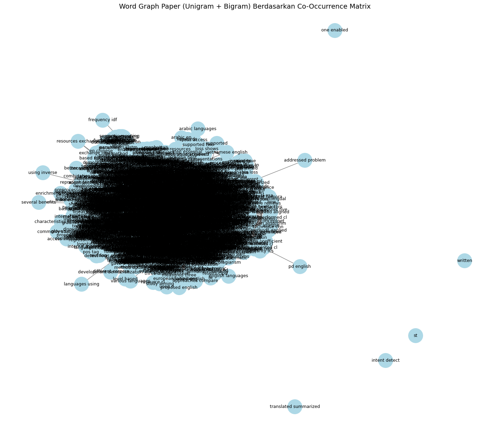
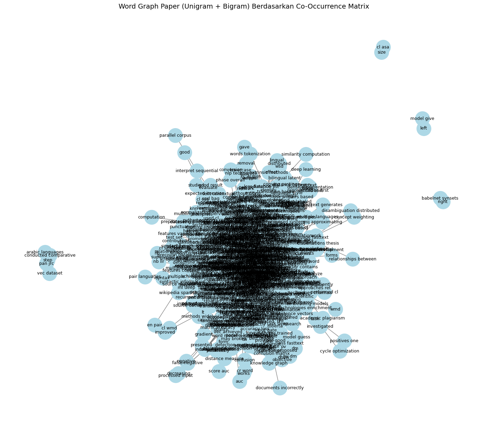
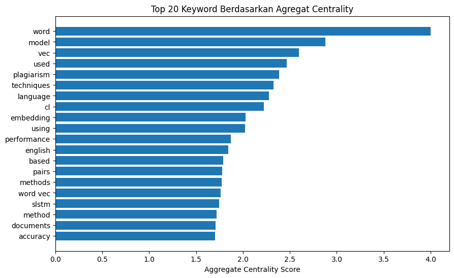

.jpg)
1. Install Library#
from google.colab import drive
drive.mount('/content/drive')
---------------------------------------------------------------------------
ModuleNotFoundError Traceback (most recent call last)
Cell In[1], line 1
----> 1 from google.colab import drive
2 drive.mount('/content/drive')
ModuleNotFoundError: No module named 'google'
!pip install --upgrade pymupdf
!pip install nltk
!pip install networkx
!pip install matplotlib
!pip install pandas
Collecting pymupdf
Downloading pymupdf-1.26.7-cp310-abi3-manylinux_2_28_x86_64.whl.metadata (3.4 kB)
Downloading pymupdf-1.26.7-cp310-abi3-manylinux_2_28_x86_64.whl (24.1 MB)
━━━━━━━━━━━━━━━━━━━━━━━━━━━━━━━━━━━━━━━━ 24.1/24.1 MB 116.7 MB/s eta 0:00:00
?25hInstalling collected packages: pymupdf
Successfully installed pymupdf-1.26.7
Requirement already satisfied: nltk in /usr/local/lib/python3.12/dist-packages (3.9.1)
Requirement already satisfied: click in /usr/local/lib/python3.12/dist-packages (from nltk) (8.3.1)
Requirement already satisfied: joblib in /usr/local/lib/python3.12/dist-packages (from nltk) (1.5.2)
Requirement already satisfied: regex>=2021.8.3 in /usr/local/lib/python3.12/dist-packages (from nltk) (2025.11.3)
Requirement already satisfied: tqdm in /usr/local/lib/python3.12/dist-packages (from nltk) (4.67.1)
Requirement already satisfied: networkx in /usr/local/lib/python3.12/dist-packages (3.6.1)
Requirement already satisfied: matplotlib in /usr/local/lib/python3.12/dist-packages (3.10.0)
Requirement already satisfied: contourpy>=1.0.1 in /usr/local/lib/python3.12/dist-packages (from matplotlib) (1.3.3)
Requirement already satisfied: cycler>=0.10 in /usr/local/lib/python3.12/dist-packages (from matplotlib) (0.12.1)
Requirement already satisfied: fonttools>=4.22.0 in /usr/local/lib/python3.12/dist-packages (from matplotlib) (4.61.0)
Requirement already satisfied: kiwisolver>=1.3.1 in /usr/local/lib/python3.12/dist-packages (from matplotlib) (1.4.9)
Requirement already satisfied: numpy>=1.23 in /usr/local/lib/python3.12/dist-packages (from matplotlib) (2.0.2)
Requirement already satisfied: packaging>=20.0 in /usr/local/lib/python3.12/dist-packages (from matplotlib) (25.0)
Requirement already satisfied: pillow>=8 in /usr/local/lib/python3.12/dist-packages (from matplotlib) (11.3.0)
Requirement already satisfied: pyparsing>=2.3.1 in /usr/local/lib/python3.12/dist-packages (from matplotlib) (3.2.5)
Requirement already satisfied: python-dateutil>=2.7 in /usr/local/lib/python3.12/dist-packages (from matplotlib) (2.9.0.post0)
Requirement already satisfied: six>=1.5 in /usr/local/lib/python3.12/dist-packages (from python-dateutil>=2.7->matplotlib) (1.17.0)
Requirement already satisfied: pandas in /usr/local/lib/python3.12/dist-packages (2.2.2)
Requirement already satisfied: numpy>=1.26.0 in /usr/local/lib/python3.12/dist-packages (from pandas) (2.0.2)
Requirement already satisfied: python-dateutil>=2.8.2 in /usr/local/lib/python3.12/dist-packages (from pandas) (2.9.0.post0)
Requirement already satisfied: pytz>=2020.1 in /usr/local/lib/python3.12/dist-packages (from pandas) (2025.2)
Requirement already satisfied: tzdata>=2022.7 in /usr/local/lib/python3.12/dist-packages (from pandas) (2025.2)
Requirement already satisfied: six>=1.5 in /usr/local/lib/python3.12/dist-packages (from python-dateutil>=2.8.2->pandas) (1.17.0)
2. Import Library#
import pymupdf
import nltk
import re
import pandas as pd
import numpy as np
import networkx as nx
import matplotlib.pyplot as plt
from nltk.tokenize import sent_tokenize, word_tokenize
from nltk.corpus import stopwords
from collections import defaultdict, Counter
from IPython.display import display
3. Download Resources NLTK#
nltk.download('punkt')
nltk.download('punkt_tab')
nltk.download('stopwords')
[nltk_data] Downloading package punkt to /root/nltk_data...
[nltk_data] Unzipping tokenizers/punkt.zip.
[nltk_data] Downloading package punkt_tab to /root/nltk_data...
[nltk_data] Unzipping tokenizers/punkt_tab.zip.
[nltk_data] Downloading package stopwords to /root/nltk_data...
[nltk_data] Unzipping corpora/stopwords.zip.
True
4. Load & Ekstrak PDF Menjadi Teks#
paper = '/content/drive/MyDrive/TUGAS8/Paper.pdf'
doc = pymupdf.open(paper)
full_text = ""
for page in doc:
full_text += page.get_text()
print("Jumlah karakter hasil ekstraksi:", len(full_text))
print("\nPreview teks hasil ekstraksi:\n")
print(full_text)
Jumlah karakter hasil ekstraksi: 56017
Preview teks hasil ekstraksi:
Paper—Word Embedding for High Performance Cross-Language Plagiarism Detection Techniques
Word Embedding for High Performance Cross-Language
Plagiarism Detection Techniques
https://doi.org/10.3991/ijim.v17i10.38891
Chaimaa Bouaine(), Faouzia Benabbou, Imane Sadgali
Laboratory of Modeling and Information Technology, University Hassan II, Casablanca,
Morocco
chaimaa.bouaine-etu@etu.univh2c.ma
Abstract—Academic plagiarism has become a serious concern as it leads to
the retardation of scientific progress and violation of intellectual property. In this
context, we make a study aiming at the detection of cross-linguistic plagiarism
based on Natural language Preprocessing (NLP), Embedding Techniques, and
Deep Learning. Many systems have been developed to tackle this problem, and
many rely on machine learning and deep learning methods. In this paper, we
propose Cross-language Plagiarism Detection (CL-PD) method based on
Doc2Vec embedding techniques and a Siamese Long Short-Term Memory
(SLSTM) model. Embedding techniques help capture the text's contextual
meaning and improve the CL-PD system's performance. To show the
effectiveness of our method, we conducted a comparative study with other
techniques such as GloVe, FastText, BERT, and Sen2Vec on a dataset combining
PAN11, JRC-Acquis, Europarl, and Wikipedia. The experiments for the Spanish-
English language pair show that Doc2Vec+SLSTM achieve the best results
compared to other relevant models, with an accuracy of 99.81%, a precision of
99.75%, a recall of 99.88%, an f-score of 99.70%, and a very small loss in the
test phase.
Keywords—plagiarism, cross-language, FastText, Word2Vec, Doc2Vec,
GloVe, Sen2Vec, BERT, SLSTM
1
Introduction
The development and democratization of the Internet network have enabled several
benefits, namely: huge free resources, exchange of ideas, access to innovative
technologies, enrichment of knowledge, etc. Besides these advantages, some challenges
emerged due to the misuse of resources, and the big one is plagiarism, especially in the
academic sector. Plagiarism is defined as the partial or total reuse of the work of
someone else without citing the original work. Plagiarism can be applied to various
contents such as text, ideas, painting, music, code, etc. The most common forms of
plagiarism [1] include copying without attribution, resubmitting an entire work under a
different author's name, using translation, and copying more than 100 words of an
original work without citing it. Using original works is essential for advancement in
iJIM ‒ Vol. 17, No. 10, 2023
69
Paper—Word Embedding for High Performance Cross-Language Plagiarism Detection Techniques
any domain, as long as the authors cite the origin of the idea or work [2]. The campaign
against plagiarism in the academic domain has become a crucial way to contribute to
scientific development and to conduct an honest competition between researchers.
Many types of research were devoted to surveying academic plagiarism factors [3], [4]
detection systems [5], and punishment measures [6]. Indeed, current educational
systems do not pay enough attention to teaching students to respect copyright and
preserve original works. However, some universities have started to consider the
plagiarism problem and require students to check their reports, dissertations, and thesis
with online tools [7] such as iThenticate [8], Urkund [9], Plagscan [10], etc.
Academic plagiarism is conducted with different methods such as: copy and paste,
translation from other languages, translation and back translation, manipulation of the
text with paraphrasing, style modification, self-plagiarism, plagiarism of ideas, or a
combination of them [11], [12].
The efforts of researchers have resulted in several proposals for plagiarism detection
that can be classified into intrinsic and extrinsic plagiarism detection methods. Extrinsic
methods [13] are based on the correlation between the suspicious text and a collection
of candidate texts. The intrinsic plagiarism detection methods [14], [15] exploit the data
inside the text in focus, such as the form, language, style, symbols, images, contrasts,
and structure. The intrinsic approach is also known as "formalism" because it is
primarily concerned with the form of the text [16]. Lexical and semantic techniques are
generally recommended for detecting plagiarism. The lexical approach focuses on
using the lexical features of the documents, which act at the word level of the text, to
identify the plagiarism scenarios in the document.
This approach attempts to enhance standard string matching for plagiarism
detection [17]. The semantic approach focuses on the meaning of words, sentences, or
texts by finely analyzing the word combinations and their local and global context. The
latter usually relies on the capacity of the Word Embedding (WE) techniques to
represent the units (word, sentence, paragraph, etc.) of documents while saving their
contexts. Word embedding techniques, in fact, seek to represent a text using real-
number vectors in a predefined vector space. These new representations of textual data
have enhanced the performance of Natural Language Processing (NLP) techniques like
topic modeling and sentiment analysis [18]. The present paper focuses on cross-lingual
plagiarism detection (CLPD) with extrinsic methods. Cross-lingual plagiarism might
include different types of plagiarism, from copying and pasting and paraphrasing to
plagiarism of ideas, where the text may be quite different but the ideas it depicts are
copied from other works published in other languages.
In this paper, we propose a method for CLPD based on Doc2Vec and SLSTM. For
this aim, we conducted a state-of-the-art analysis of inter-language plagiarism detection
methods based on WE techniques. In order to evaluate the performance of our method,
we combined the PAN11, JRC_AQCUIS, Europarl, and Wikipedia (Spanish-English)
datasets in order to have enough training data. Using this dataset, we compared the
performance results of Word2Vec, FastText, Doc2Vec, Word2Vec+Sen2Vec, and
BERT methods, as they were the most used in literature reviews.
The rest of this document is organized as follows: The next section presents the state
of the art in CLPD techniques. In Section 3, we describe our proposal and methodology.
70
http://www.i-jim.org
Paper—Word Embedding for High Performance Cross-Language Plagiarism Detection Techniques
Section 4 is devoted to the experiments and results. Finally, we conclude the main
results and discuss avenues for future work.
2
Related work
Numerous methods have been developed in an effort to identify various forms of
plagiarism, such as paraphrasing, citation, cross-language (CL), and monolingual
plagiarism, as a result of research into plagiarism detection strategies. These methods
frequently rely on several NLP preprocessing techniques, such as the elimination of
stop words, tokenization, normalization, lemmatization, and stemming, to prepare the
data. The data must be cleaned and prepared in order for machine learning techniques
to use it for training. In this section, we will give a study of research publications that
use WE approaches to address the issue of CL-PD and suggest a comparison to show
the benefits and drawbacks of each strategy.
Aljuaid et al. [19] addressed the problem of CL-PD for English-Arabic languages
using WE and Inverse Document Frequency (IDF) techniques. The approach used
semantic and syntactic methods and treated word and sentence levels. A new bag of
words was proposed, called CL Conceptual Thesaurus-based Similarity Continuous
Bag-of-Words (CL-CTS-CBOW), for word level, and another method called CL Word
Embeddings Similarity (WES) based on the cosine similarity for sentence level. The
proposed system achieved an F-score of 88% for English-Arabic similarity detection at
the word level and an F-score of 82.75% at the sentence level based on different
corpora. Nguyen et al. [20] used Siamese recurrent architectures to define instances of
Vietnamese-English CL paraphrases. English and Vietnamese sentences were
preprocessed using the Part of Speech (POS) tag revision method to update the POS of
English and Vietnamese sentences. A parallel Long Short-Term Memory Model
(LSTM) was used to measure the similarity of two sentences and to identify the
paraphrase instances encoded by the Word2Vec method. The experimental results on
the English-Vietnamese paraphrase corpus achieved an accuracy of 89.61%. Glavaš et
al. [21] proposed a Low-Resource CL Semantic Textual Similarity (STS) based on the
measure of the semantic similarity between texts in various languages. In this approach,
the Word2Vec model was applied for each language, and used a Linear Translation
Matrix (LTM) model to project vectors from the source language into the embedding
space of the target language. The performance of the proposed system was mainly
measured with three different STS datasets including three language pairs: English-
Spanish, English-Italian, and English-Croatian. The results of the evaluation indicate
that CL-STS exhibits concurrent performance and stability for various language pairs,
including Croatian as an underserved language pair. Mahmoud et al. [22] proposed a
CL-PD system for Arabic-English languages using the Sent2Vec technique and CNN
algorithm. For the preprocessing stage, they used the removal of irrelevant data,
normalization to reduce ambiguities, annotation of words by their grammatical classes,
and tokenization. Three layers were presented: 1) a feature extraction layer; 2) a max-
pooling layer that allows the generation of a reduced semantic vector; and 3) a
comparison layer to evaluate the similarity between sentences and convert the output
iJIM ‒ Vol. 17, No. 10, 2023
71
Paper—Word Embedding for High Performance Cross-Language Plagiarism Detection Techniques
score into a probability distribution. The results showed that Sent2Vec outperformed
Word2Vec and achieved a precision of 85% and a recall of 86.8%. Alotaibi et al. [23]
presented a CL-PD system for Arabic-English languages based on syntactic and
semantic features and using different Machine Learning (ML) classifiers. The
preprocessing phase included tokenization, POS tagging, removing punctuation marks,
normalization, and the use of the Word2Vec and Term Frequency-Inverse Document
Frequency (TF-IDF) techniques. Multilingual Unsupervised and Supervised
Embedding encoders (MUSE) were used to extract features, and various ML classifiers
were tested, including logistic regression (LR), support vector classification (SVC),
decision trees (DT), K-Nearest Neighbors (KNN), and extreme gradient boosting
(XGBoost). Support Vector Classifier (SVC) performed with an F-score of 87.9%.
Lachraf et al. [24] addressed the extrinsic and intrinsic approaches to plagiarism
detection. For the extrinsic approach, they used the CL semantic similarity to produce
the semantic and syntactic properties of words in two different languages, such as
Arabic and English. While in the intrinsic method, they employed the Skip-Gram and
CBOW embedding methods to evaluate the word translation task. Three methods of
learning models were applied, namely: Parallel Mode, Word by Word Alignment
Mode, and Random shuffling Mode. The random shuffle method with the skip-gram
model provided the highest-performing approach with a correlation rate of 75.7%.
Alzahrani et al. [25] addressed the case of Arabic-English CL plagiarism and used Deep
Neural Networks (DNN), Logistic Regression (LR), and SVM models. Two tasks were
performed: CL-STS with an LR model and the classification task with an SVM. Two
types of classification are performed. The first one enabled the detection of the
plagiarized pair of documents, and the second classification intent was to detect four
types of plagiarism: IW (independently written), ST (translated and summarized), PT
(translated and paraphrased), and LT (literally translated). The SVM model achieved
96.65% accuracy, the LR model 96.64% accuracy, and the DNN model 97.01%
accuracy. Zubarev et al. [26] addressed the problem of CL-PD to handle the task of
alignment of Russian-English CL text. Three methods for translation plagiarism
detection were compared. The first one achieved a precision of 75% and was based on
Sentence Embedding, neural machine translation, and various textual similarity
methods. The second method is built using the fine-tuning of the pre-trained model
BERT, which achieved a precision of 96%. The last one used the Language-Agnostic
Sentence Representations (LASER) model and achieved a precision of 90%. Chi et al.
[27] proposed English-Vietnamese CL-PD for the task of identifying paraphrases in a
pair of documents. They used the Multi-Task Deep Neural Network (MTDNN) model,
which is a combination of the pre-trained models BERT Multilingual (M-BERT) and
CL Mode Roberta (XLM-R). Using the GLUE datasets, XLM-R provides high
performance compared to M-BERT with a 9% and 6% increase in accuracy, which
reached 82.8% and an F-score of 87.6%, respectively, before the fine-tuning step. After
the fine-tuning step, this difference increased to 84.3% for precision and 88.5% for F-
score. Nagoudi et al. [28] proposed a CL-PD system based on two WE approaches to
compare the semantic text similarity of sentences in Arabic and English. The idea is to
grasp the syntactic and semantic properties of the words by employing machine
translation (MT) and word embedding. The weighted aligned words (WA) and Bag of
72
http://www.i-jim.org
Paper—Word Embedding for High Performance Cross-Language Plagiarism Detection Techniques
Words (BoW) WE methods were applied to assess semantic similarity. Additionally,
IDF and POS weights were applied to sentences to identify the most meaningful words
in each sentence. POS, mixed weights and IDF weights achieved a correlation rate of
77.39%. Al-Suhaiqi et al. [29] proposed an Arabic-English CL-PD system that
combines the extraction of key phrases to compute the frequency of phrase and the list
of candidate key phrase rankings. The approach used N-gram similarity, LCS, Dice
Coefficient, fingerprint-based Jaccard similarity, and fingerprint-based Containment
similarity. Linear logistic regression (LLR), Naive Bayes, and SVM machine-learning
models were applied, and the result showed that the SVM technique achieved 92% for
the F-score with the use of more than three methods of similarity computation. The
study confirms that the choice of similarity calculation methods has a clear effect on
the quality of the detection method. In [30], the authors proposed an English-Arabic
CL-PD system based on sentence similarity. This model used two steps to represent
sentence vectors. Firstly, they used the CL-WE-Tw machine translation-based method,
which mixed Word2Vec, POS, and Word2Vec with TF-IDF methods. The second step
is the combination of the MUSE model with the CL-WE-Tw method. The Word2Vec
model combined with POS and TF-IDF weighting performed well, with a Pearson
correlation of 0.69 and 0.77, respectively. Measuring the similarity of two sentence
vectors with the MUSE model gives the best results, with a correlation of 0.78 for POS
and 0.79 for TF-IDF. They concluded that the combination of the CL-WE-Tw and
MUSE models gave more important results than using them independently. Yinhan et
al. [31] proposed a Chinese-Thai CL sentence similarity calculation method based on
sentence embedding. The sentence-embedding model is based on word vectors
obtained using Word2Vec, and then they are summed and averaged to obtain the
sentence vectors. The Chinese sentence embedding is mapped to the Thai sentence
embedding space, and the Chinese-Thai CL sentence similarity is determined by using
the cosine similarity. The Chinese-Tai interlingual model performed better than the
machine translation and bilingual Latent Dirichlet allocation (LDA) algorithms.
Stegmüller et al. [32] presented a method, CL-PD based on ontology and similarity
analysis (CL-OSA). They used open knowledge graphs and covered the following
language pairs: Spanish-English, Japanese-English, Japanese-Chinese, and English-
French. The CL-OSA approach groups documents by topics, annotates each word with
POS, and extracts entities from the Wikidata open knowledge network to represent the
documents as entity vectors. The candidate documents are ranked based on their
similarity score, and the relationships between entities are calculated using the cosine
similarity. CL-OSA outperformed the CL-PD methods such as CL-ESA, CL-ASA,
USE-ML, and ConceptNet for the five multilingual test corpora. Chang et al. [33]
developed the CL Word Mover's Distance (CL-WMD) technique to deal with the
English-Chinese CL-PD issue. For each language, the skip-gram method was employed
to create WE spaces. The first step is to place the word space into the integration space
by considering a small set of bilingual word translations and calculating the semantic
distance between the texts using the word displacement distance. CL-WMD achieved
a Hit score of 97.09% (Hit score is a quantitative measurement for evaluating the
performance) for plagiarism detection at the paragraph level and 86.09% at the sentence
level. Ferrero et al. [34] proposed a CL similarity detection method for English-French
iJIM ‒ Vol. 17, No. 10, 2023
73
Paper—Word Embedding for High Performance Cross-Language Plagiarism Detection Techniques
language pairs based on WE-CBOW. The results show that CL Word Embedding-
based Syntax Similarity (CL-WESS) was the most effective method. Also, all methods
can be complementary, and their fusion significantly improved the performance of CL
textual similarity detection. This fusion of chunk and sentence gives an F-score of
89.15% for similarity detection at the chunk level and 88.5% at the sentence level.
Montes-y-Gómez et al. [35] proposed a CL-PD system that used knowledge graphs to
represent text fragments as a language-independent model of their content. They made
use of Word Sense Disambiguation and Distributed Concept Weighting (DCW)
(WSD). By utilizing BabelNet synsets and the skip-gram model to give vector
representations of concepts, DCW enables the expression of the strength of association
between concepts (synset) to generate the distributed representation of contexts. WSD
is designed to alleviate the problem of determining the meaning of a word since it can
have several possible senses. The combination of WSD and DCW by using the skip-
gram model provides important results, with a PlagDet of 66.3% for the language pair
Spanish-English and 59.5% for Allemand-English. They used Dice’s coefficient and
cosine distance to measure the relationship between the synsets. The latter is the set of
synonymous words that can be used to express the same meaning in a given language.
To have a better view of this state-of-the-art, Table 1 summarizes the results for the
CLPD based on six characteristics:
• Language Pairs (LPairs): shows a couple of languages studied: English-Arabic
(En-Ar), Vietnamese-English (Vi-En), English-Spanish (En-Sp), English-Italian
(En-It), English-Croatian (En-Cr), Russian-English (Ru-En), Chinese-Thai (Ch-Th),
English-French (En-Fr), Japanese-Chinese (Ja-Ch), Japanese-English (Ja-En),
English-Chinese (En-Ch).
• Preprocessing (Preproc.): describes the preprocessing techniques applied in the
approach, such as Named Entity Recognition (NER), Parts of Speech (POS),
Semantic Role Labeling (SRL), Spatial Role Labeling (SpRL), and Bag of Meanings
(BOM).
• Feature Extraction: presents the feature extraction techniques used: Word2Vec
(Skip-Gram, CBOW), Glove, TF-IDF, Sent2Vec, BERT, MUSE, Transformer
Encoder (TE), and Lexicon Encoder (LE).
• Techniques (Tech.): means Machine Learning (ML) or Deep Learning (DL)
techniques such as LSTM, CNN, DNN, LR, SVM, XGBoost (XGB), etc.
• Dataset: describes the dataset used for the training step.
• Performance (Perf.) presents the performance metrics used, such as Accuracy (A),
Precision (P), F-score (F), Recall (R), Correlation (C), and Hit score (H).
74
http://www.i-jim.org
Paper—Word Embedding for High Performance Cross-Language Plagiarism Detection Techniques
Table 1. Comparaison of cross language plagiarism detection approaches
Ref
LPairs
Preproc.
Feature
Extraction
Tech.
Dataset
Perf. (%)
[19]
En-Ar
POS
CLWES
IDF
CBOW
–
Books
Wikipedia
EAPCOUNT
MultiUN
F:88
F:78
F:86
[20]
Vi-En
POS
Word2Vec
SLSTM
TED
A:89.61
[21]
En-Sp
En-It
En-Cr
–
Word2Vec
+
GloVe
–
SBW
hrWaC
Wikipedia
R:94.8
[22]
Ar-En
POS
Sen2Vec
Word2Vec
CNN
OSAC
P:85
P: 83.2
[23]
Ar-En
POS
Sen2Vec
+
Word2Vec
+
TF-IDF
SVC
LR
DT
KNN
RF
XGB
LSVC
SemEval-2017
F:87.9
F:87.1
F:87.1
F:85.2
F:86.1
F:86.4
F:87.5
[24]
Ar-En
–
Skip-Gram
CBOW
–
SemEval-2017
C:75.7
C:52.8
[25]
Ar-En
POS NER
SRL
BOM SpRL
Word2Vec
DNN
SVM
LR
71,910 of En-Ar
pairs
A:97.01
A:96.64
A:96.65
[26]
Ru-En
POS
BERT
LASER
Sentence
Embedding
LR
source multiple
P: 96
P: 90
P: 75
[27]
En-Vi
–
XLM-R
MBERT
–
GLUE
SemEval
A:84.3
A:73.7
[28]
Ar-En
POS
IDF
–
SemEval-2017
C:77.39
[29]
Ar-En
–
–
SVM
NB
LLR
318 files Arabic
54 files English
F: 92
F: 88
F: 85
[30]
En-Ar
POS
Sen2Vec
+
TF-IDF
+
Word2Vec
+
MUSE
–
SemEval-2017
C:81.47
[31]
Ch-Th
–
Word2Vec
–
Chinese-Thai
Parallel
A: 39.63
[32]
Sp-En
Ja-En
Ja-Ch
En-Fr
POS NER
Open Knowledge
Graph
–
source multiple
P: 50.6
R: 34.9
[33]
En-Ch
–
Word2Vec
–
NDLTD
H:97.09
[34]
En-Fr
–
Word2Vec
–
–
F:89.15
[35]
Sp-En
–
Skip-gram
–
PAN-11
P :76.1
R :58.8
iJIM ‒ Vol. 17, No. 10, 2023
75
Paper—Word Embedding for High Performance Cross-Language Plagiarism Detection Techniques
From Table 1, we can see that the most commonly studied language pair is English-
Arabic. For the preprocessing phase, some works used basic NLP techniques like stop
word removal, lowercase conversion, tokenization, and lemmatization. Other works
used techniques like NER, POS, SRL, BOM, and SpRL for deep processing. Different
embedding techniques were investigated for feature extraction. The state-of-the-art
shows that Word2Vec and TF-IDF methods are the most widely used techniques for
vector representation.
Most studies, after document representation with embedding techniques, used the
similarity computation to compare a couple of documents without using any classifier.
In fact, models such as NB, LLR, SVC, LR, DT, KNN, RF, XGBoost, and LSVC were
not always used for classification purposes. However, approaches based on a classifier
have a more promising performance compared to models using just embedding
techniques. For example, Word2vec+DNN outperformed with an accuracy of 97.01%,
Word2Vec+SVM achieved an accuracy of 96.64%, and Word2Vec +LR performed
with an accuracy of 96.65% for the textual semantic similarity task. Also, BERT
contextual embedding achieved an accuracy of 96% with the LR model. The cosine is
used in the majority of works to calculate the similarity of processed documents. Other
functions were used, including Dice-Coefficient and Jaccard similarity. Different
datasets are devoted to the detection of CL plagiarism, such as PAN11, OSAC,
SemEval, Wikipedia, etc. All of them are made up of sentences and documents.
3
Research method
According to the state of the art, various performance results have been discussed to
analyze the effect of the word embedding techniques on the CL-PD systems using
different datasets and different language pairs. In this paper, we propose a Spanish-
English CL-PD based on Doc2Vec embedding techniques and Siamese LSTM models,
as depicted in Figure 1.
76
http://www.i-jim.org
Paper—Word Embedding for High Performance Cross-Language Plagiarism Detection Techniques
Fig. 1. The proposed methodology
3.1
Dataset collection
In order to have sufficient training data, we have gathered four datasets: PAN-PC-
11, JRC-Acquis, Europarl, and Wikipedia (Spanish-English) [36, 37, 38, 39]. An
iJIM ‒ Vol. 17, No. 10, 2023
77
Paper—Word Embedding for High Performance Cross-Language Plagiarism Detection Techniques
evaluation corpus for automatic plagiarism detection algorithms is the PAN 2011
(PAN-PC-11). The datasets are a collection of source documents in Spanish and their
corresponding suspicious documents in English. It also contains another language pair
(English-German), but for now, we focus on the SP-EN pair of languages. The JRC-
Acquis parallel corpus is suitable for all types of CL research; it is excerpted from the
Acquis Communautaire (AC), and 10.000 documents in SP and EN pair languages were
used. The Europarl Parallel Corpus is excerpted from the proceedings of the European
Parliament and includes 21 European languages. We used 9423 documents for the
Spanish language. The Wikipedia parallel corpus contains multiple languages; to reach
a balanced dataset, we used 9423 documents for the English language, which are very
different from the 9423 Spanish documents. Hence, our dataset includes 19633 source
documents and 19633 suspect documents. The PAN-PC-11 and JRC-Acquis datasets
include only the plagiarized documents, and in order to add the non-plagiarized
documents, we used the source documents from the Europarl dataset and suspect
documents from the Wikipedia dataset and labeled them as not plagiarized. The final
dataset used is described in Table 2.
Table 2. Characteristics of dataset used
DATASET
Documents-pairs
label
Size
PAN-11
210
Plagiarized
88Mo
JRC-Acquis
10000
Plagiarized
436Mo
Wikipedia+
Europarl
9423
Not Plagiarized
382Mo
3.2
Preprocessing techniques
After dataset collection, we have as input a list of pairs of source documents and
suspicious documents with two different languages (ES-EN) annotated as plagiarized
or not. To prepare and clean the data, we apply some NLP techniques to the documents,
such as the removal of punctuation and stop words, the conversion to lowercase, and
the tokenization of words. We used the Natural Language Toolkit (NLTK), which is a
software library in Python that supports the lemmatization of the documents into
Spanish and English.
3.3
Feature extraction
The feature extraction techniques are used to convert documents into vectors using
different WE techniques. Word embedding is a technique that converts individual
words into a vector numerical representation. The vector captures various properties of
this word about the text where it is located. These features can contain semantic and
syntactic information. This step is essential when working with text using machine-
learning models. Below, we propose a brief description of the techniques studied.
78
http://www.i-jim.org
Paper—Word Embedding for High Performance Cross-Language Plagiarism Detection Techniques
Word2Vec: is a word embedding technique proposed by Thomas Mikolov [40], [41]
that represents each word in a vector space. The semantic similarity between the words
is calculated using the vectors. Word2Vec contains two methods:
• Continuous Bag of Words Model (CBOW): uses the surrounding words to predict
the central word.
• Skip-Gram Model: seeks to predict the surroundings based on the center word.
Doc2Vec: can be considered an extension of Word2Vec, which aims to create
representation vectors for long text such as documents, paragraphs, and sentences. The
representation of paragraphs in vectors is inspired by the way words are represented in
vectors. This neural network uses words and paragraphs to generate vectors
corresponding to the paragraphs. Doc2vec implements two techniques known as
Paragraph Vector Distributed Memory (PV-DM) and Paragraph Vector Distributed
Bag of Words (PV-DBOW). In PV-DM, each paragraph is represented by a distinct
vector, in the form of a column in the matrix M, and each word is likewise presented
by a distinct vector, appearing as a column in the N matrix. The paragraph vector and
the word vectors are then combined to anticipate the next word in the context. As for
PV-DBOW, this involves disregarding the context of the incoming words and having
the model guess words chosen at random from the output paragraph. This implies that,
at each iteration of the stochastic gradient descent, a window of text is selected, then a
randomly chosen word from the text window and a classification undertaking is carried
out, taking into account the paragraph vector [42].
GloVe: (global vectors for word representation) is used to efficiently capture
contextual relationships between words [43]. It constructs a word-word co-occurrence
matrix Mij by approximating the probability that a word wi occurs in a word wj. It is
given by a function J for generating fixed-dimensional vectors from the vocabulary size
V, scalar distortions bi and bj, and weighted frequencies. It is calculated as follows in
equation (1):
J=𝑓𝑓(𝑋𝑋𝑖𝑖𝑖𝑖)(𝑤𝑤𝑖𝑖
𝑇𝑇𝑤𝑤𝑗𝑗+ 𝑏𝑏𝑖𝑖+ 𝑏𝑏𝑗𝑗−𝑙𝑙𝑙𝑙𝑙𝑙𝑙𝑙𝑙𝑙𝑙𝑙 ൫𝑋𝑋𝑖𝑖𝑖𝑖൯ )2
(1)
FastText: is a free public-source library created by the Facebook AI Research team
for learning WE and classification [44, 45]. For each word, FastText generates a word
vector that contains both the term's meaning and its context in the document. It provides
two models for computing word representations: Skip-Gram and CBOW, and covers
157 languages. Rather than teaching the word vectors directly, FastText represents
every word as an n-gram character. Once words are mapped using n-grams of
characters, a skip-gram model is formed to learn the embedded word. The model
considers a word model with a sliding window on the words, as the internal structure
of the words is not considered. The position of the n-grams does not matter as long as
the characters are within this window. Even if a word does not appear during training,
it may be broken down into n-grams to maintain its integration.
BERT: (Bidirectional Encoder Representations from Transformers) is designed to
take into account both the left and right context in all layers to pre-train deep
bidirectional representations of unlabeled text [46]. BERT applies two methods:
iJIM ‒ Vol. 17, No. 10, 2023
79
Paper—Word Embedding for High Performance Cross-Language Plagiarism Detection Techniques
Masked Language Modeling (MLM) and Next Sentence Prediction (NSP). The
objective of MLM is to hide a random selection of input tokens and then attempt to
predict those obscured tokens. The NSP task aims to ascertain whether a certain
sequence A is followed by a certain sequence B or not. This task is conducted by
combining two sequences at each iteration, with sentence A being followed by sentence
B in 50% of cases.
3.4
SLSTM deep learning
Long-Short-Term Memory (LSTM) is a type of Recurrent Neural Network (RNN)
that is designed to address the gradient problem, making it effective for tasks that
require long-term memory, such as text sequence prediction. This is accomplished by
adding an internal memory state to the processed input, decreasing the impact of
vanishing gradients [47], [48]. As illustrated in Figure 2, the forget gate is responsible
for controlling the effects of previous input over time. Additionally, the cell has two
other gates, the input gate, and the output gate.
Fig. 2. The LSTM Architecture [49]
The formulas used to calculate Input Gate, Forget Gate, and Output Gate are depicted
in equation (2), (3), and (4).
Input Gate: 𝑖𝑖𝑡𝑡= 𝜎𝜎(𝑤𝑤𝑖𝑖[ℎ𝑡𝑡−1, 𝑥𝑥𝑡𝑡] + 𝑏𝑏𝑖𝑖)
(2)
Forget Gate: 𝑓𝑓𝑡𝑡= 𝜎𝜎(𝑤𝑤𝑓𝑓[ℎ𝑡𝑡−1, 𝑥𝑥𝑡𝑡] + 𝑏𝑏𝑓𝑓)
(3)
Output Gate: 𝑂𝑂𝑡𝑡= 𝜎𝜎(𝑤𝑤𝑜𝑜[ℎ𝑡𝑡−1, 𝑥𝑥𝑡𝑡] + 𝑏𝑏𝑜𝑜)
(4)
In our approach, the SLSTM model is used to learn plagiarism cases through a more
accurate representation of the documents and also to detect similarity between pairs of
objects, as it works well on similarity tasks. We used the Siamese LSTM, a version of
the Manhattan LSTM model. The SLSTM has two networks, the left LSTM and the
right LSTM, and each one will process a document and the other its corresponding
suspect in a dependent manner. Furthermore, the vector representations of two texts
return a hidden state encoding the semantic meaning of the texts. These hidden states
are compared using a similarity metric to return a similarity score [50, 51].
80
http://www.i-jim.org
Paper—Word Embedding for High Performance Cross-Language Plagiarism Detection Techniques
4
Experiments and results
In this section, we present the results of our approach and make comparisons with
FastText, Word2Vec, GloVe, BERT, and combinations of Word2Vec and Sent2Vec
techniques using the accuracy, precision, recall, and f-score metrics.
4.1
Performance measure
The analysis of the suggested models is performed using performance metrics. They
are computed using True Positive (TP), True Negative (TN), False Positive (FP), and
False Negative (FN) values.
• Precision: is a measure that counts the number of accurate predictions that turn out
to be true:
𝑃𝑃𝑃𝑃𝑃𝑃𝑃𝑃𝑃𝑃𝑃𝑃𝑃𝑃𝑃𝑃𝑃𝑃= 𝑇𝑇𝑇𝑇/(𝑇𝑇𝑇𝑇+ 𝐹𝐹𝐹𝐹)
(5)
• Recall: the following formula is used to determine the number of accurate class
predictions:
𝑅𝑅𝑅𝑅𝑅𝑅𝑅𝑅𝑅𝑅𝑙𝑙= 𝑇𝑇𝑇𝑇/(𝑇𝑇𝑇𝑇+ 𝐹𝐹𝐹𝐹)
(6)
• Accuracy: is the more intuitive performance metric. The formula used to calculate
the accuracy is the following:
𝐴𝐴𝐴𝐴𝐴𝐴𝐴𝐴𝐴𝐴𝐴𝐴𝐴𝐴𝐴𝐴= (𝑇𝑇𝑇𝑇+ 𝑇𝑇𝑇𝑇)/(𝑇𝑇𝑇𝑇+ 𝐹𝐹𝐹𝐹+ 𝑇𝑇𝑇𝑇+ 𝐹𝐹𝐹𝐹)
(7)
• F-score: is employed as a statistical metric to evaluate performance. An F-score
could be supported by two factors, i.e., precision (P) and recall (R). The formula
used to calculate the F-score is [52]:
𝐹𝐹−𝑆𝑆𝑆𝑆𝑆𝑆𝑆𝑆𝑆𝑆= 2 ∗(𝑃𝑃∗𝑅𝑅)/(𝑃𝑃 + 𝑅𝑅)
(8)
Table 3. Parameters of SLSTM Model
Model
Parameter
Value
SLSTM
Neuron
100
Dropout
0.5
Activation Function
Sigmoid
Optimizer
SGD
Loss Function
Binary cross Entropy
Batch size
64
Epochs
50
iJIM ‒ Vol. 17, No. 10, 2023
81
Paper—Word Embedding for High Performance Cross-Language Plagiarism Detection Techniques
4.2
Results and analysis
Our objective is to propose a CLPD method based on Doc2Vec embedding and the
Siamese Long Short-Term Memory (SLSTM) model, which takes as input the
Doc2Vec embedding vectors of the first text at the LSTM layer and the embedding
vectors of the second text at the LSTM layer separately and obtains a dense
representation for the first and the second text. The fusion layer takes the dense
representation of the first text and the second text and calculates the cosine distance
between them. The experimental results of Doc2Vec were compared to other
embedding techniques such as GloVe, FastText, Doc2Vec, Word2Vec+Sen2Vec, and
BERT. For each method, we present the confusion matrix, the accuracy, recall,
precision, F-score, and AUC values. The confusion matrix is shown in Figure 3.
Fig. 3. Confusion matrix for each model
Word2Vec Model
82
http://www.i-jim.org
Paper—Word Embedding for High Performance Cross-Language Plagiarism Detection Techniques
For binary classification, the confusion matrices of each model are as follows: 1
represents plagiarized documents, and 0 represents non-plagiarized documents.
According to the confusion matrix, the glove method correctly classified 3927
documents; only 7 were incorrectly classified as false positives, and one false negative
was incorrectly classified by the model. For the Doc2Vec model, we can see that among
3927 documents, 11 cases were incorrectly classified as false positives, and 1 was
incorrectly classified as false negatives by this model. For the four models, Word2Vec,
BERT, Word2Vec + Sent2Vec, and FastText, we can notice that the misclassified are
more lifted compared to Glove and Doc2Vec.
Table 4 shows the performance measures of the Doc2Vec+SLSTM model in the test
phase compared with the feature extraction techniques GloVe, FastText, BERT,
Word2Vec, and Sent2Vec. All feature techniques investigated performed well on the
five measures of performance. The Doc2Vec model achieved high performance with
an accuracy of 99.81%, a precision of 99.75%, a recall of 99.88%, an f-score of 99.70%,
and an AUC of 99.96%. The GloVe method provides a good result with an accuracy of
99.59%. The Glove+SLSTM model achieves good performance for all metrics, with
99.39% of precision, 99.88% of recall, 99.80% of f-score, and 99.89% of AUC. In the
third range, BERT performed well, with 99.49% of accuracy and an AUC of 99.91%.
Word2Vec achieved an accuracy of 99.14% and an AUC of 99.85%, which is also a
good result. FastText and Sen2Vec performed lower than the previous models, with an
accuracy of 98.82 and 98.41%, respectively.
Table 4. Models Performance in test set
Model
Accuracy (%)
Precision
(%)
Recall
(%)
F-score
(%)
AUC
(%)
Doc2Vec+SLSTM
99.81
99.75
99.88
99.70
99.96
GloVe+SLSTM
99.59
99.39
99.82
99.80
99.89
FastText+SLSTM
98.82
98.37
99.39
99.23
99.84
BERT+SLSTM
99.49
99.45
99.57
99.46
99.91
Word2Vec
+SLSTM
99.14
99.03
99.33
99.43
99.85
Sen2Vec+
SLSTM
98.41
98.03
98.98
99.13
99.74
To identify whether there is a learning problem, such as a model that is underfitting
or overfitting, we examined the accuracy of the model during the training phase. After
each cycle of optimization, the accuracy and loss values of a model indicate whether it
is performing well or poorly. A decrease in loss and an increase in accuracy are
expected after each iteration or several iterations. The accuracy of curve in Figure 4
shows that the Doc2Vec+SLSTM model is well-trained. The accuracy of the validation
and training datasets increased for the last few epochs and reached 99.97% for training
and 99.81% for validation. Thus, the loss of the model is 0.0049 for training and 0.0089
for validation, while the variance is smaller, which makes the model perform well.
iJIM ‒ Vol. 17, No. 10, 2023
83
Paper—Word Embedding for High Performance Cross-Language Plagiarism Detection Techniques
Fig. 4. Accuracy/Loss of Doc2Vec Model
The curves of the Glove+SLSTM model in Figure 5 show the accuracy and loss for
the training and validation data. For accuracy, the training and validation data are
approaching 1, with 99.90% for the training data and 99.59% for the validation data.
For the loss curve presented in Figure 5, the model converges to 0 for both types of
data, which indicates that the model has a good prediction because it reaches a loss of
0.0078 for training and 0.02 for validation.
Fig. 5. Accuracy/Loss of GloVe Model
The graph of the accuracy/loss of FastText+SLSTM presented in Figure 6 achieves
an accuracy of 99.98% for training and 98.82% for validation. The plot of loss shows
that the model has a reasonable loss of 0.0047 for training and 0.03 for validation.
84
http://www.i-jim.org
Paper—Word Embedding for High Performance Cross-Language Plagiarism Detection Techniques
Fig. 6. Accuracy/Loss of FastText Model
The BERT+SLSTM model also achieved an interesting result, and Figure 7 shows
that the loss on the training declines rapidly during the top five epochs. For the
validation, the loss does not decline at the same rate as the training set but remains
almost flat for several epochs.
Fig. 7. Accuracy/Loss of BERT Model
The curves in Figure 8 show that the Word2Vec+SLSLTM model reaches 99.98%
accuracy for training and 99.14% accuracy for validation. The loss has remained stable
over the last few epochs and decreased for training to 0.0055 and 0.03 for validation.
iJIM ‒ Vol. 17, No. 10, 2023
85
Paper—Word Embedding for High Performance Cross-Language Plagiarism Detection Techniques
Fig. 8. Accuracy/Loss of Word2Vec Model
The graph in Figure 9 shows that Sen2Vec has good convergence for loss and
accuracy for the training and validation. The performance remained closed with an
accuracy of 98.71% for the training and 98.41% for the validation. The loss is 0.04 for
training and 0.05 for validation.
Fig. 9. Accuracy/Loss of Sen2Vec Model
The experiment results showed that all the models gave interesting results, but the
Doc2Vec and GloVe models outperformed the embedding models Word2Vec,
FastText, BERT, and Sen2Vec. The Doc2Vec model achieved better results than the
glove model, with an accuracy of 99.81 and a loss of 0.0089 for the test phase. Our
approach outperformed the baseline based on PAN 11, such as in [25], where
Word2Vec + DNN achieved an accuracy of 97.01%, and in [26], where BERT + LR
achieved a high accuracy of 96% on a different dataset. The performance results tested
on the same language pair, Spanish- English, show that the combination
Word2Vec+SLSTM model achieved a precision of 93%, which is higher than the Skip
Gram model [34] based on Knowledge Graph that performed at 76.1% of precision,
also based on the PAN-PC-11 dataset.
86
http://www.i-jim.org
Paper—Word Embedding for High Performance Cross-Language Plagiarism Detection Techniques
Collecting more training data, the Doc2Vec feature extraction method, and the
SLSTM model contributed to improving the performance of Spanish-English CLPD,
which achieved an accuracy of 99.81% and outperformed the baseline.
5
Conclusion
In this paper, we address the problem of Spanish-English CLPD. We proposed an
approach based on Doc2Vec and SLSTM models as a novel approach for CL-PD. The
models were trained on the aggregation of four publicly available corpora, namely
Pan11, JRC-Acquis, Europarl, and Wikipedia. The use of the deep learning technique
SLSTM improved the performance of five embedding models such as Word2Vec,
GloVe, BERT, Word2Vec+Sen2Vec, and FastText. The experiments demonstrated that
the Doc2Vec+SLSTM model achieved the highest results, with an accuracy of 99.81%
and a very low loss in the test phase. The method was able to interpret sequential
information and maintain long-term dependencies between words efficiently. Future
work will aim to extend the current methodology to other contextual integration
techniques, generalize it to other language pairs, and study the impact of document size
in the training phase on the overall performance of integration techniques.
6
References
[1] E. Wager, “Defining and responding to plagiarism,” Learn. Publ., vol. 27, no 1, p. 33‑42,
2014. https://doi.org/10.1087/20140105
[2] N. Son, H. Le, et C. T. Nguyen, “A two-phase plagiarism detection system based on multi-
layer LSTM networks,” IAES Int. J. Artif. Intell. IJ-AI, vofol. 10, p. 636‑648, sept. 2021.
https://doi.org/10.11591/ijai.v10.i3.pp636-648
[3] R. Comas-Forgas et J. Sureda-Negre, “Academic Plagiarism: Explanatory Factors from
Students’ Perspective,” J. Acad. Ethics, vol. 8, no 3, p. 217‑232, sept. 2010. https://doi.org/
10.1007/s10805-010-9121-0
[4] Husain, F. M., Al-Shaibani, G. K. S., & Mahfoodh, O. H. A. (2017). “Perceptions of and
Attitudes toward Plagiarism and Factors Contributing to Plagiarism: a Review of Studies,”
Journal of Academic Ethics, 15(2), 167–195. https://doi.org/10.1007/s10805-017-9274-1
[5] Foltýnek, T., Meuschke, N., & Gipp, B. (2020). “Academic Plagiarism Detection: ACM
Computing Surveys,” 52(6), 1–42. https://doi.org/10.1145/3345317
[6] R. G. S. Berlinck, “The academic plagiarism and its punishments - a review,” Rev. Bras.
Farmacogn., vol. 21, no 3, p. 365‑372, june 2011. https://doi.org/10.1590/S0102-695X–
2011005000099
[7] R. R. Naik, M. B. Landge, et C. N. Mahender, “A review on plagiarism detection tools,” Int.
J. Comput. Appl., vol. 125, no 11, 2015.
[8] Sabeeh, M., & Khaled, F. (2021). “Plagiarism Detection Methods and Tools: An Overview,”
Iraqi Journal of Science, 2771–2783. https://doi.org/10.24996/ijs.2021.62.8.30
[9] Bechhoefer, J. (2007). “Plagiarism: text-matching program offers an answer,” Nature,
449(7163), 658–658. https://doi.org/10.1038/449658b
[10] Weber-Wulff, D. (2016). “Plagiarism Detection Software: Promises, Pitfalls, and Practices,”
Handbook of Academic Integrity, 625–638. https://doi.org/10.1007/978-981-287-098-8_19
iJIM ‒ Vol. 17, No. 10, 2023
87
Paper—Word Embedding for High Performance Cross-Language Plagiarism Detection Techniques
[11] Sulaiman, R. (2018). “Types and factors causing plagiarism in papers of english education
students,” Journal of English Education, 3(1), 17–22. https://doi.org/10.31327/jee.v3i1.471
[12] R. Safriyani, R. Rakhmawati, et L. U. Sadieda, « What to Accommodate to Develop
Students’ Academic Writing? Need Analysis for a Research-Based Textbook
Development », IJET Indones. J. Engl. Teach., vol. 10, no 1, Art. no 1, juill. 2021.
https://doi.org/10.15642/ijet2.2021.10.1.86-98
[13] S. Alzahrani et N. Salim, “Fuzzy Semantic-Based String Similarity for Extrinsic Plagiarism
Detection,” Lab Report for PAN at CLEF 2010”.
[14] AlSallal, M., Iqbal, R., Palade, V., Amin, S., & Chang, V. (2019). “An integrated approach
for intrinsic plagiarism detection,” Future Generation Computer Systems, 96, 700–712.
https://doi.org/10.1016/j.future.2017.11.023
[15] S. M. Z. Eissen, B. Stein, et M. Kulig, “Plagiarism detection without reference collections,”
in in Advances in Data Analysis, 2007, p. 359‑366. https://doi.org/10.1007/978-3-540-
70981-7_40
[16] P. Kawachi, “Initiating Intrinsic Motivation in Online Education: Review of the Current
State of the Art,” Interact. Learn. Environ., vol. 11, no 1, p. 59‑81, janv. 2003. https://doi.org/
10.1076/ilee.11.1.59.13685
[17] S. Yousf, M. Ahmad, et N. Sheikh, “A review of plagiarism detection based on Lexical and
Semantic Approach,” 2013, p. 5. https://doi.org/10.1109/C2SPCA.2013.6749430
[18] K. Palasundram, N. M. Sharef, N. Nasharuddin, K. Kasmiran, et A. Azman, « Sequence to
Sequence Model Performance for Education Chatbot », Int. J. Emerg. Technol. Learn. IJET,
vol. 14, no 24, p. 56‑68, déc. 2019. https://doi.org/10.3991/ijet.v14i24.12187
[19] H. Aljuaid, “Cross-Language Plagiarism Detection using Word Embedding and Inverse
Document Frequency (IDF),” Int. J. Adv. Comput. Sci. Appl., vol. 11, janv. 2020.
https://doi.org/10.14569/IJACSA.2020.0110231
[20] L. T. Nguyen et D. Dien, “Vietnamese- English Cross-Lingual Paraphrase Identification
Using Siamese Recurrent Architectures,” in 2019 19th International Symposium on
Communications and Information Technologies (ISCIT), sept. 2019, p. 70‑75.
https://doi.org/10.1109/ISCIT.2019.8905116
[21] G. Glavaš, M. Franco-Salvador, S. P. Ponzetto, et P. Rosso, “A Resource-Light Method for
Cross-Lingual Semantic Textual Similarity,” arXiv, 19 janvier 2018. https://doi.org/
10.1016/j.knosys.2017.11.041
[22] A. Mahmoud et M. Zrigui, “Sentence Embedding and Convolutional Neural Network for
Semantic Textual Similarity Detection in Arabic Language,” Arab. J. Sci. Eng., vol. 44, août
2019. https://doi.org/10.1007/s13369-019-04039-7
[23] N. Alotaibi et M. Joy, “English-Arabic Cross-language Plagiarism Detection,” in
Proceedings of the International Conference on Recent Advances in Natural Language
Processing (RANLP 2021), Held Online, sept. 2021, p. 44‑52. https://doi.org/10.26615/978-
954-452-072-4_006
[24] R. Lachraf, E. M. Billah Nagoudi, Y. Ayachi, A. Abdelali, et D. Schwab, “ArbEngVec :
Arabic-English Cross-Lingual Word Embedding Model,” Florence, Italy, juill. 2019.
https://doi.org/10.18653/v1/W19-4605
[25] S. Alzahrani et H. Aljuaid, “Identifying cross-lingual plagiarism using rich semantic features
and deep neural networks: A study on Arabic-English plagiarism cases,” J. King Saud Univ.
- Comput. Inf. Sci., vol. 34, no 4, p. 1110‑1123, avr. 2022. https://doi.org/10.1016/j.jksuci.
2020.04.009
[26] D. V. Zubarev et I. V. Sochenkov, “Cross-language text alignment for plagiarism detection
based on contextual and context-free models,” 2019, p. 809‑820.
88
http://www.i-jim.org
Paper—Word Embedding for High Performance Cross-Language Plagiarism Detection Techniques
[27] H. V. T. Chi, D. L. Anh, N. L. Thanh, et D. Dinh, “English-Vietnamese Cross-Lingual
Paraphrase Identification Using MT-DNN,” Eng. Technol. Appl. Sci. Res., vol. 11, no 5,
Art. no 5, oct. 2021. https://doi.org/10.48084/etasr.4300
[28] E. M. B. Nagoudi, J. Ferrero, D. Schwab, et H. Cherroun, “Word Embedding-Based
Approaches for Measuring Semantic Similarity of Arabic-English Sentences,” in Arabic
Language Processing: From Theory to Practice, Cham, 2018, p. 19‑33. https://doi.org/
10.1007/978-3-319-73500-9_2
[29] M. Al-Suhaiqi, M. A. S. Hazaa, et M. Albared, “Arabic English Cross-Lingual Plagiarism
Detection Based on Keyphrases Extraction, Monolingual and Machine Learning Approach,”
Asian J. Res. Comput. Sci., p. 1‑12, févr. 2019. https://doi.org/10.9734/ajrcos/2018/v2–
i330075
[30] N. Alotaibi and M. Joy, “Using Sentence Embedding for Cross-Language Plagiarism
Detection,” Artificial Intelligence XXXVII, pp. 373–379, 2020. https://doi.org/10.1007/
978-3-030-63799-6_28
[31] F. Yinhan, Z. Gang, M. Weixiu, L. Shunbao, Y. Shijie, et Z. Kui, “Calculation of Chinese-
Thai Cross-Language Similarity Based on Sentence Embedding,” in 2020 5th International
Conference on Smart Grid and Electrical Automation (ICSGEA), Zhangjiajie, China, juin
2020, p. 268‑271. https://doi.org/10.1109/ICSGEA51094.2020.00064
[32] J. Stegmüller, F. Bauer-Marquart, N. Meuschke, T. Ruas, M. Schubotz, et B. Gipp,
“Detecting Cross-Language Plagiarism using Open Knowledge Graphs,” p. 853881 Bytes,
2021. https://doi.org/10.6084/m9.figshare.17212340.v3
[33] C. Chang, C. Chang, et S. Hwang, “Employing word mover’s distance for cross‐lingual
plagiarized text detection,” Proc. Assoc. Inf. Sci. Technol., vol. 57, no 1, oct. 2020.
https://doi.org/10.1002/pra2.229
[34] J. Ferrero, F. Agnes, L. Besacier, et D. Schwab, “UsingWord Embedding for Cross-
Language Plagiarism Detection,” arXiv, 10 février 2017. https://doi.org/10.18653/v1/E17-
2066
[35] M. Franco-Salvador, P. Rosso, et M. Montes-y-Gómez, “A systematic study of knowledge
graph analysis for cross-language plagiarism detection,” Inf. Process. Manag., vol. 52, no 4,
p. 550‑570, juill. 2016. https://doi.org/10.1016/j.ipm.2015.12.004
[36] M. Potthast, B. Stein, A. Eiselt, A. Barrón-Cedeño, et P. Rosso, “PAN Plagiarism Corpus
2011 (PAN-PC-11),” Zenodo, 1 juin 2011. https://doi.org/10.5281/zenodo.3250095
[37] R. Steinberger, B. Pouliquen, A. Widiger, C. Ignat, T. Erjavec, et D. Tufi, “The JRC-Acquis:
A Multilingual Aligned Parallel Corpus with 20+ Languages,”.
[38] A. Barrón-Cedeño, C. España-Bonet, J. Boldoba, et L. Màrquez, “A Factory of Comparable
Corpora from Wikipedia,” in Proceedings of the Eighth Workshop on Building and Using
Comparable Corpora, Beijing, China, juill. 2015, p. 3‑13. https://doi.org/10.18653/v1/W15-
3402
[39] P. Koehn, “Europarl: A Parallel Corpus for Statistical Machine Translation,” in Proceedings
of Machine Translation Summit X: Papers, Phuket, Thailand, sept. 2005, p. 79‑86.
[40] T. Mikolov, I. Sutskever, K. Chen, G. S. Corrado, et J. Dean, “Distributed Representations
of Words and Phrases and their Compositionality,” in Advances in Neural Information
Processing Systems, 2013, vol. 26.
[41] P. Juric, M. Brkic Bakaric, et M. Matetic, «Implementing M-Learning System for Learning
Mathematics Through Computer Games and Applying Neural Networks for Content
Similarity Analysis of an Integrated Social Network», Int. J. Interact. Mob. Technol. IJIM,
vol. 15, p. 145, juill. 2021. https://doi.org/10.3991/ijim.v15i13.22185
iJIM ‒ Vol. 17, No. 10, 2023
89
Paper—Word Embedding for High Performance Cross-Language Plagiarism Detection Techniques
[42] Q. Le et T. Mikolov, “Distributed Representations of Sentences and Documents,” in
Proceedings of the 31st International Conference on Machine Learning, juin 2014, p.
1188‑1196.
[43] J. Pennington, R. Socher, et C. Manning, “GloVe: Global Vectors for Word Representation,”
in Proceedings of the 2014 Conference on Empirical Methods in Natural Language
Processing (EMNLP), Doha, Qatar, oct. 2014, p. 1532‑1543. https://doi.org/10.3115/v1/
D14-1162
[44] A. Joulin, E. Grave, P. Bojanowski, M. Douze, H. Jégou, et T. Mikolov, “FastText.zip:
Compressing text classification models,” arXiv, 12 décembre 2016.
[45] P. Donner, “Identifying constitutive articles of cumulative dissertation theses by bilingual
text similarity. Evaluation of similarity methods on a new short text task,” Quant. Sci. Stud.,
vol. 2, no 3, p. 1071‑1091, nov. 2021. https://doi.org/10.1162/qss_a_00152
[46] J. Devlin, M.-W. Chang, K. Lee, et K. Toutanova, “BERT: Pre-training of Deep
Bidirectional Transformers for Language Understanding,” arXiv, 24 mai 2019.
[47] S. Hochreiter et J. Schmidhuber, “Long Short-Term Memory,” Neural Comput., vol. 9, no
8, p. 1735‑1780, nov. 1997. https://doi.org/10.1162/neco.1997.9.8.1735
[48] E. M. Hambi et F. Benabbou, “A New Online Plagiarism Detection System based on Deep
Learning,” Int. J. Adv. Comput. Sci. Appl., vol. 11, no 9, 2020. https://doi.org/10.14569/
IJACSA.2020.0110956
[49] H. ElMoaqet, M. Eid, M. Glos, M. Ryalat, et T. Penzel, “Deep Recurrent Neural Networks
for Automatic Detection of Sleep Apnea from Single Channel Respiration Signals,” Sensors,
vol. 20, no 18, Art. no 18, janv. 2020. https://doi.org/10.3390/s20185037
[50] J. Mueller et A. Thyagarajan, “Siamese Recurrent Architectures for Learning Sentence
Similarity,” Proc. AAAI Conf. Artif. Intell., vol. 30, no 1, Art. no 1, mars 2016.
https://doi.org/10.1609/aaai.v30i1.10350
[51] W. Bao, W. Bao, J. Du, Y. Yang, et X. Zhao, “Attentive Siamese LSTM Network for
Semantic Textual Similarity Measure,” in 2018 International Conference on Asian
Language Processing (IALP), Bandung, Indonesia, nov. 2018, p. 312‑317. https://doi.org/
10.1109/IALP.2018.8629212
[52] D. Chicco et G. Jurman, “The advantages of the Matthews correlation coefficient (MCC)
over F1 score and accuracy in binary classification evaluation,” BMC Genomics, vol. 21, no
1, p. 6, déc. 2020. https://doi.org/10.1186/s12864-019-6413-7
7
Authors
Chaimaa Bouaine graduated with a Master's degree in Big Data and Data Science
option Big Data from Hassan II University in Casablanca, Morocco in 2021. Currently,
she is preparing her PhD in Computer Science at the Laboratory of Information Pro-
cessing and Modeling (LTIM) at the Faculty of Science Ben M’SIK. Her research in-
terest is cross-language plagiarism detection including natural language preprocessing,
machine learning, and deep learning. (email: chaimaa.bouaine-etu@etu.univh2c.ma).
Faouzia Benabbou is a professor of Computer Science and member of Computer
Science and Information Processing laboratory. She is Head of the team "Cloud Com-
puting, Network and Systems Engineering (CCNSE)". She received his Ph.D. in Com-
puter Science from the Faculty of Sciences, University Mohamed V, Morocco, 1997.
90
http://www.i-jim.org
Paper—Word Embedding for High Performance Cross-Language Plagiarism Detection Techniques
His research areas include cloud Computing, data mining, machine learning, and Nat-
ural Language Processing. She has published several scientific articles and book chap-
ters in these areas. (email: faouzia.benabbou@univh2c.ma).
Imane Sadgali graduated as a state engineer in computer science and new technol-
ogies in 2009 from the INPT, and after 9 years in payment systems as project manager,
returned to scientific research to obtain a doctorate in computer science in 2020. Cur-
rently, consultant in payment systems and still active in scientific research. (email:
sadgali.imane@gmail.com).
Article submitted 2023-02-05. Resubmitted 2023-03-15. Final acceptance 2023-03-15. Final version pub-
lished as submitted by the authors.
iJIM ‒ Vol. 17, No. 10, 2023
91
5. Preprocessing Teks (Bersih & Formal)#
# CELL AWAL (WAJIB)
import re
text = full_text # hasil ekstraksi PyMuPDF
print("ORIGINAL TEXT LENGTH:", len(text))
print(text[:500])
ORIGINAL TEXT LENGTH: 56017
Paper—Word Embedding for High Performance Cross-Language Plagiarism Detection Techniques
Word Embedding for High Performance Cross-Language
Plagiarism Detection Techniques
https://doi.org/10.3991/ijim.v17i10.38891
Chaimaa Bouaine(), Faouzia Benabbou, Imane Sadgali
Laboratory of Modeling and Information Technology, University Hassan II, Casablanca,
Morocco
chaimaa.bouaine-etu@etu.univh2c.ma
Abstract—Academic plagiarism has become a serious concern as it leads to
the retardation of sc
patterns_metadata = [
r'jurnal\s+[a-z\s]+',
r'volume\s+\d+',
r'page\s+\d+[\-\–]\d+',
r'issn\s+\d+[\-\d\s\(\)a-z]+',
r'available\s+online\s+at\s+\S+',
r'doi\s*[:]*\s*\S+',
r'copyright\s+©*\s*\d+',
r'submitted\s*[:]*.*?published\s*[:]*\s*\d+',
r'email\s*addresses*[:]*\s*\S+'
r'\b(authors?|email|submitted|accepted|published)\b.*',
]
header_patterns = [
r'Paper[\—\-].*?\n',
r'iJIM\s*[\—\-]?\s*Vol\.\s*\d+.*?\n'
]
text_meta = text
for p in patterns_metadata:
text_meta = re.sub(p, ' ', text_meta, flags=re.IGNORECASE)
for p in header_patterns:
text_meta = re.sub(p, ' ', text_meta, flags=re.IGNORECASE)
print("AFTER METADATA LENGTH:", len(text_meta))
print(text_meta[:500])
AFTER METADATA LENGTH: 52823
Word Embedding for High Performance Cross-Language
Plagiarism Detection Techniques
https://
Chaimaa Bouaine(), Faouzia Benabbou, Imane Sadgali
Laboratory of Modeling and Information Technology, University Hassan II, Casablanca,
Morocco
chaimaa.bouaine-etu@etu.univh2c.ma
Abstract—Academic plagiarism has become a serious concern as it leads to
the retardation of scientific progress and violation of intellectual property. In this
context, we make a study aiming at the detection of cr
text_1 = text_meta.replace('\n', ' ')
text_1 = text_1.lower()
text_1 = re.sub(r'\S+@\S+', ' ', text_1)
text_1 = re.sub(r'http\S+|www\S+|doi\S+', ' ', text_1)
text_1 = re.sub(r'(?<![a-z])\d+(?![a-z])', ' ', text_1)
text_1 = re.sub(r'[^a-zA-Z\.\?\!\s]', ' ', text_1)
text_1 = re.sub(r'\s+', ' ', text_1)
print("STEP 1 LENGTH:", len(text_1))
print(text_1)
STEP 1 LENGTH: 46672
word embedding for high performance cross language plagiarism detection techniques chaimaa bouaine faouzia benabbou imane sadgali laboratory of modeling and information technology university hassan ii casablanca morocco abstract academic plagiarism has become a serious concern as it leads to the retardation of scientific progress and violation of intellectual property. in this context we make a study aiming at the detection of cross linguistic plagiarism based on natural language preprocessing nlp embedding techniques and deep learning. many systems have been developed to tackle this problem and many rely on machine learning and deep learning methods. in this paper we propose cross language plagiarism detection cl pd method based on doc vec embedding techniques and a siamese long short term memory slstm model. embedding techniques help capture the text s contextual meaning and improve the cl pd system s performance. to show the effectiveness of our method we conducted a comparative study with other techniques such as glove fasttext bert and sen vec on a dataset combining pan jrc acquis europarl and wikipedia. the experiments for the spanish english language pair show that doc vec slstm achieve the best results compared to other relevant models with an accuracy of . a precision of . a recall of . an f score of . and a very small loss in the test phase. keywords plagiarism cross language fasttext word vec doc vec glove sen vec bert slstm introduction the development and democratization of the internet network have enabled several benefits namely huge free resources exchange of ideas access to innovative technologies enrichment of knowledge etc. besides these advantages some challenges emerged due to the misuse of resources and the big one is plagiarism especially in the academic sector. plagiarism is defined as the partial or total reuse of the work of someone else without citing the original work. plagiarism can be applied to various contents such as text ideas painting music code etc. the most common forms of plagiarism include copying without attribution resubmitting an entire work under a different author s name using translation and copying more than words of an original work without citing it. using original works is essential for advancement in ijim vol. no. any domain as long as the authors cite the origin of the idea or work . the campaign against plagiarism in the academic domain has become a crucial way to contribute to scientific development and to conduct an honest competition between researchers. many types of research were devoted to surveying academic plagiarism factors detection systems and punishment measures . indeed current educational systems do not pay enough attention to teaching students to respect copyright and preserve original works. however some universities have started to consider the plagiarism problem and require students to check their reports dissertations and thesis with online tools such as ithenticate urkund plagscan etc. academic plagiarism is conducted with different methods such as copy and paste translation from other languages translation and back translation manipulation of the text with paraphrasing style modification self plagiarism plagiarism of ideas or a combination of them . the efforts of researchers have resulted in several proposals for plagiarism detection that can be classified into intrinsic and extrinsic plagiarism detection methods. extrinsic methods are based on the correlation between the suspicious text and a collection of candidate texts. the intrinsic plagiarism detection methods exploit the data inside the text in focus such as the form language style symbols images contrasts and structure. the intrinsic approach is also known as formalism because it is primarily concerned with the form of the text . lexical and semantic techniques are generally recommended for detecting plagiarism. the lexical approach focuses on using the lexical features of the documents which act at the word level of the text to identify the plagiarism scenarios in the document. this approach attempts to enhance standard string matching for plagiarism detection . the semantic approach focuses on the meaning of words sentences or texts by finely analyzing the word combinations and their local and global context. the latter usually relies on the capacity of the word embedding we techniques to represent the units word sentence paragraph etc. of documents while saving their contexts. word embedding techniques in fact seek to represent a text using real number vectors in a predefined vector space. these new representations of textual data have enhanced the performance of natural language processing nlp techniques like topic modeling and sentiment analysis . the present paper focuses on cross lingual plagiarism detection clpd with extrinsic methods. cross lingual plagiarism might include different types of plagiarism from copying and pasting and paraphrasing to plagiarism of ideas where the text may be quite different but the ideas it depicts are copied from other works published in other languages. in this paper we propose a method for clpd based on doc vec and slstm. for this aim we conducted a state of the art analysis of inter language plagiarism detection methods based on we techniques. in order to evaluate the performance of our method we combined the pan jrc aqcuis europarl and wikipedia spanish english datasets in order to have enough training data. using this dataset we compared the performance results of word vec fasttext doc vec word vec sen vec and bert methods as they were the most used in literature reviews. the rest of this document is organized as follows the next section presents the state of the art in clpd techniques. in section we describe our proposal and methodology. section is devoted to the experiments and results. finally we conclude the main results and discuss avenues for future work. related work numerous methods have been developed in an effort to identify various forms of plagiarism such as paraphrasing citation cross language cl and monolingual plagiarism as a result of research into plagiarism detection strategies. these methods frequently rely on several nlp preprocessing techniques such as the elimination of stop words tokenization normalization lemmatization and stemming to prepare the data. the data must be cleaned and prepared in order for machine learning techniques to use it for training. in this section we will give a study of research publications that use we approaches to address the issue of cl pd and suggest a comparison to show the benefits and drawbacks of each strategy. aljuaid et al. addressed the problem of cl pd for english arabic languages using we and inverse document frequency idf techniques. the approach used semantic and syntactic methods and treated word and sentence levels. a new bag of words was proposed called cl conceptual thesaurus based similarity continuous bag of words cl cts cbow for word level and another method called cl word embeddings similarity wes based on the cosine similarity for sentence level. the proposed system achieved an f score of for english arabic similarity detection at the word level and an f score of . at the sentence level based on different corpora. nguyen et al. used siamese recurrent architectures to define instances of vietnamese english cl paraphrases. english and vietnamese sentences were preprocessed using the part of speech pos tag revision method to update the pos of english and vietnamese sentences. a parallel long short term memory model lstm was used to measure the similarity of two sentences and to identify the paraphrase instances encoded by the word vec method. the experimental results on the english vietnamese paraphrase corpus achieved an accuracy of . . glava et al. proposed a low resource cl semantic textual similarity sts based on the measure of the semantic similarity between texts in various languages. in this approach the word vec model was applied for each language and used a linear translation matrix ltm model to project vectors from the source language into the embedding space of the target language. the performance of the proposed system was mainly measured with three different sts datasets including three language pairs english spanish english italian and english croatian. the results of the evaluation indicate that cl sts exhibits concurrent performance and stability for various language pairs including croatian as an underserved language pair. mahmoud et al. proposed a cl pd system for arabic english languages using the sent vec technique and cnn algorithm. for the preprocessing stage they used the removal of irrelevant data normalization to reduce ambiguities annotation of words by their grammatical classes and tokenization. three layers were presented a feature extraction layer a max pooling layer that allows the generation of a reduced semantic vector and a comparison layer to evaluate the similarity between sentences and convert the output ijim vol. no. score into a probability distribution. the results showed that sent vec outperformed word vec and achieved a precision of and a recall of . . alotaibi et al. presented a cl pd system for arabic english languages based on syntactic and semantic features and using different machine learning ml classifiers. the preprocessing phase included tokenization pos tagging removing punctuation marks normalization and the use of the word vec and term frequency inverse document frequency tf idf techniques. multilingual unsupervised and supervised embedding encoders muse were used to extract features and various ml classifiers were tested including logistic regression lr support vector classification svc decision trees dt k nearest neighbors knn and extreme gradient boosting xgboost . support vector classifier svc performed with an f score of . . lachraf et al. addressed the extrinsic and intrinsic approaches to plagiarism detection. for the extrinsic approach they used the cl semantic similarity to produce the semantic and syntactic properties of words in two different languages such as arabic and english. while in the intrinsic method they employed the skip gram and cbow embedding methods to evaluate the word translation task. three methods of learning models were applied namely parallel mode word by word alignment mode and random shuffling mode. the random shuffle method with the skip gram model provided the highest performing approach with a correlation rate of . . alzahrani et al. addressed the case of arabic english cl plagiarism and used deep neural networks dnn logistic regression lr and svm models. two tasks were performed cl sts with an lr model and the classification task with an svm. two types of classification are performed. the first one enabled the detection of the plagiarized pair of documents and the second classification intent was to detect four types of plagiarism iw independently written st translated and summarized pt translated and paraphrased and lt literally translated . the svm model achieved . accuracy the lr model . accuracy and the dnn model . accuracy. zubarev et al. addressed the problem of cl pd to handle the task of alignment of russian english cl text. three methods for translation plagiarism detection were compared. the first one achieved a precision of and was based on sentence embedding neural machine translation and various textual similarity methods. the second method is built using the fine tuning of the pre trained model bert which achieved a precision of . the last one used the language agnostic sentence representations laser model and achieved a precision of . chi et al. proposed english vietnamese cl pd for the task of identifying paraphrases in a pair of documents. they used the multi task deep neural network mtdnn model which is a combination of the pre trained models bert multilingual m bert and cl mode roberta xlm r . using the glue datasets xlm r provides high performance compared to m bert with a and increase in accuracy which reached . and an f score of . respectively before the fine tuning step. after the fine tuning step this difference increased to . for precision and . for f score. nagoudi et al. proposed a cl pd system based on two we approaches to compare the semantic text similarity of sentences in arabic and english. the idea is to grasp the syntactic and semantic properties of the words by employing machine translation mt and word embedding. the weighted aligned words wa and bag of words bow we methods were applied to assess semantic similarity. additionally idf and pos weights were applied to sentences to identify the most meaningful words in each sentence. pos mixed weights and idf weights achieved a correlation rate of . . al suhaiqi et al. proposed an arabic english cl pd system that combines the extraction of key phrases to compute the frequency of phrase and the list of candidate key phrase rankings. the approach used n gram similarity lcs dice coefficient fingerprint based jaccard similarity and fingerprint based containment similarity. linear logistic regression llr naive bayes and svm machine learning models were applied and the result showed that the svm technique achieved for the f score with the use of more than three methods of similarity computation. the study confirms that the choice of similarity calculation methods has a clear effect on the quality of the detection method. in the authors proposed an english arabic cl pd system based on sentence similarity. this model used two steps to represent sentence vectors. firstly they used the cl we tw machine translation based method which mixed word vec pos and word vec with tf idf methods. the second step is the combination of the muse model with the cl we tw method. the word vec model combined with pos and tf idf weighting performed well with a pearson correlation of . and . respectively. measuring the similarity of two sentence vectors with the muse model gives the best results with a correlation of . for pos and . for tf idf. they concluded that the combination of the cl we tw and muse models gave more important results than using them independently. yinhan et al. proposed a chinese thai cl sentence similarity calculation method based on sentence embedding. the sentence embedding model is based on word vectors obtained using word vec and then they are summed and averaged to obtain the sentence vectors. the chinese sentence embedding is mapped to the thai sentence embedding space and the chinese thai cl sentence similarity is determined by using the cosine similarity. the chinese tai interlingual model performed better than the machine translation and bilingual latent dirichlet allocation lda algorithms. stegm ller et al. presented a method cl pd based on ontology and similarity analysis cl osa . they used open knowledge graphs and covered the following language pairs spanish english japanese english japanese chinese and english french. the cl osa approach groups documents by topics annotates each word with pos and extracts entities from the wikidata open knowledge network to represent the documents as entity vectors. the candidate documents are ranked based on their similarity score and the relationships between entities are calculated using the cosine similarity. cl osa outperformed the cl pd methods such as cl esa cl asa use ml and conceptnet for the five multilingual test corpora. chang et al. developed the cl word mover s distance cl wmd technique to deal with the english chinese cl pd issue. for each language the skip gram method was employed to create we spaces. the first step is to place the word space into the integration space by considering a small set of bilingual word translations and calculating the semantic distance between the texts using the word displacement distance. cl wmd achieved a hit score of . hit score is a quantitative measurement for evaluating the performance for plagiarism detection at the paragraph level and . at the sentence level. ferrero et al. proposed a cl similarity detection method for english french ijim vol. no. language pairs based on we cbow. the results show that cl word embedding based syntax similarity cl wess was the most effective method. also all methods can be complementary and their fusion significantly improved the performance of cl textual similarity detection. this fusion of chunk and sentence gives an f score of . for similarity detection at the chunk level and . at the sentence level. montes y g mez et al. proposed a cl pd system that used knowledge graphs to represent text fragments as a language independent model of their content. they made use of word sense disambiguation and distributed concept weighting dcw wsd . by utilizing babelnet synsets and the skip gram model to give vector representations of concepts dcw enables the expression of the strength of association between concepts synset to generate the distributed representation of contexts. wsd is designed to alleviate the problem of determining the meaning of a word since it can have several possible senses. the combination of wsd and dcw by using the skip gram model provides important results with a plagdet of . for the language pair spanish english and . for allemand english. they used dice s coefficient and cosine distance to measure the relationship between the synsets. the latter is the set of synonymous words that can be used to express the same meaning in a given language. to have a better view of this state of the art table summarizes the results for the clpd based on six characteristics language pairs lpairs shows a couple of languages studied english arabic en ar vietnamese english vi en english spanish en sp english italian en it english croatian en cr russian english ru en chinese thai ch th english french en fr japanese chinese ja ch japanese english ja en english chinese en ch . preprocessing preproc. describes the preprocessing techniques applied in the approach such as named entity recognition ner parts of speech pos semantic role labeling srl spatial role labeling sprl and bag of meanings bom . feature extraction presents the feature extraction techniques used word vec skip gram cbow glove tf idf sent vec bert muse transformer encoder te and lexicon encoder le . techniques tech. means machine learning ml or deep learning dl techniques such as lstm cnn dnn lr svm xgboost xgb etc. dataset describes the dataset used for the training step. performance perf. presents the performance metrics used such as accuracy a precision p f score f recall r correlation c and hit score h . table . comparaison of cross language plagiarism detection approaches ref lpairs preproc. feature extraction tech. dataset perf. en ar pos clwes idf cbow books wikipedia eapcount multiun f f f vi en pos word vec slstm ted a . en sp en it en cr word vec glove sbw hrwac wikipedia r . ar en pos sen vec word vec cnn osac p p . ar en pos sen vec word vec tf idf svc lr dt knn rf xgb lsvc semeval f . f . f . f . f . f . f . ar en skip gram cbow semeval c . c . ar en pos ner srl bom sprl word vec dnn svm lr of en ar pairs a . a . a . ru en pos bert laser sentence embedding lr source multiple p p p en vi xlm r mbert glue semeval a . a . ar en pos idf semeval c . ar en svm nb llr files arabic files english f f f en ar pos sen vec tf idf word vec muse semeval c . ch th word vec chinese thai parallel a . sp en ja en ja ch en fr pos ner open knowledge graph source multiple p . r . en ch word vec ndltd h . en fr word vec f . sp en skip gram pan p . r . ijim vol. no. from table we can see that the most commonly studied language pair is english arabic. for the preprocessing phase some works used basic nlp techniques like stop word removal lowercase conversion tokenization and lemmatization. other works used techniques like ner pos srl bom and sprl for deep processing. different embedding techniques were investigated for feature extraction. the state of the art shows that word vec and tf idf methods are the most widely used techniques for vector representation. most studies after document representation with embedding techniques used the similarity computation to compare a couple of documents without using any classifier. in fact models such as nb llr svc lr dt knn rf xgboost and lsvc were not always used for classification purposes. however approaches based on a classifier have a more promising performance compared to models using just embedding techniques. for example word vec dnn outperformed with an accuracy of . word vec svm achieved an accuracy of . and word vec lr performed with an accuracy of . for the textual semantic similarity task. also bert contextual embedding achieved an accuracy of with the lr model. the cosine is used in the majority of works to calculate the similarity of processed documents. other functions were used including dice coefficient and jaccard similarity. different datasets are devoted to the detection of cl plagiarism such as pan osac semeval wikipedia etc. all of them are made up of sentences and documents. research method according to the state of the art various performance results have been discussed to analyze the effect of the word embedding techniques on the cl pd systems using different datasets and different language pairs. in this paper we propose a spanish english cl pd based on doc vec embedding techniques and siamese lstm models as depicted in figure . fig. . the proposed methodology . dataset collection in order to have sufficient training data we have gathered four datasets pan pc jrc acquis europarl and wikipedia spanish english . an ijim vol. no. evaluation corpus for automatic plagiarism detection algorithms is the pan pan pc . the datasets are a collection of source documents in spanish and their corresponding suspicious documents in english. it also contains another language pair english german but for now we focus on the sp en pair of languages. the jrc acquis parallel corpus is suitable for all types of cl research it is excerpted from the acquis communautaire ac and . documents in sp and en pair languages were used. the europarl parallel corpus is excerpted from the proceedings of the european parliament and includes european languages. we used documents for the spanish language. the wikipedia parallel corpus contains multiple languages to reach a balanced dataset we used documents for the english language which are very different from the spanish documents. hence our dataset includes source documents and suspect documents. the pan pc and jrc acquis datasets include only the plagiarized documents and in order to add the non plagiarized documents we used the source documents from the europarl dataset and suspect documents from the wikipedia dataset and labeled them as not plagiarized. the final dataset used is described in table . table . characteristics of dataset used dataset documents pairs label size pan plagiarized mo jrc acquis plagiarized mo wikipedia europarl not plagiarized mo . preprocessing techniques after dataset collection we have as input a list of pairs of source documents and suspicious documents with two different languages es en annotated as plagiarized or not. to prepare and clean the data we apply some nlp techniques to the documents such as the removal of punctuation and stop words the conversion to lowercase and the tokenization of words. we used the natural language toolkit nltk which is a software library in python that supports the lemmatization of the documents into spanish and english. . feature extraction the feature extraction techniques are used to convert documents into vectors using different we techniques. word embedding is a technique that converts individual words into a vector numerical representation. the vector captures various properties of this word about the text where it is located. these features can contain semantic and syntactic information. this step is essential when working with text using machine learning models. below we propose a brief description of the techniques studied. word vec is a word embedding technique proposed by thomas mikolov that represents each word in a vector space. the semantic similarity between the words is calculated using the vectors. word vec contains two methods continuous bag of words model cbow uses the surrounding words to predict the central word. skip gram model seeks to predict the surroundings based on the center word. doc vec can be considered an extension of word vec which aims to create representation vectors for long text such as documents paragraphs and sentences. the representation of paragraphs in vectors is inspired by the way words are represented in vectors. this neural network uses words and paragraphs to generate vectors corresponding to the paragraphs. doc vec implements two techniques known as paragraph vector distributed memory pv dm and paragraph vector distributed bag of words pv dbow . in pv dm each paragraph is represented by a distinct vector in the form of a column in the matrix m and each word is likewise presented by a distinct vector appearing as a column in the n matrix. the paragraph vector and the word vectors are then combined to anticipate the next word in the context. as for pv dbow this involves disregarding the context of the incoming words and having the model guess words chosen at random from the output paragraph. this implies that at each iteration of the stochastic gradient descent a window of text is selected then a randomly chosen word from the text window and a classification undertaking is carried out taking into account the paragraph vector . glove global vectors for word representation is used to efficiently capture contextual relationships between words . it constructs a word word co occurrence matrix mij by approximating the probability that a word wi occurs in a word wj. it is given by a function j for generating fixed dimensional vectors from the vocabulary size v scalar distortions bi and bj and weighted frequencies. it is calculated as follows in equation j fasttext is a free public source library created by the facebook ai research team for learning we and classification . for each word fasttext generates a word vector that contains both the term s meaning and its context in the document. it provides two models for computing word representations skip gram and cbow and covers languages. rather than teaching the word vectors directly fasttext represents every word as an n gram character. once words are mapped using n grams of characters a skip gram model is formed to learn the embedded word. the model considers a word model with a sliding window on the words as the internal structure of the words is not considered. the position of the n grams does not matter as long as the characters are within this window. even if a word does not appear during training it may be broken down into n grams to maintain its integration. bert bidirectional encoder representations from transformers is designed to take into account both the left and right context in all layers to pre train deep bidirectional representations of unlabeled text . bert applies two methods ijim vol. no. masked language modeling mlm and next sentence prediction nsp . the objective of mlm is to hide a random selection of input tokens and then attempt to predict those obscured tokens. the nsp task aims to ascertain whether a certain sequence a is followed by a certain sequence b or not. this task is conducted by combining two sequences at each iteration with sentence a being followed by sentence b in of cases. . slstm deep learning long short term memory lstm is a type of recurrent neural network rnn that is designed to address the gradient problem making it effective for tasks that require long term memory such as text sequence prediction. this is accomplished by adding an internal memory state to the processed input decreasing the impact of vanishing gradients . as illustrated in figure the forget gate is responsible for controlling the effects of previous input over time. additionally the cell has two other gates the input gate and the output gate. fig. . the lstm architecture the formulas used to calculate input gate forget gate and output gate are depicted in equation and . input gate forget gate output gate in our approach the slstm model is used to learn plagiarism cases through a more accurate representation of the documents and also to detect similarity between pairs of objects as it works well on similarity tasks. we used the siamese lstm a version of the manhattan lstm model. the slstm has two networks the left lstm and the right lstm and each one will process a document and the other its corresponding suspect in a dependent manner. furthermore the vector representations of two texts return a hidden state encoding the semantic meaning of the texts. these hidden states are compared using a similarity metric to return a similarity score . experiments and results in this section we present the results of our approach and make comparisons with fasttext word vec glove bert and combinations of word vec and sent vec techniques using the accuracy precision recall and f score metrics. . performance measure the analysis of the suggested models is performed using performance metrics. they are computed using true positive tp true negative tn false positive fp and false negative fn values. precision is a measure that counts the number of accurate predictions that turn out to be true recall the following formula is used to determine the number of accurate class predictions accuracy is the more intuitive performance metric. the formula used to calculate the accuracy is the following f score is employed as a statistical metric to evaluate performance. an f score could be supported by two factors i.e. precision p and recall r . the formula used to calculate the f score is table . parameters of slstm model model parameter value slstm neuron dropout . activation function sigmoid optimizer sgd loss function binary cross entropy batch size epochs ijim vol. no. . results and analysis our objective is to propose a clpd method based on doc vec embedding and the siamese long short term memory slstm model which takes as input the doc vec embedding vectors of the first text at the lstm layer and the embedding vectors of the second text at the lstm layer separately and obtains a dense representation for the first and the second text. the fusion layer takes the dense representation of the first text and the second text and calculates the cosine distance between them. the experimental results of doc vec were compared to other embedding techniques such as glove fasttext doc vec word vec sen vec and bert. for each method we present the confusion matrix the accuracy recall precision f score and auc values. the confusion matrix is shown in figure . fig. . confusion matrix for each model word vec model for binary classification the confusion matrices of each model are as follows represents plagiarized documents and represents non plagiarized documents. according to the confusion matrix the glove method correctly classified documents only were incorrectly classified as false positives and one false negative was incorrectly classified by the model. for the doc vec model we can see that among documents cases were incorrectly classified as false positives and was incorrectly classified as false negatives by this model. for the four models word vec bert word vec sent vec and fasttext we can notice that the misclassified are more lifted compared to glove and doc vec. table shows the performance measures of the doc vec slstm model in the test phase compared with the feature extraction techniques glove fasttext bert word vec and sent vec. all feature techniques investigated performed well on the five measures of performance. the doc vec model achieved high performance with an accuracy of . a precision of . a recall of . an f score of . and an auc of . . the glove method provides a good result with an accuracy of . . the glove slstm model achieves good performance for all metrics with . of precision . of recall . of f score and . of auc. in the third range bert performed well with . of accuracy and an auc of . . word vec achieved an accuracy of . and an auc of . which is also a good result. fasttext and sen vec performed lower than the previous models with an accuracy of . and . respectively. table . models performance in test set model accuracy precision recall f score auc doc vec slstm . . . . . glove slstm . . . . . fasttext slstm . . . . . bert slstm . . . . . word vec slstm . . . . . sen vec slstm . . . . . to identify whether there is a learning problem such as a model that is underfitting or overfitting we examined the accuracy of the model during the training phase. after each cycle of optimization the accuracy and loss values of a model indicate whether it is performing well or poorly. a decrease in loss and an increase in accuracy are expected after each iteration or several iterations. the accuracy of curve in figure shows that the doc vec slstm model is well trained. the accuracy of the validation and training datasets increased for the last few epochs and reached . for training and . for validation. thus the loss of the model is . for training and . for validation while the variance is smaller which makes the model perform well. ijim vol. no. fig. . accuracy loss of doc vec model the curves of the glove slstm model in figure show the accuracy and loss for the training and validation data. for accuracy the training and validation data are approaching with . for the training data and . for the validation data. for the loss curve presented in figure the model converges to for both types of data which indicates that the model has a good prediction because it reaches a loss of . for training and . for validation. fig. . accuracy loss of glove model the graph of the accuracy loss of fasttext slstm presented in figure achieves an accuracy of . for training and . for validation. the plot of loss shows that the model has a reasonable loss of . for training and . for validation. fig. . accuracy loss of fasttext model the bert slstm model also achieved an interesting result and figure shows that the loss on the training declines rapidly during the top five epochs. for the validation the loss does not decline at the same rate as the training set but remains almost flat for several epochs. fig. . accuracy loss of bert model the curves in figure show that the word vec slsltm model reaches . accuracy for training and . accuracy for validation. the loss has remained stable over the last few epochs and decreased for training to . and . for validation. ijim vol. no. fig. . accuracy loss of word vec model the graph in figure shows that sen vec has good convergence for loss and accuracy for the training and validation. the performance remained closed with an accuracy of . for the training and . for the validation. the loss is . for training and . for validation. fig. . accuracy loss of sen vec model the experiment results showed that all the models gave interesting results but the doc vec and glove models outperformed the embedding models word vec fasttext bert and sen vec. the doc vec model achieved better results than the glove model with an accuracy of . and a loss of . for the test phase. our approach outperformed the baseline based on pan such as in where word vec dnn achieved an accuracy of . and in where bert lr achieved a high accuracy of on a different dataset. the performance results tested on the same language pair spanish english show that the combination word vec slstm model achieved a precision of which is higher than the skip gram model based on knowledge graph that performed at . of precision also based on the pan pc dataset. collecting more training data the doc vec feature extraction method and the slstm model contributed to improving the performance of spanish english clpd which achieved an accuracy of . and outperformed the baseline. conclusion in this paper we address the problem of spanish english clpd. we proposed an approach based on doc vec and slstm models as a novel approach for cl pd. the models were trained on the aggregation of four publicly available corpora namely pan jrc acquis europarl and wikipedia. the use of the deep learning technique slstm improved the performance of five embedding models such as word vec glove bert word vec sen vec and fasttext. the experiments demonstrated that the doc vec slstm model achieved the highest results with an accuracy of . and a very low loss in the test phase. the method was able to interpret sequential information and maintain long term dependencies between words efficiently. future work will aim to extend the current methodology to other contextual integration techniques generalize it to other language pairs and study the impact of document size in the training phase on the overall performance of integration techniques. references e. wager defining and responding to plagiarism learn. publ. vol. no p. . n. son h. le et c. t. nguyen a two phase plagiarism detection system based on multi layer lstm networks iaes int. j. artif. intell. ij ai vofol. p. sept. . r. comas forgas et j. sureda negre academic plagiarism explanatory factors from students perspective j. acad. ethics vol. no p. sept. . . s husain f. m. al shaibani g. k. s. mahfoodh o. h. a. . perceptions of and attitudes toward plagiarism and factors contributing to plagiarism a review of studies journal of academic ethics . folt nek t. meuschke n. gipp b. . academic plagiarism detection acm computing surveys . r. g. s. berlinck the academic plagiarism and its punishments a review rev. bras. farmacogn. vol. no p. june . r. r. naik m. b. landge et c. n. mahender a review on plagiarism detection tools int. j. comput. appl. vol. no . sabeeh m. khaled f. . plagiarism detection methods and tools an overview iraqi journal of science . bechhoefer j. . plagiarism text matching program offers an answer nature . weber wulff d. . plagiarism detection software promises pitfalls and practices handbook of academic integrity . ijim vol. no. sulaiman r. . types and factors causing plagiarism in papers of english education students journal of english education . r. safriyani r. rakhmawati et l. u. sadieda what to accommodate to develop students academic writing? need analysis for a research based textbook development ijet indones. j. engl. teach. vol. no art. no juill. . s. alzahrani et n. salim fuzzy semantic based string similarity for extrinsic plagiarism detection lab report for pan at clef . alsallal m. iqbal r. palade v. amin s. chang v. . an integrated approach for intrinsic plagiarism detection future generation computer systems . s. m. z. eissen b. stein et m. kulig plagiarism detection without reference collections in in advances in data analysis p. . p. kawachi initiating intrinsic motivation in online education review of the current state of the art interact. learn. environ. vol. no p. janv. . . ilee. . . . s. yousf m. ahmad et n. sheikh a review of plagiarism detection based on lexical and semantic approach p. . k. palasundram n. m. sharef n. nasharuddin k. kasmiran et a. azman sequence to sequence model performance for education chatbot int. j. emerg. technol. learn. ijet vol. no p. d c. . h. aljuaid cross language plagiarism detection using word embedding and inverse document frequency idf int. j. adv. comput. sci. appl. vol. janv. . l. t. nguyen et d. dien vietnamese english cross lingual paraphrase identification using siamese recurrent architectures in th international symposium on communications and information technologies iscit sept. p. . g. glava m. franco salvador s. p. ponzetto et p. rosso a resource light method for cross lingual semantic textual similarity arxiv janvier . . j.knosys. . . a. mahmoud et m. zrigui sentence embedding and convolutional neural network for semantic textual similarity detection in arabic language arab. j. sci. eng. vol. ao t . n. alotaibi et m. joy english arabic cross language plagiarism detection in proceedings of the international conference on recent advances in natural language processing ranlp held online sept. p. . r. lachraf e. m. billah nagoudi y. ayachi a. abdelali et d. schwab arbengvec arabic english cross lingual word embedding model florence italy juill. . s. alzahrani et h. aljuaid identifying cross lingual plagiarism using rich semantic features and deep neural networks a study on arabic english plagiarism cases j. king saud univ. comput. inf. sci. vol. no p. avr. . . . d. v. zubarev et i. v. sochenkov cross language text alignment for plagiarism detection based on contextual and context free models p. . h. v. t. chi d. l. anh n. l. thanh et d. dinh english vietnamese cross lingual paraphrase identification using mt dnn eng. technol. appl. sci. res. vol. no art. no oct. . e. m. b. nagoudi j. ferrero d. schwab et h. cherroun word embedding based approaches for measuring semantic similarity of arabic english sentences in arabic language processing from theory to practice cham p. . . m. al suhaiqi m. a. s. hazaa et m. albared arabic english cross lingual plagiarism detection based on keyphrases extraction monolingual and machine learning approach asian j. res. comput. sci. p. f vr. . i n. alotaibi and m. joy using sentence embedding for cross language plagiarism detection artificial intelligence xxxvii pp. . f. yinhan z. gang m. weixiu l. shunbao y. shijie et z. kui calculation of chinese thai cross language similarity based on sentence embedding in th international conference on smart grid and electrical automation icsgea zhangjiajie china juin p. . j. stegm ller f. bauer marquart n. meuschke t. ruas m. schubotz et b. gipp detecting cross language plagiarism using open knowledge graphs p. bytes . c. chang c. chang et s. hwang employing word mover s distance for cross lingual plagiarized text detection proc. assoc. inf. sci. technol. vol. no oct. . j. ferrero f. agnes l. besacier et d. schwab usingword embedding for cross language plagiarism detection arxiv f vrier . m. franco salvador p. rosso et m. montes y g mez a systematic study of knowledge graph analysis for cross language plagiarism detection inf. process. manag. vol. no p. juill. . m. potthast b. stein a. eiselt a. barr n cede o et p. rosso pan plagiarism corpus pan pc zenodo juin . r. steinberger b. pouliquen a. widiger c. ignat t. erjavec et d. tufi the jrc acquis a multilingual aligned parallel corpus with languages . a. barr n cede o c. espa a bonet j. boldoba et l. m rquez a factory of comparable corpora from wikipedia in proceedings of the eighth workshop on building and using comparable corpora beijing china juill. p. . p. koehn europarl a parallel corpus for statistical machine translation in proceedings of machine translation summit x papers phuket thailand sept. p. . t. mikolov i. sutskever k. chen g. s. corrado et j. dean distributed representations of words and phrases and their compositionality in advances in neural information processing systems vol. . p. juric m. brkic bakaric et m. matetic implementing m learning system for learning mathematics through computer games and applying neural networks for content similarity analysis of an integrated social network int. j. interact. mob. technol. ijim vol. p. juill. . ijim vol. no. q. le et t. mikolov distributed representations of sentences and documents in proceedings of the st international conference on machine learning juin p. . j. pennington r. socher et c. manning glove global vectors for word representation in proceedings of the conference on empirical methods in natural language processing emnlp doha qatar oct. p. . d a. joulin e. grave p. bojanowski m. douze h. j gou et t. mikolov fasttext.zip compressing text classification models arxiv d cembre . p. donner identifying constitutive articles of cumulative dissertation theses by bilingual text similarity. evaluation of similarity methods on a new short text task quant. sci. stud. vol. no p. nov. . j. devlin m. w. chang k. lee et k. toutanova bert pre training of deep bidirectional transformers for language understanding arxiv mai . s. hochreiter et j. schmidhuber long short term memory neural comput. vol. no p. nov. . e. m. hambi et f. benabbou a new online plagiarism detection system based on deep learning int. j. adv. comput. sci. appl. vol. no . ijacsa. . h. elmoaqet m. eid m. glos m. ryalat et t. penzel deep recurrent neural networks for automatic detection of sleep apnea from single channel respiration signals sensors vol. no art. no janv. . j. mueller et a. thyagarajan siamese recurrent architectures for learning sentence similarity proc. aaai conf. artif. intell. vol. no art. no mars . w. bao w. bao j. du y. yang et x. zhao attentive siamese lstm network for semantic textual similarity measure in international conference on asian language processing ialp bandung indonesia nov. p. . . ialp. . d. chicco et g. jurman the advantages of the matthews correlation coefficient mcc over f score and accuracy in binary classification evaluation bmc genomics vol. no p. d c. . authors chaimaa bouaine graduated with a master s degree in big data and data science option big data from hassan ii university in casablanca morocco in . currently she is preparing her phd in computer science at the laboratory of information pro cessing and modeling ltim at the faculty of science ben m sik. her research in terest is cross language plagiarism detection including natural language preprocessing machine learning and deep learning. email faouzia benabbou is a professor of computer science and member of computer science and information processing laboratory. she is head of the team cloud com puting network and systems engineering ccnse . she received his ph.d. in com puter science from the faculty of sciences university mohamed v morocco . his research areas include cloud computing data mining machine learning and nat ural language processing. she has published several scientific articles and book chap ters in these areas. email imane sadgali graduated as a state engineer in computer science and new technol ogies in from the inpt and after years in payment systems as project manager returned to scientific research to obtain a doctorate in computer science in . cur rently consultant in payment systems and still active in scientific research. email article submitted . resubmitted . final acceptance . final version pub lished as submitted by the authors. ijim vol. no.
text_2 = re.split(
r'references|daftar pustaka|bibliography',
text_1,
flags=re.IGNORECASE
)[0]
print("STEP 3 LENGTH:", len(text_2))
print(text_2)
STEP 3 LENGTH: 37085
word embedding for high performance cross language plagiarism detection techniques chaimaa bouaine faouzia benabbou imane sadgali laboratory of modeling and information technology university hassan ii casablanca morocco abstract academic plagiarism has become a serious concern as it leads to the retardation of scientific progress and violation of intellectual property. in this context we make a study aiming at the detection of cross linguistic plagiarism based on natural language preprocessing nlp embedding techniques and deep learning. many systems have been developed to tackle this problem and many rely on machine learning and deep learning methods. in this paper we propose cross language plagiarism detection cl pd method based on doc vec embedding techniques and a siamese long short term memory slstm model. embedding techniques help capture the text s contextual meaning and improve the cl pd system s performance. to show the effectiveness of our method we conducted a comparative study with other techniques such as glove fasttext bert and sen vec on a dataset combining pan jrc acquis europarl and wikipedia. the experiments for the spanish english language pair show that doc vec slstm achieve the best results compared to other relevant models with an accuracy of . a precision of . a recall of . an f score of . and a very small loss in the test phase. keywords plagiarism cross language fasttext word vec doc vec glove sen vec bert slstm introduction the development and democratization of the internet network have enabled several benefits namely huge free resources exchange of ideas access to innovative technologies enrichment of knowledge etc. besides these advantages some challenges emerged due to the misuse of resources and the big one is plagiarism especially in the academic sector. plagiarism is defined as the partial or total reuse of the work of someone else without citing the original work. plagiarism can be applied to various contents such as text ideas painting music code etc. the most common forms of plagiarism include copying without attribution resubmitting an entire work under a different author s name using translation and copying more than words of an original work without citing it. using original works is essential for advancement in ijim vol. no. any domain as long as the authors cite the origin of the idea or work . the campaign against plagiarism in the academic domain has become a crucial way to contribute to scientific development and to conduct an honest competition between researchers. many types of research were devoted to surveying academic plagiarism factors detection systems and punishment measures . indeed current educational systems do not pay enough attention to teaching students to respect copyright and preserve original works. however some universities have started to consider the plagiarism problem and require students to check their reports dissertations and thesis with online tools such as ithenticate urkund plagscan etc. academic plagiarism is conducted with different methods such as copy and paste translation from other languages translation and back translation manipulation of the text with paraphrasing style modification self plagiarism plagiarism of ideas or a combination of them . the efforts of researchers have resulted in several proposals for plagiarism detection that can be classified into intrinsic and extrinsic plagiarism detection methods. extrinsic methods are based on the correlation between the suspicious text and a collection of candidate texts. the intrinsic plagiarism detection methods exploit the data inside the text in focus such as the form language style symbols images contrasts and structure. the intrinsic approach is also known as formalism because it is primarily concerned with the form of the text . lexical and semantic techniques are generally recommended for detecting plagiarism. the lexical approach focuses on using the lexical features of the documents which act at the word level of the text to identify the plagiarism scenarios in the document. this approach attempts to enhance standard string matching for plagiarism detection . the semantic approach focuses on the meaning of words sentences or texts by finely analyzing the word combinations and their local and global context. the latter usually relies on the capacity of the word embedding we techniques to represent the units word sentence paragraph etc. of documents while saving their contexts. word embedding techniques in fact seek to represent a text using real number vectors in a predefined vector space. these new representations of textual data have enhanced the performance of natural language processing nlp techniques like topic modeling and sentiment analysis . the present paper focuses on cross lingual plagiarism detection clpd with extrinsic methods. cross lingual plagiarism might include different types of plagiarism from copying and pasting and paraphrasing to plagiarism of ideas where the text may be quite different but the ideas it depicts are copied from other works published in other languages. in this paper we propose a method for clpd based on doc vec and slstm. for this aim we conducted a state of the art analysis of inter language plagiarism detection methods based on we techniques. in order to evaluate the performance of our method we combined the pan jrc aqcuis europarl and wikipedia spanish english datasets in order to have enough training data. using this dataset we compared the performance results of word vec fasttext doc vec word vec sen vec and bert methods as they were the most used in literature reviews. the rest of this document is organized as follows the next section presents the state of the art in clpd techniques. in section we describe our proposal and methodology. section is devoted to the experiments and results. finally we conclude the main results and discuss avenues for future work. related work numerous methods have been developed in an effort to identify various forms of plagiarism such as paraphrasing citation cross language cl and monolingual plagiarism as a result of research into plagiarism detection strategies. these methods frequently rely on several nlp preprocessing techniques such as the elimination of stop words tokenization normalization lemmatization and stemming to prepare the data. the data must be cleaned and prepared in order for machine learning techniques to use it for training. in this section we will give a study of research publications that use we approaches to address the issue of cl pd and suggest a comparison to show the benefits and drawbacks of each strategy. aljuaid et al. addressed the problem of cl pd for english arabic languages using we and inverse document frequency idf techniques. the approach used semantic and syntactic methods and treated word and sentence levels. a new bag of words was proposed called cl conceptual thesaurus based similarity continuous bag of words cl cts cbow for word level and another method called cl word embeddings similarity wes based on the cosine similarity for sentence level. the proposed system achieved an f score of for english arabic similarity detection at the word level and an f score of . at the sentence level based on different corpora. nguyen et al. used siamese recurrent architectures to define instances of vietnamese english cl paraphrases. english and vietnamese sentences were preprocessed using the part of speech pos tag revision method to update the pos of english and vietnamese sentences. a parallel long short term memory model lstm was used to measure the similarity of two sentences and to identify the paraphrase instances encoded by the word vec method. the experimental results on the english vietnamese paraphrase corpus achieved an accuracy of . . glava et al. proposed a low resource cl semantic textual similarity sts based on the measure of the semantic similarity between texts in various languages. in this approach the word vec model was applied for each language and used a linear translation matrix ltm model to project vectors from the source language into the embedding space of the target language. the performance of the proposed system was mainly measured with three different sts datasets including three language pairs english spanish english italian and english croatian. the results of the evaluation indicate that cl sts exhibits concurrent performance and stability for various language pairs including croatian as an underserved language pair. mahmoud et al. proposed a cl pd system for arabic english languages using the sent vec technique and cnn algorithm. for the preprocessing stage they used the removal of irrelevant data normalization to reduce ambiguities annotation of words by their grammatical classes and tokenization. three layers were presented a feature extraction layer a max pooling layer that allows the generation of a reduced semantic vector and a comparison layer to evaluate the similarity between sentences and convert the output ijim vol. no. score into a probability distribution. the results showed that sent vec outperformed word vec and achieved a precision of and a recall of . . alotaibi et al. presented a cl pd system for arabic english languages based on syntactic and semantic features and using different machine learning ml classifiers. the preprocessing phase included tokenization pos tagging removing punctuation marks normalization and the use of the word vec and term frequency inverse document frequency tf idf techniques. multilingual unsupervised and supervised embedding encoders muse were used to extract features and various ml classifiers were tested including logistic regression lr support vector classification svc decision trees dt k nearest neighbors knn and extreme gradient boosting xgboost . support vector classifier svc performed with an f score of . . lachraf et al. addressed the extrinsic and intrinsic approaches to plagiarism detection. for the extrinsic approach they used the cl semantic similarity to produce the semantic and syntactic properties of words in two different languages such as arabic and english. while in the intrinsic method they employed the skip gram and cbow embedding methods to evaluate the word translation task. three methods of learning models were applied namely parallel mode word by word alignment mode and random shuffling mode. the random shuffle method with the skip gram model provided the highest performing approach with a correlation rate of . . alzahrani et al. addressed the case of arabic english cl plagiarism and used deep neural networks dnn logistic regression lr and svm models. two tasks were performed cl sts with an lr model and the classification task with an svm. two types of classification are performed. the first one enabled the detection of the plagiarized pair of documents and the second classification intent was to detect four types of plagiarism iw independently written st translated and summarized pt translated and paraphrased and lt literally translated . the svm model achieved . accuracy the lr model . accuracy and the dnn model . accuracy. zubarev et al. addressed the problem of cl pd to handle the task of alignment of russian english cl text. three methods for translation plagiarism detection were compared. the first one achieved a precision of and was based on sentence embedding neural machine translation and various textual similarity methods. the second method is built using the fine tuning of the pre trained model bert which achieved a precision of . the last one used the language agnostic sentence representations laser model and achieved a precision of . chi et al. proposed english vietnamese cl pd for the task of identifying paraphrases in a pair of documents. they used the multi task deep neural network mtdnn model which is a combination of the pre trained models bert multilingual m bert and cl mode roberta xlm r . using the glue datasets xlm r provides high performance compared to m bert with a and increase in accuracy which reached . and an f score of . respectively before the fine tuning step. after the fine tuning step this difference increased to . for precision and . for f score. nagoudi et al. proposed a cl pd system based on two we approaches to compare the semantic text similarity of sentences in arabic and english. the idea is to grasp the syntactic and semantic properties of the words by employing machine translation mt and word embedding. the weighted aligned words wa and bag of words bow we methods were applied to assess semantic similarity. additionally idf and pos weights were applied to sentences to identify the most meaningful words in each sentence. pos mixed weights and idf weights achieved a correlation rate of . . al suhaiqi et al. proposed an arabic english cl pd system that combines the extraction of key phrases to compute the frequency of phrase and the list of candidate key phrase rankings. the approach used n gram similarity lcs dice coefficient fingerprint based jaccard similarity and fingerprint based containment similarity. linear logistic regression llr naive bayes and svm machine learning models were applied and the result showed that the svm technique achieved for the f score with the use of more than three methods of similarity computation. the study confirms that the choice of similarity calculation methods has a clear effect on the quality of the detection method. in the authors proposed an english arabic cl pd system based on sentence similarity. this model used two steps to represent sentence vectors. firstly they used the cl we tw machine translation based method which mixed word vec pos and word vec with tf idf methods. the second step is the combination of the muse model with the cl we tw method. the word vec model combined with pos and tf idf weighting performed well with a pearson correlation of . and . respectively. measuring the similarity of two sentence vectors with the muse model gives the best results with a correlation of . for pos and . for tf idf. they concluded that the combination of the cl we tw and muse models gave more important results than using them independently. yinhan et al. proposed a chinese thai cl sentence similarity calculation method based on sentence embedding. the sentence embedding model is based on word vectors obtained using word vec and then they are summed and averaged to obtain the sentence vectors. the chinese sentence embedding is mapped to the thai sentence embedding space and the chinese thai cl sentence similarity is determined by using the cosine similarity. the chinese tai interlingual model performed better than the machine translation and bilingual latent dirichlet allocation lda algorithms. stegm ller et al. presented a method cl pd based on ontology and similarity analysis cl osa . they used open knowledge graphs and covered the following language pairs spanish english japanese english japanese chinese and english french. the cl osa approach groups documents by topics annotates each word with pos and extracts entities from the wikidata open knowledge network to represent the documents as entity vectors. the candidate documents are ranked based on their similarity score and the relationships between entities are calculated using the cosine similarity. cl osa outperformed the cl pd methods such as cl esa cl asa use ml and conceptnet for the five multilingual test corpora. chang et al. developed the cl word mover s distance cl wmd technique to deal with the english chinese cl pd issue. for each language the skip gram method was employed to create we spaces. the first step is to place the word space into the integration space by considering a small set of bilingual word translations and calculating the semantic distance between the texts using the word displacement distance. cl wmd achieved a hit score of . hit score is a quantitative measurement for evaluating the performance for plagiarism detection at the paragraph level and . at the sentence level. ferrero et al. proposed a cl similarity detection method for english french ijim vol. no. language pairs based on we cbow. the results show that cl word embedding based syntax similarity cl wess was the most effective method. also all methods can be complementary and their fusion significantly improved the performance of cl textual similarity detection. this fusion of chunk and sentence gives an f score of . for similarity detection at the chunk level and . at the sentence level. montes y g mez et al. proposed a cl pd system that used knowledge graphs to represent text fragments as a language independent model of their content. they made use of word sense disambiguation and distributed concept weighting dcw wsd . by utilizing babelnet synsets and the skip gram model to give vector representations of concepts dcw enables the expression of the strength of association between concepts synset to generate the distributed representation of contexts. wsd is designed to alleviate the problem of determining the meaning of a word since it can have several possible senses. the combination of wsd and dcw by using the skip gram model provides important results with a plagdet of . for the language pair spanish english and . for allemand english. they used dice s coefficient and cosine distance to measure the relationship between the synsets. the latter is the set of synonymous words that can be used to express the same meaning in a given language. to have a better view of this state of the art table summarizes the results for the clpd based on six characteristics language pairs lpairs shows a couple of languages studied english arabic en ar vietnamese english vi en english spanish en sp english italian en it english croatian en cr russian english ru en chinese thai ch th english french en fr japanese chinese ja ch japanese english ja en english chinese en ch . preprocessing preproc. describes the preprocessing techniques applied in the approach such as named entity recognition ner parts of speech pos semantic role labeling srl spatial role labeling sprl and bag of meanings bom . feature extraction presents the feature extraction techniques used word vec skip gram cbow glove tf idf sent vec bert muse transformer encoder te and lexicon encoder le . techniques tech. means machine learning ml or deep learning dl techniques such as lstm cnn dnn lr svm xgboost xgb etc. dataset describes the dataset used for the training step. performance perf. presents the performance metrics used such as accuracy a precision p f score f recall r correlation c and hit score h . table . comparaison of cross language plagiarism detection approaches ref lpairs preproc. feature extraction tech. dataset perf. en ar pos clwes idf cbow books wikipedia eapcount multiun f f f vi en pos word vec slstm ted a . en sp en it en cr word vec glove sbw hrwac wikipedia r . ar en pos sen vec word vec cnn osac p p . ar en pos sen vec word vec tf idf svc lr dt knn rf xgb lsvc semeval f . f . f . f . f . f . f . ar en skip gram cbow semeval c . c . ar en pos ner srl bom sprl word vec dnn svm lr of en ar pairs a . a . a . ru en pos bert laser sentence embedding lr source multiple p p p en vi xlm r mbert glue semeval a . a . ar en pos idf semeval c . ar en svm nb llr files arabic files english f f f en ar pos sen vec tf idf word vec muse semeval c . ch th word vec chinese thai parallel a . sp en ja en ja ch en fr pos ner open knowledge graph source multiple p . r . en ch word vec ndltd h . en fr word vec f . sp en skip gram pan p . r . ijim vol. no. from table we can see that the most commonly studied language pair is english arabic. for the preprocessing phase some works used basic nlp techniques like stop word removal lowercase conversion tokenization and lemmatization. other works used techniques like ner pos srl bom and sprl for deep processing. different embedding techniques were investigated for feature extraction. the state of the art shows that word vec and tf idf methods are the most widely used techniques for vector representation. most studies after document representation with embedding techniques used the similarity computation to compare a couple of documents without using any classifier. in fact models such as nb llr svc lr dt knn rf xgboost and lsvc were not always used for classification purposes. however approaches based on a classifier have a more promising performance compared to models using just embedding techniques. for example word vec dnn outperformed with an accuracy of . word vec svm achieved an accuracy of . and word vec lr performed with an accuracy of . for the textual semantic similarity task. also bert contextual embedding achieved an accuracy of with the lr model. the cosine is used in the majority of works to calculate the similarity of processed documents. other functions were used including dice coefficient and jaccard similarity. different datasets are devoted to the detection of cl plagiarism such as pan osac semeval wikipedia etc. all of them are made up of sentences and documents. research method according to the state of the art various performance results have been discussed to analyze the effect of the word embedding techniques on the cl pd systems using different datasets and different language pairs. in this paper we propose a spanish english cl pd based on doc vec embedding techniques and siamese lstm models as depicted in figure . fig. . the proposed methodology . dataset collection in order to have sufficient training data we have gathered four datasets pan pc jrc acquis europarl and wikipedia spanish english . an ijim vol. no. evaluation corpus for automatic plagiarism detection algorithms is the pan pan pc . the datasets are a collection of source documents in spanish and their corresponding suspicious documents in english. it also contains another language pair english german but for now we focus on the sp en pair of languages. the jrc acquis parallel corpus is suitable for all types of cl research it is excerpted from the acquis communautaire ac and . documents in sp and en pair languages were used. the europarl parallel corpus is excerpted from the proceedings of the european parliament and includes european languages. we used documents for the spanish language. the wikipedia parallel corpus contains multiple languages to reach a balanced dataset we used documents for the english language which are very different from the spanish documents. hence our dataset includes source documents and suspect documents. the pan pc and jrc acquis datasets include only the plagiarized documents and in order to add the non plagiarized documents we used the source documents from the europarl dataset and suspect documents from the wikipedia dataset and labeled them as not plagiarized. the final dataset used is described in table . table . characteristics of dataset used dataset documents pairs label size pan plagiarized mo jrc acquis plagiarized mo wikipedia europarl not plagiarized mo . preprocessing techniques after dataset collection we have as input a list of pairs of source documents and suspicious documents with two different languages es en annotated as plagiarized or not. to prepare and clean the data we apply some nlp techniques to the documents such as the removal of punctuation and stop words the conversion to lowercase and the tokenization of words. we used the natural language toolkit nltk which is a software library in python that supports the lemmatization of the documents into spanish and english. . feature extraction the feature extraction techniques are used to convert documents into vectors using different we techniques. word embedding is a technique that converts individual words into a vector numerical representation. the vector captures various properties of this word about the text where it is located. these features can contain semantic and syntactic information. this step is essential when working with text using machine learning models. below we propose a brief description of the techniques studied. word vec is a word embedding technique proposed by thomas mikolov that represents each word in a vector space. the semantic similarity between the words is calculated using the vectors. word vec contains two methods continuous bag of words model cbow uses the surrounding words to predict the central word. skip gram model seeks to predict the surroundings based on the center word. doc vec can be considered an extension of word vec which aims to create representation vectors for long text such as documents paragraphs and sentences. the representation of paragraphs in vectors is inspired by the way words are represented in vectors. this neural network uses words and paragraphs to generate vectors corresponding to the paragraphs. doc vec implements two techniques known as paragraph vector distributed memory pv dm and paragraph vector distributed bag of words pv dbow . in pv dm each paragraph is represented by a distinct vector in the form of a column in the matrix m and each word is likewise presented by a distinct vector appearing as a column in the n matrix. the paragraph vector and the word vectors are then combined to anticipate the next word in the context. as for pv dbow this involves disregarding the context of the incoming words and having the model guess words chosen at random from the output paragraph. this implies that at each iteration of the stochastic gradient descent a window of text is selected then a randomly chosen word from the text window and a classification undertaking is carried out taking into account the paragraph vector . glove global vectors for word representation is used to efficiently capture contextual relationships between words . it constructs a word word co occurrence matrix mij by approximating the probability that a word wi occurs in a word wj. it is given by a function j for generating fixed dimensional vectors from the vocabulary size v scalar distortions bi and bj and weighted frequencies. it is calculated as follows in equation j fasttext is a free public source library created by the facebook ai research team for learning we and classification . for each word fasttext generates a word vector that contains both the term s meaning and its context in the document. it provides two models for computing word representations skip gram and cbow and covers languages. rather than teaching the word vectors directly fasttext represents every word as an n gram character. once words are mapped using n grams of characters a skip gram model is formed to learn the embedded word. the model considers a word model with a sliding window on the words as the internal structure of the words is not considered. the position of the n grams does not matter as long as the characters are within this window. even if a word does not appear during training it may be broken down into n grams to maintain its integration. bert bidirectional encoder representations from transformers is designed to take into account both the left and right context in all layers to pre train deep bidirectional representations of unlabeled text . bert applies two methods ijim vol. no. masked language modeling mlm and next sentence prediction nsp . the objective of mlm is to hide a random selection of input tokens and then attempt to predict those obscured tokens. the nsp task aims to ascertain whether a certain sequence a is followed by a certain sequence b or not. this task is conducted by combining two sequences at each iteration with sentence a being followed by sentence b in of cases. . slstm deep learning long short term memory lstm is a type of recurrent neural network rnn that is designed to address the gradient problem making it effective for tasks that require long term memory such as text sequence prediction. this is accomplished by adding an internal memory state to the processed input decreasing the impact of vanishing gradients . as illustrated in figure the forget gate is responsible for controlling the effects of previous input over time. additionally the cell has two other gates the input gate and the output gate. fig. . the lstm architecture the formulas used to calculate input gate forget gate and output gate are depicted in equation and . input gate forget gate output gate in our approach the slstm model is used to learn plagiarism cases through a more accurate representation of the documents and also to detect similarity between pairs of objects as it works well on similarity tasks. we used the siamese lstm a version of the manhattan lstm model. the slstm has two networks the left lstm and the right lstm and each one will process a document and the other its corresponding suspect in a dependent manner. furthermore the vector representations of two texts return a hidden state encoding the semantic meaning of the texts. these hidden states are compared using a similarity metric to return a similarity score . experiments and results in this section we present the results of our approach and make comparisons with fasttext word vec glove bert and combinations of word vec and sent vec techniques using the accuracy precision recall and f score metrics. . performance measure the analysis of the suggested models is performed using performance metrics. they are computed using true positive tp true negative tn false positive fp and false negative fn values. precision is a measure that counts the number of accurate predictions that turn out to be true recall the following formula is used to determine the number of accurate class predictions accuracy is the more intuitive performance metric. the formula used to calculate the accuracy is the following f score is employed as a statistical metric to evaluate performance. an f score could be supported by two factors i.e. precision p and recall r . the formula used to calculate the f score is table . parameters of slstm model model parameter value slstm neuron dropout . activation function sigmoid optimizer sgd loss function binary cross entropy batch size epochs ijim vol. no. . results and analysis our objective is to propose a clpd method based on doc vec embedding and the siamese long short term memory slstm model which takes as input the doc vec embedding vectors of the first text at the lstm layer and the embedding vectors of the second text at the lstm layer separately and obtains a dense representation for the first and the second text. the fusion layer takes the dense representation of the first text and the second text and calculates the cosine distance between them. the experimental results of doc vec were compared to other embedding techniques such as glove fasttext doc vec word vec sen vec and bert. for each method we present the confusion matrix the accuracy recall precision f score and auc values. the confusion matrix is shown in figure . fig. . confusion matrix for each model word vec model for binary classification the confusion matrices of each model are as follows represents plagiarized documents and represents non plagiarized documents. according to the confusion matrix the glove method correctly classified documents only were incorrectly classified as false positives and one false negative was incorrectly classified by the model. for the doc vec model we can see that among documents cases were incorrectly classified as false positives and was incorrectly classified as false negatives by this model. for the four models word vec bert word vec sent vec and fasttext we can notice that the misclassified are more lifted compared to glove and doc vec. table shows the performance measures of the doc vec slstm model in the test phase compared with the feature extraction techniques glove fasttext bert word vec and sent vec. all feature techniques investigated performed well on the five measures of performance. the doc vec model achieved high performance with an accuracy of . a precision of . a recall of . an f score of . and an auc of . . the glove method provides a good result with an accuracy of . . the glove slstm model achieves good performance for all metrics with . of precision . of recall . of f score and . of auc. in the third range bert performed well with . of accuracy and an auc of . . word vec achieved an accuracy of . and an auc of . which is also a good result. fasttext and sen vec performed lower than the previous models with an accuracy of . and . respectively. table . models performance in test set model accuracy precision recall f score auc doc vec slstm . . . . . glove slstm . . . . . fasttext slstm . . . . . bert slstm . . . . . word vec slstm . . . . . sen vec slstm . . . . . to identify whether there is a learning problem such as a model that is underfitting or overfitting we examined the accuracy of the model during the training phase. after each cycle of optimization the accuracy and loss values of a model indicate whether it is performing well or poorly. a decrease in loss and an increase in accuracy are expected after each iteration or several iterations. the accuracy of curve in figure shows that the doc vec slstm model is well trained. the accuracy of the validation and training datasets increased for the last few epochs and reached . for training and . for validation. thus the loss of the model is . for training and . for validation while the variance is smaller which makes the model perform well. ijim vol. no. fig. . accuracy loss of doc vec model the curves of the glove slstm model in figure show the accuracy and loss for the training and validation data. for accuracy the training and validation data are approaching with . for the training data and . for the validation data. for the loss curve presented in figure the model converges to for both types of data which indicates that the model has a good prediction because it reaches a loss of . for training and . for validation. fig. . accuracy loss of glove model the graph of the accuracy loss of fasttext slstm presented in figure achieves an accuracy of . for training and . for validation. the plot of loss shows that the model has a reasonable loss of . for training and . for validation. fig. . accuracy loss of fasttext model the bert slstm model also achieved an interesting result and figure shows that the loss on the training declines rapidly during the top five epochs. for the validation the loss does not decline at the same rate as the training set but remains almost flat for several epochs. fig. . accuracy loss of bert model the curves in figure show that the word vec slsltm model reaches . accuracy for training and . accuracy for validation. the loss has remained stable over the last few epochs and decreased for training to . and . for validation. ijim vol. no. fig. . accuracy loss of word vec model the graph in figure shows that sen vec has good convergence for loss and accuracy for the training and validation. the performance remained closed with an accuracy of . for the training and . for the validation. the loss is . for training and . for validation. fig. . accuracy loss of sen vec model the experiment results showed that all the models gave interesting results but the doc vec and glove models outperformed the embedding models word vec fasttext bert and sen vec. the doc vec model achieved better results than the glove model with an accuracy of . and a loss of . for the test phase. our approach outperformed the baseline based on pan such as in where word vec dnn achieved an accuracy of . and in where bert lr achieved a high accuracy of on a different dataset. the performance results tested on the same language pair spanish english show that the combination word vec slstm model achieved a precision of which is higher than the skip gram model based on knowledge graph that performed at . of precision also based on the pan pc dataset. collecting more training data the doc vec feature extraction method and the slstm model contributed to improving the performance of spanish english clpd which achieved an accuracy of . and outperformed the baseline. conclusion in this paper we address the problem of spanish english clpd. we proposed an approach based on doc vec and slstm models as a novel approach for cl pd. the models were trained on the aggregation of four publicly available corpora namely pan jrc acquis europarl and wikipedia. the use of the deep learning technique slstm improved the performance of five embedding models such as word vec glove bert word vec sen vec and fasttext. the experiments demonstrated that the doc vec slstm model achieved the highest results with an accuracy of . and a very low loss in the test phase. the method was able to interpret sequential information and maintain long term dependencies between words efficiently. future work will aim to extend the current methodology to other contextual integration techniques generalize it to other language pairs and study the impact of document size in the training phase on the overall performance of integration techniques.
text_3 = re.sub(r'\[[0-9]+\]', ' ', text_2)
text_3 = re.sub(r'\([0-9]{4}\)', ' ', text_3)
text_3 = re.sub(r'\bet\s+al\.?\b', ' ', text_3, flags=re.IGNORECASE)
for w in [r'\betc\b', r'\bdll\b', r'\bdst\b', r'\bdsb\b']:
text_3 = re.sub(w, ' ', text_3)
print("STEP 3 LENGTH:", len(text_3))
print(text_3)
STEP 3 LENGTH: 37009
word embedding for high performance cross language plagiarism detection techniques chaimaa bouaine faouzia benabbou imane sadgali laboratory of modeling and information technology university hassan ii casablanca morocco abstract academic plagiarism has become a serious concern as it leads to the retardation of scientific progress and violation of intellectual property. in this context we make a study aiming at the detection of cross linguistic plagiarism based on natural language preprocessing nlp embedding techniques and deep learning. many systems have been developed to tackle this problem and many rely on machine learning and deep learning methods. in this paper we propose cross language plagiarism detection cl pd method based on doc vec embedding techniques and a siamese long short term memory slstm model. embedding techniques help capture the text s contextual meaning and improve the cl pd system s performance. to show the effectiveness of our method we conducted a comparative study with other techniques such as glove fasttext bert and sen vec on a dataset combining pan jrc acquis europarl and wikipedia. the experiments for the spanish english language pair show that doc vec slstm achieve the best results compared to other relevant models with an accuracy of . a precision of . a recall of . an f score of . and a very small loss in the test phase. keywords plagiarism cross language fasttext word vec doc vec glove sen vec bert slstm introduction the development and democratization of the internet network have enabled several benefits namely huge free resources exchange of ideas access to innovative technologies enrichment of knowledge . besides these advantages some challenges emerged due to the misuse of resources and the big one is plagiarism especially in the academic sector. plagiarism is defined as the partial or total reuse of the work of someone else without citing the original work. plagiarism can be applied to various contents such as text ideas painting music code . the most common forms of plagiarism include copying without attribution resubmitting an entire work under a different author s name using translation and copying more than words of an original work without citing it. using original works is essential for advancement in ijim vol. no. any domain as long as the authors cite the origin of the idea or work . the campaign against plagiarism in the academic domain has become a crucial way to contribute to scientific development and to conduct an honest competition between researchers. many types of research were devoted to surveying academic plagiarism factors detection systems and punishment measures . indeed current educational systems do not pay enough attention to teaching students to respect copyright and preserve original works. however some universities have started to consider the plagiarism problem and require students to check their reports dissertations and thesis with online tools such as ithenticate urkund plagscan . academic plagiarism is conducted with different methods such as copy and paste translation from other languages translation and back translation manipulation of the text with paraphrasing style modification self plagiarism plagiarism of ideas or a combination of them . the efforts of researchers have resulted in several proposals for plagiarism detection that can be classified into intrinsic and extrinsic plagiarism detection methods. extrinsic methods are based on the correlation between the suspicious text and a collection of candidate texts. the intrinsic plagiarism detection methods exploit the data inside the text in focus such as the form language style symbols images contrasts and structure. the intrinsic approach is also known as formalism because it is primarily concerned with the form of the text . lexical and semantic techniques are generally recommended for detecting plagiarism. the lexical approach focuses on using the lexical features of the documents which act at the word level of the text to identify the plagiarism scenarios in the document. this approach attempts to enhance standard string matching for plagiarism detection . the semantic approach focuses on the meaning of words sentences or texts by finely analyzing the word combinations and their local and global context. the latter usually relies on the capacity of the word embedding we techniques to represent the units word sentence paragraph . of documents while saving their contexts. word embedding techniques in fact seek to represent a text using real number vectors in a predefined vector space. these new representations of textual data have enhanced the performance of natural language processing nlp techniques like topic modeling and sentiment analysis . the present paper focuses on cross lingual plagiarism detection clpd with extrinsic methods. cross lingual plagiarism might include different types of plagiarism from copying and pasting and paraphrasing to plagiarism of ideas where the text may be quite different but the ideas it depicts are copied from other works published in other languages. in this paper we propose a method for clpd based on doc vec and slstm. for this aim we conducted a state of the art analysis of inter language plagiarism detection methods based on we techniques. in order to evaluate the performance of our method we combined the pan jrc aqcuis europarl and wikipedia spanish english datasets in order to have enough training data. using this dataset we compared the performance results of word vec fasttext doc vec word vec sen vec and bert methods as they were the most used in literature reviews. the rest of this document is organized as follows the next section presents the state of the art in clpd techniques. in section we describe our proposal and methodology. section is devoted to the experiments and results. finally we conclude the main results and discuss avenues for future work. related work numerous methods have been developed in an effort to identify various forms of plagiarism such as paraphrasing citation cross language cl and monolingual plagiarism as a result of research into plagiarism detection strategies. these methods frequently rely on several nlp preprocessing techniques such as the elimination of stop words tokenization normalization lemmatization and stemming to prepare the data. the data must be cleaned and prepared in order for machine learning techniques to use it for training. in this section we will give a study of research publications that use we approaches to address the issue of cl pd and suggest a comparison to show the benefits and drawbacks of each strategy. aljuaid . addressed the problem of cl pd for english arabic languages using we and inverse document frequency idf techniques. the approach used semantic and syntactic methods and treated word and sentence levels. a new bag of words was proposed called cl conceptual thesaurus based similarity continuous bag of words cl cts cbow for word level and another method called cl word embeddings similarity wes based on the cosine similarity for sentence level. the proposed system achieved an f score of for english arabic similarity detection at the word level and an f score of . at the sentence level based on different corpora. nguyen . used siamese recurrent architectures to define instances of vietnamese english cl paraphrases. english and vietnamese sentences were preprocessed using the part of speech pos tag revision method to update the pos of english and vietnamese sentences. a parallel long short term memory model lstm was used to measure the similarity of two sentences and to identify the paraphrase instances encoded by the word vec method. the experimental results on the english vietnamese paraphrase corpus achieved an accuracy of . . glava . proposed a low resource cl semantic textual similarity sts based on the measure of the semantic similarity between texts in various languages. in this approach the word vec model was applied for each language and used a linear translation matrix ltm model to project vectors from the source language into the embedding space of the target language. the performance of the proposed system was mainly measured with three different sts datasets including three language pairs english spanish english italian and english croatian. the results of the evaluation indicate that cl sts exhibits concurrent performance and stability for various language pairs including croatian as an underserved language pair. mahmoud . proposed a cl pd system for arabic english languages using the sent vec technique and cnn algorithm. for the preprocessing stage they used the removal of irrelevant data normalization to reduce ambiguities annotation of words by their grammatical classes and tokenization. three layers were presented a feature extraction layer a max pooling layer that allows the generation of a reduced semantic vector and a comparison layer to evaluate the similarity between sentences and convert the output ijim vol. no. score into a probability distribution. the results showed that sent vec outperformed word vec and achieved a precision of and a recall of . . alotaibi . presented a cl pd system for arabic english languages based on syntactic and semantic features and using different machine learning ml classifiers. the preprocessing phase included tokenization pos tagging removing punctuation marks normalization and the use of the word vec and term frequency inverse document frequency tf idf techniques. multilingual unsupervised and supervised embedding encoders muse were used to extract features and various ml classifiers were tested including logistic regression lr support vector classification svc decision trees dt k nearest neighbors knn and extreme gradient boosting xgboost . support vector classifier svc performed with an f score of . . lachraf . addressed the extrinsic and intrinsic approaches to plagiarism detection. for the extrinsic approach they used the cl semantic similarity to produce the semantic and syntactic properties of words in two different languages such as arabic and english. while in the intrinsic method they employed the skip gram and cbow embedding methods to evaluate the word translation task. three methods of learning models were applied namely parallel mode word by word alignment mode and random shuffling mode. the random shuffle method with the skip gram model provided the highest performing approach with a correlation rate of . . alzahrani . addressed the case of arabic english cl plagiarism and used deep neural networks dnn logistic regression lr and svm models. two tasks were performed cl sts with an lr model and the classification task with an svm. two types of classification are performed. the first one enabled the detection of the plagiarized pair of documents and the second classification intent was to detect four types of plagiarism iw independently written st translated and summarized pt translated and paraphrased and lt literally translated . the svm model achieved . accuracy the lr model . accuracy and the dnn model . accuracy. zubarev . addressed the problem of cl pd to handle the task of alignment of russian english cl text. three methods for translation plagiarism detection were compared. the first one achieved a precision of and was based on sentence embedding neural machine translation and various textual similarity methods. the second method is built using the fine tuning of the pre trained model bert which achieved a precision of . the last one used the language agnostic sentence representations laser model and achieved a precision of . chi . proposed english vietnamese cl pd for the task of identifying paraphrases in a pair of documents. they used the multi task deep neural network mtdnn model which is a combination of the pre trained models bert multilingual m bert and cl mode roberta xlm r . using the glue datasets xlm r provides high performance compared to m bert with a and increase in accuracy which reached . and an f score of . respectively before the fine tuning step. after the fine tuning step this difference increased to . for precision and . for f score. nagoudi . proposed a cl pd system based on two we approaches to compare the semantic text similarity of sentences in arabic and english. the idea is to grasp the syntactic and semantic properties of the words by employing machine translation mt and word embedding. the weighted aligned words wa and bag of words bow we methods were applied to assess semantic similarity. additionally idf and pos weights were applied to sentences to identify the most meaningful words in each sentence. pos mixed weights and idf weights achieved a correlation rate of . . al suhaiqi . proposed an arabic english cl pd system that combines the extraction of key phrases to compute the frequency of phrase and the list of candidate key phrase rankings. the approach used n gram similarity lcs dice coefficient fingerprint based jaccard similarity and fingerprint based containment similarity. linear logistic regression llr naive bayes and svm machine learning models were applied and the result showed that the svm technique achieved for the f score with the use of more than three methods of similarity computation. the study confirms that the choice of similarity calculation methods has a clear effect on the quality of the detection method. in the authors proposed an english arabic cl pd system based on sentence similarity. this model used two steps to represent sentence vectors. firstly they used the cl we tw machine translation based method which mixed word vec pos and word vec with tf idf methods. the second step is the combination of the muse model with the cl we tw method. the word vec model combined with pos and tf idf weighting performed well with a pearson correlation of . and . respectively. measuring the similarity of two sentence vectors with the muse model gives the best results with a correlation of . for pos and . for tf idf. they concluded that the combination of the cl we tw and muse models gave more important results than using them independently. yinhan . proposed a chinese thai cl sentence similarity calculation method based on sentence embedding. the sentence embedding model is based on word vectors obtained using word vec and then they are summed and averaged to obtain the sentence vectors. the chinese sentence embedding is mapped to the thai sentence embedding space and the chinese thai cl sentence similarity is determined by using the cosine similarity. the chinese tai interlingual model performed better than the machine translation and bilingual latent dirichlet allocation lda algorithms. stegm ller . presented a method cl pd based on ontology and similarity analysis cl osa . they used open knowledge graphs and covered the following language pairs spanish english japanese english japanese chinese and english french. the cl osa approach groups documents by topics annotates each word with pos and extracts entities from the wikidata open knowledge network to represent the documents as entity vectors. the candidate documents are ranked based on their similarity score and the relationships between entities are calculated using the cosine similarity. cl osa outperformed the cl pd methods such as cl esa cl asa use ml and conceptnet for the five multilingual test corpora. chang . developed the cl word mover s distance cl wmd technique to deal with the english chinese cl pd issue. for each language the skip gram method was employed to create we spaces. the first step is to place the word space into the integration space by considering a small set of bilingual word translations and calculating the semantic distance between the texts using the word displacement distance. cl wmd achieved a hit score of . hit score is a quantitative measurement for evaluating the performance for plagiarism detection at the paragraph level and . at the sentence level. ferrero . proposed a cl similarity detection method for english french ijim vol. no. language pairs based on we cbow. the results show that cl word embedding based syntax similarity cl wess was the most effective method. also all methods can be complementary and their fusion significantly improved the performance of cl textual similarity detection. this fusion of chunk and sentence gives an f score of . for similarity detection at the chunk level and . at the sentence level. montes y g mez . proposed a cl pd system that used knowledge graphs to represent text fragments as a language independent model of their content. they made use of word sense disambiguation and distributed concept weighting dcw wsd . by utilizing babelnet synsets and the skip gram model to give vector representations of concepts dcw enables the expression of the strength of association between concepts synset to generate the distributed representation of contexts. wsd is designed to alleviate the problem of determining the meaning of a word since it can have several possible senses. the combination of wsd and dcw by using the skip gram model provides important results with a plagdet of . for the language pair spanish english and . for allemand english. they used dice s coefficient and cosine distance to measure the relationship between the synsets. the latter is the set of synonymous words that can be used to express the same meaning in a given language. to have a better view of this state of the art table summarizes the results for the clpd based on six characteristics language pairs lpairs shows a couple of languages studied english arabic en ar vietnamese english vi en english spanish en sp english italian en it english croatian en cr russian english ru en chinese thai ch th english french en fr japanese chinese ja ch japanese english ja en english chinese en ch . preprocessing preproc. describes the preprocessing techniques applied in the approach such as named entity recognition ner parts of speech pos semantic role labeling srl spatial role labeling sprl and bag of meanings bom . feature extraction presents the feature extraction techniques used word vec skip gram cbow glove tf idf sent vec bert muse transformer encoder te and lexicon encoder le . techniques tech. means machine learning ml or deep learning dl techniques such as lstm cnn dnn lr svm xgboost xgb . dataset describes the dataset used for the training step. performance perf. presents the performance metrics used such as accuracy a precision p f score f recall r correlation c and hit score h . table . comparaison of cross language plagiarism detection approaches ref lpairs preproc. feature extraction tech. dataset perf. en ar pos clwes idf cbow books wikipedia eapcount multiun f f f vi en pos word vec slstm ted a . en sp en it en cr word vec glove sbw hrwac wikipedia r . ar en pos sen vec word vec cnn osac p p . ar en pos sen vec word vec tf idf svc lr dt knn rf xgb lsvc semeval f . f . f . f . f . f . f . ar en skip gram cbow semeval c . c . ar en pos ner srl bom sprl word vec dnn svm lr of en ar pairs a . a . a . ru en pos bert laser sentence embedding lr source multiple p p p en vi xlm r mbert glue semeval a . a . ar en pos idf semeval c . ar en svm nb llr files arabic files english f f f en ar pos sen vec tf idf word vec muse semeval c . ch th word vec chinese thai parallel a . sp en ja en ja ch en fr pos ner open knowledge graph source multiple p . r . en ch word vec ndltd h . en fr word vec f . sp en skip gram pan p . r . ijim vol. no. from table we can see that the most commonly studied language pair is english arabic. for the preprocessing phase some works used basic nlp techniques like stop word removal lowercase conversion tokenization and lemmatization. other works used techniques like ner pos srl bom and sprl for deep processing. different embedding techniques were investigated for feature extraction. the state of the art shows that word vec and tf idf methods are the most widely used techniques for vector representation. most studies after document representation with embedding techniques used the similarity computation to compare a couple of documents without using any classifier. in fact models such as nb llr svc lr dt knn rf xgboost and lsvc were not always used for classification purposes. however approaches based on a classifier have a more promising performance compared to models using just embedding techniques. for example word vec dnn outperformed with an accuracy of . word vec svm achieved an accuracy of . and word vec lr performed with an accuracy of . for the textual semantic similarity task. also bert contextual embedding achieved an accuracy of with the lr model. the cosine is used in the majority of works to calculate the similarity of processed documents. other functions were used including dice coefficient and jaccard similarity. different datasets are devoted to the detection of cl plagiarism such as pan osac semeval wikipedia . all of them are made up of sentences and documents. research method according to the state of the art various performance results have been discussed to analyze the effect of the word embedding techniques on the cl pd systems using different datasets and different language pairs. in this paper we propose a spanish english cl pd based on doc vec embedding techniques and siamese lstm models as depicted in figure . fig. . the proposed methodology . dataset collection in order to have sufficient training data we have gathered four datasets pan pc jrc acquis europarl and wikipedia spanish english . an ijim vol. no. evaluation corpus for automatic plagiarism detection algorithms is the pan pan pc . the datasets are a collection of source documents in spanish and their corresponding suspicious documents in english. it also contains another language pair english german but for now we focus on the sp en pair of languages. the jrc acquis parallel corpus is suitable for all types of cl research it is excerpted from the acquis communautaire ac and . documents in sp and en pair languages were used. the europarl parallel corpus is excerpted from the proceedings of the european parliament and includes european languages. we used documents for the spanish language. the wikipedia parallel corpus contains multiple languages to reach a balanced dataset we used documents for the english language which are very different from the spanish documents. hence our dataset includes source documents and suspect documents. the pan pc and jrc acquis datasets include only the plagiarized documents and in order to add the non plagiarized documents we used the source documents from the europarl dataset and suspect documents from the wikipedia dataset and labeled them as not plagiarized. the final dataset used is described in table . table . characteristics of dataset used dataset documents pairs label size pan plagiarized mo jrc acquis plagiarized mo wikipedia europarl not plagiarized mo . preprocessing techniques after dataset collection we have as input a list of pairs of source documents and suspicious documents with two different languages es en annotated as plagiarized or not. to prepare and clean the data we apply some nlp techniques to the documents such as the removal of punctuation and stop words the conversion to lowercase and the tokenization of words. we used the natural language toolkit nltk which is a software library in python that supports the lemmatization of the documents into spanish and english. . feature extraction the feature extraction techniques are used to convert documents into vectors using different we techniques. word embedding is a technique that converts individual words into a vector numerical representation. the vector captures various properties of this word about the text where it is located. these features can contain semantic and syntactic information. this step is essential when working with text using machine learning models. below we propose a brief description of the techniques studied. word vec is a word embedding technique proposed by thomas mikolov that represents each word in a vector space. the semantic similarity between the words is calculated using the vectors. word vec contains two methods continuous bag of words model cbow uses the surrounding words to predict the central word. skip gram model seeks to predict the surroundings based on the center word. doc vec can be considered an extension of word vec which aims to create representation vectors for long text such as documents paragraphs and sentences. the representation of paragraphs in vectors is inspired by the way words are represented in vectors. this neural network uses words and paragraphs to generate vectors corresponding to the paragraphs. doc vec implements two techniques known as paragraph vector distributed memory pv dm and paragraph vector distributed bag of words pv dbow . in pv dm each paragraph is represented by a distinct vector in the form of a column in the matrix m and each word is likewise presented by a distinct vector appearing as a column in the n matrix. the paragraph vector and the word vectors are then combined to anticipate the next word in the context. as for pv dbow this involves disregarding the context of the incoming words and having the model guess words chosen at random from the output paragraph. this implies that at each iteration of the stochastic gradient descent a window of text is selected then a randomly chosen word from the text window and a classification undertaking is carried out taking into account the paragraph vector . glove global vectors for word representation is used to efficiently capture contextual relationships between words . it constructs a word word co occurrence matrix mij by approximating the probability that a word wi occurs in a word wj. it is given by a function j for generating fixed dimensional vectors from the vocabulary size v scalar distortions bi and bj and weighted frequencies. it is calculated as follows in equation j fasttext is a free public source library created by the facebook ai research team for learning we and classification . for each word fasttext generates a word vector that contains both the term s meaning and its context in the document. it provides two models for computing word representations skip gram and cbow and covers languages. rather than teaching the word vectors directly fasttext represents every word as an n gram character. once words are mapped using n grams of characters a skip gram model is formed to learn the embedded word. the model considers a word model with a sliding window on the words as the internal structure of the words is not considered. the position of the n grams does not matter as long as the characters are within this window. even if a word does not appear during training it may be broken down into n grams to maintain its integration. bert bidirectional encoder representations from transformers is designed to take into account both the left and right context in all layers to pre train deep bidirectional representations of unlabeled text . bert applies two methods ijim vol. no. masked language modeling mlm and next sentence prediction nsp . the objective of mlm is to hide a random selection of input tokens and then attempt to predict those obscured tokens. the nsp task aims to ascertain whether a certain sequence a is followed by a certain sequence b or not. this task is conducted by combining two sequences at each iteration with sentence a being followed by sentence b in of cases. . slstm deep learning long short term memory lstm is a type of recurrent neural network rnn that is designed to address the gradient problem making it effective for tasks that require long term memory such as text sequence prediction. this is accomplished by adding an internal memory state to the processed input decreasing the impact of vanishing gradients . as illustrated in figure the forget gate is responsible for controlling the effects of previous input over time. additionally the cell has two other gates the input gate and the output gate. fig. . the lstm architecture the formulas used to calculate input gate forget gate and output gate are depicted in equation and . input gate forget gate output gate in our approach the slstm model is used to learn plagiarism cases through a more accurate representation of the documents and also to detect similarity between pairs of objects as it works well on similarity tasks. we used the siamese lstm a version of the manhattan lstm model. the slstm has two networks the left lstm and the right lstm and each one will process a document and the other its corresponding suspect in a dependent manner. furthermore the vector representations of two texts return a hidden state encoding the semantic meaning of the texts. these hidden states are compared using a similarity metric to return a similarity score . experiments and results in this section we present the results of our approach and make comparisons with fasttext word vec glove bert and combinations of word vec and sent vec techniques using the accuracy precision recall and f score metrics. . performance measure the analysis of the suggested models is performed using performance metrics. they are computed using true positive tp true negative tn false positive fp and false negative fn values. precision is a measure that counts the number of accurate predictions that turn out to be true recall the following formula is used to determine the number of accurate class predictions accuracy is the more intuitive performance metric. the formula used to calculate the accuracy is the following f score is employed as a statistical metric to evaluate performance. an f score could be supported by two factors i.e. precision p and recall r . the formula used to calculate the f score is table . parameters of slstm model model parameter value slstm neuron dropout . activation function sigmoid optimizer sgd loss function binary cross entropy batch size epochs ijim vol. no. . results and analysis our objective is to propose a clpd method based on doc vec embedding and the siamese long short term memory slstm model which takes as input the doc vec embedding vectors of the first text at the lstm layer and the embedding vectors of the second text at the lstm layer separately and obtains a dense representation for the first and the second text. the fusion layer takes the dense representation of the first text and the second text and calculates the cosine distance between them. the experimental results of doc vec were compared to other embedding techniques such as glove fasttext doc vec word vec sen vec and bert. for each method we present the confusion matrix the accuracy recall precision f score and auc values. the confusion matrix is shown in figure . fig. . confusion matrix for each model word vec model for binary classification the confusion matrices of each model are as follows represents plagiarized documents and represents non plagiarized documents. according to the confusion matrix the glove method correctly classified documents only were incorrectly classified as false positives and one false negative was incorrectly classified by the model. for the doc vec model we can see that among documents cases were incorrectly classified as false positives and was incorrectly classified as false negatives by this model. for the four models word vec bert word vec sent vec and fasttext we can notice that the misclassified are more lifted compared to glove and doc vec. table shows the performance measures of the doc vec slstm model in the test phase compared with the feature extraction techniques glove fasttext bert word vec and sent vec. all feature techniques investigated performed well on the five measures of performance. the doc vec model achieved high performance with an accuracy of . a precision of . a recall of . an f score of . and an auc of . . the glove method provides a good result with an accuracy of . . the glove slstm model achieves good performance for all metrics with . of precision . of recall . of f score and . of auc. in the third range bert performed well with . of accuracy and an auc of . . word vec achieved an accuracy of . and an auc of . which is also a good result. fasttext and sen vec performed lower than the previous models with an accuracy of . and . respectively. table . models performance in test set model accuracy precision recall f score auc doc vec slstm . . . . . glove slstm . . . . . fasttext slstm . . . . . bert slstm . . . . . word vec slstm . . . . . sen vec slstm . . . . . to identify whether there is a learning problem such as a model that is underfitting or overfitting we examined the accuracy of the model during the training phase. after each cycle of optimization the accuracy and loss values of a model indicate whether it is performing well or poorly. a decrease in loss and an increase in accuracy are expected after each iteration or several iterations. the accuracy of curve in figure shows that the doc vec slstm model is well trained. the accuracy of the validation and training datasets increased for the last few epochs and reached . for training and . for validation. thus the loss of the model is . for training and . for validation while the variance is smaller which makes the model perform well. ijim vol. no. fig. . accuracy loss of doc vec model the curves of the glove slstm model in figure show the accuracy and loss for the training and validation data. for accuracy the training and validation data are approaching with . for the training data and . for the validation data. for the loss curve presented in figure the model converges to for both types of data which indicates that the model has a good prediction because it reaches a loss of . for training and . for validation. fig. . accuracy loss of glove model the graph of the accuracy loss of fasttext slstm presented in figure achieves an accuracy of . for training and . for validation. the plot of loss shows that the model has a reasonable loss of . for training and . for validation. fig. . accuracy loss of fasttext model the bert slstm model also achieved an interesting result and figure shows that the loss on the training declines rapidly during the top five epochs. for the validation the loss does not decline at the same rate as the training set but remains almost flat for several epochs. fig. . accuracy loss of bert model the curves in figure show that the word vec slsltm model reaches . accuracy for training and . accuracy for validation. the loss has remained stable over the last few epochs and decreased for training to . and . for validation. ijim vol. no. fig. . accuracy loss of word vec model the graph in figure shows that sen vec has good convergence for loss and accuracy for the training and validation. the performance remained closed with an accuracy of . for the training and . for the validation. the loss is . for training and . for validation. fig. . accuracy loss of sen vec model the experiment results showed that all the models gave interesting results but the doc vec and glove models outperformed the embedding models word vec fasttext bert and sen vec. the doc vec model achieved better results than the glove model with an accuracy of . and a loss of . for the test phase. our approach outperformed the baseline based on pan such as in where word vec dnn achieved an accuracy of . and in where bert lr achieved a high accuracy of on a different dataset. the performance results tested on the same language pair spanish english show that the combination word vec slstm model achieved a precision of which is higher than the skip gram model based on knowledge graph that performed at . of precision also based on the pan pc dataset. collecting more training data the doc vec feature extraction method and the slstm model contributed to improving the performance of spanish english clpd which achieved an accuracy of . and outperformed the baseline. conclusion in this paper we address the problem of spanish english clpd. we proposed an approach based on doc vec and slstm models as a novel approach for cl pd. the models were trained on the aggregation of four publicly available corpora namely pan jrc acquis europarl and wikipedia. the use of the deep learning technique slstm improved the performance of five embedding models such as word vec glove bert word vec sen vec and fasttext. the experiments demonstrated that the doc vec slstm model achieved the highest results with an accuracy of . and a very low loss in the test phase. the method was able to interpret sequential information and maintain long term dependencies between words efficiently. future work will aim to extend the current methodology to other contextual integration techniques generalize it to other language pairs and study the impact of document size in the training phase on the overall performance of integration techniques.
footer_patterns = [
r'ijim\s*[–\-—]?\s*vol\.?\s*\d+\s*,?\s*no\.?\s*\d+\s*,?\s*\d{4}',
r'ijim\s+vol\.?\s+no\.?'
]
text_4 = text_3
for p in footer_patterns:
text_4 = re.sub(p, ' ', text_4)
print("STEP 3 LENGTH:", len(text_4))
print(text_4)
STEP 3 LENGTH: 36901
word embedding for high performance cross language plagiarism detection techniques chaimaa bouaine faouzia benabbou imane sadgali laboratory of modeling and information technology university hassan ii casablanca morocco abstract academic plagiarism has become a serious concern as it leads to the retardation of scientific progress and violation of intellectual property. in this context we make a study aiming at the detection of cross linguistic plagiarism based on natural language preprocessing nlp embedding techniques and deep learning. many systems have been developed to tackle this problem and many rely on machine learning and deep learning methods. in this paper we propose cross language plagiarism detection cl pd method based on doc vec embedding techniques and a siamese long short term memory slstm model. embedding techniques help capture the text s contextual meaning and improve the cl pd system s performance. to show the effectiveness of our method we conducted a comparative study with other techniques such as glove fasttext bert and sen vec on a dataset combining pan jrc acquis europarl and wikipedia. the experiments for the spanish english language pair show that doc vec slstm achieve the best results compared to other relevant models with an accuracy of . a precision of . a recall of . an f score of . and a very small loss in the test phase. keywords plagiarism cross language fasttext word vec doc vec glove sen vec bert slstm introduction the development and democratization of the internet network have enabled several benefits namely huge free resources exchange of ideas access to innovative technologies enrichment of knowledge . besides these advantages some challenges emerged due to the misuse of resources and the big one is plagiarism especially in the academic sector. plagiarism is defined as the partial or total reuse of the work of someone else without citing the original work. plagiarism can be applied to various contents such as text ideas painting music code . the most common forms of plagiarism include copying without attribution resubmitting an entire work under a different author s name using translation and copying more than words of an original work without citing it. using original works is essential for advancement in any domain as long as the authors cite the origin of the idea or work . the campaign against plagiarism in the academic domain has become a crucial way to contribute to scientific development and to conduct an honest competition between researchers. many types of research were devoted to surveying academic plagiarism factors detection systems and punishment measures . indeed current educational systems do not pay enough attention to teaching students to respect copyright and preserve original works. however some universities have started to consider the plagiarism problem and require students to check their reports dissertations and thesis with online tools such as ithenticate urkund plagscan . academic plagiarism is conducted with different methods such as copy and paste translation from other languages translation and back translation manipulation of the text with paraphrasing style modification self plagiarism plagiarism of ideas or a combination of them . the efforts of researchers have resulted in several proposals for plagiarism detection that can be classified into intrinsic and extrinsic plagiarism detection methods. extrinsic methods are based on the correlation between the suspicious text and a collection of candidate texts. the intrinsic plagiarism detection methods exploit the data inside the text in focus such as the form language style symbols images contrasts and structure. the intrinsic approach is also known as formalism because it is primarily concerned with the form of the text . lexical and semantic techniques are generally recommended for detecting plagiarism. the lexical approach focuses on using the lexical features of the documents which act at the word level of the text to identify the plagiarism scenarios in the document. this approach attempts to enhance standard string matching for plagiarism detection . the semantic approach focuses on the meaning of words sentences or texts by finely analyzing the word combinations and their local and global context. the latter usually relies on the capacity of the word embedding we techniques to represent the units word sentence paragraph . of documents while saving their contexts. word embedding techniques in fact seek to represent a text using real number vectors in a predefined vector space. these new representations of textual data have enhanced the performance of natural language processing nlp techniques like topic modeling and sentiment analysis . the present paper focuses on cross lingual plagiarism detection clpd with extrinsic methods. cross lingual plagiarism might include different types of plagiarism from copying and pasting and paraphrasing to plagiarism of ideas where the text may be quite different but the ideas it depicts are copied from other works published in other languages. in this paper we propose a method for clpd based on doc vec and slstm. for this aim we conducted a state of the art analysis of inter language plagiarism detection methods based on we techniques. in order to evaluate the performance of our method we combined the pan jrc aqcuis europarl and wikipedia spanish english datasets in order to have enough training data. using this dataset we compared the performance results of word vec fasttext doc vec word vec sen vec and bert methods as they were the most used in literature reviews. the rest of this document is organized as follows the next section presents the state of the art in clpd techniques. in section we describe our proposal and methodology. section is devoted to the experiments and results. finally we conclude the main results and discuss avenues for future work. related work numerous methods have been developed in an effort to identify various forms of plagiarism such as paraphrasing citation cross language cl and monolingual plagiarism as a result of research into plagiarism detection strategies. these methods frequently rely on several nlp preprocessing techniques such as the elimination of stop words tokenization normalization lemmatization and stemming to prepare the data. the data must be cleaned and prepared in order for machine learning techniques to use it for training. in this section we will give a study of research publications that use we approaches to address the issue of cl pd and suggest a comparison to show the benefits and drawbacks of each strategy. aljuaid . addressed the problem of cl pd for english arabic languages using we and inverse document frequency idf techniques. the approach used semantic and syntactic methods and treated word and sentence levels. a new bag of words was proposed called cl conceptual thesaurus based similarity continuous bag of words cl cts cbow for word level and another method called cl word embeddings similarity wes based on the cosine similarity for sentence level. the proposed system achieved an f score of for english arabic similarity detection at the word level and an f score of . at the sentence level based on different corpora. nguyen . used siamese recurrent architectures to define instances of vietnamese english cl paraphrases. english and vietnamese sentences were preprocessed using the part of speech pos tag revision method to update the pos of english and vietnamese sentences. a parallel long short term memory model lstm was used to measure the similarity of two sentences and to identify the paraphrase instances encoded by the word vec method. the experimental results on the english vietnamese paraphrase corpus achieved an accuracy of . . glava . proposed a low resource cl semantic textual similarity sts based on the measure of the semantic similarity between texts in various languages. in this approach the word vec model was applied for each language and used a linear translation matrix ltm model to project vectors from the source language into the embedding space of the target language. the performance of the proposed system was mainly measured with three different sts datasets including three language pairs english spanish english italian and english croatian. the results of the evaluation indicate that cl sts exhibits concurrent performance and stability for various language pairs including croatian as an underserved language pair. mahmoud . proposed a cl pd system for arabic english languages using the sent vec technique and cnn algorithm. for the preprocessing stage they used the removal of irrelevant data normalization to reduce ambiguities annotation of words by their grammatical classes and tokenization. three layers were presented a feature extraction layer a max pooling layer that allows the generation of a reduced semantic vector and a comparison layer to evaluate the similarity between sentences and convert the output score into a probability distribution. the results showed that sent vec outperformed word vec and achieved a precision of and a recall of . . alotaibi . presented a cl pd system for arabic english languages based on syntactic and semantic features and using different machine learning ml classifiers. the preprocessing phase included tokenization pos tagging removing punctuation marks normalization and the use of the word vec and term frequency inverse document frequency tf idf techniques. multilingual unsupervised and supervised embedding encoders muse were used to extract features and various ml classifiers were tested including logistic regression lr support vector classification svc decision trees dt k nearest neighbors knn and extreme gradient boosting xgboost . support vector classifier svc performed with an f score of . . lachraf . addressed the extrinsic and intrinsic approaches to plagiarism detection. for the extrinsic approach they used the cl semantic similarity to produce the semantic and syntactic properties of words in two different languages such as arabic and english. while in the intrinsic method they employed the skip gram and cbow embedding methods to evaluate the word translation task. three methods of learning models were applied namely parallel mode word by word alignment mode and random shuffling mode. the random shuffle method with the skip gram model provided the highest performing approach with a correlation rate of . . alzahrani . addressed the case of arabic english cl plagiarism and used deep neural networks dnn logistic regression lr and svm models. two tasks were performed cl sts with an lr model and the classification task with an svm. two types of classification are performed. the first one enabled the detection of the plagiarized pair of documents and the second classification intent was to detect four types of plagiarism iw independently written st translated and summarized pt translated and paraphrased and lt literally translated . the svm model achieved . accuracy the lr model . accuracy and the dnn model . accuracy. zubarev . addressed the problem of cl pd to handle the task of alignment of russian english cl text. three methods for translation plagiarism detection were compared. the first one achieved a precision of and was based on sentence embedding neural machine translation and various textual similarity methods. the second method is built using the fine tuning of the pre trained model bert which achieved a precision of . the last one used the language agnostic sentence representations laser model and achieved a precision of . chi . proposed english vietnamese cl pd for the task of identifying paraphrases in a pair of documents. they used the multi task deep neural network mtdnn model which is a combination of the pre trained models bert multilingual m bert and cl mode roberta xlm r . using the glue datasets xlm r provides high performance compared to m bert with a and increase in accuracy which reached . and an f score of . respectively before the fine tuning step. after the fine tuning step this difference increased to . for precision and . for f score. nagoudi . proposed a cl pd system based on two we approaches to compare the semantic text similarity of sentences in arabic and english. the idea is to grasp the syntactic and semantic properties of the words by employing machine translation mt and word embedding. the weighted aligned words wa and bag of words bow we methods were applied to assess semantic similarity. additionally idf and pos weights were applied to sentences to identify the most meaningful words in each sentence. pos mixed weights and idf weights achieved a correlation rate of . . al suhaiqi . proposed an arabic english cl pd system that combines the extraction of key phrases to compute the frequency of phrase and the list of candidate key phrase rankings. the approach used n gram similarity lcs dice coefficient fingerprint based jaccard similarity and fingerprint based containment similarity. linear logistic regression llr naive bayes and svm machine learning models were applied and the result showed that the svm technique achieved for the f score with the use of more than three methods of similarity computation. the study confirms that the choice of similarity calculation methods has a clear effect on the quality of the detection method. in the authors proposed an english arabic cl pd system based on sentence similarity. this model used two steps to represent sentence vectors. firstly they used the cl we tw machine translation based method which mixed word vec pos and word vec with tf idf methods. the second step is the combination of the muse model with the cl we tw method. the word vec model combined with pos and tf idf weighting performed well with a pearson correlation of . and . respectively. measuring the similarity of two sentence vectors with the muse model gives the best results with a correlation of . for pos and . for tf idf. they concluded that the combination of the cl we tw and muse models gave more important results than using them independently. yinhan . proposed a chinese thai cl sentence similarity calculation method based on sentence embedding. the sentence embedding model is based on word vectors obtained using word vec and then they are summed and averaged to obtain the sentence vectors. the chinese sentence embedding is mapped to the thai sentence embedding space and the chinese thai cl sentence similarity is determined by using the cosine similarity. the chinese tai interlingual model performed better than the machine translation and bilingual latent dirichlet allocation lda algorithms. stegm ller . presented a method cl pd based on ontology and similarity analysis cl osa . they used open knowledge graphs and covered the following language pairs spanish english japanese english japanese chinese and english french. the cl osa approach groups documents by topics annotates each word with pos and extracts entities from the wikidata open knowledge network to represent the documents as entity vectors. the candidate documents are ranked based on their similarity score and the relationships between entities are calculated using the cosine similarity. cl osa outperformed the cl pd methods such as cl esa cl asa use ml and conceptnet for the five multilingual test corpora. chang . developed the cl word mover s distance cl wmd technique to deal with the english chinese cl pd issue. for each language the skip gram method was employed to create we spaces. the first step is to place the word space into the integration space by considering a small set of bilingual word translations and calculating the semantic distance between the texts using the word displacement distance. cl wmd achieved a hit score of . hit score is a quantitative measurement for evaluating the performance for plagiarism detection at the paragraph level and . at the sentence level. ferrero . proposed a cl similarity detection method for english french language pairs based on we cbow. the results show that cl word embedding based syntax similarity cl wess was the most effective method. also all methods can be complementary and their fusion significantly improved the performance of cl textual similarity detection. this fusion of chunk and sentence gives an f score of . for similarity detection at the chunk level and . at the sentence level. montes y g mez . proposed a cl pd system that used knowledge graphs to represent text fragments as a language independent model of their content. they made use of word sense disambiguation and distributed concept weighting dcw wsd . by utilizing babelnet synsets and the skip gram model to give vector representations of concepts dcw enables the expression of the strength of association between concepts synset to generate the distributed representation of contexts. wsd is designed to alleviate the problem of determining the meaning of a word since it can have several possible senses. the combination of wsd and dcw by using the skip gram model provides important results with a plagdet of . for the language pair spanish english and . for allemand english. they used dice s coefficient and cosine distance to measure the relationship between the synsets. the latter is the set of synonymous words that can be used to express the same meaning in a given language. to have a better view of this state of the art table summarizes the results for the clpd based on six characteristics language pairs lpairs shows a couple of languages studied english arabic en ar vietnamese english vi en english spanish en sp english italian en it english croatian en cr russian english ru en chinese thai ch th english french en fr japanese chinese ja ch japanese english ja en english chinese en ch . preprocessing preproc. describes the preprocessing techniques applied in the approach such as named entity recognition ner parts of speech pos semantic role labeling srl spatial role labeling sprl and bag of meanings bom . feature extraction presents the feature extraction techniques used word vec skip gram cbow glove tf idf sent vec bert muse transformer encoder te and lexicon encoder le . techniques tech. means machine learning ml or deep learning dl techniques such as lstm cnn dnn lr svm xgboost xgb . dataset describes the dataset used for the training step. performance perf. presents the performance metrics used such as accuracy a precision p f score f recall r correlation c and hit score h . table . comparaison of cross language plagiarism detection approaches ref lpairs preproc. feature extraction tech. dataset perf. en ar pos clwes idf cbow books wikipedia eapcount multiun f f f vi en pos word vec slstm ted a . en sp en it en cr word vec glove sbw hrwac wikipedia r . ar en pos sen vec word vec cnn osac p p . ar en pos sen vec word vec tf idf svc lr dt knn rf xgb lsvc semeval f . f . f . f . f . f . f . ar en skip gram cbow semeval c . c . ar en pos ner srl bom sprl word vec dnn svm lr of en ar pairs a . a . a . ru en pos bert laser sentence embedding lr source multiple p p p en vi xlm r mbert glue semeval a . a . ar en pos idf semeval c . ar en svm nb llr files arabic files english f f f en ar pos sen vec tf idf word vec muse semeval c . ch th word vec chinese thai parallel a . sp en ja en ja ch en fr pos ner open knowledge graph source multiple p . r . en ch word vec ndltd h . en fr word vec f . sp en skip gram pan p . r . from table we can see that the most commonly studied language pair is english arabic. for the preprocessing phase some works used basic nlp techniques like stop word removal lowercase conversion tokenization and lemmatization. other works used techniques like ner pos srl bom and sprl for deep processing. different embedding techniques were investigated for feature extraction. the state of the art shows that word vec and tf idf methods are the most widely used techniques for vector representation. most studies after document representation with embedding techniques used the similarity computation to compare a couple of documents without using any classifier. in fact models such as nb llr svc lr dt knn rf xgboost and lsvc were not always used for classification purposes. however approaches based on a classifier have a more promising performance compared to models using just embedding techniques. for example word vec dnn outperformed with an accuracy of . word vec svm achieved an accuracy of . and word vec lr performed with an accuracy of . for the textual semantic similarity task. also bert contextual embedding achieved an accuracy of with the lr model. the cosine is used in the majority of works to calculate the similarity of processed documents. other functions were used including dice coefficient and jaccard similarity. different datasets are devoted to the detection of cl plagiarism such as pan osac semeval wikipedia . all of them are made up of sentences and documents. research method according to the state of the art various performance results have been discussed to analyze the effect of the word embedding techniques on the cl pd systems using different datasets and different language pairs. in this paper we propose a spanish english cl pd based on doc vec embedding techniques and siamese lstm models as depicted in figure . fig. . the proposed methodology . dataset collection in order to have sufficient training data we have gathered four datasets pan pc jrc acquis europarl and wikipedia spanish english . an evaluation corpus for automatic plagiarism detection algorithms is the pan pan pc . the datasets are a collection of source documents in spanish and their corresponding suspicious documents in english. it also contains another language pair english german but for now we focus on the sp en pair of languages. the jrc acquis parallel corpus is suitable for all types of cl research it is excerpted from the acquis communautaire ac and . documents in sp and en pair languages were used. the europarl parallel corpus is excerpted from the proceedings of the european parliament and includes european languages. we used documents for the spanish language. the wikipedia parallel corpus contains multiple languages to reach a balanced dataset we used documents for the english language which are very different from the spanish documents. hence our dataset includes source documents and suspect documents. the pan pc and jrc acquis datasets include only the plagiarized documents and in order to add the non plagiarized documents we used the source documents from the europarl dataset and suspect documents from the wikipedia dataset and labeled them as not plagiarized. the final dataset used is described in table . table . characteristics of dataset used dataset documents pairs label size pan plagiarized mo jrc acquis plagiarized mo wikipedia europarl not plagiarized mo . preprocessing techniques after dataset collection we have as input a list of pairs of source documents and suspicious documents with two different languages es en annotated as plagiarized or not. to prepare and clean the data we apply some nlp techniques to the documents such as the removal of punctuation and stop words the conversion to lowercase and the tokenization of words. we used the natural language toolkit nltk which is a software library in python that supports the lemmatization of the documents into spanish and english. . feature extraction the feature extraction techniques are used to convert documents into vectors using different we techniques. word embedding is a technique that converts individual words into a vector numerical representation. the vector captures various properties of this word about the text where it is located. these features can contain semantic and syntactic information. this step is essential when working with text using machine learning models. below we propose a brief description of the techniques studied. word vec is a word embedding technique proposed by thomas mikolov that represents each word in a vector space. the semantic similarity between the words is calculated using the vectors. word vec contains two methods continuous bag of words model cbow uses the surrounding words to predict the central word. skip gram model seeks to predict the surroundings based on the center word. doc vec can be considered an extension of word vec which aims to create representation vectors for long text such as documents paragraphs and sentences. the representation of paragraphs in vectors is inspired by the way words are represented in vectors. this neural network uses words and paragraphs to generate vectors corresponding to the paragraphs. doc vec implements two techniques known as paragraph vector distributed memory pv dm and paragraph vector distributed bag of words pv dbow . in pv dm each paragraph is represented by a distinct vector in the form of a column in the matrix m and each word is likewise presented by a distinct vector appearing as a column in the n matrix. the paragraph vector and the word vectors are then combined to anticipate the next word in the context. as for pv dbow this involves disregarding the context of the incoming words and having the model guess words chosen at random from the output paragraph. this implies that at each iteration of the stochastic gradient descent a window of text is selected then a randomly chosen word from the text window and a classification undertaking is carried out taking into account the paragraph vector . glove global vectors for word representation is used to efficiently capture contextual relationships between words . it constructs a word word co occurrence matrix mij by approximating the probability that a word wi occurs in a word wj. it is given by a function j for generating fixed dimensional vectors from the vocabulary size v scalar distortions bi and bj and weighted frequencies. it is calculated as follows in equation j fasttext is a free public source library created by the facebook ai research team for learning we and classification . for each word fasttext generates a word vector that contains both the term s meaning and its context in the document. it provides two models for computing word representations skip gram and cbow and covers languages. rather than teaching the word vectors directly fasttext represents every word as an n gram character. once words are mapped using n grams of characters a skip gram model is formed to learn the embedded word. the model considers a word model with a sliding window on the words as the internal structure of the words is not considered. the position of the n grams does not matter as long as the characters are within this window. even if a word does not appear during training it may be broken down into n grams to maintain its integration. bert bidirectional encoder representations from transformers is designed to take into account both the left and right context in all layers to pre train deep bidirectional representations of unlabeled text . bert applies two methods masked language modeling mlm and next sentence prediction nsp . the objective of mlm is to hide a random selection of input tokens and then attempt to predict those obscured tokens. the nsp task aims to ascertain whether a certain sequence a is followed by a certain sequence b or not. this task is conducted by combining two sequences at each iteration with sentence a being followed by sentence b in of cases. . slstm deep learning long short term memory lstm is a type of recurrent neural network rnn that is designed to address the gradient problem making it effective for tasks that require long term memory such as text sequence prediction. this is accomplished by adding an internal memory state to the processed input decreasing the impact of vanishing gradients . as illustrated in figure the forget gate is responsible for controlling the effects of previous input over time. additionally the cell has two other gates the input gate and the output gate. fig. . the lstm architecture the formulas used to calculate input gate forget gate and output gate are depicted in equation and . input gate forget gate output gate in our approach the slstm model is used to learn plagiarism cases through a more accurate representation of the documents and also to detect similarity between pairs of objects as it works well on similarity tasks. we used the siamese lstm a version of the manhattan lstm model. the slstm has two networks the left lstm and the right lstm and each one will process a document and the other its corresponding suspect in a dependent manner. furthermore the vector representations of two texts return a hidden state encoding the semantic meaning of the texts. these hidden states are compared using a similarity metric to return a similarity score . experiments and results in this section we present the results of our approach and make comparisons with fasttext word vec glove bert and combinations of word vec and sent vec techniques using the accuracy precision recall and f score metrics. . performance measure the analysis of the suggested models is performed using performance metrics. they are computed using true positive tp true negative tn false positive fp and false negative fn values. precision is a measure that counts the number of accurate predictions that turn out to be true recall the following formula is used to determine the number of accurate class predictions accuracy is the more intuitive performance metric. the formula used to calculate the accuracy is the following f score is employed as a statistical metric to evaluate performance. an f score could be supported by two factors i.e. precision p and recall r . the formula used to calculate the f score is table . parameters of slstm model model parameter value slstm neuron dropout . activation function sigmoid optimizer sgd loss function binary cross entropy batch size epochs . results and analysis our objective is to propose a clpd method based on doc vec embedding and the siamese long short term memory slstm model which takes as input the doc vec embedding vectors of the first text at the lstm layer and the embedding vectors of the second text at the lstm layer separately and obtains a dense representation for the first and the second text. the fusion layer takes the dense representation of the first text and the second text and calculates the cosine distance between them. the experimental results of doc vec were compared to other embedding techniques such as glove fasttext doc vec word vec sen vec and bert. for each method we present the confusion matrix the accuracy recall precision f score and auc values. the confusion matrix is shown in figure . fig. . confusion matrix for each model word vec model for binary classification the confusion matrices of each model are as follows represents plagiarized documents and represents non plagiarized documents. according to the confusion matrix the glove method correctly classified documents only were incorrectly classified as false positives and one false negative was incorrectly classified by the model. for the doc vec model we can see that among documents cases were incorrectly classified as false positives and was incorrectly classified as false negatives by this model. for the four models word vec bert word vec sent vec and fasttext we can notice that the misclassified are more lifted compared to glove and doc vec. table shows the performance measures of the doc vec slstm model in the test phase compared with the feature extraction techniques glove fasttext bert word vec and sent vec. all feature techniques investigated performed well on the five measures of performance. the doc vec model achieved high performance with an accuracy of . a precision of . a recall of . an f score of . and an auc of . . the glove method provides a good result with an accuracy of . . the glove slstm model achieves good performance for all metrics with . of precision . of recall . of f score and . of auc. in the third range bert performed well with . of accuracy and an auc of . . word vec achieved an accuracy of . and an auc of . which is also a good result. fasttext and sen vec performed lower than the previous models with an accuracy of . and . respectively. table . models performance in test set model accuracy precision recall f score auc doc vec slstm . . . . . glove slstm . . . . . fasttext slstm . . . . . bert slstm . . . . . word vec slstm . . . . . sen vec slstm . . . . . to identify whether there is a learning problem such as a model that is underfitting or overfitting we examined the accuracy of the model during the training phase. after each cycle of optimization the accuracy and loss values of a model indicate whether it is performing well or poorly. a decrease in loss and an increase in accuracy are expected after each iteration or several iterations. the accuracy of curve in figure shows that the doc vec slstm model is well trained. the accuracy of the validation and training datasets increased for the last few epochs and reached . for training and . for validation. thus the loss of the model is . for training and . for validation while the variance is smaller which makes the model perform well. fig. . accuracy loss of doc vec model the curves of the glove slstm model in figure show the accuracy and loss for the training and validation data. for accuracy the training and validation data are approaching with . for the training data and . for the validation data. for the loss curve presented in figure the model converges to for both types of data which indicates that the model has a good prediction because it reaches a loss of . for training and . for validation. fig. . accuracy loss of glove model the graph of the accuracy loss of fasttext slstm presented in figure achieves an accuracy of . for training and . for validation. the plot of loss shows that the model has a reasonable loss of . for training and . for validation. fig. . accuracy loss of fasttext model the bert slstm model also achieved an interesting result and figure shows that the loss on the training declines rapidly during the top five epochs. for the validation the loss does not decline at the same rate as the training set but remains almost flat for several epochs. fig. . accuracy loss of bert model the curves in figure show that the word vec slsltm model reaches . accuracy for training and . accuracy for validation. the loss has remained stable over the last few epochs and decreased for training to . and . for validation. fig. . accuracy loss of word vec model the graph in figure shows that sen vec has good convergence for loss and accuracy for the training and validation. the performance remained closed with an accuracy of . for the training and . for the validation. the loss is . for training and . for validation. fig. . accuracy loss of sen vec model the experiment results showed that all the models gave interesting results but the doc vec and glove models outperformed the embedding models word vec fasttext bert and sen vec. the doc vec model achieved better results than the glove model with an accuracy of . and a loss of . for the test phase. our approach outperformed the baseline based on pan such as in where word vec dnn achieved an accuracy of . and in where bert lr achieved a high accuracy of on a different dataset. the performance results tested on the same language pair spanish english show that the combination word vec slstm model achieved a precision of which is higher than the skip gram model based on knowledge graph that performed at . of precision also based on the pan pc dataset. collecting more training data the doc vec feature extraction method and the slstm model contributed to improving the performance of spanish english clpd which achieved an accuracy of . and outperformed the baseline. conclusion in this paper we address the problem of spanish english clpd. we proposed an approach based on doc vec and slstm models as a novel approach for cl pd. the models were trained on the aggregation of four publicly available corpora namely pan jrc acquis europarl and wikipedia. the use of the deep learning technique slstm improved the performance of five embedding models such as word vec glove bert word vec sen vec and fasttext. the experiments demonstrated that the doc vec slstm model achieved the highest results with an accuracy of . and a very low loss in the test phase. the method was able to interpret sequential information and maintain long term dependencies between words efficiently. future work will aim to extend the current methodology to other contextual integration techniques generalize it to other language pairs and study the impact of document size in the training phase on the overall performance of integration techniques.
text_5 = text_4
text_5 = re.sub(r'\b[iv]\b', ' ', text_5) # i / v sendiri
text_5 = re.sub(r'\bv\s+i\b', ' ', text_5)
text_5 = re.sub(r'\bi\s+v\b', ' ', text_5)
text_5 = re.sub(r'\s+', ' ', text_5)
print("STEP 4 LENGTH:", len(text_5))
print(text_5)
STEP 4 LENGTH: 36858
word embedding for high performance cross language plagiarism detection techniques chaimaa bouaine faouzia benabbou imane sadgali laboratory of modeling and information technology university hassan ii casablanca morocco abstract academic plagiarism has become a serious concern as it leads to the retardation of scientific progress and violation of intellectual property. in this context we make a study aiming at the detection of cross linguistic plagiarism based on natural language preprocessing nlp embedding techniques and deep learning. many systems have been developed to tackle this problem and many rely on machine learning and deep learning methods. in this paper we propose cross language plagiarism detection cl pd method based on doc vec embedding techniques and a siamese long short term memory slstm model. embedding techniques help capture the text s contextual meaning and improve the cl pd system s performance. to show the effectiveness of our method we conducted a comparative study with other techniques such as glove fasttext bert and sen vec on a dataset combining pan jrc acquis europarl and wikipedia. the experiments for the spanish english language pair show that doc vec slstm achieve the best results compared to other relevant models with an accuracy of . a precision of . a recall of . an f score of . and a very small loss in the test phase. keywords plagiarism cross language fasttext word vec doc vec glove sen vec bert slstm introduction the development and democratization of the internet network have enabled several benefits namely huge free resources exchange of ideas access to innovative technologies enrichment of knowledge . besides these advantages some challenges emerged due to the misuse of resources and the big one is plagiarism especially in the academic sector. plagiarism is defined as the partial or total reuse of the work of someone else without citing the original work. plagiarism can be applied to various contents such as text ideas painting music code . the most common forms of plagiarism include copying without attribution resubmitting an entire work under a different author s name using translation and copying more than words of an original work without citing it. using original works is essential for advancement in any domain as long as the authors cite the origin of the idea or work . the campaign against plagiarism in the academic domain has become a crucial way to contribute to scientific development and to conduct an honest competition between researchers. many types of research were devoted to surveying academic plagiarism factors detection systems and punishment measures . indeed current educational systems do not pay enough attention to teaching students to respect copyright and preserve original works. however some universities have started to consider the plagiarism problem and require students to check their reports dissertations and thesis with online tools such as ithenticate urkund plagscan . academic plagiarism is conducted with different methods such as copy and paste translation from other languages translation and back translation manipulation of the text with paraphrasing style modification self plagiarism plagiarism of ideas or a combination of them . the efforts of researchers have resulted in several proposals for plagiarism detection that can be classified into intrinsic and extrinsic plagiarism detection methods. extrinsic methods are based on the correlation between the suspicious text and a collection of candidate texts. the intrinsic plagiarism detection methods exploit the data inside the text in focus such as the form language style symbols images contrasts and structure. the intrinsic approach is also known as formalism because it is primarily concerned with the form of the text . lexical and semantic techniques are generally recommended for detecting plagiarism. the lexical approach focuses on using the lexical features of the documents which act at the word level of the text to identify the plagiarism scenarios in the document. this approach attempts to enhance standard string matching for plagiarism detection . the semantic approach focuses on the meaning of words sentences or texts by finely analyzing the word combinations and their local and global context. the latter usually relies on the capacity of the word embedding we techniques to represent the units word sentence paragraph . of documents while saving their contexts. word embedding techniques in fact seek to represent a text using real number vectors in a predefined vector space. these new representations of textual data have enhanced the performance of natural language processing nlp techniques like topic modeling and sentiment analysis . the present paper focuses on cross lingual plagiarism detection clpd with extrinsic methods. cross lingual plagiarism might include different types of plagiarism from copying and pasting and paraphrasing to plagiarism of ideas where the text may be quite different but the ideas it depicts are copied from other works published in other languages. in this paper we propose a method for clpd based on doc vec and slstm. for this aim we conducted a state of the art analysis of inter language plagiarism detection methods based on we techniques. in order to evaluate the performance of our method we combined the pan jrc aqcuis europarl and wikipedia spanish english datasets in order to have enough training data. using this dataset we compared the performance results of word vec fasttext doc vec word vec sen vec and bert methods as they were the most used in literature reviews. the rest of this document is organized as follows the next section presents the state of the art in clpd techniques. in section we describe our proposal and methodology. section is devoted to the experiments and results. finally we conclude the main results and discuss avenues for future work. related work numerous methods have been developed in an effort to identify various forms of plagiarism such as paraphrasing citation cross language cl and monolingual plagiarism as a result of research into plagiarism detection strategies. these methods frequently rely on several nlp preprocessing techniques such as the elimination of stop words tokenization normalization lemmatization and stemming to prepare the data. the data must be cleaned and prepared in order for machine learning techniques to use it for training. in this section we will give a study of research publications that use we approaches to address the issue of cl pd and suggest a comparison to show the benefits and drawbacks of each strategy. aljuaid . addressed the problem of cl pd for english arabic languages using we and inverse document frequency idf techniques. the approach used semantic and syntactic methods and treated word and sentence levels. a new bag of words was proposed called cl conceptual thesaurus based similarity continuous bag of words cl cts cbow for word level and another method called cl word embeddings similarity wes based on the cosine similarity for sentence level. the proposed system achieved an f score of for english arabic similarity detection at the word level and an f score of . at the sentence level based on different corpora. nguyen . used siamese recurrent architectures to define instances of vietnamese english cl paraphrases. english and vietnamese sentences were preprocessed using the part of speech pos tag revision method to update the pos of english and vietnamese sentences. a parallel long short term memory model lstm was used to measure the similarity of two sentences and to identify the paraphrase instances encoded by the word vec method. the experimental results on the english vietnamese paraphrase corpus achieved an accuracy of . . glava . proposed a low resource cl semantic textual similarity sts based on the measure of the semantic similarity between texts in various languages. in this approach the word vec model was applied for each language and used a linear translation matrix ltm model to project vectors from the source language into the embedding space of the target language. the performance of the proposed system was mainly measured with three different sts datasets including three language pairs english spanish english italian and english croatian. the results of the evaluation indicate that cl sts exhibits concurrent performance and stability for various language pairs including croatian as an underserved language pair. mahmoud . proposed a cl pd system for arabic english languages using the sent vec technique and cnn algorithm. for the preprocessing stage they used the removal of irrelevant data normalization to reduce ambiguities annotation of words by their grammatical classes and tokenization. three layers were presented a feature extraction layer a max pooling layer that allows the generation of a reduced semantic vector and a comparison layer to evaluate the similarity between sentences and convert the output score into a probability distribution. the results showed that sent vec outperformed word vec and achieved a precision of and a recall of . . alotaibi . presented a cl pd system for arabic english languages based on syntactic and semantic features and using different machine learning ml classifiers. the preprocessing phase included tokenization pos tagging removing punctuation marks normalization and the use of the word vec and term frequency inverse document frequency tf idf techniques. multilingual unsupervised and supervised embedding encoders muse were used to extract features and various ml classifiers were tested including logistic regression lr support vector classification svc decision trees dt k nearest neighbors knn and extreme gradient boosting xgboost . support vector classifier svc performed with an f score of . . lachraf . addressed the extrinsic and intrinsic approaches to plagiarism detection. for the extrinsic approach they used the cl semantic similarity to produce the semantic and syntactic properties of words in two different languages such as arabic and english. while in the intrinsic method they employed the skip gram and cbow embedding methods to evaluate the word translation task. three methods of learning models were applied namely parallel mode word by word alignment mode and random shuffling mode. the random shuffle method with the skip gram model provided the highest performing approach with a correlation rate of . . alzahrani . addressed the case of arabic english cl plagiarism and used deep neural networks dnn logistic regression lr and svm models. two tasks were performed cl sts with an lr model and the classification task with an svm. two types of classification are performed. the first one enabled the detection of the plagiarized pair of documents and the second classification intent was to detect four types of plagiarism iw independently written st translated and summarized pt translated and paraphrased and lt literally translated . the svm model achieved . accuracy the lr model . accuracy and the dnn model . accuracy. zubarev . addressed the problem of cl pd to handle the task of alignment of russian english cl text. three methods for translation plagiarism detection were compared. the first one achieved a precision of and was based on sentence embedding neural machine translation and various textual similarity methods. the second method is built using the fine tuning of the pre trained model bert which achieved a precision of . the last one used the language agnostic sentence representations laser model and achieved a precision of . chi . proposed english vietnamese cl pd for the task of identifying paraphrases in a pair of documents. they used the multi task deep neural network mtdnn model which is a combination of the pre trained models bert multilingual m bert and cl mode roberta xlm r . using the glue datasets xlm r provides high performance compared to m bert with a and increase in accuracy which reached . and an f score of . respectively before the fine tuning step. after the fine tuning step this difference increased to . for precision and . for f score. nagoudi . proposed a cl pd system based on two we approaches to compare the semantic text similarity of sentences in arabic and english. the idea is to grasp the syntactic and semantic properties of the words by employing machine translation mt and word embedding. the weighted aligned words wa and bag of words bow we methods were applied to assess semantic similarity. additionally idf and pos weights were applied to sentences to identify the most meaningful words in each sentence. pos mixed weights and idf weights achieved a correlation rate of . . al suhaiqi . proposed an arabic english cl pd system that combines the extraction of key phrases to compute the frequency of phrase and the list of candidate key phrase rankings. the approach used n gram similarity lcs dice coefficient fingerprint based jaccard similarity and fingerprint based containment similarity. linear logistic regression llr naive bayes and svm machine learning models were applied and the result showed that the svm technique achieved for the f score with the use of more than three methods of similarity computation. the study confirms that the choice of similarity calculation methods has a clear effect on the quality of the detection method. in the authors proposed an english arabic cl pd system based on sentence similarity. this model used two steps to represent sentence vectors. firstly they used the cl we tw machine translation based method which mixed word vec pos and word vec with tf idf methods. the second step is the combination of the muse model with the cl we tw method. the word vec model combined with pos and tf idf weighting performed well with a pearson correlation of . and . respectively. measuring the similarity of two sentence vectors with the muse model gives the best results with a correlation of . for pos and . for tf idf. they concluded that the combination of the cl we tw and muse models gave more important results than using them independently. yinhan . proposed a chinese thai cl sentence similarity calculation method based on sentence embedding. the sentence embedding model is based on word vectors obtained using word vec and then they are summed and averaged to obtain the sentence vectors. the chinese sentence embedding is mapped to the thai sentence embedding space and the chinese thai cl sentence similarity is determined by using the cosine similarity. the chinese tai interlingual model performed better than the machine translation and bilingual latent dirichlet allocation lda algorithms. stegm ller . presented a method cl pd based on ontology and similarity analysis cl osa . they used open knowledge graphs and covered the following language pairs spanish english japanese english japanese chinese and english french. the cl osa approach groups documents by topics annotates each word with pos and extracts entities from the wikidata open knowledge network to represent the documents as entity vectors. the candidate documents are ranked based on their similarity score and the relationships between entities are calculated using the cosine similarity. cl osa outperformed the cl pd methods such as cl esa cl asa use ml and conceptnet for the five multilingual test corpora. chang . developed the cl word mover s distance cl wmd technique to deal with the english chinese cl pd issue. for each language the skip gram method was employed to create we spaces. the first step is to place the word space into the integration space by considering a small set of bilingual word translations and calculating the semantic distance between the texts using the word displacement distance. cl wmd achieved a hit score of . hit score is a quantitative measurement for evaluating the performance for plagiarism detection at the paragraph level and . at the sentence level. ferrero . proposed a cl similarity detection method for english french language pairs based on we cbow. the results show that cl word embedding based syntax similarity cl wess was the most effective method. also all methods can be complementary and their fusion significantly improved the performance of cl textual similarity detection. this fusion of chunk and sentence gives an f score of . for similarity detection at the chunk level and . at the sentence level. montes y g mez . proposed a cl pd system that used knowledge graphs to represent text fragments as a language independent model of their content. they made use of word sense disambiguation and distributed concept weighting dcw wsd . by utilizing babelnet synsets and the skip gram model to give vector representations of concepts dcw enables the expression of the strength of association between concepts synset to generate the distributed representation of contexts. wsd is designed to alleviate the problem of determining the meaning of a word since it can have several possible senses. the combination of wsd and dcw by using the skip gram model provides important results with a plagdet of . for the language pair spanish english and . for allemand english. they used dice s coefficient and cosine distance to measure the relationship between the synsets. the latter is the set of synonymous words that can be used to express the same meaning in a given language. to have a better view of this state of the art table summarizes the results for the clpd based on six characteristics language pairs lpairs shows a couple of languages studied english arabic en ar vietnamese english vi en english spanish en sp english italian en it english croatian en cr russian english ru en chinese thai ch th english french en fr japanese chinese ja ch japanese english ja en english chinese en ch . preprocessing preproc. describes the preprocessing techniques applied in the approach such as named entity recognition ner parts of speech pos semantic role labeling srl spatial role labeling sprl and bag of meanings bom . feature extraction presents the feature extraction techniques used word vec skip gram cbow glove tf idf sent vec bert muse transformer encoder te and lexicon encoder le . techniques tech. means machine learning ml or deep learning dl techniques such as lstm cnn dnn lr svm xgboost xgb . dataset describes the dataset used for the training step. performance perf. presents the performance metrics used such as accuracy a precision p f score f recall r correlation c and hit score h . table . comparaison of cross language plagiarism detection approaches ref lpairs preproc. feature extraction tech. dataset perf. en ar pos clwes idf cbow books wikipedia eapcount multiun f f f vi en pos word vec slstm ted a . en sp en it en cr word vec glove sbw hrwac wikipedia r . ar en pos sen vec word vec cnn osac p p . ar en pos sen vec word vec tf idf svc lr dt knn rf xgb lsvc semeval f . f . f . f . f . f . f . ar en skip gram cbow semeval c . c . ar en pos ner srl bom sprl word vec dnn svm lr of en ar pairs a . a . a . ru en pos bert laser sentence embedding lr source multiple p p p en vi xlm r mbert glue semeval a . a . ar en pos idf semeval c . ar en svm nb llr files arabic files english f f f en ar pos sen vec tf idf word vec muse semeval c . ch th word vec chinese thai parallel a . sp en ja en ja ch en fr pos ner open knowledge graph source multiple p . r . en ch word vec ndltd h . en fr word vec f . sp en skip gram pan p . r . from table we can see that the most commonly studied language pair is english arabic. for the preprocessing phase some works used basic nlp techniques like stop word removal lowercase conversion tokenization and lemmatization. other works used techniques like ner pos srl bom and sprl for deep processing. different embedding techniques were investigated for feature extraction. the state of the art shows that word vec and tf idf methods are the most widely used techniques for vector representation. most studies after document representation with embedding techniques used the similarity computation to compare a couple of documents without using any classifier. in fact models such as nb llr svc lr dt knn rf xgboost and lsvc were not always used for classification purposes. however approaches based on a classifier have a more promising performance compared to models using just embedding techniques. for example word vec dnn outperformed with an accuracy of . word vec svm achieved an accuracy of . and word vec lr performed with an accuracy of . for the textual semantic similarity task. also bert contextual embedding achieved an accuracy of with the lr model. the cosine is used in the majority of works to calculate the similarity of processed documents. other functions were used including dice coefficient and jaccard similarity. different datasets are devoted to the detection of cl plagiarism such as pan osac semeval wikipedia . all of them are made up of sentences and documents. research method according to the state of the art various performance results have been discussed to analyze the effect of the word embedding techniques on the cl pd systems using different datasets and different language pairs. in this paper we propose a spanish english cl pd based on doc vec embedding techniques and siamese lstm models as depicted in figure . fig. . the proposed methodology . dataset collection in order to have sufficient training data we have gathered four datasets pan pc jrc acquis europarl and wikipedia spanish english . an evaluation corpus for automatic plagiarism detection algorithms is the pan pan pc . the datasets are a collection of source documents in spanish and their corresponding suspicious documents in english. it also contains another language pair english german but for now we focus on the sp en pair of languages. the jrc acquis parallel corpus is suitable for all types of cl research it is excerpted from the acquis communautaire ac and . documents in sp and en pair languages were used. the europarl parallel corpus is excerpted from the proceedings of the european parliament and includes european languages. we used documents for the spanish language. the wikipedia parallel corpus contains multiple languages to reach a balanced dataset we used documents for the english language which are very different from the spanish documents. hence our dataset includes source documents and suspect documents. the pan pc and jrc acquis datasets include only the plagiarized documents and in order to add the non plagiarized documents we used the source documents from the europarl dataset and suspect documents from the wikipedia dataset and labeled them as not plagiarized. the final dataset used is described in table . table . characteristics of dataset used dataset documents pairs label size pan plagiarized mo jrc acquis plagiarized mo wikipedia europarl not plagiarized mo . preprocessing techniques after dataset collection we have as input a list of pairs of source documents and suspicious documents with two different languages es en annotated as plagiarized or not. to prepare and clean the data we apply some nlp techniques to the documents such as the removal of punctuation and stop words the conversion to lowercase and the tokenization of words. we used the natural language toolkit nltk which is a software library in python that supports the lemmatization of the documents into spanish and english. . feature extraction the feature extraction techniques are used to convert documents into vectors using different we techniques. word embedding is a technique that converts individual words into a vector numerical representation. the vector captures various properties of this word about the text where it is located. these features can contain semantic and syntactic information. this step is essential when working with text using machine learning models. below we propose a brief description of the techniques studied. word vec is a word embedding technique proposed by thomas mikolov that represents each word in a vector space. the semantic similarity between the words is calculated using the vectors. word vec contains two methods continuous bag of words model cbow uses the surrounding words to predict the central word. skip gram model seeks to predict the surroundings based on the center word. doc vec can be considered an extension of word vec which aims to create representation vectors for long text such as documents paragraphs and sentences. the representation of paragraphs in vectors is inspired by the way words are represented in vectors. this neural network uses words and paragraphs to generate vectors corresponding to the paragraphs. doc vec implements two techniques known as paragraph vector distributed memory pv dm and paragraph vector distributed bag of words pv dbow . in pv dm each paragraph is represented by a distinct vector in the form of a column in the matrix m and each word is likewise presented by a distinct vector appearing as a column in the n matrix. the paragraph vector and the word vectors are then combined to anticipate the next word in the context. as for pv dbow this involves disregarding the context of the incoming words and having the model guess words chosen at random from the output paragraph. this implies that at each iteration of the stochastic gradient descent a window of text is selected then a randomly chosen word from the text window and a classification undertaking is carried out taking into account the paragraph vector . glove global vectors for word representation is used to efficiently capture contextual relationships between words . it constructs a word word co occurrence matrix mij by approximating the probability that a word wi occurs in a word wj. it is given by a function j for generating fixed dimensional vectors from the vocabulary size scalar distortions bi and bj and weighted frequencies. it is calculated as follows in equation j fasttext is a free public source library created by the facebook ai research team for learning we and classification . for each word fasttext generates a word vector that contains both the term s meaning and its context in the document. it provides two models for computing word representations skip gram and cbow and covers languages. rather than teaching the word vectors directly fasttext represents every word as an n gram character. once words are mapped using n grams of characters a skip gram model is formed to learn the embedded word. the model considers a word model with a sliding window on the words as the internal structure of the words is not considered. the position of the n grams does not matter as long as the characters are within this window. even if a word does not appear during training it may be broken down into n grams to maintain its integration. bert bidirectional encoder representations from transformers is designed to take into account both the left and right context in all layers to pre train deep bidirectional representations of unlabeled text . bert applies two methods masked language modeling mlm and next sentence prediction nsp . the objective of mlm is to hide a random selection of input tokens and then attempt to predict those obscured tokens. the nsp task aims to ascertain whether a certain sequence a is followed by a certain sequence b or not. this task is conducted by combining two sequences at each iteration with sentence a being followed by sentence b in of cases. . slstm deep learning long short term memory lstm is a type of recurrent neural network rnn that is designed to address the gradient problem making it effective for tasks that require long term memory such as text sequence prediction. this is accomplished by adding an internal memory state to the processed input decreasing the impact of vanishing gradients . as illustrated in figure the forget gate is responsible for controlling the effects of previous input over time. additionally the cell has two other gates the input gate and the output gate. fig. . the lstm architecture the formulas used to calculate input gate forget gate and output gate are depicted in equation and . input gate forget gate output gate in our approach the slstm model is used to learn plagiarism cases through a more accurate representation of the documents and also to detect similarity between pairs of objects as it works well on similarity tasks. we used the siamese lstm a version of the manhattan lstm model. the slstm has two networks the left lstm and the right lstm and each one will process a document and the other its corresponding suspect in a dependent manner. furthermore the vector representations of two texts return a hidden state encoding the semantic meaning of the texts. these hidden states are compared using a similarity metric to return a similarity score . experiments and results in this section we present the results of our approach and make comparisons with fasttext word vec glove bert and combinations of word vec and sent vec techniques using the accuracy precision recall and f score metrics. . performance measure the analysis of the suggested models is performed using performance metrics. they are computed using true positive tp true negative tn false positive fp and false negative fn values. precision is a measure that counts the number of accurate predictions that turn out to be true recall the following formula is used to determine the number of accurate class predictions accuracy is the more intuitive performance metric. the formula used to calculate the accuracy is the following f score is employed as a statistical metric to evaluate performance. an f score could be supported by two factors .e. precision p and recall r . the formula used to calculate the f score is table . parameters of slstm model model parameter value slstm neuron dropout . activation function sigmoid optimizer sgd loss function binary cross entropy batch size epochs . results and analysis our objective is to propose a clpd method based on doc vec embedding and the siamese long short term memory slstm model which takes as input the doc vec embedding vectors of the first text at the lstm layer and the embedding vectors of the second text at the lstm layer separately and obtains a dense representation for the first and the second text. the fusion layer takes the dense representation of the first text and the second text and calculates the cosine distance between them. the experimental results of doc vec were compared to other embedding techniques such as glove fasttext doc vec word vec sen vec and bert. for each method we present the confusion matrix the accuracy recall precision f score and auc values. the confusion matrix is shown in figure . fig. . confusion matrix for each model word vec model for binary classification the confusion matrices of each model are as follows represents plagiarized documents and represents non plagiarized documents. according to the confusion matrix the glove method correctly classified documents only were incorrectly classified as false positives and one false negative was incorrectly classified by the model. for the doc vec model we can see that among documents cases were incorrectly classified as false positives and was incorrectly classified as false negatives by this model. for the four models word vec bert word vec sent vec and fasttext we can notice that the misclassified are more lifted compared to glove and doc vec. table shows the performance measures of the doc vec slstm model in the test phase compared with the feature extraction techniques glove fasttext bert word vec and sent vec. all feature techniques investigated performed well on the five measures of performance. the doc vec model achieved high performance with an accuracy of . a precision of . a recall of . an f score of . and an auc of . . the glove method provides a good result with an accuracy of . . the glove slstm model achieves good performance for all metrics with . of precision . of recall . of f score and . of auc. in the third range bert performed well with . of accuracy and an auc of . . word vec achieved an accuracy of . and an auc of . which is also a good result. fasttext and sen vec performed lower than the previous models with an accuracy of . and . respectively. table . models performance in test set model accuracy precision recall f score auc doc vec slstm . . . . . glove slstm . . . . . fasttext slstm . . . . . bert slstm . . . . . word vec slstm . . . . . sen vec slstm . . . . . to identify whether there is a learning problem such as a model that is underfitting or overfitting we examined the accuracy of the model during the training phase. after each cycle of optimization the accuracy and loss values of a model indicate whether it is performing well or poorly. a decrease in loss and an increase in accuracy are expected after each iteration or several iterations. the accuracy of curve in figure shows that the doc vec slstm model is well trained. the accuracy of the validation and training datasets increased for the last few epochs and reached . for training and . for validation. thus the loss of the model is . for training and . for validation while the variance is smaller which makes the model perform well. fig. . accuracy loss of doc vec model the curves of the glove slstm model in figure show the accuracy and loss for the training and validation data. for accuracy the training and validation data are approaching with . for the training data and . for the validation data. for the loss curve presented in figure the model converges to for both types of data which indicates that the model has a good prediction because it reaches a loss of . for training and . for validation. fig. . accuracy loss of glove model the graph of the accuracy loss of fasttext slstm presented in figure achieves an accuracy of . for training and . for validation. the plot of loss shows that the model has a reasonable loss of . for training and . for validation. fig. . accuracy loss of fasttext model the bert slstm model also achieved an interesting result and figure shows that the loss on the training declines rapidly during the top five epochs. for the validation the loss does not decline at the same rate as the training set but remains almost flat for several epochs. fig. . accuracy loss of bert model the curves in figure show that the word vec slsltm model reaches . accuracy for training and . accuracy for validation. the loss has remained stable over the last few epochs and decreased for training to . and . for validation. fig. . accuracy loss of word vec model the graph in figure shows that sen vec has good convergence for loss and accuracy for the training and validation. the performance remained closed with an accuracy of . for the training and . for the validation. the loss is . for training and . for validation. fig. . accuracy loss of sen vec model the experiment results showed that all the models gave interesting results but the doc vec and glove models outperformed the embedding models word vec fasttext bert and sen vec. the doc vec model achieved better results than the glove model with an accuracy of . and a loss of . for the test phase. our approach outperformed the baseline based on pan such as in where word vec dnn achieved an accuracy of . and in where bert lr achieved a high accuracy of on a different dataset. the performance results tested on the same language pair spanish english show that the combination word vec slstm model achieved a precision of which is higher than the skip gram model based on knowledge graph that performed at . of precision also based on the pan pc dataset. collecting more training data the doc vec feature extraction method and the slstm model contributed to improving the performance of spanish english clpd which achieved an accuracy of . and outperformed the baseline. conclusion in this paper we address the problem of spanish english clpd. we proposed an approach based on doc vec and slstm models as a novel approach for cl pd. the models were trained on the aggregation of four publicly available corpora namely pan jrc acquis europarl and wikipedia. the use of the deep learning technique slstm improved the performance of five embedding models such as word vec glove bert word vec sen vec and fasttext. the experiments demonstrated that the doc vec slstm model achieved the highest results with an accuracy of . and a very low loss in the test phase. the method was able to interpret sequential information and maintain long term dependencies between words efficiently. future work will aim to extend the current methodology to other contextual integration techniques generalize it to other language pairs and study the impact of document size in the training phase on the overall performance of integration techniques.
text_6 = text_5
text_6 = re.sub(
r'\b(section|figure|table)\s+(shows?|presents?|describes?)\b.*?\.',
' ',
text_6,
flags=re.IGNORECASE
)
print("STEP 4 LENGTH:", len(text_6))
print(text_6)
STEP 4 LENGTH: 36267
word embedding for high performance cross language plagiarism detection techniques chaimaa bouaine faouzia benabbou imane sadgali laboratory of modeling and information technology university hassan ii casablanca morocco abstract academic plagiarism has become a serious concern as it leads to the retardation of scientific progress and violation of intellectual property. in this context we make a study aiming at the detection of cross linguistic plagiarism based on natural language preprocessing nlp embedding techniques and deep learning. many systems have been developed to tackle this problem and many rely on machine learning and deep learning methods. in this paper we propose cross language plagiarism detection cl pd method based on doc vec embedding techniques and a siamese long short term memory slstm model. embedding techniques help capture the text s contextual meaning and improve the cl pd system s performance. to show the effectiveness of our method we conducted a comparative study with other techniques such as glove fasttext bert and sen vec on a dataset combining pan jrc acquis europarl and wikipedia. the experiments for the spanish english language pair show that doc vec slstm achieve the best results compared to other relevant models with an accuracy of . a precision of . a recall of . an f score of . and a very small loss in the test phase. keywords plagiarism cross language fasttext word vec doc vec glove sen vec bert slstm introduction the development and democratization of the internet network have enabled several benefits namely huge free resources exchange of ideas access to innovative technologies enrichment of knowledge . besides these advantages some challenges emerged due to the misuse of resources and the big one is plagiarism especially in the academic sector. plagiarism is defined as the partial or total reuse of the work of someone else without citing the original work. plagiarism can be applied to various contents such as text ideas painting music code . the most common forms of plagiarism include copying without attribution resubmitting an entire work under a different author s name using translation and copying more than words of an original work without citing it. using original works is essential for advancement in any domain as long as the authors cite the origin of the idea or work . the campaign against plagiarism in the academic domain has become a crucial way to contribute to scientific development and to conduct an honest competition between researchers. many types of research were devoted to surveying academic plagiarism factors detection systems and punishment measures . indeed current educational systems do not pay enough attention to teaching students to respect copyright and preserve original works. however some universities have started to consider the plagiarism problem and require students to check their reports dissertations and thesis with online tools such as ithenticate urkund plagscan . academic plagiarism is conducted with different methods such as copy and paste translation from other languages translation and back translation manipulation of the text with paraphrasing style modification self plagiarism plagiarism of ideas or a combination of them . the efforts of researchers have resulted in several proposals for plagiarism detection that can be classified into intrinsic and extrinsic plagiarism detection methods. extrinsic methods are based on the correlation between the suspicious text and a collection of candidate texts. the intrinsic plagiarism detection methods exploit the data inside the text in focus such as the form language style symbols images contrasts and structure. the intrinsic approach is also known as formalism because it is primarily concerned with the form of the text . lexical and semantic techniques are generally recommended for detecting plagiarism. the lexical approach focuses on using the lexical features of the documents which act at the word level of the text to identify the plagiarism scenarios in the document. this approach attempts to enhance standard string matching for plagiarism detection . the semantic approach focuses on the meaning of words sentences or texts by finely analyzing the word combinations and their local and global context. the latter usually relies on the capacity of the word embedding we techniques to represent the units word sentence paragraph . of documents while saving their contexts. word embedding techniques in fact seek to represent a text using real number vectors in a predefined vector space. these new representations of textual data have enhanced the performance of natural language processing nlp techniques like topic modeling and sentiment analysis . the present paper focuses on cross lingual plagiarism detection clpd with extrinsic methods. cross lingual plagiarism might include different types of plagiarism from copying and pasting and paraphrasing to plagiarism of ideas where the text may be quite different but the ideas it depicts are copied from other works published in other languages. in this paper we propose a method for clpd based on doc vec and slstm. for this aim we conducted a state of the art analysis of inter language plagiarism detection methods based on we techniques. in order to evaluate the performance of our method we combined the pan jrc aqcuis europarl and wikipedia spanish english datasets in order to have enough training data. using this dataset we compared the performance results of word vec fasttext doc vec word vec sen vec and bert methods as they were the most used in literature reviews. the rest of this document is organized as follows the next in section we describe our proposal and methodology. section is devoted to the experiments and results. finally we conclude the main results and discuss avenues for future work. related work numerous methods have been developed in an effort to identify various forms of plagiarism such as paraphrasing citation cross language cl and monolingual plagiarism as a result of research into plagiarism detection strategies. these methods frequently rely on several nlp preprocessing techniques such as the elimination of stop words tokenization normalization lemmatization and stemming to prepare the data. the data must be cleaned and prepared in order for machine learning techniques to use it for training. in this section we will give a study of research publications that use we approaches to address the issue of cl pd and suggest a comparison to show the benefits and drawbacks of each strategy. aljuaid . addressed the problem of cl pd for english arabic languages using we and inverse document frequency idf techniques. the approach used semantic and syntactic methods and treated word and sentence levels. a new bag of words was proposed called cl conceptual thesaurus based similarity continuous bag of words cl cts cbow for word level and another method called cl word embeddings similarity wes based on the cosine similarity for sentence level. the proposed system achieved an f score of for english arabic similarity detection at the word level and an f score of . at the sentence level based on different corpora. nguyen . used siamese recurrent architectures to define instances of vietnamese english cl paraphrases. english and vietnamese sentences were preprocessed using the part of speech pos tag revision method to update the pos of english and vietnamese sentences. a parallel long short term memory model lstm was used to measure the similarity of two sentences and to identify the paraphrase instances encoded by the word vec method. the experimental results on the english vietnamese paraphrase corpus achieved an accuracy of . . glava . proposed a low resource cl semantic textual similarity sts based on the measure of the semantic similarity between texts in various languages. in this approach the word vec model was applied for each language and used a linear translation matrix ltm model to project vectors from the source language into the embedding space of the target language. the performance of the proposed system was mainly measured with three different sts datasets including three language pairs english spanish english italian and english croatian. the results of the evaluation indicate that cl sts exhibits concurrent performance and stability for various language pairs including croatian as an underserved language pair. mahmoud . proposed a cl pd system for arabic english languages using the sent vec technique and cnn algorithm. for the preprocessing stage they used the removal of irrelevant data normalization to reduce ambiguities annotation of words by their grammatical classes and tokenization. three layers were presented a feature extraction layer a max pooling layer that allows the generation of a reduced semantic vector and a comparison layer to evaluate the similarity between sentences and convert the output score into a probability distribution. the results showed that sent vec outperformed word vec and achieved a precision of and a recall of . . alotaibi . presented a cl pd system for arabic english languages based on syntactic and semantic features and using different machine learning ml classifiers. the preprocessing phase included tokenization pos tagging removing punctuation marks normalization and the use of the word vec and term frequency inverse document frequency tf idf techniques. multilingual unsupervised and supervised embedding encoders muse were used to extract features and various ml classifiers were tested including logistic regression lr support vector classification svc decision trees dt k nearest neighbors knn and extreme gradient boosting xgboost . support vector classifier svc performed with an f score of . . lachraf . addressed the extrinsic and intrinsic approaches to plagiarism detection. for the extrinsic approach they used the cl semantic similarity to produce the semantic and syntactic properties of words in two different languages such as arabic and english. while in the intrinsic method they employed the skip gram and cbow embedding methods to evaluate the word translation task. three methods of learning models were applied namely parallel mode word by word alignment mode and random shuffling mode. the random shuffle method with the skip gram model provided the highest performing approach with a correlation rate of . . alzahrani . addressed the case of arabic english cl plagiarism and used deep neural networks dnn logistic regression lr and svm models. two tasks were performed cl sts with an lr model and the classification task with an svm. two types of classification are performed. the first one enabled the detection of the plagiarized pair of documents and the second classification intent was to detect four types of plagiarism iw independently written st translated and summarized pt translated and paraphrased and lt literally translated . the svm model achieved . accuracy the lr model . accuracy and the dnn model . accuracy. zubarev . addressed the problem of cl pd to handle the task of alignment of russian english cl text. three methods for translation plagiarism detection were compared. the first one achieved a precision of and was based on sentence embedding neural machine translation and various textual similarity methods. the second method is built using the fine tuning of the pre trained model bert which achieved a precision of . the last one used the language agnostic sentence representations laser model and achieved a precision of . chi . proposed english vietnamese cl pd for the task of identifying paraphrases in a pair of documents. they used the multi task deep neural network mtdnn model which is a combination of the pre trained models bert multilingual m bert and cl mode roberta xlm r . using the glue datasets xlm r provides high performance compared to m bert with a and increase in accuracy which reached . and an f score of . respectively before the fine tuning step. after the fine tuning step this difference increased to . for precision and . for f score. nagoudi . proposed a cl pd system based on two we approaches to compare the semantic text similarity of sentences in arabic and english. the idea is to grasp the syntactic and semantic properties of the words by employing machine translation mt and word embedding. the weighted aligned words wa and bag of words bow we methods were applied to assess semantic similarity. additionally idf and pos weights were applied to sentences to identify the most meaningful words in each sentence. pos mixed weights and idf weights achieved a correlation rate of . . al suhaiqi . proposed an arabic english cl pd system that combines the extraction of key phrases to compute the frequency of phrase and the list of candidate key phrase rankings. the approach used n gram similarity lcs dice coefficient fingerprint based jaccard similarity and fingerprint based containment similarity. linear logistic regression llr naive bayes and svm machine learning models were applied and the result showed that the svm technique achieved for the f score with the use of more than three methods of similarity computation. the study confirms that the choice of similarity calculation methods has a clear effect on the quality of the detection method. in the authors proposed an english arabic cl pd system based on sentence similarity. this model used two steps to represent sentence vectors. firstly they used the cl we tw machine translation based method which mixed word vec pos and word vec with tf idf methods. the second step is the combination of the muse model with the cl we tw method. the word vec model combined with pos and tf idf weighting performed well with a pearson correlation of . and . respectively. measuring the similarity of two sentence vectors with the muse model gives the best results with a correlation of . for pos and . for tf idf. they concluded that the combination of the cl we tw and muse models gave more important results than using them independently. yinhan . proposed a chinese thai cl sentence similarity calculation method based on sentence embedding. the sentence embedding model is based on word vectors obtained using word vec and then they are summed and averaged to obtain the sentence vectors. the chinese sentence embedding is mapped to the thai sentence embedding space and the chinese thai cl sentence similarity is determined by using the cosine similarity. the chinese tai interlingual model performed better than the machine translation and bilingual latent dirichlet allocation lda algorithms. stegm ller . presented a method cl pd based on ontology and similarity analysis cl osa . they used open knowledge graphs and covered the following language pairs spanish english japanese english japanese chinese and english french. the cl osa approach groups documents by topics annotates each word with pos and extracts entities from the wikidata open knowledge network to represent the documents as entity vectors. the candidate documents are ranked based on their similarity score and the relationships between entities are calculated using the cosine similarity. cl osa outperformed the cl pd methods such as cl esa cl asa use ml and conceptnet for the five multilingual test corpora. chang . developed the cl word mover s distance cl wmd technique to deal with the english chinese cl pd issue. for each language the skip gram method was employed to create we spaces. the first step is to place the word space into the integration space by considering a small set of bilingual word translations and calculating the semantic distance between the texts using the word displacement distance. cl wmd achieved a hit score of . hit score is a quantitative measurement for evaluating the performance for plagiarism detection at the paragraph level and . at the sentence level. ferrero . proposed a cl similarity detection method for english french language pairs based on we cbow. the results show that cl word embedding based syntax similarity cl wess was the most effective method. also all methods can be complementary and their fusion significantly improved the performance of cl textual similarity detection. this fusion of chunk and sentence gives an f score of . for similarity detection at the chunk level and . at the sentence level. montes y g mez . proposed a cl pd system that used knowledge graphs to represent text fragments as a language independent model of their content. they made use of word sense disambiguation and distributed concept weighting dcw wsd . by utilizing babelnet synsets and the skip gram model to give vector representations of concepts dcw enables the expression of the strength of association between concepts synset to generate the distributed representation of contexts. wsd is designed to alleviate the problem of determining the meaning of a word since it can have several possible senses. the combination of wsd and dcw by using the skip gram model provides important results with a plagdet of . for the language pair spanish english and . for allemand english. they used dice s coefficient and cosine distance to measure the relationship between the synsets. the latter is the set of synonymous words that can be used to express the same meaning in a given language. to have a better view of this state of the art table summarizes the results for the clpd based on six characteristics language pairs lpairs shows a couple of languages studied english arabic en ar vietnamese english vi en english spanish en sp english italian en it english croatian en cr russian english ru en chinese thai ch th english french en fr japanese chinese ja ch japanese english ja en english chinese en ch . preprocessing preproc. describes the preprocessing techniques applied in the approach such as named entity recognition ner parts of speech pos semantic role labeling srl spatial role labeling sprl and bag of meanings bom . feature extraction presents the feature extraction techniques used word vec skip gram cbow glove tf idf sent vec bert muse transformer encoder te and lexicon encoder le . techniques tech. means machine learning ml or deep learning dl techniques such as lstm cnn dnn lr svm xgboost xgb . dataset describes the dataset used for the training step. performance perf. presents the performance metrics used such as accuracy a precision p f score f recall r correlation c and hit score h . table . comparaison of cross language plagiarism detection approaches ref lpairs preproc. feature extraction tech. dataset perf. en ar pos clwes idf cbow books wikipedia eapcount multiun f f f vi en pos word vec slstm ted a . en sp en it en cr word vec glove sbw hrwac wikipedia r . ar en pos sen vec word vec cnn osac p p . ar en pos sen vec word vec tf idf svc lr dt knn rf xgb lsvc semeval f . f . f . f . f . f . f . ar en skip gram cbow semeval c . c . ar en pos ner srl bom sprl word vec dnn svm lr of en ar pairs a . a . a . ru en pos bert laser sentence embedding lr source multiple p p p en vi xlm r mbert glue semeval a . a . ar en pos idf semeval c . ar en svm nb llr files arabic files english f f f en ar pos sen vec tf idf word vec muse semeval c . ch th word vec chinese thai parallel a . sp en ja en ja ch en fr pos ner open knowledge graph source multiple p . r . en ch word vec ndltd h . en fr word vec f . sp en skip gram pan p . r . from table we can see that the most commonly studied language pair is english arabic. for the preprocessing phase some works used basic nlp techniques like stop word removal lowercase conversion tokenization and lemmatization. other works used techniques like ner pos srl bom and sprl for deep processing. different embedding techniques were investigated for feature extraction. the state of the art shows that word vec and tf idf methods are the most widely used techniques for vector representation. most studies after document representation with embedding techniques used the similarity computation to compare a couple of documents without using any classifier. in fact models such as nb llr svc lr dt knn rf xgboost and lsvc were not always used for classification purposes. however approaches based on a classifier have a more promising performance compared to models using just embedding techniques. for example word vec dnn outperformed with an accuracy of . word vec svm achieved an accuracy of . and word vec lr performed with an accuracy of . for the textual semantic similarity task. also bert contextual embedding achieved an accuracy of with the lr model. the cosine is used in the majority of works to calculate the similarity of processed documents. other functions were used including dice coefficient and jaccard similarity. different datasets are devoted to the detection of cl plagiarism such as pan osac semeval wikipedia . all of them are made up of sentences and documents. research method according to the state of the art various performance results have been discussed to analyze the effect of the word embedding techniques on the cl pd systems using different datasets and different language pairs. in this paper we propose a spanish english cl pd based on doc vec embedding techniques and siamese lstm models as depicted in figure . fig. . the proposed methodology . dataset collection in order to have sufficient training data we have gathered four datasets pan pc jrc acquis europarl and wikipedia spanish english . an evaluation corpus for automatic plagiarism detection algorithms is the pan pan pc . the datasets are a collection of source documents in spanish and their corresponding suspicious documents in english. it also contains another language pair english german but for now we focus on the sp en pair of languages. the jrc acquis parallel corpus is suitable for all types of cl research it is excerpted from the acquis communautaire ac and . documents in sp and en pair languages were used. the europarl parallel corpus is excerpted from the proceedings of the european parliament and includes european languages. we used documents for the spanish language. the wikipedia parallel corpus contains multiple languages to reach a balanced dataset we used documents for the english language which are very different from the spanish documents. hence our dataset includes source documents and suspect documents. the pan pc and jrc acquis datasets include only the plagiarized documents and in order to add the non plagiarized documents we used the source documents from the europarl dataset and suspect documents from the wikipedia dataset and labeled them as not plagiarized. the final dataset used is described in table . table . characteristics of dataset used dataset documents pairs label size pan plagiarized mo jrc acquis plagiarized mo wikipedia europarl not plagiarized mo . preprocessing techniques after dataset collection we have as input a list of pairs of source documents and suspicious documents with two different languages es en annotated as plagiarized or not. to prepare and clean the data we apply some nlp techniques to the documents such as the removal of punctuation and stop words the conversion to lowercase and the tokenization of words. we used the natural language toolkit nltk which is a software library in python that supports the lemmatization of the documents into spanish and english. . feature extraction the feature extraction techniques are used to convert documents into vectors using different we techniques. word embedding is a technique that converts individual words into a vector numerical representation. the vector captures various properties of this word about the text where it is located. these features can contain semantic and syntactic information. this step is essential when working with text using machine learning models. below we propose a brief description of the techniques studied. word vec is a word embedding technique proposed by thomas mikolov that represents each word in a vector space. the semantic similarity between the words is calculated using the vectors. word vec contains two methods continuous bag of words model cbow uses the surrounding words to predict the central word. skip gram model seeks to predict the surroundings based on the center word. doc vec can be considered an extension of word vec which aims to create representation vectors for long text such as documents paragraphs and sentences. the representation of paragraphs in vectors is inspired by the way words are represented in vectors. this neural network uses words and paragraphs to generate vectors corresponding to the paragraphs. doc vec implements two techniques known as paragraph vector distributed memory pv dm and paragraph vector distributed bag of words pv dbow . in pv dm each paragraph is represented by a distinct vector in the form of a column in the matrix m and each word is likewise presented by a distinct vector appearing as a column in the n matrix. the paragraph vector and the word vectors are then combined to anticipate the next word in the context. as for pv dbow this involves disregarding the context of the incoming words and having the model guess words chosen at random from the output paragraph. this implies that at each iteration of the stochastic gradient descent a window of text is selected then a randomly chosen word from the text window and a classification undertaking is carried out taking into account the paragraph vector . glove global vectors for word representation is used to efficiently capture contextual relationships between words . it constructs a word word co occurrence matrix mij by approximating the probability that a word wi occurs in a word wj. it is given by a function j for generating fixed dimensional vectors from the vocabulary size scalar distortions bi and bj and weighted frequencies. it is calculated as follows in equation j fasttext is a free public source library created by the facebook ai research team for learning we and classification . for each word fasttext generates a word vector that contains both the term s meaning and its context in the document. it provides two models for computing word representations skip gram and cbow and covers languages. rather than teaching the word vectors directly fasttext represents every word as an n gram character. once words are mapped using n grams of characters a skip gram model is formed to learn the embedded word. the model considers a word model with a sliding window on the words as the internal structure of the words is not considered. the position of the n grams does not matter as long as the characters are within this window. even if a word does not appear during training it may be broken down into n grams to maintain its integration. bert bidirectional encoder representations from transformers is designed to take into account both the left and right context in all layers to pre train deep bidirectional representations of unlabeled text . bert applies two methods masked language modeling mlm and next sentence prediction nsp . the objective of mlm is to hide a random selection of input tokens and then attempt to predict those obscured tokens. the nsp task aims to ascertain whether a certain sequence a is followed by a certain sequence b or not. this task is conducted by combining two sequences at each iteration with sentence a being followed by sentence b in of cases. . slstm deep learning long short term memory lstm is a type of recurrent neural network rnn that is designed to address the gradient problem making it effective for tasks that require long term memory such as text sequence prediction. this is accomplished by adding an internal memory state to the processed input decreasing the impact of vanishing gradients . as illustrated in figure the forget gate is responsible for controlling the effects of previous input over time. additionally the cell has two other gates the input gate and the output gate. fig. . the lstm architecture the formulas used to calculate input gate forget gate and output gate are depicted in equation and . input gate forget gate output gate in our approach the slstm model is used to learn plagiarism cases through a more accurate representation of the documents and also to detect similarity between pairs of objects as it works well on similarity tasks. we used the siamese lstm a version of the manhattan lstm model. the slstm has two networks the left lstm and the right lstm and each one will process a document and the other its corresponding suspect in a dependent manner. furthermore the vector representations of two texts return a hidden state encoding the semantic meaning of the texts. these hidden states are compared using a similarity metric to return a similarity score . experiments and results in this section we present the results of our approach and make comparisons with fasttext word vec glove bert and combinations of word vec and sent vec techniques using the accuracy precision recall and f score metrics. . performance measure the analysis of the suggested models is performed using performance metrics. they are computed using true positive tp true negative tn false positive fp and false negative fn values. precision is a measure that counts the number of accurate predictions that turn out to be true recall the following formula is used to determine the number of accurate class predictions accuracy is the more intuitive performance metric. the formula used to calculate the accuracy is the following f score is employed as a statistical metric to evaluate performance. an f score could be supported by two factors .e. precision p and recall r . the formula used to calculate the f score is table . parameters of slstm model model parameter value slstm neuron dropout . activation function sigmoid optimizer sgd loss function binary cross entropy batch size epochs . results and analysis our objective is to propose a clpd method based on doc vec embedding and the siamese long short term memory slstm model which takes as input the doc vec embedding vectors of the first text at the lstm layer and the embedding vectors of the second text at the lstm layer separately and obtains a dense representation for the first and the second text. the fusion layer takes the dense representation of the first text and the second text and calculates the cosine distance between them. the experimental results of doc vec were compared to other embedding techniques such as glove fasttext doc vec word vec sen vec and bert. for each method we present the confusion matrix the accuracy recall precision f score and auc values. the confusion matrix is shown in figure . fig. . confusion matrix for each model word vec model for binary classification the confusion matrices of each model are as follows represents plagiarized documents and represents non plagiarized documents. according to the confusion matrix the glove method correctly classified documents only were incorrectly classified as false positives and one false negative was incorrectly classified by the model. for the doc vec model we can see that among documents cases were incorrectly classified as false positives and was incorrectly classified as false negatives by this model. for the four models word vec bert word vec sent vec and fasttext we can notice that the misclassified are more lifted compared to glove and doc vec. all feature techniques investigated performed well on the five measures of performance. the doc vec model achieved high performance with an accuracy of . a precision of . a recall of . an f score of . and an auc of . . the glove method provides a good result with an accuracy of . . the glove slstm model achieves good performance for all metrics with . of precision . of recall . of f score and . of auc. in the third range bert performed well with . of accuracy and an auc of . . word vec achieved an accuracy of . and an auc of . which is also a good result. fasttext and sen vec performed lower than the previous models with an accuracy of . and . respectively. table . models performance in test set model accuracy precision recall f score auc doc vec slstm . . . . . glove slstm . . . . . fasttext slstm . . . . . bert slstm . . . . . word vec slstm . . . . . sen vec slstm . . . . . to identify whether there is a learning problem such as a model that is underfitting or overfitting we examined the accuracy of the model during the training phase. after each cycle of optimization the accuracy and loss values of a model indicate whether it is performing well or poorly. a decrease in loss and an increase in accuracy are expected after each iteration or several iterations. the accuracy of curve in the accuracy of the validation and training datasets increased for the last few epochs and reached . for training and . for validation. thus the loss of the model is . for training and . for validation while the variance is smaller which makes the model perform well. fig. . accuracy loss of doc vec model the curves of the glove slstm model in for accuracy the training and validation data are approaching with . for the training data and . for the validation data. for the loss curve presented in figure the model converges to for both types of data which indicates that the model has a good prediction because it reaches a loss of . for training and . for validation. fig. . accuracy loss of glove model the graph of the accuracy loss of fasttext slstm presented in figure achieves an accuracy of . for training and . for validation. the plot of loss shows that the model has a reasonable loss of . for training and . for validation. fig. . accuracy loss of fasttext model the bert slstm model also achieved an interesting result and for the validation the loss does not decline at the same rate as the training set but remains almost flat for several epochs. fig. . accuracy loss of bert model the curves in accuracy for training and . accuracy for validation. the loss has remained stable over the last few epochs and decreased for training to . and . for validation. fig. . accuracy loss of word vec model the graph in the performance remained closed with an accuracy of . for the training and . for the validation. the loss is . for training and . for validation. fig. . accuracy loss of sen vec model the experiment results showed that all the models gave interesting results but the doc vec and glove models outperformed the embedding models word vec fasttext bert and sen vec. the doc vec model achieved better results than the glove model with an accuracy of . and a loss of . for the test phase. our approach outperformed the baseline based on pan such as in where word vec dnn achieved an accuracy of . and in where bert lr achieved a high accuracy of on a different dataset. the performance results tested on the same language pair spanish english show that the combination word vec slstm model achieved a precision of which is higher than the skip gram model based on knowledge graph that performed at . of precision also based on the pan pc dataset. collecting more training data the doc vec feature extraction method and the slstm model contributed to improving the performance of spanish english clpd which achieved an accuracy of . and outperformed the baseline. conclusion in this paper we address the problem of spanish english clpd. we proposed an approach based on doc vec and slstm models as a novel approach for cl pd. the models were trained on the aggregation of four publicly available corpora namely pan jrc acquis europarl and wikipedia. the use of the deep learning technique slstm improved the performance of five embedding models such as word vec glove bert word vec sen vec and fasttext. the experiments demonstrated that the doc vec slstm model achieved the highest results with an accuracy of . and a very low loss in the test phase. the method was able to interpret sequential information and maintain long term dependencies between words efficiently. future work will aim to extend the current methodology to other contextual integration techniques generalize it to other language pairs and study the impact of document size in the training phase on the overall performance of integration techniques.
final_text = re.sub(r'\s+', ' ', text_6).strip()
print("FINAL LENGTH:", len(final_text))
print(final_text)
FINAL LENGTH: 36251
word embedding for high performance cross language plagiarism detection techniques chaimaa bouaine faouzia benabbou imane sadgali laboratory of modeling and information technology university hassan ii casablanca morocco abstract academic plagiarism has become a serious concern as it leads to the retardation of scientific progress and violation of intellectual property. in this context we make a study aiming at the detection of cross linguistic plagiarism based on natural language preprocessing nlp embedding techniques and deep learning. many systems have been developed to tackle this problem and many rely on machine learning and deep learning methods. in this paper we propose cross language plagiarism detection cl pd method based on doc vec embedding techniques and a siamese long short term memory slstm model. embedding techniques help capture the text s contextual meaning and improve the cl pd system s performance. to show the effectiveness of our method we conducted a comparative study with other techniques such as glove fasttext bert and sen vec on a dataset combining pan jrc acquis europarl and wikipedia. the experiments for the spanish english language pair show that doc vec slstm achieve the best results compared to other relevant models with an accuracy of . a precision of . a recall of . an f score of . and a very small loss in the test phase. keywords plagiarism cross language fasttext word vec doc vec glove sen vec bert slstm introduction the development and democratization of the internet network have enabled several benefits namely huge free resources exchange of ideas access to innovative technologies enrichment of knowledge . besides these advantages some challenges emerged due to the misuse of resources and the big one is plagiarism especially in the academic sector. plagiarism is defined as the partial or total reuse of the work of someone else without citing the original work. plagiarism can be applied to various contents such as text ideas painting music code . the most common forms of plagiarism include copying without attribution resubmitting an entire work under a different author s name using translation and copying more than words of an original work without citing it. using original works is essential for advancement in any domain as long as the authors cite the origin of the idea or work . the campaign against plagiarism in the academic domain has become a crucial way to contribute to scientific development and to conduct an honest competition between researchers. many types of research were devoted to surveying academic plagiarism factors detection systems and punishment measures . indeed current educational systems do not pay enough attention to teaching students to respect copyright and preserve original works. however some universities have started to consider the plagiarism problem and require students to check their reports dissertations and thesis with online tools such as ithenticate urkund plagscan . academic plagiarism is conducted with different methods such as copy and paste translation from other languages translation and back translation manipulation of the text with paraphrasing style modification self plagiarism plagiarism of ideas or a combination of them . the efforts of researchers have resulted in several proposals for plagiarism detection that can be classified into intrinsic and extrinsic plagiarism detection methods. extrinsic methods are based on the correlation between the suspicious text and a collection of candidate texts. the intrinsic plagiarism detection methods exploit the data inside the text in focus such as the form language style symbols images contrasts and structure. the intrinsic approach is also known as formalism because it is primarily concerned with the form of the text . lexical and semantic techniques are generally recommended for detecting plagiarism. the lexical approach focuses on using the lexical features of the documents which act at the word level of the text to identify the plagiarism scenarios in the document. this approach attempts to enhance standard string matching for plagiarism detection . the semantic approach focuses on the meaning of words sentences or texts by finely analyzing the word combinations and their local and global context. the latter usually relies on the capacity of the word embedding we techniques to represent the units word sentence paragraph . of documents while saving their contexts. word embedding techniques in fact seek to represent a text using real number vectors in a predefined vector space. these new representations of textual data have enhanced the performance of natural language processing nlp techniques like topic modeling and sentiment analysis . the present paper focuses on cross lingual plagiarism detection clpd with extrinsic methods. cross lingual plagiarism might include different types of plagiarism from copying and pasting and paraphrasing to plagiarism of ideas where the text may be quite different but the ideas it depicts are copied from other works published in other languages. in this paper we propose a method for clpd based on doc vec and slstm. for this aim we conducted a state of the art analysis of inter language plagiarism detection methods based on we techniques. in order to evaluate the performance of our method we combined the pan jrc aqcuis europarl and wikipedia spanish english datasets in order to have enough training data. using this dataset we compared the performance results of word vec fasttext doc vec word vec sen vec and bert methods as they were the most used in literature reviews. the rest of this document is organized as follows the next in section we describe our proposal and methodology. section is devoted to the experiments and results. finally we conclude the main results and discuss avenues for future work. related work numerous methods have been developed in an effort to identify various forms of plagiarism such as paraphrasing citation cross language cl and monolingual plagiarism as a result of research into plagiarism detection strategies. these methods frequently rely on several nlp preprocessing techniques such as the elimination of stop words tokenization normalization lemmatization and stemming to prepare the data. the data must be cleaned and prepared in order for machine learning techniques to use it for training. in this section we will give a study of research publications that use we approaches to address the issue of cl pd and suggest a comparison to show the benefits and drawbacks of each strategy. aljuaid . addressed the problem of cl pd for english arabic languages using we and inverse document frequency idf techniques. the approach used semantic and syntactic methods and treated word and sentence levels. a new bag of words was proposed called cl conceptual thesaurus based similarity continuous bag of words cl cts cbow for word level and another method called cl word embeddings similarity wes based on the cosine similarity for sentence level. the proposed system achieved an f score of for english arabic similarity detection at the word level and an f score of . at the sentence level based on different corpora. nguyen . used siamese recurrent architectures to define instances of vietnamese english cl paraphrases. english and vietnamese sentences were preprocessed using the part of speech pos tag revision method to update the pos of english and vietnamese sentences. a parallel long short term memory model lstm was used to measure the similarity of two sentences and to identify the paraphrase instances encoded by the word vec method. the experimental results on the english vietnamese paraphrase corpus achieved an accuracy of . . glava . proposed a low resource cl semantic textual similarity sts based on the measure of the semantic similarity between texts in various languages. in this approach the word vec model was applied for each language and used a linear translation matrix ltm model to project vectors from the source language into the embedding space of the target language. the performance of the proposed system was mainly measured with three different sts datasets including three language pairs english spanish english italian and english croatian. the results of the evaluation indicate that cl sts exhibits concurrent performance and stability for various language pairs including croatian as an underserved language pair. mahmoud . proposed a cl pd system for arabic english languages using the sent vec technique and cnn algorithm. for the preprocessing stage they used the removal of irrelevant data normalization to reduce ambiguities annotation of words by their grammatical classes and tokenization. three layers were presented a feature extraction layer a max pooling layer that allows the generation of a reduced semantic vector and a comparison layer to evaluate the similarity between sentences and convert the output score into a probability distribution. the results showed that sent vec outperformed word vec and achieved a precision of and a recall of . . alotaibi . presented a cl pd system for arabic english languages based on syntactic and semantic features and using different machine learning ml classifiers. the preprocessing phase included tokenization pos tagging removing punctuation marks normalization and the use of the word vec and term frequency inverse document frequency tf idf techniques. multilingual unsupervised and supervised embedding encoders muse were used to extract features and various ml classifiers were tested including logistic regression lr support vector classification svc decision trees dt k nearest neighbors knn and extreme gradient boosting xgboost . support vector classifier svc performed with an f score of . . lachraf . addressed the extrinsic and intrinsic approaches to plagiarism detection. for the extrinsic approach they used the cl semantic similarity to produce the semantic and syntactic properties of words in two different languages such as arabic and english. while in the intrinsic method they employed the skip gram and cbow embedding methods to evaluate the word translation task. three methods of learning models were applied namely parallel mode word by word alignment mode and random shuffling mode. the random shuffle method with the skip gram model provided the highest performing approach with a correlation rate of . . alzahrani . addressed the case of arabic english cl plagiarism and used deep neural networks dnn logistic regression lr and svm models. two tasks were performed cl sts with an lr model and the classification task with an svm. two types of classification are performed. the first one enabled the detection of the plagiarized pair of documents and the second classification intent was to detect four types of plagiarism iw independently written st translated and summarized pt translated and paraphrased and lt literally translated . the svm model achieved . accuracy the lr model . accuracy and the dnn model . accuracy. zubarev . addressed the problem of cl pd to handle the task of alignment of russian english cl text. three methods for translation plagiarism detection were compared. the first one achieved a precision of and was based on sentence embedding neural machine translation and various textual similarity methods. the second method is built using the fine tuning of the pre trained model bert which achieved a precision of . the last one used the language agnostic sentence representations laser model and achieved a precision of . chi . proposed english vietnamese cl pd for the task of identifying paraphrases in a pair of documents. they used the multi task deep neural network mtdnn model which is a combination of the pre trained models bert multilingual m bert and cl mode roberta xlm r . using the glue datasets xlm r provides high performance compared to m bert with a and increase in accuracy which reached . and an f score of . respectively before the fine tuning step. after the fine tuning step this difference increased to . for precision and . for f score. nagoudi . proposed a cl pd system based on two we approaches to compare the semantic text similarity of sentences in arabic and english. the idea is to grasp the syntactic and semantic properties of the words by employing machine translation mt and word embedding. the weighted aligned words wa and bag of words bow we methods were applied to assess semantic similarity. additionally idf and pos weights were applied to sentences to identify the most meaningful words in each sentence. pos mixed weights and idf weights achieved a correlation rate of . . al suhaiqi . proposed an arabic english cl pd system that combines the extraction of key phrases to compute the frequency of phrase and the list of candidate key phrase rankings. the approach used n gram similarity lcs dice coefficient fingerprint based jaccard similarity and fingerprint based containment similarity. linear logistic regression llr naive bayes and svm machine learning models were applied and the result showed that the svm technique achieved for the f score with the use of more than three methods of similarity computation. the study confirms that the choice of similarity calculation methods has a clear effect on the quality of the detection method. in the authors proposed an english arabic cl pd system based on sentence similarity. this model used two steps to represent sentence vectors. firstly they used the cl we tw machine translation based method which mixed word vec pos and word vec with tf idf methods. the second step is the combination of the muse model with the cl we tw method. the word vec model combined with pos and tf idf weighting performed well with a pearson correlation of . and . respectively. measuring the similarity of two sentence vectors with the muse model gives the best results with a correlation of . for pos and . for tf idf. they concluded that the combination of the cl we tw and muse models gave more important results than using them independently. yinhan . proposed a chinese thai cl sentence similarity calculation method based on sentence embedding. the sentence embedding model is based on word vectors obtained using word vec and then they are summed and averaged to obtain the sentence vectors. the chinese sentence embedding is mapped to the thai sentence embedding space and the chinese thai cl sentence similarity is determined by using the cosine similarity. the chinese tai interlingual model performed better than the machine translation and bilingual latent dirichlet allocation lda algorithms. stegm ller . presented a method cl pd based on ontology and similarity analysis cl osa . they used open knowledge graphs and covered the following language pairs spanish english japanese english japanese chinese and english french. the cl osa approach groups documents by topics annotates each word with pos and extracts entities from the wikidata open knowledge network to represent the documents as entity vectors. the candidate documents are ranked based on their similarity score and the relationships between entities are calculated using the cosine similarity. cl osa outperformed the cl pd methods such as cl esa cl asa use ml and conceptnet for the five multilingual test corpora. chang . developed the cl word mover s distance cl wmd technique to deal with the english chinese cl pd issue. for each language the skip gram method was employed to create we spaces. the first step is to place the word space into the integration space by considering a small set of bilingual word translations and calculating the semantic distance between the texts using the word displacement distance. cl wmd achieved a hit score of . hit score is a quantitative measurement for evaluating the performance for plagiarism detection at the paragraph level and . at the sentence level. ferrero . proposed a cl similarity detection method for english french language pairs based on we cbow. the results show that cl word embedding based syntax similarity cl wess was the most effective method. also all methods can be complementary and their fusion significantly improved the performance of cl textual similarity detection. this fusion of chunk and sentence gives an f score of . for similarity detection at the chunk level and . at the sentence level. montes y g mez . proposed a cl pd system that used knowledge graphs to represent text fragments as a language independent model of their content. they made use of word sense disambiguation and distributed concept weighting dcw wsd . by utilizing babelnet synsets and the skip gram model to give vector representations of concepts dcw enables the expression of the strength of association between concepts synset to generate the distributed representation of contexts. wsd is designed to alleviate the problem of determining the meaning of a word since it can have several possible senses. the combination of wsd and dcw by using the skip gram model provides important results with a plagdet of . for the language pair spanish english and . for allemand english. they used dice s coefficient and cosine distance to measure the relationship between the synsets. the latter is the set of synonymous words that can be used to express the same meaning in a given language. to have a better view of this state of the art table summarizes the results for the clpd based on six characteristics language pairs lpairs shows a couple of languages studied english arabic en ar vietnamese english vi en english spanish en sp english italian en it english croatian en cr russian english ru en chinese thai ch th english french en fr japanese chinese ja ch japanese english ja en english chinese en ch . preprocessing preproc. describes the preprocessing techniques applied in the approach such as named entity recognition ner parts of speech pos semantic role labeling srl spatial role labeling sprl and bag of meanings bom . feature extraction presents the feature extraction techniques used word vec skip gram cbow glove tf idf sent vec bert muse transformer encoder te and lexicon encoder le . techniques tech. means machine learning ml or deep learning dl techniques such as lstm cnn dnn lr svm xgboost xgb . dataset describes the dataset used for the training step. performance perf. presents the performance metrics used such as accuracy a precision p f score f recall r correlation c and hit score h . table . comparaison of cross language plagiarism detection approaches ref lpairs preproc. feature extraction tech. dataset perf. en ar pos clwes idf cbow books wikipedia eapcount multiun f f f vi en pos word vec slstm ted a . en sp en it en cr word vec glove sbw hrwac wikipedia r . ar en pos sen vec word vec cnn osac p p . ar en pos sen vec word vec tf idf svc lr dt knn rf xgb lsvc semeval f . f . f . f . f . f . f . ar en skip gram cbow semeval c . c . ar en pos ner srl bom sprl word vec dnn svm lr of en ar pairs a . a . a . ru en pos bert laser sentence embedding lr source multiple p p p en vi xlm r mbert glue semeval a . a . ar en pos idf semeval c . ar en svm nb llr files arabic files english f f f en ar pos sen vec tf idf word vec muse semeval c . ch th word vec chinese thai parallel a . sp en ja en ja ch en fr pos ner open knowledge graph source multiple p . r . en ch word vec ndltd h . en fr word vec f . sp en skip gram pan p . r . from table we can see that the most commonly studied language pair is english arabic. for the preprocessing phase some works used basic nlp techniques like stop word removal lowercase conversion tokenization and lemmatization. other works used techniques like ner pos srl bom and sprl for deep processing. different embedding techniques were investigated for feature extraction. the state of the art shows that word vec and tf idf methods are the most widely used techniques for vector representation. most studies after document representation with embedding techniques used the similarity computation to compare a couple of documents without using any classifier. in fact models such as nb llr svc lr dt knn rf xgboost and lsvc were not always used for classification purposes. however approaches based on a classifier have a more promising performance compared to models using just embedding techniques. for example word vec dnn outperformed with an accuracy of . word vec svm achieved an accuracy of . and word vec lr performed with an accuracy of . for the textual semantic similarity task. also bert contextual embedding achieved an accuracy of with the lr model. the cosine is used in the majority of works to calculate the similarity of processed documents. other functions were used including dice coefficient and jaccard similarity. different datasets are devoted to the detection of cl plagiarism such as pan osac semeval wikipedia . all of them are made up of sentences and documents. research method according to the state of the art various performance results have been discussed to analyze the effect of the word embedding techniques on the cl pd systems using different datasets and different language pairs. in this paper we propose a spanish english cl pd based on doc vec embedding techniques and siamese lstm models as depicted in figure . fig. . the proposed methodology . dataset collection in order to have sufficient training data we have gathered four datasets pan pc jrc acquis europarl and wikipedia spanish english . an evaluation corpus for automatic plagiarism detection algorithms is the pan pan pc . the datasets are a collection of source documents in spanish and their corresponding suspicious documents in english. it also contains another language pair english german but for now we focus on the sp en pair of languages. the jrc acquis parallel corpus is suitable for all types of cl research it is excerpted from the acquis communautaire ac and . documents in sp and en pair languages were used. the europarl parallel corpus is excerpted from the proceedings of the european parliament and includes european languages. we used documents for the spanish language. the wikipedia parallel corpus contains multiple languages to reach a balanced dataset we used documents for the english language which are very different from the spanish documents. hence our dataset includes source documents and suspect documents. the pan pc and jrc acquis datasets include only the plagiarized documents and in order to add the non plagiarized documents we used the source documents from the europarl dataset and suspect documents from the wikipedia dataset and labeled them as not plagiarized. the final dataset used is described in table . table . characteristics of dataset used dataset documents pairs label size pan plagiarized mo jrc acquis plagiarized mo wikipedia europarl not plagiarized mo . preprocessing techniques after dataset collection we have as input a list of pairs of source documents and suspicious documents with two different languages es en annotated as plagiarized or not. to prepare and clean the data we apply some nlp techniques to the documents such as the removal of punctuation and stop words the conversion to lowercase and the tokenization of words. we used the natural language toolkit nltk which is a software library in python that supports the lemmatization of the documents into spanish and english. . feature extraction the feature extraction techniques are used to convert documents into vectors using different we techniques. word embedding is a technique that converts individual words into a vector numerical representation. the vector captures various properties of this word about the text where it is located. these features can contain semantic and syntactic information. this step is essential when working with text using machine learning models. below we propose a brief description of the techniques studied. word vec is a word embedding technique proposed by thomas mikolov that represents each word in a vector space. the semantic similarity between the words is calculated using the vectors. word vec contains two methods continuous bag of words model cbow uses the surrounding words to predict the central word. skip gram model seeks to predict the surroundings based on the center word. doc vec can be considered an extension of word vec which aims to create representation vectors for long text such as documents paragraphs and sentences. the representation of paragraphs in vectors is inspired by the way words are represented in vectors. this neural network uses words and paragraphs to generate vectors corresponding to the paragraphs. doc vec implements two techniques known as paragraph vector distributed memory pv dm and paragraph vector distributed bag of words pv dbow . in pv dm each paragraph is represented by a distinct vector in the form of a column in the matrix m and each word is likewise presented by a distinct vector appearing as a column in the n matrix. the paragraph vector and the word vectors are then combined to anticipate the next word in the context. as for pv dbow this involves disregarding the context of the incoming words and having the model guess words chosen at random from the output paragraph. this implies that at each iteration of the stochastic gradient descent a window of text is selected then a randomly chosen word from the text window and a classification undertaking is carried out taking into account the paragraph vector . glove global vectors for word representation is used to efficiently capture contextual relationships between words . it constructs a word word co occurrence matrix mij by approximating the probability that a word wi occurs in a word wj. it is given by a function j for generating fixed dimensional vectors from the vocabulary size scalar distortions bi and bj and weighted frequencies. it is calculated as follows in equation j fasttext is a free public source library created by the facebook ai research team for learning we and classification . for each word fasttext generates a word vector that contains both the term s meaning and its context in the document. it provides two models for computing word representations skip gram and cbow and covers languages. rather than teaching the word vectors directly fasttext represents every word as an n gram character. once words are mapped using n grams of characters a skip gram model is formed to learn the embedded word. the model considers a word model with a sliding window on the words as the internal structure of the words is not considered. the position of the n grams does not matter as long as the characters are within this window. even if a word does not appear during training it may be broken down into n grams to maintain its integration. bert bidirectional encoder representations from transformers is designed to take into account both the left and right context in all layers to pre train deep bidirectional representations of unlabeled text . bert applies two methods masked language modeling mlm and next sentence prediction nsp . the objective of mlm is to hide a random selection of input tokens and then attempt to predict those obscured tokens. the nsp task aims to ascertain whether a certain sequence a is followed by a certain sequence b or not. this task is conducted by combining two sequences at each iteration with sentence a being followed by sentence b in of cases. . slstm deep learning long short term memory lstm is a type of recurrent neural network rnn that is designed to address the gradient problem making it effective for tasks that require long term memory such as text sequence prediction. this is accomplished by adding an internal memory state to the processed input decreasing the impact of vanishing gradients . as illustrated in figure the forget gate is responsible for controlling the effects of previous input over time. additionally the cell has two other gates the input gate and the output gate. fig. . the lstm architecture the formulas used to calculate input gate forget gate and output gate are depicted in equation and . input gate forget gate output gate in our approach the slstm model is used to learn plagiarism cases through a more accurate representation of the documents and also to detect similarity between pairs of objects as it works well on similarity tasks. we used the siamese lstm a version of the manhattan lstm model. the slstm has two networks the left lstm and the right lstm and each one will process a document and the other its corresponding suspect in a dependent manner. furthermore the vector representations of two texts return a hidden state encoding the semantic meaning of the texts. these hidden states are compared using a similarity metric to return a similarity score . experiments and results in this section we present the results of our approach and make comparisons with fasttext word vec glove bert and combinations of word vec and sent vec techniques using the accuracy precision recall and f score metrics. . performance measure the analysis of the suggested models is performed using performance metrics. they are computed using true positive tp true negative tn false positive fp and false negative fn values. precision is a measure that counts the number of accurate predictions that turn out to be true recall the following formula is used to determine the number of accurate class predictions accuracy is the more intuitive performance metric. the formula used to calculate the accuracy is the following f score is employed as a statistical metric to evaluate performance. an f score could be supported by two factors .e. precision p and recall r . the formula used to calculate the f score is table . parameters of slstm model model parameter value slstm neuron dropout . activation function sigmoid optimizer sgd loss function binary cross entropy batch size epochs . results and analysis our objective is to propose a clpd method based on doc vec embedding and the siamese long short term memory slstm model which takes as input the doc vec embedding vectors of the first text at the lstm layer and the embedding vectors of the second text at the lstm layer separately and obtains a dense representation for the first and the second text. the fusion layer takes the dense representation of the first text and the second text and calculates the cosine distance between them. the experimental results of doc vec were compared to other embedding techniques such as glove fasttext doc vec word vec sen vec and bert. for each method we present the confusion matrix the accuracy recall precision f score and auc values. the confusion matrix is shown in figure . fig. . confusion matrix for each model word vec model for binary classification the confusion matrices of each model are as follows represents plagiarized documents and represents non plagiarized documents. according to the confusion matrix the glove method correctly classified documents only were incorrectly classified as false positives and one false negative was incorrectly classified by the model. for the doc vec model we can see that among documents cases were incorrectly classified as false positives and was incorrectly classified as false negatives by this model. for the four models word vec bert word vec sent vec and fasttext we can notice that the misclassified are more lifted compared to glove and doc vec. all feature techniques investigated performed well on the five measures of performance. the doc vec model achieved high performance with an accuracy of . a precision of . a recall of . an f score of . and an auc of . . the glove method provides a good result with an accuracy of . . the glove slstm model achieves good performance for all metrics with . of precision . of recall . of f score and . of auc. in the third range bert performed well with . of accuracy and an auc of . . word vec achieved an accuracy of . and an auc of . which is also a good result. fasttext and sen vec performed lower than the previous models with an accuracy of . and . respectively. table . models performance in test set model accuracy precision recall f score auc doc vec slstm . . . . . glove slstm . . . . . fasttext slstm . . . . . bert slstm . . . . . word vec slstm . . . . . sen vec slstm . . . . . to identify whether there is a learning problem such as a model that is underfitting or overfitting we examined the accuracy of the model during the training phase. after each cycle of optimization the accuracy and loss values of a model indicate whether it is performing well or poorly. a decrease in loss and an increase in accuracy are expected after each iteration or several iterations. the accuracy of curve in the accuracy of the validation and training datasets increased for the last few epochs and reached . for training and . for validation. thus the loss of the model is . for training and . for validation while the variance is smaller which makes the model perform well. fig. . accuracy loss of doc vec model the curves of the glove slstm model in for accuracy the training and validation data are approaching with . for the training data and . for the validation data. for the loss curve presented in figure the model converges to for both types of data which indicates that the model has a good prediction because it reaches a loss of . for training and . for validation. fig. . accuracy loss of glove model the graph of the accuracy loss of fasttext slstm presented in figure achieves an accuracy of . for training and . for validation. the plot of loss shows that the model has a reasonable loss of . for training and . for validation. fig. . accuracy loss of fasttext model the bert slstm model also achieved an interesting result and for the validation the loss does not decline at the same rate as the training set but remains almost flat for several epochs. fig. . accuracy loss of bert model the curves in accuracy for training and . accuracy for validation. the loss has remained stable over the last few epochs and decreased for training to . and . for validation. fig. . accuracy loss of word vec model the graph in the performance remained closed with an accuracy of . for the training and . for the validation. the loss is . for training and . for validation. fig. . accuracy loss of sen vec model the experiment results showed that all the models gave interesting results but the doc vec and glove models outperformed the embedding models word vec fasttext bert and sen vec. the doc vec model achieved better results than the glove model with an accuracy of . and a loss of . for the test phase. our approach outperformed the baseline based on pan such as in where word vec dnn achieved an accuracy of . and in where bert lr achieved a high accuracy of on a different dataset. the performance results tested on the same language pair spanish english show that the combination word vec slstm model achieved a precision of which is higher than the skip gram model based on knowledge graph that performed at . of precision also based on the pan pc dataset. collecting more training data the doc vec feature extraction method and the slstm model contributed to improving the performance of spanish english clpd which achieved an accuracy of . and outperformed the baseline. conclusion in this paper we address the problem of spanish english clpd. we proposed an approach based on doc vec and slstm models as a novel approach for cl pd. the models were trained on the aggregation of four publicly available corpora namely pan jrc acquis europarl and wikipedia. the use of the deep learning technique slstm improved the performance of five embedding models such as word vec glove bert word vec sen vec and fasttext. the experiments demonstrated that the doc vec slstm model achieved the highest results with an accuracy of . and a very low loss in the test phase. the method was able to interpret sequential information and maintain long term dependencies between words efficiently. future work will aim to extend the current methodology to other contextual integration techniques generalize it to other language pairs and study the impact of document size in the training phase on the overall performance of integration techniques.
6. Ekstraksi Kalimat (NLTK)#
sentence_list = sent_tokenize(final_text)
print("Jumlah kalimat:", len(sentence_list))
print(sentence_list[:5])
Jumlah kalimat: 430
['word embedding for high performance cross language plagiarism detection techniques chaimaa bouaine faouzia benabbou imane sadgali laboratory of modeling and information technology university hassan ii casablanca morocco abstract academic plagiarism has become a serious concern as it leads to the retardation of scientific progress and violation of intellectual property.', 'in this context we make a study aiming at the detection of cross linguistic plagiarism based on natural language preprocessing nlp embedding techniques and deep learning.', 'many systems have been developed to tackle this problem and many rely on machine learning and deep learning methods.', 'in this paper we propose cross language plagiarism detection cl pd method based on doc vec embedding techniques and a siamese long short term memory slstm model.', 'embedding techniques help capture the text s contextual meaning and improve the cl pd system s performance.']
short_sentences = [s for s in sentence_list if len(s.split()) < 5]
print("Jumlah kalimat < 5 kata:", len(short_sentences))
print(short_sentences[:10])
Jumlah kalimat < 5 kata: 132
['a precision of .', 'a recall of .', 'aljuaid .', 'nguyen .', '.', 'glava .', 'mahmoud .', '.', 'alotaibi .', '.']
filtered_sentences = [
sent for sent in sentence_list
if len(sent.split()) >= 5
]
print("Jumlah kalimat setelah filtering:", len(filtered_sentences))
Jumlah kalimat setelah filtering: 298
# Tampilkan kalimat
df_sentences = pd.DataFrame(filtered_sentences, columns=['kalimat'])
display(df_sentences)
| kalimat | |
|---|---|
| 0 | word embedding for high performance cross lang... |
| 1 | in this context we make a study aiming at the ... |
| 2 | many systems have been developed to tackle thi... |
| 3 | in this paper we propose cross language plagia... |
| 4 | embedding techniques help capture the text s c... |
| ... | ... |
| 293 | the use of the deep learning technique slstm i... |
| 294 | the experiments demonstrated that the doc vec ... |
| 295 | and a very low loss in the test phase. |
| 296 | the method was able to interpret sequential in... |
| 297 | future work will aim to extend the current met... |
298 rows × 1 columns
bersihkan tanda baca (wajib setelah kalimat terbentuk, bukan sebelum)
import re
def clean_sentence(sent):
# lowercase
sent = sent.lower()
# hapus tanda baca kecuali titik (opsional)
sent = re.sub(r'[^a-z\s]', ' ', sent)
# rapikan spasi
sent = re.sub(r'\s+', ' ', sent)
return sent.strip()
clean_sentences = []
for sent in filtered_sentences:
cleaned = clean_sentence(sent)
if len(cleaned.split()) >= 5: # jaga agar tetap layak word graph
clean_sentences.append(cleaned)
df_clean_sentences = pd.DataFrame(clean_sentences, columns=['kalimat_bersih'])
display(df_clean_sentences)
| kalimat_bersih | |
|---|---|
| 0 | word embedding for high performance cross lang... |
| 1 | in this context we make a study aiming at the ... |
| 2 | many systems have been developed to tackle thi... |
| 3 | in this paper we propose cross language plagia... |
| 4 | embedding techniques help capture the text s c... |
| ... | ... |
| 283 | the use of the deep learning technique slstm i... |
| 284 | the experiments demonstrated that the doc vec ... |
| 285 | and a very low loss in the test phase |
| 286 | the method was able to interpret sequential in... |
| 287 | future work will aim to extend the current met... |
288 rows × 1 columns
# simpan hasil kalimat ke csv
# periksa hasil ekstrak kalimat apakah sudah bagus? apakah sudah benar benar ke ekstrak?
df_clean_sentences.to_csv("Paper.csv", index=False, encoding="utf-8")
from nltk.corpus import stopwords
# Stopword (dengan pengecualian istilah ilmiah penting)
stop_words = set(stopwords.words('english')) - {
"not", "no", "nor", "without",
"between", "across", "based", "using",
"method", "model", "data", "system",
"language", "cross", "plagiarism"
}
# =========================
# HITUNG STOPWORD TERHAPUS
# =========================
removed_stopwords_count = 0
for s in df_clean_sentences["kalimat_bersih"]:
words = s.split()
removed_stopwords_count += sum(1 for w in words if w in stop_words)
# =========================
# STOPWORD REMOVAL
# =========================
df_clean_sentences["kalimat_final"] = df_clean_sentences["kalimat_bersih"].apply(
lambda s: " ".join(w for w in s.split() if w not in stop_words)
)
# =========================
# OUTPUT INFORMASI
# =========================
print("Jumlah kalimat setelah stopword removal:", len(df_clean_sentences))
print("Jumlah stopword digunakan:", len(stop_words))
print("Jumlah stopword yang dihapus dari teks:", removed_stopwords_count)
Jumlah kalimat setelah stopword removal: 288
Jumlah stopword digunakan: 194
Jumlah stopword yang dihapus dari teks: 2005
df_clean_sentences
| kalimat_bersih | kalimat_final | |
|---|---|---|
| 0 | word embedding for high performance cross lang... | word embedding high performance cross language... |
| 1 | in this context we make a study aiming at the ... | context make study aiming detection cross ling... |
| 2 | many systems have been developed to tackle thi... | many systems developed tackle problem many rel... |
| 3 | in this paper we propose cross language plagia... | paper propose cross language plagiarism detect... |
| 4 | embedding techniques help capture the text s c... | embedding techniques help capture text context... |
| ... | ... | ... |
| 283 | the use of the deep learning technique slstm i... | use deep learning technique slstm improved per... |
| 284 | the experiments demonstrated that the doc vec ... | experiments demonstrated doc vec slstm model a... |
| 285 | and a very low loss in the test phase | low loss test phase |
| 286 | the method was able to interpret sequential in... | method able interpret sequential information m... |
| 287 | future work will aim to extend the current met... | future work aim extend current methodology con... |
288 rows × 2 columns
7. Tokenisasi Kata & Stopword Removal#
A. Unigram#
from nltk.tokenize import word_tokenize
# Unigram tokenization
df_clean_sentences["unigram"] = df_clean_sentences["kalimat_final"].apply(
lambda s: word_tokenize(s)
)
# Gabungkan semua unigram
all_unigrams = [w for sent in df_clean_sentences["unigram"] for w in sent]
# Output
print("Jumlah kalimat:", len(df_clean_sentences))
print("Jumlah total unigram:", len(all_unigrams))
# print("\nContoh unigram (5 baris pertama):")
# print(df_clean_sentences["unigram"].head())
print(all_unigrams)
Jumlah kalimat: 288
Jumlah total unigram: 3657
['word', 'embedding', 'high', 'performance', 'cross', 'language', 'plagiarism', 'detection', 'techniques', 'chaimaa', 'bouaine', 'faouzia', 'benabbou', 'imane', 'sadgali', 'laboratory', 'modeling', 'information', 'technology', 'university', 'hassan', 'ii', 'casablanca', 'morocco', 'abstract', 'academic', 'plagiarism', 'become', 'serious', 'concern', 'leads', 'retardation', 'scientific', 'progress', 'violation', 'intellectual', 'property', 'context', 'make', 'study', 'aiming', 'detection', 'cross', 'linguistic', 'plagiarism', 'based', 'natural', 'language', 'preprocessing', 'nlp', 'embedding', 'techniques', 'deep', 'learning', 'many', 'systems', 'developed', 'tackle', 'problem', 'many', 'rely', 'machine', 'learning', 'deep', 'learning', 'methods', 'paper', 'propose', 'cross', 'language', 'plagiarism', 'detection', 'cl', 'pd', 'method', 'based', 'doc', 'vec', 'embedding', 'techniques', 'siamese', 'long', 'short', 'term', 'memory', 'slstm', 'model', 'embedding', 'techniques', 'help', 'capture', 'text', 'contextual', 'meaning', 'improve', 'cl', 'pd', 'system', 'performance', 'show', 'effectiveness', 'method', 'conducted', 'comparative', 'study', 'techniques', 'glove', 'fasttext', 'bert', 'sen', 'vec', 'dataset', 'combining', 'pan', 'jrc', 'acquis', 'europarl', 'wikipedia', 'experiments', 'spanish', 'english', 'language', 'pair', 'show', 'doc', 'vec', 'slstm', 'achieve', 'best', 'results', 'compared', 'relevant', 'models', 'accuracy', 'small', 'loss', 'test', 'phase', 'keywords', 'plagiarism', 'cross', 'language', 'fasttext', 'word', 'vec', 'doc', 'vec', 'glove', 'sen', 'vec', 'bert', 'slstm', 'introduction', 'development', 'democratization', 'internet', 'network', 'enabled', 'several', 'benefits', 'namely', 'huge', 'free', 'resources', 'exchange', 'ideas', 'access', 'innovative', 'technologies', 'enrichment', 'knowledge', 'besides', 'advantages', 'challenges', 'emerged', 'due', 'misuse', 'resources', 'big', 'one', 'plagiarism', 'especially', 'academic', 'sector', 'plagiarism', 'defined', 'partial', 'total', 'reuse', 'work', 'someone', 'else', 'without', 'citing', 'original', 'work', 'plagiarism', 'applied', 'various', 'contents', 'text', 'ideas', 'painting', 'music', 'code', 'common', 'forms', 'plagiarism', 'include', 'copying', 'without', 'attribution', 'resubmitting', 'entire', 'work', 'different', 'author', 'name', 'using', 'translation', 'copying', 'words', 'original', 'work', 'without', 'citing', 'using', 'original', 'works', 'essential', 'advancement', 'domain', 'long', 'authors', 'cite', 'origin', 'idea', 'work', 'campaign', 'plagiarism', 'academic', 'domain', 'become', 'crucial', 'way', 'contribute', 'scientific', 'development', 'conduct', 'honest', 'competition', 'between', 'researchers', 'many', 'types', 'research', 'devoted', 'surveying', 'academic', 'plagiarism', 'factors', 'detection', 'systems', 'punishment', 'measures', 'indeed', 'current', 'educational', 'systems', 'not', 'pay', 'enough', 'attention', 'teaching', 'students', 'respect', 'copyright', 'preserve', 'original', 'works', 'however', 'universities', 'started', 'consider', 'plagiarism', 'problem', 'require', 'students', 'check', 'reports', 'dissertations', 'thesis', 'online', 'tools', 'ithenticate', 'urkund', 'plagscan', 'academic', 'plagiarism', 'conducted', 'different', 'methods', 'copy', 'paste', 'translation', 'languages', 'translation', 'back', 'translation', 'manipulation', 'text', 'paraphrasing', 'style', 'modification', 'self', 'plagiarism', 'plagiarism', 'ideas', 'combination', 'efforts', 'researchers', 'resulted', 'several', 'proposals', 'plagiarism', 'detection', 'classified', 'intrinsic', 'extrinsic', 'plagiarism', 'detection', 'methods', 'extrinsic', 'methods', 'based', 'correlation', 'between', 'suspicious', 'text', 'collection', 'candidate', 'texts', 'intrinsic', 'plagiarism', 'detection', 'methods', 'exploit', 'data', 'inside', 'text', 'focus', 'form', 'language', 'style', 'symbols', 'images', 'contrasts', 'structure', 'intrinsic', 'approach', 'also', 'known', 'formalism', 'primarily', 'concerned', 'form', 'text', 'lexical', 'semantic', 'techniques', 'generally', 'recommended', 'detecting', 'plagiarism', 'lexical', 'approach', 'focuses', 'using', 'lexical', 'features', 'documents', 'act', 'word', 'level', 'text', 'identify', 'plagiarism', 'scenarios', 'document', 'approach', 'attempts', 'enhance', 'standard', 'string', 'matching', 'plagiarism', 'detection', 'semantic', 'approach', 'focuses', 'meaning', 'words', 'sentences', 'texts', 'finely', 'analyzing', 'word', 'combinations', 'local', 'global', 'context', 'latter', 'usually', 'relies', 'capacity', 'word', 'embedding', 'techniques', 'represent', 'units', 'word', 'sentence', 'paragraph', 'documents', 'saving', 'contexts', 'word', 'embedding', 'techniques', 'fact', 'seek', 'represent', 'text', 'using', 'real', 'number', 'vectors', 'predefined', 'vector', 'space', 'new', 'representations', 'textual', 'data', 'enhanced', 'performance', 'natural', 'language', 'processing', 'nlp', 'techniques', 'like', 'topic', 'modeling', 'sentiment', 'analysis', 'present', 'paper', 'focuses', 'cross', 'lingual', 'plagiarism', 'detection', 'clpd', 'extrinsic', 'methods', 'cross', 'lingual', 'plagiarism', 'might', 'include', 'different', 'types', 'plagiarism', 'copying', 'pasting', 'paraphrasing', 'plagiarism', 'ideas', 'text', 'may', 'quite', 'different', 'ideas', 'depicts', 'copied', 'works', 'published', 'languages', 'paper', 'propose', 'method', 'clpd', 'based', 'doc', 'vec', 'slstm', 'aim', 'conducted', 'state', 'art', 'analysis', 'inter', 'language', 'plagiarism', 'detection', 'methods', 'based', 'techniques', 'order', 'evaluate', 'performance', 'method', 'combined', 'pan', 'jrc', 'aqcuis', 'europarl', 'wikipedia', 'spanish', 'english', 'datasets', 'order', 'enough', 'training', 'data', 'using', 'dataset', 'compared', 'performance', 'results', 'word', 'vec', 'fasttext', 'doc', 'vec', 'word', 'vec', 'sen', 'vec', 'bert', 'methods', 'used', 'literature', 'reviews', 'rest', 'document', 'organized', 'follows', 'next', 'section', 'describe', 'proposal', 'methodology', 'section', 'devoted', 'experiments', 'results', 'finally', 'conclude', 'main', 'results', 'discuss', 'avenues', 'future', 'work', 'related', 'work', 'numerous', 'methods', 'developed', 'effort', 'identify', 'various', 'forms', 'plagiarism', 'paraphrasing', 'citation', 'cross', 'language', 'cl', 'monolingual', 'plagiarism', 'result', 'research', 'plagiarism', 'detection', 'strategies', 'methods', 'frequently', 'rely', 'several', 'nlp', 'preprocessing', 'techniques', 'elimination', 'stop', 'words', 'tokenization', 'normalization', 'lemmatization', 'stemming', 'prepare', 'data', 'data', 'must', 'cleaned', 'prepared', 'order', 'machine', 'learning', 'techniques', 'use', 'training', 'section', 'give', 'study', 'research', 'publications', 'use', 'approaches', 'address', 'issue', 'cl', 'pd', 'suggest', 'comparison', 'show', 'benefits', 'drawbacks', 'strategy', 'addressed', 'problem', 'cl', 'pd', 'english', 'arabic', 'languages', 'using', 'inverse', 'document', 'frequency', 'idf', 'techniques', 'approach', 'used', 'semantic', 'syntactic', 'methods', 'treated', 'word', 'sentence', 'levels', 'new', 'bag', 'words', 'proposed', 'called', 'cl', 'conceptual', 'thesaurus', 'based', 'similarity', 'continuous', 'bag', 'words', 'cl', 'cts', 'cbow', 'word', 'level', 'another', 'method', 'called', 'cl', 'word', 'embeddings', 'similarity', 'wes', 'based', 'cosine', 'similarity', 'sentence', 'level', 'proposed', 'system', 'achieved', 'f', 'score', 'english', 'arabic', 'similarity', 'detection', 'word', 'level', 'f', 'score', 'sentence', 'level', 'based', 'different', 'corpora', 'used', 'siamese', 'recurrent', 'architectures', 'define', 'instances', 'vietnamese', 'english', 'cl', 'paraphrases', 'english', 'vietnamese', 'sentences', 'preprocessed', 'using', 'part', 'speech', 'pos', 'tag', 'revision', 'method', 'update', 'pos', 'english', 'vietnamese', 'sentences', 'parallel', 'long', 'short', 'term', 'memory', 'model', 'lstm', 'used', 'measure', 'similarity', 'two', 'sentences', 'identify', 'paraphrase', 'instances', 'encoded', 'word', 'vec', 'method', 'experimental', 'results', 'english', 'vietnamese', 'paraphrase', 'corpus', 'achieved', 'accuracy', 'proposed', 'low', 'resource', 'cl', 'semantic', 'textual', 'similarity', 'sts', 'based', 'measure', 'semantic', 'similarity', 'between', 'texts', 'various', 'languages', 'approach', 'word', 'vec', 'model', 'applied', 'language', 'used', 'linear', 'translation', 'matrix', 'ltm', 'model', 'project', 'vectors', 'source', 'language', 'embedding', 'space', 'target', 'language', 'performance', 'proposed', 'system', 'mainly', 'measured', 'three', 'different', 'sts', 'datasets', 'including', 'three', 'language', 'pairs', 'english', 'spanish', 'english', 'italian', 'english', 'croatian', 'results', 'evaluation', 'indicate', 'cl', 'sts', 'exhibits', 'concurrent', 'performance', 'stability', 'various', 'language', 'pairs', 'including', 'croatian', 'underserved', 'language', 'pair', 'proposed', 'cl', 'pd', 'system', 'arabic', 'english', 'languages', 'using', 'sent', 'vec', 'technique', 'cnn', 'algorithm', 'preprocessing', 'stage', 'used', 'removal', 'irrelevant', 'data', 'normalization', 'reduce', 'ambiguities', 'annotation', 'words', 'grammatical', 'classes', 'tokenization', 'three', 'layers', 'presented', 'feature', 'extraction', 'layer', 'max', 'pooling', 'layer', 'allows', 'generation', 'reduced', 'semantic', 'vector', 'comparison', 'layer', 'evaluate', 'similarity', 'between', 'sentences', 'convert', 'output', 'score', 'probability', 'distribution', 'results', 'showed', 'sent', 'vec', 'outperformed', 'word', 'vec', 'achieved', 'precision', 'recall', 'presented', 'cl', 'pd', 'system', 'arabic', 'english', 'languages', 'based', 'syntactic', 'semantic', 'features', 'using', 'different', 'machine', 'learning', 'ml', 'classifiers', 'preprocessing', 'phase', 'included', 'tokenization', 'pos', 'tagging', 'removing', 'punctuation', 'marks', 'normalization', 'use', 'word', 'vec', 'term', 'frequency', 'inverse', 'document', 'frequency', 'tf', 'idf', 'techniques', 'multilingual', 'unsupervised', 'supervised', 'embedding', 'encoders', 'muse', 'used', 'extract', 'features', 'various', 'ml', 'classifiers', 'tested', 'including', 'logistic', 'regression', 'lr', 'support', 'vector', 'classification', 'svc', 'decision', 'trees', 'dt', 'k', 'nearest', 'neighbors', 'knn', 'extreme', 'gradient', 'boosting', 'xgboost', 'support', 'vector', 'classifier', 'svc', 'performed', 'f', 'score', 'addressed', 'extrinsic', 'intrinsic', 'approaches', 'plagiarism', 'detection', 'extrinsic', 'approach', 'used', 'cl', 'semantic', 'similarity', 'produce', 'semantic', 'syntactic', 'properties', 'words', 'two', 'different', 'languages', 'arabic', 'english', 'intrinsic', 'method', 'employed', 'skip', 'gram', 'cbow', 'embedding', 'methods', 'evaluate', 'word', 'translation', 'task', 'three', 'methods', 'learning', 'models', 'applied', 'namely', 'parallel', 'mode', 'word', 'word', 'alignment', 'mode', 'random', 'shuffling', 'mode', 'random', 'shuffle', 'method', 'skip', 'gram', 'model', 'provided', 'highest', 'performing', 'approach', 'correlation', 'rate', 'addressed', 'case', 'arabic', 'english', 'cl', 'plagiarism', 'used', 'deep', 'neural', 'networks', 'dnn', 'logistic', 'regression', 'lr', 'svm', 'models', 'two', 'tasks', 'performed', 'cl', 'sts', 'lr', 'model', 'classification', 'task', 'svm', 'two', 'types', 'classification', 'performed', 'first', 'one', 'enabled', 'detection', 'plagiarized', 'pair', 'documents', 'second', 'classification', 'intent', 'detect', 'four', 'types', 'plagiarism', 'iw', 'independently', 'written', 'st', 'translated', 'summarized', 'pt', 'translated', 'paraphrased', 'lt', 'literally', 'translated', 'accuracy', 'dnn', 'model', 'addressed', 'problem', 'cl', 'pd', 'handle', 'task', 'alignment', 'russian', 'english', 'cl', 'text', 'three', 'methods', 'translation', 'plagiarism', 'detection', 'compared', 'first', 'one', 'achieved', 'precision', 'based', 'sentence', 'embedding', 'neural', 'machine', 'translation', 'various', 'textual', 'similarity', 'methods', 'second', 'method', 'built', 'using', 'fine', 'tuning', 'pre', 'trained', 'model', 'bert', 'achieved', 'precision', 'last', 'one', 'used', 'language', 'agnostic', 'sentence', 'representations', 'laser', 'model', 'achieved', 'precision', 'proposed', 'english', 'vietnamese', 'cl', 'pd', 'task', 'identifying', 'paraphrases', 'pair', 'documents', 'used', 'multi', 'task', 'deep', 'neural', 'network', 'mtdnn', 'model', 'combination', 'pre', 'trained', 'models', 'bert', 'multilingual', 'bert', 'cl', 'mode', 'roberta', 'xlm', 'r', 'using', 'glue', 'datasets', 'xlm', 'r', 'provides', 'high', 'performance', 'compared', 'bert', 'increase', 'accuracy', 'reached', 'f', 'score', 'respectively', 'fine', 'tuning', 'step', 'fine', 'tuning', 'step', 'difference', 'increased', 'proposed', 'cl', 'pd', 'system', 'based', 'two', 'approaches', 'compare', 'semantic', 'text', 'similarity', 'sentences', 'arabic', 'english', 'idea', 'grasp', 'syntactic', 'semantic', 'properties', 'words', 'employing', 'machine', 'translation', 'mt', 'word', 'embedding', 'weighted', 'aligned', 'words', 'wa', 'bag', 'words', 'bow', 'methods', 'applied', 'assess', 'semantic', 'similarity', 'additionally', 'idf', 'pos', 'weights', 'applied', 'sentences', 'identify', 'meaningful', 'words', 'sentence', 'pos', 'mixed', 'weights', 'idf', 'weights', 'achieved', 'correlation', 'rate', 'proposed', 'arabic', 'english', 'cl', 'pd', 'system', 'combines', 'extraction', 'key', 'phrases', 'compute', 'frequency', 'phrase', 'list', 'candidate', 'key', 'phrase', 'rankings', 'approach', 'used', 'n', 'gram', 'similarity', 'lcs', 'dice', 'coefficient', 'fingerprint', 'based', 'jaccard', 'similarity', 'fingerprint', 'based', 'containment', 'similarity', 'linear', 'logistic', 'regression', 'llr', 'naive', 'bayes', 'svm', 'machine', 'learning', 'models', 'applied', 'result', 'showed', 'svm', 'technique', 'achieved', 'f', 'score', 'use', 'three', 'methods', 'similarity', 'computation', 'study', 'confirms', 'choice', 'similarity', 'calculation', 'methods', 'clear', 'effect', 'quality', 'detection', 'method', 'authors', 'proposed', 'english', 'arabic', 'cl', 'pd', 'system', 'based', 'sentence', 'similarity', 'model', 'used', 'two', 'steps', 'represent', 'sentence', 'vectors', 'firstly', 'used', 'cl', 'tw', 'machine', 'translation', 'based', 'method', 'mixed', 'word', 'vec', 'pos', 'word', 'vec', 'tf', 'idf', 'methods', 'second', 'step', 'combination', 'muse', 'model', 'cl', 'tw', 'method', 'word', 'vec', 'model', 'combined', 'pos', 'tf', 'idf', 'weighting', 'performed', 'well', 'pearson', 'correlation', 'measuring', 'similarity', 'two', 'sentence', 'vectors', 'muse', 'model', 'gives', 'best', 'results', 'correlation', 'concluded', 'combination', 'cl', 'tw', 'muse', 'models', 'gave', 'important', 'results', 'using', 'independently', 'proposed', 'chinese', 'thai', 'cl', 'sentence', 'similarity', 'calculation', 'method', 'based', 'sentence', 'embedding', 'sentence', 'embedding', 'model', 'based', 'word', 'vectors', 'obtained', 'using', 'word', 'vec', 'summed', 'averaged', 'obtain', 'sentence', 'vectors', 'chinese', 'sentence', 'embedding', 'mapped', 'thai', 'sentence', 'embedding', 'space', 'chinese', 'thai', 'cl', 'sentence', 'similarity', 'determined', 'using', 'cosine', 'similarity', 'chinese', 'tai', 'interlingual', 'model', 'performed', 'better', 'machine', 'translation', 'bilingual', 'latent', 'dirichlet', 'allocation', 'lda', 'algorithms', 'presented', 'method', 'cl', 'pd', 'based', 'ontology', 'similarity', 'analysis', 'cl', 'osa', 'used', 'open', 'knowledge', 'graphs', 'covered', 'following', 'language', 'pairs', 'spanish', 'english', 'japanese', 'english', 'japanese', 'chinese', 'english', 'french', 'cl', 'osa', 'approach', 'groups', 'documents', 'topics', 'annotates', 'word', 'pos', 'extracts', 'entities', 'wikidata', 'open', 'knowledge', 'network', 'represent', 'documents', 'entity', 'vectors', 'candidate', 'documents', 'ranked', 'based', 'similarity', 'score', 'relationships', 'between', 'entities', 'calculated', 'using', 'cosine', 'similarity', 'cl', 'osa', 'outperformed', 'cl', 'pd', 'methods', 'cl', 'esa', 'cl', 'asa', 'use', 'ml', 'conceptnet', 'five', 'multilingual', 'test', 'corpora', 'developed', 'cl', 'word', 'mover', 'distance', 'cl', 'wmd', 'technique', 'deal', 'english', 'chinese', 'cl', 'pd', 'issue', 'language', 'skip', 'gram', 'method', 'employed', 'create', 'spaces', 'first', 'step', 'place', 'word', 'space', 'integration', 'space', 'considering', 'small', 'set', 'bilingual', 'word', 'translations', 'calculating', 'semantic', 'distance', 'between', 'texts', 'using', 'word', 'displacement', 'distance', 'cl', 'wmd', 'achieved', 'hit', 'score', 'hit', 'score', 'quantitative', 'measurement', 'evaluating', 'performance', 'plagiarism', 'detection', 'paragraph', 'level', 'proposed', 'cl', 'similarity', 'detection', 'method', 'english', 'french', 'language', 'pairs', 'based', 'cbow', 'results', 'show', 'cl', 'word', 'embedding', 'based', 'syntax', 'similarity', 'cl', 'wess', 'effective', 'method', 'also', 'methods', 'complementary', 'fusion', 'significantly', 'improved', 'performance', 'cl', 'textual', 'similarity', 'detection', 'fusion', 'chunk', 'sentence', 'gives', 'f', 'score', 'similarity', 'detection', 'chunk', 'level', 'proposed', 'cl', 'pd', 'system', 'used', 'knowledge', 'graphs', 'represent', 'text', 'fragments', 'language', 'independent', 'model', 'content', 'made', 'use', 'word', 'sense', 'disambiguation', 'distributed', 'concept', 'weighting', 'dcw', 'wsd', 'utilizing', 'babelnet', 'synsets', 'skip', 'gram', 'model', 'give', 'vector', 'representations', 'concepts', 'dcw', 'enables', 'expression', 'strength', 'association', 'between', 'concepts', 'synset', 'generate', 'distributed', 'representation', 'contexts', 'wsd', 'designed', 'alleviate', 'problem', 'determining', 'meaning', 'word', 'since', 'several', 'possible', 'senses', 'combination', 'wsd', 'dcw', 'using', 'skip', 'gram', 'model', 'provides', 'important', 'results', 'plagdet', 'language', 'pair', 'spanish', 'english', 'used', 'dice', 'coefficient', 'cosine', 'distance', 'measure', 'relationship', 'between', 'synsets', 'latter', 'set', 'synonymous', 'words', 'used', 'express', 'meaning', 'given', 'language', 'better', 'view', 'state', 'art', 'table', 'summarizes', 'results', 'clpd', 'based', 'six', 'characteristics', 'language', 'pairs', 'lpairs', 'shows', 'couple', 'languages', 'studied', 'english', 'arabic', 'en', 'ar', 'vietnamese', 'english', 'vi', 'en', 'english', 'spanish', 'en', 'sp', 'english', 'italian', 'en', 'english', 'croatian', 'en', 'cr', 'russian', 'english', 'ru', 'en', 'chinese', 'thai', 'ch', 'th', 'english', 'french', 'en', 'fr', 'japanese', 'chinese', 'ja', 'ch', 'japanese', 'english', 'ja', 'en', 'english', 'chinese', 'en', 'ch', 'describes', 'preprocessing', 'techniques', 'applied', 'approach', 'named', 'entity', 'recognition', 'ner', 'parts', 'speech', 'pos', 'semantic', 'role', 'labeling', 'srl', 'spatial', 'role', 'labeling', 'sprl', 'bag', 'meanings', 'bom', 'feature', 'extraction', 'presents', 'feature', 'extraction', 'techniques', 'used', 'word', 'vec', 'skip', 'gram', 'cbow', 'glove', 'tf', 'idf', 'sent', 'vec', 'bert', 'muse', 'transformer', 'encoder', 'te', 'lexicon', 'encoder', 'le', 'means', 'machine', 'learning', 'ml', 'deep', 'learning', 'dl', 'techniques', 'lstm', 'cnn', 'dnn', 'lr', 'svm', 'xgboost', 'xgb', 'dataset', 'describes', 'dataset', 'used', 'training', 'step', 'presents', 'performance', 'metrics', 'used', 'accuracy', 'precision', 'p', 'f', 'score', 'f', 'recall', 'r', 'correlation', 'c', 'hit', 'score', 'h', 'comparaison', 'cross', 'language', 'plagiarism', 'detection', 'approaches', 'ref', 'lpairs', 'preproc', 'en', 'ar', 'pos', 'clwes', 'idf', 'cbow', 'books', 'wikipedia', 'eapcount', 'multiun', 'f', 'f', 'f', 'vi', 'en', 'pos', 'word', 'vec', 'slstm', 'ted', 'en', 'sp', 'en', 'en', 'cr', 'word', 'vec', 'glove', 'sbw', 'hrwac', 'wikipedia', 'r', 'ar', 'en', 'pos', 'sen', 'vec', 'word', 'vec', 'cnn', 'osac', 'p', 'p', 'ar', 'en', 'pos', 'sen', 'vec', 'word', 'vec', 'tf', 'idf', 'svc', 'lr', 'dt', 'knn', 'rf', 'xgb', 'lsvc', 'semeval', 'f', 'ar', 'en', 'skip', 'gram', 'cbow', 'semeval', 'c', 'ar', 'en', 'pos', 'ner', 'srl', 'bom', 'sprl', 'word', 'vec', 'dnn', 'svm', 'lr', 'en', 'ar', 'pairs', 'ru', 'en', 'pos', 'bert', 'laser', 'sentence', 'embedding', 'lr', 'source', 'multiple', 'p', 'p', 'p', 'en', 'vi', 'xlm', 'r', 'mbert', 'glue', 'semeval', 'ar', 'en', 'pos', 'idf', 'semeval', 'c', 'ar', 'en', 'svm', 'nb', 'llr', 'files', 'arabic', 'files', 'english', 'f', 'f', 'f', 'en', 'ar', 'pos', 'sen', 'vec', 'tf', 'idf', 'word', 'vec', 'muse', 'semeval', 'c', 'ch', 'th', 'word', 'vec', 'chinese', 'thai', 'parallel', 'sp', 'en', 'ja', 'en', 'ja', 'ch', 'en', 'fr', 'pos', 'ner', 'open', 'knowledge', 'graph', 'source', 'multiple', 'p', 'en', 'ch', 'word', 'vec', 'ndltd', 'h', 'en', 'fr', 'word', 'vec', 'f', 'sp', 'en', 'skip', 'gram', 'pan', 'p', 'table', 'see', 'commonly', 'studied', 'language', 'pair', 'english', 'arabic', 'preprocessing', 'phase', 'works', 'used', 'basic', 'nlp', 'techniques', 'like', 'stop', 'word', 'removal', 'lowercase', 'conversion', 'tokenization', 'lemmatization', 'works', 'used', 'techniques', 'like', 'ner', 'pos', 'srl', 'bom', 'sprl', 'deep', 'processing', 'different', 'embedding', 'techniques', 'investigated', 'feature', 'extraction', 'state', 'art', 'shows', 'word', 'vec', 'tf', 'idf', 'methods', 'widely', 'used', 'techniques', 'vector', 'representation', 'studies', 'document', 'representation', 'embedding', 'techniques', 'used', 'similarity', 'computation', 'compare', 'couple', 'documents', 'without', 'using', 'classifier', 'fact', 'models', 'nb', 'llr', 'svc', 'lr', 'dt', 'knn', 'rf', 'xgboost', 'lsvc', 'not', 'always', 'used', 'classification', 'purposes', 'however', 'approaches', 'based', 'classifier', 'promising', 'performance', 'compared', 'models', 'using', 'embedding', 'techniques', 'example', 'word', 'vec', 'dnn', 'outperformed', 'accuracy', 'word', 'vec', 'svm', 'achieved', 'accuracy', 'word', 'vec', 'lr', 'performed', 'accuracy', 'textual', 'semantic', 'similarity', 'task', 'also', 'bert', 'contextual', 'embedding', 'achieved', 'accuracy', 'lr', 'model', 'cosine', 'used', 'majority', 'works', 'calculate', 'similarity', 'processed', 'documents', 'functions', 'used', 'including', 'dice', 'coefficient', 'jaccard', 'similarity', 'different', 'datasets', 'devoted', 'detection', 'cl', 'plagiarism', 'pan', 'osac', 'semeval', 'wikipedia', 'made', 'sentences', 'documents', 'research', 'method', 'according', 'state', 'art', 'various', 'performance', 'results', 'discussed', 'analyze', 'effect', 'word', 'embedding', 'techniques', 'cl', 'pd', 'systems', 'using', 'different', 'datasets', 'different', 'language', 'pairs', 'paper', 'propose', 'spanish', 'english', 'cl', 'pd', 'based', 'doc', 'vec', 'embedding', 'techniques', 'siamese', 'lstm', 'models', 'depicted', 'figure', 'dataset', 'collection', 'order', 'sufficient', 'training', 'data', 'gathered', 'four', 'datasets', 'pan', 'pc', 'jrc', 'acquis', 'europarl', 'wikipedia', 'spanish', 'english', 'evaluation', 'corpus', 'automatic', 'plagiarism', 'detection', 'algorithms', 'pan', 'pan', 'pc', 'datasets', 'collection', 'source', 'documents', 'spanish', 'corresponding', 'suspicious', 'documents', 'english', 'also', 'contains', 'another', 'language', 'pair', 'english', 'german', 'focus', 'sp', 'en', 'pair', 'languages', 'jrc', 'acquis', 'parallel', 'corpus', 'suitable', 'types', 'cl', 'research', 'excerpted', 'acquis', 'communautaire', 'ac', 'documents', 'sp', 'en', 'pair', 'languages', 'used', 'europarl', 'parallel', 'corpus', 'excerpted', 'proceedings', 'european', 'parliament', 'includes', 'european', 'languages', 'used', 'documents', 'spanish', 'language', 'wikipedia', 'parallel', 'corpus', 'contains', 'multiple', 'languages', 'reach', 'balanced', 'dataset', 'used', 'documents', 'english', 'language', 'different', 'spanish', 'documents', 'hence', 'dataset', 'includes', 'source', 'documents', 'suspect', 'documents', 'pan', 'pc', 'jrc', 'acquis', 'datasets', 'include', 'plagiarized', 'documents', 'order', 'add', 'non', 'plagiarized', 'documents', 'used', 'source', 'documents', 'europarl', 'dataset', 'suspect', 'documents', 'wikipedia', 'dataset', 'labeled', 'not', 'plagiarized', 'final', 'dataset', 'used', 'described', 'table', 'characteristics', 'dataset', 'used', 'dataset', 'documents', 'pairs', 'label', 'size', 'pan', 'plagiarized', 'mo', 'jrc', 'acquis', 'plagiarized', 'mo', 'wikipedia', 'europarl', 'not', 'plagiarized', 'mo', 'preprocessing', 'techniques', 'dataset', 'collection', 'input', 'list', 'pairs', 'source', 'documents', 'suspicious', 'documents', 'two', 'different', 'languages', 'es', 'en', 'annotated', 'plagiarized', 'not', 'prepare', 'clean', 'data', 'apply', 'nlp', 'techniques', 'documents', 'removal', 'punctuation', 'stop', 'words', 'conversion', 'lowercase', 'tokenization', 'words', 'used', 'natural', 'language', 'toolkit', 'nltk', 'software', 'library', 'python', 'supports', 'lemmatization', 'documents', 'spanish', 'english', 'feature', 'extraction', 'feature', 'extraction', 'techniques', 'used', 'convert', 'documents', 'vectors', 'using', 'different', 'techniques', 'word', 'embedding', 'technique', 'converts', 'individual', 'words', 'vector', 'numerical', 'representation', 'vector', 'captures', 'various', 'properties', 'word', 'text', 'located', 'features', 'contain', 'semantic', 'syntactic', 'information', 'step', 'essential', 'working', 'text', 'using', 'machine', 'learning', 'models', 'propose', 'brief', 'description', 'techniques', 'studied', 'word', 'vec', 'word', 'embedding', 'technique', 'proposed', 'thomas', 'mikolov', 'represents', 'word', 'vector', 'space', 'semantic', 'similarity', 'between', 'words', 'calculated', 'using', 'vectors', 'word', 'vec', 'contains', 'two', 'methods', 'continuous', 'bag', 'words', 'model', 'cbow', 'uses', 'surrounding', 'words', 'predict', 'central', 'word', 'skip', 'gram', 'model', 'seeks', 'predict', 'surroundings', 'based', 'center', 'word', 'doc', 'vec', 'considered', 'extension', 'word', 'vec', 'aims', 'create', 'representation', 'vectors', 'long', 'text', 'documents', 'paragraphs', 'sentences', 'representation', 'paragraphs', 'vectors', 'inspired', 'way', 'words', 'represented', 'vectors', 'neural', 'network', 'uses', 'words', 'paragraphs', 'generate', 'vectors', 'corresponding', 'paragraphs', 'doc', 'vec', 'implements', 'two', 'techniques', 'known', 'paragraph', 'vector', 'distributed', 'memory', 'pv', 'dm', 'paragraph', 'vector', 'distributed', 'bag', 'words', 'pv', 'dbow', 'pv', 'dm', 'paragraph', 'represented', 'distinct', 'vector', 'form', 'column', 'matrix', 'word', 'likewise', 'presented', 'distinct', 'vector', 'appearing', 'column', 'n', 'matrix', 'paragraph', 'vector', 'word', 'vectors', 'combined', 'anticipate', 'next', 'word', 'context', 'pv', 'dbow', 'involves', 'disregarding', 'context', 'incoming', 'words', 'model', 'guess', 'words', 'chosen', 'random', 'output', 'paragraph', 'implies', 'iteration', 'stochastic', 'gradient', 'descent', 'window', 'text', 'selected', 'randomly', 'chosen', 'word', 'text', 'window', 'classification', 'undertaking', 'carried', 'taking', 'account', 'paragraph', 'vector', 'glove', 'global', 'vectors', 'word', 'representation', 'used', 'efficiently', 'capture', 'contextual', 'relationships', 'between', 'words', 'constructs', 'word', 'word', 'co', 'occurrence', 'matrix', 'mij', 'approximating', 'probability', 'word', 'wi', 'occurs', 'word', 'wj', 'given', 'function', 'j', 'generating', 'fixed', 'dimensional', 'vectors', 'vocabulary', 'size', 'scalar', 'distortions', 'bi', 'bj', 'weighted', 'frequencies', 'calculated', 'follows', 'equation', 'j', 'fasttext', 'free', 'public', 'source', 'library', 'created', 'facebook', 'ai', 'research', 'team', 'learning', 'classification', 'word', 'fasttext', 'generates', 'word', 'vector', 'contains', 'term', 'meaning', 'context', 'document', 'provides', 'two', 'models', 'computing', 'word', 'representations', 'skip', 'gram', 'cbow', 'covers', 'languages', 'rather', 'teaching', 'word', 'vectors', 'directly', 'fasttext', 'represents', 'every', 'word', 'n', 'gram', 'character', 'words', 'mapped', 'using', 'n', 'grams', 'characters', 'skip', 'gram', 'model', 'formed', 'learn', 'embedded', 'word', 'model', 'considers', 'word', 'model', 'sliding', 'window', 'words', 'internal', 'structure', 'words', 'not', 'considered', 'position', 'n', 'grams', 'not', 'matter', 'long', 'characters', 'within', 'window', 'even', 'word', 'not', 'appear', 'training', 'may', 'broken', 'n', 'grams', 'maintain', 'integration', 'bert', 'bidirectional', 'encoder', 'representations', 'transformers', 'designed', 'take', 'account', 'left', 'right', 'context', 'layers', 'pre', 'train', 'deep', 'bidirectional', 'representations', 'unlabeled', 'text', 'bert', 'applies', 'two', 'methods', 'masked', 'language', 'modeling', 'mlm', 'next', 'sentence', 'prediction', 'nsp', 'objective', 'mlm', 'hide', 'random', 'selection', 'input', 'tokens', 'attempt', 'predict', 'obscured', 'tokens', 'nsp', 'task', 'aims', 'ascertain', 'whether', 'certain', 'sequence', 'followed', 'certain', 'sequence', 'b', 'not', 'task', 'conducted', 'combining', 'two', 'sequences', 'iteration', 'sentence', 'followed', 'sentence', 'b', 'cases', 'slstm', 'deep', 'learning', 'long', 'short', 'term', 'memory', 'lstm', 'type', 'recurrent', 'neural', 'network', 'rnn', 'designed', 'address', 'gradient', 'problem', 'making', 'effective', 'tasks', 'require', 'long', 'term', 'memory', 'text', 'sequence', 'prediction', 'accomplished', 'adding', 'internal', 'memory', 'state', 'processed', 'input', 'decreasing', 'impact', 'vanishing', 'gradients', 'illustrated', 'figure', 'forget', 'gate', 'responsible', 'controlling', 'effects', 'previous', 'input', 'time', 'additionally', 'cell', 'two', 'gates', 'input', 'gate', 'output', 'gate', 'lstm', 'architecture', 'formulas', 'used', 'calculate', 'input', 'gate', 'forget', 'gate', 'output', 'gate', 'depicted', 'equation', 'input', 'gate', 'forget', 'gate', 'output', 'gate', 'approach', 'slstm', 'model', 'used', 'learn', 'plagiarism', 'cases', 'accurate', 'representation', 'documents', 'also', 'detect', 'similarity', 'between', 'pairs', 'objects', 'works', 'well', 'similarity', 'tasks', 'used', 'siamese', 'lstm', 'version', 'manhattan', 'lstm', 'model', 'slstm', 'two', 'networks', 'left', 'lstm', 'right', 'lstm', 'one', 'process', 'document', 'corresponding', 'suspect', 'dependent', 'manner', 'furthermore', 'vector', 'representations', 'two', 'texts', 'return', 'hidden', 'state', 'encoding', 'semantic', 'meaning', 'texts', 'hidden', 'states', 'compared', 'using', 'similarity', 'metric', 'return', 'similarity', 'score', 'experiments', 'results', 'section', 'present', 'results', 'approach', 'make', 'comparisons', 'fasttext', 'word', 'vec', 'glove', 'bert', 'combinations', 'word', 'vec', 'sent', 'vec', 'techniques', 'using', 'accuracy', 'precision', 'recall', 'f', 'score', 'metrics', 'performance', 'measure', 'analysis', 'suggested', 'models', 'performed', 'using', 'performance', 'metrics', 'computed', 'using', 'true', 'positive', 'tp', 'true', 'negative', 'tn', 'false', 'positive', 'fp', 'false', 'negative', 'fn', 'values', 'precision', 'measure', 'counts', 'number', 'accurate', 'predictions', 'turn', 'true', 'recall', 'following', 'formula', 'used', 'determine', 'number', 'accurate', 'class', 'predictions', 'accuracy', 'intuitive', 'performance', 'metric', 'formula', 'used', 'calculate', 'accuracy', 'following', 'f', 'score', 'employed', 'statistical', 'metric', 'evaluate', 'performance', 'f', 'score', 'could', 'supported', 'two', 'factors', 'e', 'precision', 'p', 'recall', 'r', 'formula', 'used', 'calculate', 'f', 'score', 'table', 'parameters', 'slstm', 'model', 'model', 'parameter', 'value', 'slstm', 'neuron', 'dropout', 'activation', 'function', 'sigmoid', 'optimizer', 'sgd', 'loss', 'function', 'binary', 'cross', 'entropy', 'batch', 'size', 'epochs', 'results', 'analysis', 'objective', 'propose', 'clpd', 'method', 'based', 'doc', 'vec', 'embedding', 'siamese', 'long', 'short', 'term', 'memory', 'slstm', 'model', 'takes', 'input', 'doc', 'vec', 'embedding', 'vectors', 'first', 'text', 'lstm', 'layer', 'embedding', 'vectors', 'second', 'text', 'lstm', 'layer', 'separately', 'obtains', 'dense', 'representation', 'first', 'second', 'text', 'fusion', 'layer', 'takes', 'dense', 'representation', 'first', 'text', 'second', 'text', 'calculates', 'cosine', 'distance', 'between', 'experimental', 'results', 'doc', 'vec', 'compared', 'embedding', 'techniques', 'glove', 'fasttext', 'doc', 'vec', 'word', 'vec', 'sen', 'vec', 'bert', 'method', 'present', 'confusion', 'matrix', 'accuracy', 'recall', 'precision', 'f', 'score', 'auc', 'values', 'confusion', 'matrix', 'shown', 'figure', 'confusion', 'matrix', 'model', 'word', 'vec', 'model', 'binary', 'classification', 'confusion', 'matrices', 'model', 'follows', 'represents', 'plagiarized', 'documents', 'represents', 'non', 'plagiarized', 'documents', 'according', 'confusion', 'matrix', 'glove', 'method', 'correctly', 'classified', 'documents', 'incorrectly', 'classified', 'false', 'positives', 'one', 'false', 'negative', 'incorrectly', 'classified', 'model', 'doc', 'vec', 'model', 'see', 'among', 'documents', 'cases', 'incorrectly', 'classified', 'false', 'positives', 'incorrectly', 'classified', 'false', 'negatives', 'model', 'four', 'models', 'word', 'vec', 'bert', 'word', 'vec', 'sent', 'vec', 'fasttext', 'notice', 'misclassified', 'lifted', 'compared', 'glove', 'doc', 'vec', 'feature', 'techniques', 'investigated', 'performed', 'well', 'five', 'measures', 'performance', 'doc', 'vec', 'model', 'achieved', 'high', 'performance', 'accuracy', 'glove', 'method', 'provides', 'good', 'result', 'accuracy', 'glove', 'slstm', 'model', 'achieves', 'good', 'performance', 'metrics', 'third', 'range', 'bert', 'performed', 'well', 'accuracy', 'auc', 'word', 'vec', 'achieved', 'accuracy', 'also', 'good', 'result', 'fasttext', 'sen', 'vec', 'performed', 'lower', 'previous', 'models', 'accuracy', 'models', 'performance', 'test', 'set', 'model', 'accuracy', 'precision', 'recall', 'f', 'score', 'auc', 'doc', 'vec', 'slstm', 'identify', 'whether', 'learning', 'problem', 'model', 'underfitting', 'overfitting', 'examined', 'accuracy', 'model', 'training', 'phase', 'cycle', 'optimization', 'accuracy', 'loss', 'values', 'model', 'indicate', 'whether', 'performing', 'well', 'poorly', 'decrease', 'loss', 'increase', 'accuracy', 'expected', 'iteration', 'several', 'iterations', 'accuracy', 'curve', 'accuracy', 'validation', 'training', 'datasets', 'increased', 'last', 'epochs', 'reached', 'thus', 'loss', 'model', 'validation', 'variance', 'smaller', 'makes', 'model', 'perform', 'well', 'accuracy', 'loss', 'doc', 'vec', 'model', 'curves', 'glove', 'slstm', 'model', 'accuracy', 'training', 'validation', 'data', 'approaching', 'training', 'data', 'loss', 'curve', 'presented', 'figure', 'model', 'converges', 'types', 'data', 'indicates', 'model', 'good', 'prediction', 'reaches', 'loss', 'accuracy', 'loss', 'glove', 'model', 'graph', 'accuracy', 'loss', 'fasttext', 'slstm', 'presented', 'figure', 'achieves', 'accuracy', 'plot', 'loss', 'shows', 'model', 'reasonable', 'loss', 'accuracy', 'loss', 'fasttext', 'model', 'bert', 'slstm', 'model', 'also', 'achieved', 'interesting', 'result', 'validation', 'loss', 'not', 'decline', 'rate', 'training', 'set', 'remains', 'almost', 'flat', 'several', 'epochs', 'accuracy', 'loss', 'bert', 'model', 'curves', 'accuracy', 'training', 'loss', 'remained', 'stable', 'last', 'epochs', 'decreased', 'training', 'accuracy', 'loss', 'word', 'vec', 'model', 'graph', 'performance', 'remained', 'closed', 'accuracy', 'accuracy', 'loss', 'sen', 'vec', 'model', 'experiment', 'results', 'showed', 'models', 'gave', 'interesting', 'results', 'doc', 'vec', 'glove', 'models', 'outperformed', 'embedding', 'models', 'word', 'vec', 'fasttext', 'bert', 'sen', 'vec', 'doc', 'vec', 'model', 'achieved', 'better', 'results', 'glove', 'model', 'accuracy', 'approach', 'outperformed', 'baseline', 'based', 'pan', 'word', 'vec', 'dnn', 'achieved', 'accuracy', 'bert', 'lr', 'achieved', 'high', 'accuracy', 'different', 'dataset', 'performance', 'results', 'tested', 'language', 'pair', 'spanish', 'english', 'show', 'combination', 'word', 'vec', 'slstm', 'model', 'achieved', 'precision', 'higher', 'skip', 'gram', 'model', 'based', 'knowledge', 'graph', 'performed', 'precision', 'also', 'based', 'pan', 'pc', 'dataset', 'collecting', 'training', 'data', 'doc', 'vec', 'feature', 'extraction', 'method', 'slstm', 'model', 'contributed', 'improving', 'performance', 'spanish', 'english', 'clpd', 'achieved', 'accuracy', 'conclusion', 'paper', 'address', 'problem', 'spanish', 'english', 'clpd', 'proposed', 'approach', 'based', 'doc', 'vec', 'slstm', 'models', 'novel', 'approach', 'cl', 'pd', 'models', 'trained', 'aggregation', 'four', 'publicly', 'available', 'corpora', 'namely', 'pan', 'jrc', 'acquis', 'europarl', 'wikipedia', 'use', 'deep', 'learning', 'technique', 'slstm', 'improved', 'performance', 'five', 'embedding', 'models', 'word', 'vec', 'glove', 'bert', 'word', 'vec', 'sen', 'vec', 'fasttext', 'experiments', 'demonstrated', 'doc', 'vec', 'slstm', 'model', 'achieved', 'highest', 'results', 'accuracy', 'low', 'loss', 'test', 'phase', 'method', 'able', 'interpret', 'sequential', 'information', 'maintain', 'long', 'term', 'dependencies', 'between', 'words', 'efficiently', 'future', 'work', 'aim', 'extend', 'current', 'methodology', 'contextual', 'integration', 'techniques', 'generalize', 'language', 'pairs', 'study', 'impact', 'document', 'size', 'training', 'phase', 'overall', 'performance', 'integration', 'techniques']
B. Bigram#
from nltk.util import ngrams
from nltk.tokenize import word_tokenize
# Bigram tokenization per kalimat
df_clean_sentences["bigram"] = df_clean_sentences["kalimat_final"].apply(
lambda s: list(ngrams(word_tokenize(s), 2))
)
# Gabungkan semua bigram jadi satu baris
all_bigrams = [bg for sent in df_clean_sentences["bigram"] for bg in sent]
print("Jumlah kalimat:", len(df_clean_sentences))
print("Jumlah total bigram:", len(all_bigrams))
# print("\nSEMUA BIGRAM (1 BARIS):\n")
print(all_bigrams)
Jumlah kalimat: 288
Jumlah total bigram: 3369
[('word', 'embedding'), ('embedding', 'high'), ('high', 'performance'), ('performance', 'cross'), ('cross', 'language'), ('language', 'plagiarism'), ('plagiarism', 'detection'), ('detection', 'techniques'), ('techniques', 'chaimaa'), ('chaimaa', 'bouaine'), ('bouaine', 'faouzia'), ('faouzia', 'benabbou'), ('benabbou', 'imane'), ('imane', 'sadgali'), ('sadgali', 'laboratory'), ('laboratory', 'modeling'), ('modeling', 'information'), ('information', 'technology'), ('technology', 'university'), ('university', 'hassan'), ('hassan', 'ii'), ('ii', 'casablanca'), ('casablanca', 'morocco'), ('morocco', 'abstract'), ('abstract', 'academic'), ('academic', 'plagiarism'), ('plagiarism', 'become'), ('become', 'serious'), ('serious', 'concern'), ('concern', 'leads'), ('leads', 'retardation'), ('retardation', 'scientific'), ('scientific', 'progress'), ('progress', 'violation'), ('violation', 'intellectual'), ('intellectual', 'property'), ('context', 'make'), ('make', 'study'), ('study', 'aiming'), ('aiming', 'detection'), ('detection', 'cross'), ('cross', 'linguistic'), ('linguistic', 'plagiarism'), ('plagiarism', 'based'), ('based', 'natural'), ('natural', 'language'), ('language', 'preprocessing'), ('preprocessing', 'nlp'), ('nlp', 'embedding'), ('embedding', 'techniques'), ('techniques', 'deep'), ('deep', 'learning'), ('many', 'systems'), ('systems', 'developed'), ('developed', 'tackle'), ('tackle', 'problem'), ('problem', 'many'), ('many', 'rely'), ('rely', 'machine'), ('machine', 'learning'), ('learning', 'deep'), ('deep', 'learning'), ('learning', 'methods'), ('paper', 'propose'), ('propose', 'cross'), ('cross', 'language'), ('language', 'plagiarism'), ('plagiarism', 'detection'), ('detection', 'cl'), ('cl', 'pd'), ('pd', 'method'), ('method', 'based'), ('based', 'doc'), ('doc', 'vec'), ('vec', 'embedding'), ('embedding', 'techniques'), ('techniques', 'siamese'), ('siamese', 'long'), ('long', 'short'), ('short', 'term'), ('term', 'memory'), ('memory', 'slstm'), ('slstm', 'model'), ('embedding', 'techniques'), ('techniques', 'help'), ('help', 'capture'), ('capture', 'text'), ('text', 'contextual'), ('contextual', 'meaning'), ('meaning', 'improve'), ('improve', 'cl'), ('cl', 'pd'), ('pd', 'system'), ('system', 'performance'), ('show', 'effectiveness'), ('effectiveness', 'method'), ('method', 'conducted'), ('conducted', 'comparative'), ('comparative', 'study'), ('study', 'techniques'), ('techniques', 'glove'), ('glove', 'fasttext'), ('fasttext', 'bert'), ('bert', 'sen'), ('sen', 'vec'), ('vec', 'dataset'), ('dataset', 'combining'), ('combining', 'pan'), ('pan', 'jrc'), ('jrc', 'acquis'), ('acquis', 'europarl'), ('europarl', 'wikipedia'), ('experiments', 'spanish'), ('spanish', 'english'), ('english', 'language'), ('language', 'pair'), ('pair', 'show'), ('show', 'doc'), ('doc', 'vec'), ('vec', 'slstm'), ('slstm', 'achieve'), ('achieve', 'best'), ('best', 'results'), ('results', 'compared'), ('compared', 'relevant'), ('relevant', 'models'), ('models', 'accuracy'), ('small', 'loss'), ('loss', 'test'), ('test', 'phase'), ('keywords', 'plagiarism'), ('plagiarism', 'cross'), ('cross', 'language'), ('language', 'fasttext'), ('fasttext', 'word'), ('word', 'vec'), ('vec', 'doc'), ('doc', 'vec'), ('vec', 'glove'), ('glove', 'sen'), ('sen', 'vec'), ('vec', 'bert'), ('bert', 'slstm'), ('slstm', 'introduction'), ('introduction', 'development'), ('development', 'democratization'), ('democratization', 'internet'), ('internet', 'network'), ('network', 'enabled'), ('enabled', 'several'), ('several', 'benefits'), ('benefits', 'namely'), ('namely', 'huge'), ('huge', 'free'), ('free', 'resources'), ('resources', 'exchange'), ('exchange', 'ideas'), ('ideas', 'access'), ('access', 'innovative'), ('innovative', 'technologies'), ('technologies', 'enrichment'), ('enrichment', 'knowledge'), ('besides', 'advantages'), ('advantages', 'challenges'), ('challenges', 'emerged'), ('emerged', 'due'), ('due', 'misuse'), ('misuse', 'resources'), ('resources', 'big'), ('big', 'one'), ('one', 'plagiarism'), ('plagiarism', 'especially'), ('especially', 'academic'), ('academic', 'sector'), ('plagiarism', 'defined'), ('defined', 'partial'), ('partial', 'total'), ('total', 'reuse'), ('reuse', 'work'), ('work', 'someone'), ('someone', 'else'), ('else', 'without'), ('without', 'citing'), ('citing', 'original'), ('original', 'work'), ('plagiarism', 'applied'), ('applied', 'various'), ('various', 'contents'), ('contents', 'text'), ('text', 'ideas'), ('ideas', 'painting'), ('painting', 'music'), ('music', 'code'), ('common', 'forms'), ('forms', 'plagiarism'), ('plagiarism', 'include'), ('include', 'copying'), ('copying', 'without'), ('without', 'attribution'), ('attribution', 'resubmitting'), ('resubmitting', 'entire'), ('entire', 'work'), ('work', 'different'), ('different', 'author'), ('author', 'name'), ('name', 'using'), ('using', 'translation'), ('translation', 'copying'), ('copying', 'words'), ('words', 'original'), ('original', 'work'), ('work', 'without'), ('without', 'citing'), ('using', 'original'), ('original', 'works'), ('works', 'essential'), ('essential', 'advancement'), ('advancement', 'domain'), ('domain', 'long'), ('long', 'authors'), ('authors', 'cite'), ('cite', 'origin'), ('origin', 'idea'), ('idea', 'work'), ('campaign', 'plagiarism'), ('plagiarism', 'academic'), ('academic', 'domain'), ('domain', 'become'), ('become', 'crucial'), ('crucial', 'way'), ('way', 'contribute'), ('contribute', 'scientific'), ('scientific', 'development'), ('development', 'conduct'), ('conduct', 'honest'), ('honest', 'competition'), ('competition', 'between'), ('between', 'researchers'), ('many', 'types'), ('types', 'research'), ('research', 'devoted'), ('devoted', 'surveying'), ('surveying', 'academic'), ('academic', 'plagiarism'), ('plagiarism', 'factors'), ('factors', 'detection'), ('detection', 'systems'), ('systems', 'punishment'), ('punishment', 'measures'), ('indeed', 'current'), ('current', 'educational'), ('educational', 'systems'), ('systems', 'not'), ('not', 'pay'), ('pay', 'enough'), ('enough', 'attention'), ('attention', 'teaching'), ('teaching', 'students'), ('students', 'respect'), ('respect', 'copyright'), ('copyright', 'preserve'), ('preserve', 'original'), ('original', 'works'), ('however', 'universities'), ('universities', 'started'), ('started', 'consider'), ('consider', 'plagiarism'), ('plagiarism', 'problem'), ('problem', 'require'), ('require', 'students'), ('students', 'check'), ('check', 'reports'), ('reports', 'dissertations'), ('dissertations', 'thesis'), ('thesis', 'online'), ('online', 'tools'), ('tools', 'ithenticate'), ('ithenticate', 'urkund'), ('urkund', 'plagscan'), ('academic', 'plagiarism'), ('plagiarism', 'conducted'), ('conducted', 'different'), ('different', 'methods'), ('methods', 'copy'), ('copy', 'paste'), ('paste', 'translation'), ('translation', 'languages'), ('languages', 'translation'), ('translation', 'back'), ('back', 'translation'), ('translation', 'manipulation'), ('manipulation', 'text'), ('text', 'paraphrasing'), ('paraphrasing', 'style'), ('style', 'modification'), ('modification', 'self'), ('self', 'plagiarism'), ('plagiarism', 'plagiarism'), ('plagiarism', 'ideas'), ('ideas', 'combination'), ('efforts', 'researchers'), ('researchers', 'resulted'), ('resulted', 'several'), ('several', 'proposals'), ('proposals', 'plagiarism'), ('plagiarism', 'detection'), ('detection', 'classified'), ('classified', 'intrinsic'), ('intrinsic', 'extrinsic'), ('extrinsic', 'plagiarism'), ('plagiarism', 'detection'), ('detection', 'methods'), ('extrinsic', 'methods'), ('methods', 'based'), ('based', 'correlation'), ('correlation', 'between'), ('between', 'suspicious'), ('suspicious', 'text'), ('text', 'collection'), ('collection', 'candidate'), ('candidate', 'texts'), ('intrinsic', 'plagiarism'), ('plagiarism', 'detection'), ('detection', 'methods'), ('methods', 'exploit'), ('exploit', 'data'), ('data', 'inside'), ('inside', 'text'), ('text', 'focus'), ('focus', 'form'), ('form', 'language'), ('language', 'style'), ('style', 'symbols'), ('symbols', 'images'), ('images', 'contrasts'), ('contrasts', 'structure'), ('intrinsic', 'approach'), ('approach', 'also'), ('also', 'known'), ('known', 'formalism'), ('formalism', 'primarily'), ('primarily', 'concerned'), ('concerned', 'form'), ('form', 'text'), ('lexical', 'semantic'), ('semantic', 'techniques'), ('techniques', 'generally'), ('generally', 'recommended'), ('recommended', 'detecting'), ('detecting', 'plagiarism'), ('lexical', 'approach'), ('approach', 'focuses'), ('focuses', 'using'), ('using', 'lexical'), ('lexical', 'features'), ('features', 'documents'), ('documents', 'act'), ('act', 'word'), ('word', 'level'), ('level', 'text'), ('text', 'identify'), ('identify', 'plagiarism'), ('plagiarism', 'scenarios'), ('scenarios', 'document'), ('approach', 'attempts'), ('attempts', 'enhance'), ('enhance', 'standard'), ('standard', 'string'), ('string', 'matching'), ('matching', 'plagiarism'), ('plagiarism', 'detection'), ('semantic', 'approach'), ('approach', 'focuses'), ('focuses', 'meaning'), ('meaning', 'words'), ('words', 'sentences'), ('sentences', 'texts'), ('texts', 'finely'), ('finely', 'analyzing'), ('analyzing', 'word'), ('word', 'combinations'), ('combinations', 'local'), ('local', 'global'), ('global', 'context'), ('latter', 'usually'), ('usually', 'relies'), ('relies', 'capacity'), ('capacity', 'word'), ('word', 'embedding'), ('embedding', 'techniques'), ('techniques', 'represent'), ('represent', 'units'), ('units', 'word'), ('word', 'sentence'), ('sentence', 'paragraph'), ('documents', 'saving'), ('saving', 'contexts'), ('word', 'embedding'), ('embedding', 'techniques'), ('techniques', 'fact'), ('fact', 'seek'), ('seek', 'represent'), ('represent', 'text'), ('text', 'using'), ('using', 'real'), ('real', 'number'), ('number', 'vectors'), ('vectors', 'predefined'), ('predefined', 'vector'), ('vector', 'space'), ('new', 'representations'), ('representations', 'textual'), ('textual', 'data'), ('data', 'enhanced'), ('enhanced', 'performance'), ('performance', 'natural'), ('natural', 'language'), ('language', 'processing'), ('processing', 'nlp'), ('nlp', 'techniques'), ('techniques', 'like'), ('like', 'topic'), ('topic', 'modeling'), ('modeling', 'sentiment'), ('sentiment', 'analysis'), ('present', 'paper'), ('paper', 'focuses'), ('focuses', 'cross'), ('cross', 'lingual'), ('lingual', 'plagiarism'), ('plagiarism', 'detection'), ('detection', 'clpd'), ('clpd', 'extrinsic'), ('extrinsic', 'methods'), ('cross', 'lingual'), ('lingual', 'plagiarism'), ('plagiarism', 'might'), ('might', 'include'), ('include', 'different'), ('different', 'types'), ('types', 'plagiarism'), ('plagiarism', 'copying'), ('copying', 'pasting'), ('pasting', 'paraphrasing'), ('paraphrasing', 'plagiarism'), ('plagiarism', 'ideas'), ('ideas', 'text'), ('text', 'may'), ('may', 'quite'), ('quite', 'different'), ('different', 'ideas'), ('ideas', 'depicts'), ('depicts', 'copied'), ('copied', 'works'), ('works', 'published'), ('published', 'languages'), ('paper', 'propose'), ('propose', 'method'), ('method', 'clpd'), ('clpd', 'based'), ('based', 'doc'), ('doc', 'vec'), ('vec', 'slstm'), ('aim', 'conducted'), ('conducted', 'state'), ('state', 'art'), ('art', 'analysis'), ('analysis', 'inter'), ('inter', 'language'), ('language', 'plagiarism'), ('plagiarism', 'detection'), ('detection', 'methods'), ('methods', 'based'), ('based', 'techniques'), ('order', 'evaluate'), ('evaluate', 'performance'), ('performance', 'method'), ('method', 'combined'), ('combined', 'pan'), ('pan', 'jrc'), ('jrc', 'aqcuis'), ('aqcuis', 'europarl'), ('europarl', 'wikipedia'), ('wikipedia', 'spanish'), ('spanish', 'english'), ('english', 'datasets'), ('datasets', 'order'), ('order', 'enough'), ('enough', 'training'), ('training', 'data'), ('using', 'dataset'), ('dataset', 'compared'), ('compared', 'performance'), ('performance', 'results'), ('results', 'word'), ('word', 'vec'), ('vec', 'fasttext'), ('fasttext', 'doc'), ('doc', 'vec'), ('vec', 'word'), ('word', 'vec'), ('vec', 'sen'), ('sen', 'vec'), ('vec', 'bert'), ('bert', 'methods'), ('methods', 'used'), ('used', 'literature'), ('literature', 'reviews'), ('rest', 'document'), ('document', 'organized'), ('organized', 'follows'), ('follows', 'next'), ('next', 'section'), ('section', 'describe'), ('describe', 'proposal'), ('proposal', 'methodology'), ('section', 'devoted'), ('devoted', 'experiments'), ('experiments', 'results'), ('finally', 'conclude'), ('conclude', 'main'), ('main', 'results'), ('results', 'discuss'), ('discuss', 'avenues'), ('avenues', 'future'), ('future', 'work'), ('related', 'work'), ('work', 'numerous'), ('numerous', 'methods'), ('methods', 'developed'), ('developed', 'effort'), ('effort', 'identify'), ('identify', 'various'), ('various', 'forms'), ('forms', 'plagiarism'), ('plagiarism', 'paraphrasing'), ('paraphrasing', 'citation'), ('citation', 'cross'), ('cross', 'language'), ('language', 'cl'), ('cl', 'monolingual'), ('monolingual', 'plagiarism'), ('plagiarism', 'result'), ('result', 'research'), ('research', 'plagiarism'), ('plagiarism', 'detection'), ('detection', 'strategies'), ('methods', 'frequently'), ('frequently', 'rely'), ('rely', 'several'), ('several', 'nlp'), ('nlp', 'preprocessing'), ('preprocessing', 'techniques'), ('techniques', 'elimination'), ('elimination', 'stop'), ('stop', 'words'), ('words', 'tokenization'), ('tokenization', 'normalization'), ('normalization', 'lemmatization'), ('lemmatization', 'stemming'), ('stemming', 'prepare'), ('prepare', 'data'), ('data', 'must'), ('must', 'cleaned'), ('cleaned', 'prepared'), ('prepared', 'order'), ('order', 'machine'), ('machine', 'learning'), ('learning', 'techniques'), ('techniques', 'use'), ('use', 'training'), ('section', 'give'), ('give', 'study'), ('study', 'research'), ('research', 'publications'), ('publications', 'use'), ('use', 'approaches'), ('approaches', 'address'), ('address', 'issue'), ('issue', 'cl'), ('cl', 'pd'), ('pd', 'suggest'), ('suggest', 'comparison'), ('comparison', 'show'), ('show', 'benefits'), ('benefits', 'drawbacks'), ('drawbacks', 'strategy'), ('addressed', 'problem'), ('problem', 'cl'), ('cl', 'pd'), ('pd', 'english'), ('english', 'arabic'), ('arabic', 'languages'), ('languages', 'using'), ('using', 'inverse'), ('inverse', 'document'), ('document', 'frequency'), ('frequency', 'idf'), ('idf', 'techniques'), ('approach', 'used'), ('used', 'semantic'), ('semantic', 'syntactic'), ('syntactic', 'methods'), ('methods', 'treated'), ('treated', 'word'), ('word', 'sentence'), ('sentence', 'levels'), ('new', 'bag'), ('bag', 'words'), ('words', 'proposed'), ('proposed', 'called'), ('called', 'cl'), ('cl', 'conceptual'), ('conceptual', 'thesaurus'), ('thesaurus', 'based'), ('based', 'similarity'), ('similarity', 'continuous'), ('continuous', 'bag'), ('bag', 'words'), ('words', 'cl'), ('cl', 'cts'), ('cts', 'cbow'), ('cbow', 'word'), ('word', 'level'), ('level', 'another'), ('another', 'method'), ('method', 'called'), ('called', 'cl'), ('cl', 'word'), ('word', 'embeddings'), ('embeddings', 'similarity'), ('similarity', 'wes'), ('wes', 'based'), ('based', 'cosine'), ('cosine', 'similarity'), ('similarity', 'sentence'), ('sentence', 'level'), ('proposed', 'system'), ('system', 'achieved'), ('achieved', 'f'), ('f', 'score'), ('score', 'english'), ('english', 'arabic'), ('arabic', 'similarity'), ('similarity', 'detection'), ('detection', 'word'), ('word', 'level'), ('level', 'f'), ('f', 'score'), ('sentence', 'level'), ('level', 'based'), ('based', 'different'), ('different', 'corpora'), ('used', 'siamese'), ('siamese', 'recurrent'), ('recurrent', 'architectures'), ('architectures', 'define'), ('define', 'instances'), ('instances', 'vietnamese'), ('vietnamese', 'english'), ('english', 'cl'), ('cl', 'paraphrases'), ('english', 'vietnamese'), ('vietnamese', 'sentences'), ('sentences', 'preprocessed'), ('preprocessed', 'using'), ('using', 'part'), ('part', 'speech'), ('speech', 'pos'), ('pos', 'tag'), ('tag', 'revision'), ('revision', 'method'), ('method', 'update'), ('update', 'pos'), ('pos', 'english'), ('english', 'vietnamese'), ('vietnamese', 'sentences'), ('parallel', 'long'), ('long', 'short'), ('short', 'term'), ('term', 'memory'), ('memory', 'model'), ('model', 'lstm'), ('lstm', 'used'), ('used', 'measure'), ('measure', 'similarity'), ('similarity', 'two'), ('two', 'sentences'), ('sentences', 'identify'), ('identify', 'paraphrase'), ('paraphrase', 'instances'), ('instances', 'encoded'), ('encoded', 'word'), ('word', 'vec'), ('vec', 'method'), ('experimental', 'results'), ('results', 'english'), ('english', 'vietnamese'), ('vietnamese', 'paraphrase'), ('paraphrase', 'corpus'), ('corpus', 'achieved'), ('achieved', 'accuracy'), ('proposed', 'low'), ('low', 'resource'), ('resource', 'cl'), ('cl', 'semantic'), ('semantic', 'textual'), ('textual', 'similarity'), ('similarity', 'sts'), ('sts', 'based'), ('based', 'measure'), ('measure', 'semantic'), ('semantic', 'similarity'), ('similarity', 'between'), ('between', 'texts'), ('texts', 'various'), ('various', 'languages'), ('approach', 'word'), ('word', 'vec'), ('vec', 'model'), ('model', 'applied'), ('applied', 'language'), ('language', 'used'), ('used', 'linear'), ('linear', 'translation'), ('translation', 'matrix'), ('matrix', 'ltm'), ('ltm', 'model'), ('model', 'project'), ('project', 'vectors'), ('vectors', 'source'), ('source', 'language'), ('language', 'embedding'), ('embedding', 'space'), ('space', 'target'), ('target', 'language'), ('performance', 'proposed'), ('proposed', 'system'), ('system', 'mainly'), ('mainly', 'measured'), ('measured', 'three'), ('three', 'different'), ('different', 'sts'), ('sts', 'datasets'), ('datasets', 'including'), ('including', 'three'), ('three', 'language'), ('language', 'pairs'), ('pairs', 'english'), ('english', 'spanish'), ('spanish', 'english'), ('english', 'italian'), ('italian', 'english'), ('english', 'croatian'), ('results', 'evaluation'), ('evaluation', 'indicate'), ('indicate', 'cl'), ('cl', 'sts'), ('sts', 'exhibits'), ('exhibits', 'concurrent'), ('concurrent', 'performance'), ('performance', 'stability'), ('stability', 'various'), ('various', 'language'), ('language', 'pairs'), ('pairs', 'including'), ('including', 'croatian'), ('croatian', 'underserved'), ('underserved', 'language'), ('language', 'pair'), ('proposed', 'cl'), ('cl', 'pd'), ('pd', 'system'), ('system', 'arabic'), ('arabic', 'english'), ('english', 'languages'), ('languages', 'using'), ('using', 'sent'), ('sent', 'vec'), ('vec', 'technique'), ('technique', 'cnn'), ('cnn', 'algorithm'), ('preprocessing', 'stage'), ('stage', 'used'), ('used', 'removal'), ('removal', 'irrelevant'), ('irrelevant', 'data'), ('data', 'normalization'), ('normalization', 'reduce'), ('reduce', 'ambiguities'), ('ambiguities', 'annotation'), ('annotation', 'words'), ('words', 'grammatical'), ('grammatical', 'classes'), ('classes', 'tokenization'), ('three', 'layers'), ('layers', 'presented'), ('presented', 'feature'), ('feature', 'extraction'), ('extraction', 'layer'), ('layer', 'max'), ('max', 'pooling'), ('pooling', 'layer'), ('layer', 'allows'), ('allows', 'generation'), ('generation', 'reduced'), ('reduced', 'semantic'), ('semantic', 'vector'), ('vector', 'comparison'), ('comparison', 'layer'), ('layer', 'evaluate'), ('evaluate', 'similarity'), ('similarity', 'between'), ('between', 'sentences'), ('sentences', 'convert'), ('convert', 'output'), ('output', 'score'), ('score', 'probability'), ('probability', 'distribution'), ('results', 'showed'), ('showed', 'sent'), ('sent', 'vec'), ('vec', 'outperformed'), ('outperformed', 'word'), ('word', 'vec'), ('vec', 'achieved'), ('achieved', 'precision'), ('precision', 'recall'), ('presented', 'cl'), ('cl', 'pd'), ('pd', 'system'), ('system', 'arabic'), ('arabic', 'english'), ('english', 'languages'), ('languages', 'based'), ('based', 'syntactic'), ('syntactic', 'semantic'), ('semantic', 'features'), ('features', 'using'), ('using', 'different'), ('different', 'machine'), ('machine', 'learning'), ('learning', 'ml'), ('ml', 'classifiers'), ('preprocessing', 'phase'), ('phase', 'included'), ('included', 'tokenization'), ('tokenization', 'pos'), ('pos', 'tagging'), ('tagging', 'removing'), ('removing', 'punctuation'), ('punctuation', 'marks'), ('marks', 'normalization'), ('normalization', 'use'), ('use', 'word'), ('word', 'vec'), ('vec', 'term'), ('term', 'frequency'), ('frequency', 'inverse'), ('inverse', 'document'), ('document', 'frequency'), ('frequency', 'tf'), ('tf', 'idf'), ('idf', 'techniques'), ('multilingual', 'unsupervised'), ('unsupervised', 'supervised'), ('supervised', 'embedding'), ('embedding', 'encoders'), ('encoders', 'muse'), ('muse', 'used'), ('used', 'extract'), ('extract', 'features'), ('features', 'various'), ('various', 'ml'), ('ml', 'classifiers'), ('classifiers', 'tested'), ('tested', 'including'), ('including', 'logistic'), ('logistic', 'regression'), ('regression', 'lr'), ('lr', 'support'), ('support', 'vector'), ('vector', 'classification'), ('classification', 'svc'), ('svc', 'decision'), ('decision', 'trees'), ('trees', 'dt'), ('dt', 'k'), ('k', 'nearest'), ('nearest', 'neighbors'), ('neighbors', 'knn'), ('knn', 'extreme'), ('extreme', 'gradient'), ('gradient', 'boosting'), ('boosting', 'xgboost'), ('support', 'vector'), ('vector', 'classifier'), ('classifier', 'svc'), ('svc', 'performed'), ('performed', 'f'), ('f', 'score'), ('addressed', 'extrinsic'), ('extrinsic', 'intrinsic'), ('intrinsic', 'approaches'), ('approaches', 'plagiarism'), ('plagiarism', 'detection'), ('extrinsic', 'approach'), ('approach', 'used'), ('used', 'cl'), ('cl', 'semantic'), ('semantic', 'similarity'), ('similarity', 'produce'), ('produce', 'semantic'), ('semantic', 'syntactic'), ('syntactic', 'properties'), ('properties', 'words'), ('words', 'two'), ('two', 'different'), ('different', 'languages'), ('languages', 'arabic'), ('arabic', 'english'), ('intrinsic', 'method'), ('method', 'employed'), ('employed', 'skip'), ('skip', 'gram'), ('gram', 'cbow'), ('cbow', 'embedding'), ('embedding', 'methods'), ('methods', 'evaluate'), ('evaluate', 'word'), ('word', 'translation'), ('translation', 'task'), ('three', 'methods'), ('methods', 'learning'), ('learning', 'models'), ('models', 'applied'), ('applied', 'namely'), ('namely', 'parallel'), ('parallel', 'mode'), ('mode', 'word'), ('word', 'word'), ('word', 'alignment'), ('alignment', 'mode'), ('mode', 'random'), ('random', 'shuffling'), ('shuffling', 'mode'), ('random', 'shuffle'), ('shuffle', 'method'), ('method', 'skip'), ('skip', 'gram'), ('gram', 'model'), ('model', 'provided'), ('provided', 'highest'), ('highest', 'performing'), ('performing', 'approach'), ('approach', 'correlation'), ('correlation', 'rate'), ('addressed', 'case'), ('case', 'arabic'), ('arabic', 'english'), ('english', 'cl'), ('cl', 'plagiarism'), ('plagiarism', 'used'), ('used', 'deep'), ('deep', 'neural'), ('neural', 'networks'), ('networks', 'dnn'), ('dnn', 'logistic'), ('logistic', 'regression'), ('regression', 'lr'), ('lr', 'svm'), ('svm', 'models'), ('two', 'tasks'), ('tasks', 'performed'), ('performed', 'cl'), ('cl', 'sts'), ('sts', 'lr'), ('lr', 'model'), ('model', 'classification'), ('classification', 'task'), ('task', 'svm'), ('two', 'types'), ('types', 'classification'), ('classification', 'performed'), ('first', 'one'), ('one', 'enabled'), ('enabled', 'detection'), ('detection', 'plagiarized'), ('plagiarized', 'pair'), ('pair', 'documents'), ('documents', 'second'), ('second', 'classification'), ('classification', 'intent'), ('intent', 'detect'), ('detect', 'four'), ('four', 'types'), ('types', 'plagiarism'), ('plagiarism', 'iw'), ('iw', 'independently'), ('independently', 'written'), ('written', 'st'), ('st', 'translated'), ('translated', 'summarized'), ('summarized', 'pt'), ('pt', 'translated'), ('translated', 'paraphrased'), ('paraphrased', 'lt'), ('lt', 'literally'), ('literally', 'translated'), ('accuracy', 'dnn'), ('dnn', 'model'), ('addressed', 'problem'), ('problem', 'cl'), ('cl', 'pd'), ('pd', 'handle'), ('handle', 'task'), ('task', 'alignment'), ('alignment', 'russian'), ('russian', 'english'), ('english', 'cl'), ('cl', 'text'), ('three', 'methods'), ('methods', 'translation'), ('translation', 'plagiarism'), ('plagiarism', 'detection'), ('detection', 'compared'), ('first', 'one'), ('one', 'achieved'), ('achieved', 'precision'), ('precision', 'based'), ('based', 'sentence'), ('sentence', 'embedding'), ('embedding', 'neural'), ('neural', 'machine'), ('machine', 'translation'), ('translation', 'various'), ('various', 'textual'), ('textual', 'similarity'), ('similarity', 'methods'), ('second', 'method'), ('method', 'built'), ('built', 'using'), ('using', 'fine'), ('fine', 'tuning'), ('tuning', 'pre'), ('pre', 'trained'), ('trained', 'model'), ('model', 'bert'), ('bert', 'achieved'), ('achieved', 'precision'), ('last', 'one'), ('one', 'used'), ('used', 'language'), ('language', 'agnostic'), ('agnostic', 'sentence'), ('sentence', 'representations'), ('representations', 'laser'), ('laser', 'model'), ('model', 'achieved'), ('achieved', 'precision'), ('proposed', 'english'), ('english', 'vietnamese'), ('vietnamese', 'cl'), ('cl', 'pd'), ('pd', 'task'), ('task', 'identifying'), ('identifying', 'paraphrases'), ('paraphrases', 'pair'), ('pair', 'documents'), ('used', 'multi'), ('multi', 'task'), ('task', 'deep'), ('deep', 'neural'), ('neural', 'network'), ('network', 'mtdnn'), ('mtdnn', 'model'), ('model', 'combination'), ('combination', 'pre'), ('pre', 'trained'), ('trained', 'models'), ('models', 'bert'), ('bert', 'multilingual'), ('multilingual', 'bert'), ('bert', 'cl'), ('cl', 'mode'), ('mode', 'roberta'), ('roberta', 'xlm'), ('xlm', 'r'), ('using', 'glue'), ('glue', 'datasets'), ('datasets', 'xlm'), ('xlm', 'r'), ('r', 'provides'), ('provides', 'high'), ('high', 'performance'), ('performance', 'compared'), ('compared', 'bert'), ('bert', 'increase'), ('increase', 'accuracy'), ('accuracy', 'reached'), ('f', 'score'), ('respectively', 'fine'), ('fine', 'tuning'), ('tuning', 'step'), ('fine', 'tuning'), ('tuning', 'step'), ('step', 'difference'), ('difference', 'increased'), ('proposed', 'cl'), ('cl', 'pd'), ('pd', 'system'), ('system', 'based'), ('based', 'two'), ('two', 'approaches'), ('approaches', 'compare'), ('compare', 'semantic'), ('semantic', 'text'), ('text', 'similarity'), ('similarity', 'sentences'), ('sentences', 'arabic'), ('arabic', 'english'), ('idea', 'grasp'), ('grasp', 'syntactic'), ('syntactic', 'semantic'), ('semantic', 'properties'), ('properties', 'words'), ('words', 'employing'), ('employing', 'machine'), ('machine', 'translation'), ('translation', 'mt'), ('mt', 'word'), ('word', 'embedding'), ('weighted', 'aligned'), ('aligned', 'words'), ('words', 'wa'), ('wa', 'bag'), ('bag', 'words'), ('words', 'bow'), ('bow', 'methods'), ('methods', 'applied'), ('applied', 'assess'), ('assess', 'semantic'), ('semantic', 'similarity'), ('additionally', 'idf'), ('idf', 'pos'), ('pos', 'weights'), ('weights', 'applied'), ('applied', 'sentences'), ('sentences', 'identify'), ('identify', 'meaningful'), ('meaningful', 'words'), ('words', 'sentence'), ('pos', 'mixed'), ('mixed', 'weights'), ('weights', 'idf'), ('idf', 'weights'), ('weights', 'achieved'), ('achieved', 'correlation'), ('correlation', 'rate'), ('proposed', 'arabic'), ('arabic', 'english'), ('english', 'cl'), ('cl', 'pd'), ('pd', 'system'), ('system', 'combines'), ('combines', 'extraction'), ('extraction', 'key'), ('key', 'phrases'), ('phrases', 'compute'), ('compute', 'frequency'), ('frequency', 'phrase'), ('phrase', 'list'), ('list', 'candidate'), ('candidate', 'key'), ('key', 'phrase'), ('phrase', 'rankings'), ('approach', 'used'), ('used', 'n'), ('n', 'gram'), ('gram', 'similarity'), ('similarity', 'lcs'), ('lcs', 'dice'), ('dice', 'coefficient'), ('coefficient', 'fingerprint'), ('fingerprint', 'based'), ('based', 'jaccard'), ('jaccard', 'similarity'), ('similarity', 'fingerprint'), ('fingerprint', 'based'), ('based', 'containment'), ('containment', 'similarity'), ('linear', 'logistic'), ('logistic', 'regression'), ('regression', 'llr'), ('llr', 'naive'), ('naive', 'bayes'), ('bayes', 'svm'), ('svm', 'machine'), ('machine', 'learning'), ('learning', 'models'), ('models', 'applied'), ('applied', 'result'), ('result', 'showed'), ('showed', 'svm'), ('svm', 'technique'), ('technique', 'achieved'), ('achieved', 'f'), ('f', 'score'), ('score', 'use'), ('use', 'three'), ('three', 'methods'), ('methods', 'similarity'), ('similarity', 'computation'), ('study', 'confirms'), ('confirms', 'choice'), ('choice', 'similarity'), ('similarity', 'calculation'), ('calculation', 'methods'), ('methods', 'clear'), ('clear', 'effect'), ('effect', 'quality'), ('quality', 'detection'), ('detection', 'method'), ('authors', 'proposed'), ('proposed', 'english'), ('english', 'arabic'), ('arabic', 'cl'), ('cl', 'pd'), ('pd', 'system'), ('system', 'based'), ('based', 'sentence'), ('sentence', 'similarity'), ('model', 'used'), ('used', 'two'), ('two', 'steps'), ('steps', 'represent'), ('represent', 'sentence'), ('sentence', 'vectors'), ('firstly', 'used'), ('used', 'cl'), ('cl', 'tw'), ('tw', 'machine'), ('machine', 'translation'), ('translation', 'based'), ('based', 'method'), ('method', 'mixed'), ('mixed', 'word'), ('word', 'vec'), ('vec', 'pos'), ('pos', 'word'), ('word', 'vec'), ('vec', 'tf'), ('tf', 'idf'), ('idf', 'methods'), ('second', 'step'), ('step', 'combination'), ('combination', 'muse'), ('muse', 'model'), ('model', 'cl'), ('cl', 'tw'), ('tw', 'method'), ('word', 'vec'), ('vec', 'model'), ('model', 'combined'), ('combined', 'pos'), ('pos', 'tf'), ('tf', 'idf'), ('idf', 'weighting'), ('weighting', 'performed'), ('performed', 'well'), ('well', 'pearson'), ('pearson', 'correlation'), ('measuring', 'similarity'), ('similarity', 'two'), ('two', 'sentence'), ('sentence', 'vectors'), ('vectors', 'muse'), ('muse', 'model'), ('model', 'gives'), ('gives', 'best'), ('best', 'results'), ('results', 'correlation'), ('concluded', 'combination'), ('combination', 'cl'), ('cl', 'tw'), ('tw', 'muse'), ('muse', 'models'), ('models', 'gave'), ('gave', 'important'), ('important', 'results'), ('results', 'using'), ('using', 'independently'), ('proposed', 'chinese'), ('chinese', 'thai'), ('thai', 'cl'), ('cl', 'sentence'), ('sentence', 'similarity'), ('similarity', 'calculation'), ('calculation', 'method'), ('method', 'based'), ('based', 'sentence'), ('sentence', 'embedding'), ('sentence', 'embedding'), ('embedding', 'model'), ('model', 'based'), ('based', 'word'), ('word', 'vectors'), ('vectors', 'obtained'), ('obtained', 'using'), ('using', 'word'), ('word', 'vec'), ('vec', 'summed'), ('summed', 'averaged'), ('averaged', 'obtain'), ('obtain', 'sentence'), ('sentence', 'vectors'), ('chinese', 'sentence'), ('sentence', 'embedding'), ('embedding', 'mapped'), ('mapped', 'thai'), ('thai', 'sentence'), ('sentence', 'embedding'), ('embedding', 'space'), ('space', 'chinese'), ('chinese', 'thai'), ('thai', 'cl'), ('cl', 'sentence'), ('sentence', 'similarity'), ('similarity', 'determined'), ('determined', 'using'), ('using', 'cosine'), ('cosine', 'similarity'), ('chinese', 'tai'), ('tai', 'interlingual'), ('interlingual', 'model'), ('model', 'performed'), ('performed', 'better'), ('better', 'machine'), ('machine', 'translation'), ('translation', 'bilingual'), ('bilingual', 'latent'), ('latent', 'dirichlet'), ('dirichlet', 'allocation'), ('allocation', 'lda'), ('lda', 'algorithms'), ('presented', 'method'), ('method', 'cl'), ('cl', 'pd'), ('pd', 'based'), ('based', 'ontology'), ('ontology', 'similarity'), ('similarity', 'analysis'), ('analysis', 'cl'), ('cl', 'osa'), ('used', 'open'), ('open', 'knowledge'), ('knowledge', 'graphs'), ('graphs', 'covered'), ('covered', 'following'), ('following', 'language'), ('language', 'pairs'), ('pairs', 'spanish'), ('spanish', 'english'), ('english', 'japanese'), ('japanese', 'english'), ('english', 'japanese'), ('japanese', 'chinese'), ('chinese', 'english'), ('english', 'french'), ('cl', 'osa'), ('osa', 'approach'), ('approach', 'groups'), ('groups', 'documents'), ('documents', 'topics'), ('topics', 'annotates'), ('annotates', 'word'), ('word', 'pos'), ('pos', 'extracts'), ('extracts', 'entities'), ('entities', 'wikidata'), ('wikidata', 'open'), ('open', 'knowledge'), ('knowledge', 'network'), ('network', 'represent'), ('represent', 'documents'), ('documents', 'entity'), ('entity', 'vectors'), ('candidate', 'documents'), ('documents', 'ranked'), ('ranked', 'based'), ('based', 'similarity'), ('similarity', 'score'), ('score', 'relationships'), ('relationships', 'between'), ('between', 'entities'), ('entities', 'calculated'), ('calculated', 'using'), ('using', 'cosine'), ('cosine', 'similarity'), ('cl', 'osa'), ('osa', 'outperformed'), ('outperformed', 'cl'), ('cl', 'pd'), ('pd', 'methods'), ('methods', 'cl'), ('cl', 'esa'), ('esa', 'cl'), ('cl', 'asa'), ('asa', 'use'), ('use', 'ml'), ('ml', 'conceptnet'), ('conceptnet', 'five'), ('five', 'multilingual'), ('multilingual', 'test'), ('test', 'corpora'), ('developed', 'cl'), ('cl', 'word'), ('word', 'mover'), ('mover', 'distance'), ('distance', 'cl'), ('cl', 'wmd'), ('wmd', 'technique'), ('technique', 'deal'), ('deal', 'english'), ('english', 'chinese'), ('chinese', 'cl'), ('cl', 'pd'), ('pd', 'issue'), ('language', 'skip'), ('skip', 'gram'), ('gram', 'method'), ('method', 'employed'), ('employed', 'create'), ('create', 'spaces'), ('first', 'step'), ('step', 'place'), ('place', 'word'), ('word', 'space'), ('space', 'integration'), ('integration', 'space'), ('space', 'considering'), ('considering', 'small'), ('small', 'set'), ('set', 'bilingual'), ('bilingual', 'word'), ('word', 'translations'), ('translations', 'calculating'), ('calculating', 'semantic'), ('semantic', 'distance'), ('distance', 'between'), ('between', 'texts'), ('texts', 'using'), ('using', 'word'), ('word', 'displacement'), ('displacement', 'distance'), ('cl', 'wmd'), ('wmd', 'achieved'), ('achieved', 'hit'), ('hit', 'score'), ('hit', 'score'), ('score', 'quantitative'), ('quantitative', 'measurement'), ('measurement', 'evaluating'), ('evaluating', 'performance'), ('performance', 'plagiarism'), ('plagiarism', 'detection'), ('detection', 'paragraph'), ('paragraph', 'level'), ('proposed', 'cl'), ('cl', 'similarity'), ('similarity', 'detection'), ('detection', 'method'), ('method', 'english'), ('english', 'french'), ('french', 'language'), ('language', 'pairs'), ('pairs', 'based'), ('based', 'cbow'), ('results', 'show'), ('show', 'cl'), ('cl', 'word'), ('word', 'embedding'), ('embedding', 'based'), ('based', 'syntax'), ('syntax', 'similarity'), ('similarity', 'cl'), ('cl', 'wess'), ('wess', 'effective'), ('effective', 'method'), ('also', 'methods'), ('methods', 'complementary'), ('complementary', 'fusion'), ('fusion', 'significantly'), ('significantly', 'improved'), ('improved', 'performance'), ('performance', 'cl'), ('cl', 'textual'), ('textual', 'similarity'), ('similarity', 'detection'), ('fusion', 'chunk'), ('chunk', 'sentence'), ('sentence', 'gives'), ('gives', 'f'), ('f', 'score'), ('similarity', 'detection'), ('detection', 'chunk'), ('chunk', 'level'), ('proposed', 'cl'), ('cl', 'pd'), ('pd', 'system'), ('system', 'used'), ('used', 'knowledge'), ('knowledge', 'graphs'), ('graphs', 'represent'), ('represent', 'text'), ('text', 'fragments'), ('fragments', 'language'), ('language', 'independent'), ('independent', 'model'), ('model', 'content'), ('made', 'use'), ('use', 'word'), ('word', 'sense'), ('sense', 'disambiguation'), ('disambiguation', 'distributed'), ('distributed', 'concept'), ('concept', 'weighting'), ('weighting', 'dcw'), ('dcw', 'wsd'), ('utilizing', 'babelnet'), ('babelnet', 'synsets'), ('synsets', 'skip'), ('skip', 'gram'), ('gram', 'model'), ('model', 'give'), ('give', 'vector'), ('vector', 'representations'), ('representations', 'concepts'), ('concepts', 'dcw'), ('dcw', 'enables'), ('enables', 'expression'), ('expression', 'strength'), ('strength', 'association'), ('association', 'between'), ('between', 'concepts'), ('concepts', 'synset'), ('synset', 'generate'), ('generate', 'distributed'), ('distributed', 'representation'), ('representation', 'contexts'), ('wsd', 'designed'), ('designed', 'alleviate'), ('alleviate', 'problem'), ('problem', 'determining'), ('determining', 'meaning'), ('meaning', 'word'), ('word', 'since'), ('since', 'several'), ('several', 'possible'), ('possible', 'senses'), ('combination', 'wsd'), ('wsd', 'dcw'), ('dcw', 'using'), ('using', 'skip'), ('skip', 'gram'), ('gram', 'model'), ('model', 'provides'), ('provides', 'important'), ('important', 'results'), ('results', 'plagdet'), ('language', 'pair'), ('pair', 'spanish'), ('spanish', 'english'), ('used', 'dice'), ('dice', 'coefficient'), ('coefficient', 'cosine'), ('cosine', 'distance'), ('distance', 'measure'), ('measure', 'relationship'), ('relationship', 'between'), ('between', 'synsets'), ('latter', 'set'), ('set', 'synonymous'), ('synonymous', 'words'), ('words', 'used'), ('used', 'express'), ('express', 'meaning'), ('meaning', 'given'), ('given', 'language'), ('better', 'view'), ('view', 'state'), ('state', 'art'), ('art', 'table'), ('table', 'summarizes'), ('summarizes', 'results'), ('results', 'clpd'), ('clpd', 'based'), ('based', 'six'), ('six', 'characteristics'), ('characteristics', 'language'), ('language', 'pairs'), ('pairs', 'lpairs'), ('lpairs', 'shows'), ('shows', 'couple'), ('couple', 'languages'), ('languages', 'studied'), ('studied', 'english'), ('english', 'arabic'), ('arabic', 'en'), ('en', 'ar'), ('ar', 'vietnamese'), ('vietnamese', 'english'), ('english', 'vi'), ('vi', 'en'), ('en', 'english'), ('english', 'spanish'), ('spanish', 'en'), ('en', 'sp'), ('sp', 'english'), ('english', 'italian'), ('italian', 'en'), ('en', 'english'), ('english', 'croatian'), ('croatian', 'en'), ('en', 'cr'), ('cr', 'russian'), ('russian', 'english'), ('english', 'ru'), ('ru', 'en'), ('en', 'chinese'), ('chinese', 'thai'), ('thai', 'ch'), ('ch', 'th'), ('th', 'english'), ('english', 'french'), ('french', 'en'), ('en', 'fr'), ('fr', 'japanese'), ('japanese', 'chinese'), ('chinese', 'ja'), ('ja', 'ch'), ('ch', 'japanese'), ('japanese', 'english'), ('english', 'ja'), ('ja', 'en'), ('en', 'english'), ('english', 'chinese'), ('chinese', 'en'), ('en', 'ch'), ('describes', 'preprocessing'), ('preprocessing', 'techniques'), ('techniques', 'applied'), ('applied', 'approach'), ('approach', 'named'), ('named', 'entity'), ('entity', 'recognition'), ('recognition', 'ner'), ('ner', 'parts'), ('parts', 'speech'), ('speech', 'pos'), ('pos', 'semantic'), ('semantic', 'role'), ('role', 'labeling'), ('labeling', 'srl'), ('srl', 'spatial'), ('spatial', 'role'), ('role', 'labeling'), ('labeling', 'sprl'), ('sprl', 'bag'), ('bag', 'meanings'), ('meanings', 'bom'), ('feature', 'extraction'), ('extraction', 'presents'), ('presents', 'feature'), ('feature', 'extraction'), ('extraction', 'techniques'), ('techniques', 'used'), ('used', 'word'), ('word', 'vec'), ('vec', 'skip'), ('skip', 'gram'), ('gram', 'cbow'), ('cbow', 'glove'), ('glove', 'tf'), ('tf', 'idf'), ('idf', 'sent'), ('sent', 'vec'), ('vec', 'bert'), ('bert', 'muse'), ('muse', 'transformer'), ('transformer', 'encoder'), ('encoder', 'te'), ('te', 'lexicon'), ('lexicon', 'encoder'), ('encoder', 'le'), ('means', 'machine'), ('machine', 'learning'), ('learning', 'ml'), ('ml', 'deep'), ('deep', 'learning'), ('learning', 'dl'), ('dl', 'techniques'), ('techniques', 'lstm'), ('lstm', 'cnn'), ('cnn', 'dnn'), ('dnn', 'lr'), ('lr', 'svm'), ('svm', 'xgboost'), ('xgboost', 'xgb'), ('dataset', 'describes'), ('describes', 'dataset'), ('dataset', 'used'), ('used', 'training'), ('training', 'step'), ('presents', 'performance'), ('performance', 'metrics'), ('metrics', 'used'), ('used', 'accuracy'), ('accuracy', 'precision'), ('precision', 'p'), ('p', 'f'), ('f', 'score'), ('score', 'f'), ('f', 'recall'), ('recall', 'r'), ('r', 'correlation'), ('correlation', 'c'), ('c', 'hit'), ('hit', 'score'), ('score', 'h'), ('comparaison', 'cross'), ('cross', 'language'), ('language', 'plagiarism'), ('plagiarism', 'detection'), ('detection', 'approaches'), ('approaches', 'ref'), ('ref', 'lpairs'), ('lpairs', 'preproc'), ('en', 'ar'), ('ar', 'pos'), ('pos', 'clwes'), ('clwes', 'idf'), ('idf', 'cbow'), ('cbow', 'books'), ('books', 'wikipedia'), ('wikipedia', 'eapcount'), ('eapcount', 'multiun'), ('multiun', 'f'), ('f', 'f'), ('f', 'f'), ('f', 'vi'), ('vi', 'en'), ('en', 'pos'), ('pos', 'word'), ('word', 'vec'), ('vec', 'slstm'), ('slstm', 'ted'), ('en', 'sp'), ('sp', 'en'), ('en', 'en'), ('en', 'cr'), ('cr', 'word'), ('word', 'vec'), ('vec', 'glove'), ('glove', 'sbw'), ('sbw', 'hrwac'), ('hrwac', 'wikipedia'), ('wikipedia', 'r'), ('ar', 'en'), ('en', 'pos'), ('pos', 'sen'), ('sen', 'vec'), ('vec', 'word'), ('word', 'vec'), ('vec', 'cnn'), ('cnn', 'osac'), ('osac', 'p'), ('p', 'p'), ('ar', 'en'), ('en', 'pos'), ('pos', 'sen'), ('sen', 'vec'), ('vec', 'word'), ('word', 'vec'), ('vec', 'tf'), ('tf', 'idf'), ('idf', 'svc'), ('svc', 'lr'), ('lr', 'dt'), ('dt', 'knn'), ('knn', 'rf'), ('rf', 'xgb'), ('xgb', 'lsvc'), ('lsvc', 'semeval'), ('semeval', 'f'), ('ar', 'en'), ('en', 'skip'), ('skip', 'gram'), ('gram', 'cbow'), ('cbow', 'semeval'), ('semeval', 'c'), ('ar', 'en'), ('en', 'pos'), ('pos', 'ner'), ('ner', 'srl'), ('srl', 'bom'), ('bom', 'sprl'), ('sprl', 'word'), ('word', 'vec'), ('vec', 'dnn'), ('dnn', 'svm'), ('svm', 'lr'), ('lr', 'en'), ('en', 'ar'), ('ar', 'pairs'), ('ru', 'en'), ('en', 'pos'), ('pos', 'bert'), ('bert', 'laser'), ('laser', 'sentence'), ('sentence', 'embedding'), ('embedding', 'lr'), ('lr', 'source'), ('source', 'multiple'), ('multiple', 'p'), ('p', 'p'), ('p', 'p'), ('p', 'en'), ('en', 'vi'), ('vi', 'xlm'), ('xlm', 'r'), ('r', 'mbert'), ('mbert', 'glue'), ('glue', 'semeval'), ('ar', 'en'), ('en', 'pos'), ('pos', 'idf'), ('idf', 'semeval'), ('semeval', 'c'), ('ar', 'en'), ('en', 'svm'), ('svm', 'nb'), ('nb', 'llr'), ('llr', 'files'), ('files', 'arabic'), ('arabic', 'files'), ('files', 'english'), ('english', 'f'), ('f', 'f'), ('f', 'f'), ('f', 'en'), ('en', 'ar'), ('ar', 'pos'), ('pos', 'sen'), ('sen', 'vec'), ('vec', 'tf'), ('tf', 'idf'), ('idf', 'word'), ('word', 'vec'), ('vec', 'muse'), ('muse', 'semeval'), ('semeval', 'c'), ('ch', 'th'), ('th', 'word'), ('word', 'vec'), ('vec', 'chinese'), ('chinese', 'thai'), ('thai', 'parallel'), ('sp', 'en'), ('en', 'ja'), ('ja', 'en'), ('en', 'ja'), ('ja', 'ch'), ('ch', 'en'), ('en', 'fr'), ('fr', 'pos'), ('pos', 'ner'), ('ner', 'open'), ('open', 'knowledge'), ('knowledge', 'graph'), ('graph', 'source'), ('source', 'multiple'), ('multiple', 'p'), ('en', 'ch'), ('ch', 'word'), ('word', 'vec'), ('vec', 'ndltd'), ('ndltd', 'h'), ('en', 'fr'), ('fr', 'word'), ('word', 'vec'), ('vec', 'f'), ('sp', 'en'), ('en', 'skip'), ('skip', 'gram'), ('gram', 'pan'), ('pan', 'p'), ('table', 'see'), ('see', 'commonly'), ('commonly', 'studied'), ('studied', 'language'), ('language', 'pair'), ('pair', 'english'), ('english', 'arabic'), ('preprocessing', 'phase'), ('phase', 'works'), ('works', 'used'), ('used', 'basic'), ('basic', 'nlp'), ('nlp', 'techniques'), ('techniques', 'like'), ('like', 'stop'), ('stop', 'word'), ('word', 'removal'), ('removal', 'lowercase'), ('lowercase', 'conversion'), ('conversion', 'tokenization'), ('tokenization', 'lemmatization'), ('works', 'used'), ('used', 'techniques'), ('techniques', 'like'), ('like', 'ner'), ('ner', 'pos'), ('pos', 'srl'), ('srl', 'bom'), ('bom', 'sprl'), ('sprl', 'deep'), ('deep', 'processing'), ('different', 'embedding'), ('embedding', 'techniques'), ('techniques', 'investigated'), ('investigated', 'feature'), ('feature', 'extraction'), ('state', 'art'), ('art', 'shows'), ('shows', 'word'), ('word', 'vec'), ('vec', 'tf'), ('tf', 'idf'), ('idf', 'methods'), ('methods', 'widely'), ('widely', 'used'), ('used', 'techniques'), ('techniques', 'vector'), ('vector', 'representation'), ('studies', 'document'), ('document', 'representation'), ('representation', 'embedding'), ('embedding', 'techniques'), ('techniques', 'used'), ('used', 'similarity'), ('similarity', 'computation'), ('computation', 'compare'), ('compare', 'couple'), ('couple', 'documents'), ('documents', 'without'), ('without', 'using'), ('using', 'classifier'), ('fact', 'models'), ('models', 'nb'), ('nb', 'llr'), ('llr', 'svc'), ('svc', 'lr'), ('lr', 'dt'), ('dt', 'knn'), ('knn', 'rf'), ('rf', 'xgboost'), ('xgboost', 'lsvc'), ('lsvc', 'not'), ('not', 'always'), ('always', 'used'), ('used', 'classification'), ('classification', 'purposes'), ('however', 'approaches'), ('approaches', 'based'), ('based', 'classifier'), ('classifier', 'promising'), ('promising', 'performance'), ('performance', 'compared'), ('compared', 'models'), ('models', 'using'), ('using', 'embedding'), ('embedding', 'techniques'), ('example', 'word'), ('word', 'vec'), ('vec', 'dnn'), ('dnn', 'outperformed'), ('outperformed', 'accuracy'), ('word', 'vec'), ('vec', 'svm'), ('svm', 'achieved'), ('achieved', 'accuracy'), ('word', 'vec'), ('vec', 'lr'), ('lr', 'performed'), ('performed', 'accuracy'), ('textual', 'semantic'), ('semantic', 'similarity'), ('similarity', 'task'), ('also', 'bert'), ('bert', 'contextual'), ('contextual', 'embedding'), ('embedding', 'achieved'), ('achieved', 'accuracy'), ('accuracy', 'lr'), ('lr', 'model'), ('cosine', 'used'), ('used', 'majority'), ('majority', 'works'), ('works', 'calculate'), ('calculate', 'similarity'), ('similarity', 'processed'), ('processed', 'documents'), ('functions', 'used'), ('used', 'including'), ('including', 'dice'), ('dice', 'coefficient'), ('coefficient', 'jaccard'), ('jaccard', 'similarity'), ('different', 'datasets'), ('datasets', 'devoted'), ('devoted', 'detection'), ('detection', 'cl'), ('cl', 'plagiarism'), ('plagiarism', 'pan'), ('pan', 'osac'), ('osac', 'semeval'), ('semeval', 'wikipedia'), ('made', 'sentences'), ('sentences', 'documents'), ('research', 'method'), ('method', 'according'), ('according', 'state'), ('state', 'art'), ('art', 'various'), ('various', 'performance'), ('performance', 'results'), ('results', 'discussed'), ('discussed', 'analyze'), ('analyze', 'effect'), ('effect', 'word'), ('word', 'embedding'), ('embedding', 'techniques'), ('techniques', 'cl'), ('cl', 'pd'), ('pd', 'systems'), ('systems', 'using'), ('using', 'different'), ('different', 'datasets'), ('datasets', 'different'), ('different', 'language'), ('language', 'pairs'), ('paper', 'propose'), ('propose', 'spanish'), ('spanish', 'english'), ('english', 'cl'), ('cl', 'pd'), ('pd', 'based'), ('based', 'doc'), ('doc', 'vec'), ('vec', 'embedding'), ('embedding', 'techniques'), ('techniques', 'siamese'), ('siamese', 'lstm'), ('lstm', 'models'), ('models', 'depicted'), ('depicted', 'figure'), ('dataset', 'collection'), ('collection', 'order'), ('order', 'sufficient'), ('sufficient', 'training'), ('training', 'data'), ('data', 'gathered'), ('gathered', 'four'), ('four', 'datasets'), ('datasets', 'pan'), ('pan', 'pc'), ('pc', 'jrc'), ('jrc', 'acquis'), ('acquis', 'europarl'), ('europarl', 'wikipedia'), ('wikipedia', 'spanish'), ('spanish', 'english'), ('evaluation', 'corpus'), ('corpus', 'automatic'), ('automatic', 'plagiarism'), ('plagiarism', 'detection'), ('detection', 'algorithms'), ('algorithms', 'pan'), ('pan', 'pan'), ('pan', 'pc'), ('datasets', 'collection'), ('collection', 'source'), ('source', 'documents'), ('documents', 'spanish'), ('spanish', 'corresponding'), ('corresponding', 'suspicious'), ('suspicious', 'documents'), ('documents', 'english'), ('also', 'contains'), ('contains', 'another'), ('another', 'language'), ('language', 'pair'), ('pair', 'english'), ('english', 'german'), ('german', 'focus'), ('focus', 'sp'), ('sp', 'en'), ('en', 'pair'), ('pair', 'languages'), ('jrc', 'acquis'), ('acquis', 'parallel'), ('parallel', 'corpus'), ('corpus', 'suitable'), ('suitable', 'types'), ('types', 'cl'), ('cl', 'research'), ('research', 'excerpted'), ('excerpted', 'acquis'), ('acquis', 'communautaire'), ('communautaire', 'ac'), ('documents', 'sp'), ('sp', 'en'), ('en', 'pair'), ('pair', 'languages'), ('languages', 'used'), ('europarl', 'parallel'), ('parallel', 'corpus'), ('corpus', 'excerpted'), ('excerpted', 'proceedings'), ('proceedings', 'european'), ('european', 'parliament'), ('parliament', 'includes'), ('includes', 'european'), ('european', 'languages'), ('used', 'documents'), ('documents', 'spanish'), ('spanish', 'language'), ('wikipedia', 'parallel'), ('parallel', 'corpus'), ('corpus', 'contains'), ('contains', 'multiple'), ('multiple', 'languages'), ('languages', 'reach'), ('reach', 'balanced'), ('balanced', 'dataset'), ('dataset', 'used'), ('used', 'documents'), ('documents', 'english'), ('english', 'language'), ('language', 'different'), ('different', 'spanish'), ('spanish', 'documents'), ('hence', 'dataset'), ('dataset', 'includes'), ('includes', 'source'), ('source', 'documents'), ('documents', 'suspect'), ('suspect', 'documents'), ('pan', 'pc'), ('pc', 'jrc'), ('jrc', 'acquis'), ('acquis', 'datasets'), ('datasets', 'include'), ('include', 'plagiarized'), ('plagiarized', 'documents'), ('documents', 'order'), ('order', 'add'), ('add', 'non'), ('non', 'plagiarized'), ('plagiarized', 'documents'), ('documents', 'used'), ('used', 'source'), ('source', 'documents'), ('documents', 'europarl'), ('europarl', 'dataset'), ('dataset', 'suspect'), ('suspect', 'documents'), ('documents', 'wikipedia'), ('wikipedia', 'dataset'), ('dataset', 'labeled'), ('labeled', 'not'), ('not', 'plagiarized'), ('final', 'dataset'), ('dataset', 'used'), ('used', 'described'), ('described', 'table'), ('characteristics', 'dataset'), ('dataset', 'used'), ('used', 'dataset'), ('dataset', 'documents'), ('documents', 'pairs'), ('pairs', 'label'), ('label', 'size'), ('size', 'pan'), ('pan', 'plagiarized'), ('plagiarized', 'mo'), ('mo', 'jrc'), ('jrc', 'acquis'), ('acquis', 'plagiarized'), ('plagiarized', 'mo'), ('mo', 'wikipedia'), ('wikipedia', 'europarl'), ('europarl', 'not'), ('not', 'plagiarized'), ('plagiarized', 'mo'), ('preprocessing', 'techniques'), ('techniques', 'dataset'), ('dataset', 'collection'), ('collection', 'input'), ('input', 'list'), ('list', 'pairs'), ('pairs', 'source'), ('source', 'documents'), ('documents', 'suspicious'), ('suspicious', 'documents'), ('documents', 'two'), ('two', 'different'), ('different', 'languages'), ('languages', 'es'), ('es', 'en'), ('en', 'annotated'), ('annotated', 'plagiarized'), ('plagiarized', 'not'), ('prepare', 'clean'), ('clean', 'data'), ('data', 'apply'), ('apply', 'nlp'), ('nlp', 'techniques'), ('techniques', 'documents'), ('documents', 'removal'), ('removal', 'punctuation'), ('punctuation', 'stop'), ('stop', 'words'), ('words', 'conversion'), ('conversion', 'lowercase'), ('lowercase', 'tokenization'), ('tokenization', 'words'), ('used', 'natural'), ('natural', 'language'), ('language', 'toolkit'), ('toolkit', 'nltk'), ('nltk', 'software'), ('software', 'library'), ('library', 'python'), ('python', 'supports'), ('supports', 'lemmatization'), ('lemmatization', 'documents'), ('documents', 'spanish'), ('spanish', 'english'), ('feature', 'extraction'), ('extraction', 'feature'), ('feature', 'extraction'), ('extraction', 'techniques'), ('techniques', 'used'), ('used', 'convert'), ('convert', 'documents'), ('documents', 'vectors'), ('vectors', 'using'), ('using', 'different'), ('different', 'techniques'), ('word', 'embedding'), ('embedding', 'technique'), ('technique', 'converts'), ('converts', 'individual'), ('individual', 'words'), ('words', 'vector'), ('vector', 'numerical'), ('numerical', 'representation'), ('vector', 'captures'), ('captures', 'various'), ('various', 'properties'), ('properties', 'word'), ('word', 'text'), ('text', 'located'), ('features', 'contain'), ('contain', 'semantic'), ('semantic', 'syntactic'), ('syntactic', 'information'), ('step', 'essential'), ('essential', 'working'), ('working', 'text'), ('text', 'using'), ('using', 'machine'), ('machine', 'learning'), ('learning', 'models'), ('propose', 'brief'), ('brief', 'description'), ('description', 'techniques'), ('techniques', 'studied'), ('word', 'vec'), ('vec', 'word'), ('word', 'embedding'), ('embedding', 'technique'), ('technique', 'proposed'), ('proposed', 'thomas'), ('thomas', 'mikolov'), ('mikolov', 'represents'), ('represents', 'word'), ('word', 'vector'), ('vector', 'space'), ('semantic', 'similarity'), ('similarity', 'between'), ('between', 'words'), ('words', 'calculated'), ('calculated', 'using'), ('using', 'vectors'), ('word', 'vec'), ('vec', 'contains'), ('contains', 'two'), ('two', 'methods'), ('methods', 'continuous'), ('continuous', 'bag'), ('bag', 'words'), ('words', 'model'), ('model', 'cbow'), ('cbow', 'uses'), ('uses', 'surrounding'), ('surrounding', 'words'), ('words', 'predict'), ('predict', 'central'), ('central', 'word'), ('skip', 'gram'), ('gram', 'model'), ('model', 'seeks'), ('seeks', 'predict'), ('predict', 'surroundings'), ('surroundings', 'based'), ('based', 'center'), ('center', 'word'), ('doc', 'vec'), ('vec', 'considered'), ('considered', 'extension'), ('extension', 'word'), ('word', 'vec'), ('vec', 'aims'), ('aims', 'create'), ('create', 'representation'), ('representation', 'vectors'), ('vectors', 'long'), ('long', 'text'), ('text', 'documents'), ('documents', 'paragraphs'), ('paragraphs', 'sentences'), ('representation', 'paragraphs'), ('paragraphs', 'vectors'), ('vectors', 'inspired'), ('inspired', 'way'), ('way', 'words'), ('words', 'represented'), ('represented', 'vectors'), ('neural', 'network'), ('network', 'uses'), ('uses', 'words'), ('words', 'paragraphs'), ('paragraphs', 'generate'), ('generate', 'vectors'), ('vectors', 'corresponding'), ('corresponding', 'paragraphs'), ('doc', 'vec'), ('vec', 'implements'), ('implements', 'two'), ('two', 'techniques'), ('techniques', 'known'), ('known', 'paragraph'), ('paragraph', 'vector'), ('vector', 'distributed'), ('distributed', 'memory'), ('memory', 'pv'), ('pv', 'dm'), ('dm', 'paragraph'), ('paragraph', 'vector'), ('vector', 'distributed'), ('distributed', 'bag'), ('bag', 'words'), ('words', 'pv'), ('pv', 'dbow'), ('pv', 'dm'), ('dm', 'paragraph'), ('paragraph', 'represented'), ('represented', 'distinct'), ('distinct', 'vector'), ('vector', 'form'), ('form', 'column'), ('column', 'matrix'), ('matrix', 'word'), ('word', 'likewise'), ('likewise', 'presented'), ('presented', 'distinct'), ('distinct', 'vector'), ('vector', 'appearing'), ('appearing', 'column'), ('column', 'n'), ('n', 'matrix'), ('paragraph', 'vector'), ('vector', 'word'), ('word', 'vectors'), ('vectors', 'combined'), ('combined', 'anticipate'), ('anticipate', 'next'), ('next', 'word'), ('word', 'context'), ('pv', 'dbow'), ('dbow', 'involves'), ('involves', 'disregarding'), ('disregarding', 'context'), ('context', 'incoming'), ('incoming', 'words'), ('words', 'model'), ('model', 'guess'), ('guess', 'words'), ('words', 'chosen'), ('chosen', 'random'), ('random', 'output'), ('output', 'paragraph'), ('implies', 'iteration'), ('iteration', 'stochastic'), ('stochastic', 'gradient'), ('gradient', 'descent'), ('descent', 'window'), ('window', 'text'), ('text', 'selected'), ('selected', 'randomly'), ('randomly', 'chosen'), ('chosen', 'word'), ('word', 'text'), ('text', 'window'), ('window', 'classification'), ('classification', 'undertaking'), ('undertaking', 'carried'), ('carried', 'taking'), ('taking', 'account'), ('account', 'paragraph'), ('paragraph', 'vector'), ('glove', 'global'), ('global', 'vectors'), ('vectors', 'word'), ('word', 'representation'), ('representation', 'used'), ('used', 'efficiently'), ('efficiently', 'capture'), ('capture', 'contextual'), ('contextual', 'relationships'), ('relationships', 'between'), ('between', 'words'), ('constructs', 'word'), ('word', 'word'), ('word', 'co'), ('co', 'occurrence'), ('occurrence', 'matrix'), ('matrix', 'mij'), ('mij', 'approximating'), ('approximating', 'probability'), ('probability', 'word'), ('word', 'wi'), ('wi', 'occurs'), ('occurs', 'word'), ('word', 'wj'), ('given', 'function'), ('function', 'j'), ('j', 'generating'), ('generating', 'fixed'), ('fixed', 'dimensional'), ('dimensional', 'vectors'), ('vectors', 'vocabulary'), ('vocabulary', 'size'), ('size', 'scalar'), ('scalar', 'distortions'), ('distortions', 'bi'), ('bi', 'bj'), ('bj', 'weighted'), ('weighted', 'frequencies'), ('calculated', 'follows'), ('follows', 'equation'), ('equation', 'j'), ('j', 'fasttext'), ('fasttext', 'free'), ('free', 'public'), ('public', 'source'), ('source', 'library'), ('library', 'created'), ('created', 'facebook'), ('facebook', 'ai'), ('ai', 'research'), ('research', 'team'), ('team', 'learning'), ('learning', 'classification'), ('word', 'fasttext'), ('fasttext', 'generates'), ('generates', 'word'), ('word', 'vector'), ('vector', 'contains'), ('contains', 'term'), ('term', 'meaning'), ('meaning', 'context'), ('context', 'document'), ('provides', 'two'), ('two', 'models'), ('models', 'computing'), ('computing', 'word'), ('word', 'representations'), ('representations', 'skip'), ('skip', 'gram'), ('gram', 'cbow'), ('cbow', 'covers'), ('covers', 'languages'), ('rather', 'teaching'), ('teaching', 'word'), ('word', 'vectors'), ('vectors', 'directly'), ('directly', 'fasttext'), ('fasttext', 'represents'), ('represents', 'every'), ('every', 'word'), ('word', 'n'), ('n', 'gram'), ('gram', 'character'), ('words', 'mapped'), ('mapped', 'using'), ('using', 'n'), ('n', 'grams'), ('grams', 'characters'), ('characters', 'skip'), ('skip', 'gram'), ('gram', 'model'), ('model', 'formed'), ('formed', 'learn'), ('learn', 'embedded'), ('embedded', 'word'), ('model', 'considers'), ('considers', 'word'), ('word', 'model'), ('model', 'sliding'), ('sliding', 'window'), ('window', 'words'), ('words', 'internal'), ('internal', 'structure'), ('structure', 'words'), ('words', 'not'), ('not', 'considered'), ('position', 'n'), ('n', 'grams'), ('grams', 'not'), ('not', 'matter'), ('matter', 'long'), ('long', 'characters'), ('characters', 'within'), ('within', 'window'), ('even', 'word'), ('word', 'not'), ('not', 'appear'), ('appear', 'training'), ('training', 'may'), ('may', 'broken'), ('broken', 'n'), ('n', 'grams'), ('grams', 'maintain'), ('maintain', 'integration'), ('bert', 'bidirectional'), ('bidirectional', 'encoder'), ('encoder', 'representations'), ('representations', 'transformers'), ('transformers', 'designed'), ('designed', 'take'), ('take', 'account'), ('account', 'left'), ('left', 'right'), ('right', 'context'), ('context', 'layers'), ('layers', 'pre'), ('pre', 'train'), ('train', 'deep'), ('deep', 'bidirectional'), ('bidirectional', 'representations'), ('representations', 'unlabeled'), ('unlabeled', 'text'), ('bert', 'applies'), ('applies', 'two'), ('two', 'methods'), ('methods', 'masked'), ('masked', 'language'), ('language', 'modeling'), ('modeling', 'mlm'), ('mlm', 'next'), ('next', 'sentence'), ('sentence', 'prediction'), ('prediction', 'nsp'), ('objective', 'mlm'), ('mlm', 'hide'), ('hide', 'random'), ('random', 'selection'), ('selection', 'input'), ('input', 'tokens'), ('tokens', 'attempt'), ('attempt', 'predict'), ('predict', 'obscured'), ('obscured', 'tokens'), ('nsp', 'task'), ('task', 'aims'), ('aims', 'ascertain'), ('ascertain', 'whether'), ('whether', 'certain'), ('certain', 'sequence'), ('sequence', 'followed'), ('followed', 'certain'), ('certain', 'sequence'), ('sequence', 'b'), ('b', 'not'), ('task', 'conducted'), ('conducted', 'combining'), ('combining', 'two'), ('two', 'sequences'), ('sequences', 'iteration'), ('iteration', 'sentence'), ('sentence', 'followed'), ('followed', 'sentence'), ('sentence', 'b'), ('b', 'cases'), ('slstm', 'deep'), ('deep', 'learning'), ('learning', 'long'), ('long', 'short'), ('short', 'term'), ('term', 'memory'), ('memory', 'lstm'), ('lstm', 'type'), ('type', 'recurrent'), ('recurrent', 'neural'), ('neural', 'network'), ('network', 'rnn'), ('rnn', 'designed'), ('designed', 'address'), ('address', 'gradient'), ('gradient', 'problem'), ('problem', 'making'), ('making', 'effective'), ('effective', 'tasks'), ('tasks', 'require'), ('require', 'long'), ('long', 'term'), ('term', 'memory'), ('memory', 'text'), ('text', 'sequence'), ('sequence', 'prediction'), ('accomplished', 'adding'), ('adding', 'internal'), ('internal', 'memory'), ('memory', 'state'), ('state', 'processed'), ('processed', 'input'), ('input', 'decreasing'), ('decreasing', 'impact'), ('impact', 'vanishing'), ('vanishing', 'gradients'), ('illustrated', 'figure'), ('figure', 'forget'), ('forget', 'gate'), ('gate', 'responsible'), ('responsible', 'controlling'), ('controlling', 'effects'), ('effects', 'previous'), ('previous', 'input'), ('input', 'time'), ('additionally', 'cell'), ('cell', 'two'), ('two', 'gates'), ('gates', 'input'), ('input', 'gate'), ('gate', 'output'), ('output', 'gate'), ('lstm', 'architecture'), ('architecture', 'formulas'), ('formulas', 'used'), ('used', 'calculate'), ('calculate', 'input'), ('input', 'gate'), ('gate', 'forget'), ('forget', 'gate'), ('gate', 'output'), ('output', 'gate'), ('gate', 'depicted'), ('depicted', 'equation'), ('input', 'gate'), ('gate', 'forget'), ('forget', 'gate'), ('gate', 'output'), ('output', 'gate'), ('gate', 'approach'), ('approach', 'slstm'), ('slstm', 'model'), ('model', 'used'), ('used', 'learn'), ('learn', 'plagiarism'), ('plagiarism', 'cases'), ('cases', 'accurate'), ('accurate', 'representation'), ('representation', 'documents'), ('documents', 'also'), ('also', 'detect'), ('detect', 'similarity'), ('similarity', 'between'), ('between', 'pairs'), ('pairs', 'objects'), ('objects', 'works'), ('works', 'well'), ('well', 'similarity'), ('similarity', 'tasks'), ('used', 'siamese'), ('siamese', 'lstm'), ('lstm', 'version'), ('version', 'manhattan'), ('manhattan', 'lstm'), ('lstm', 'model'), ('slstm', 'two'), ('two', 'networks'), ('networks', 'left'), ('left', 'lstm'), ('lstm', 'right'), ('right', 'lstm'), ('lstm', 'one'), ('one', 'process'), ('process', 'document'), ('document', 'corresponding'), ('corresponding', 'suspect'), ('suspect', 'dependent'), ('dependent', 'manner'), ('furthermore', 'vector'), ('vector', 'representations'), ('representations', 'two'), ('two', 'texts'), ('texts', 'return'), ('return', 'hidden'), ('hidden', 'state'), ('state', 'encoding'), ('encoding', 'semantic'), ('semantic', 'meaning'), ('meaning', 'texts'), ('hidden', 'states'), ('states', 'compared'), ('compared', 'using'), ('using', 'similarity'), ('similarity', 'metric'), ('metric', 'return'), ('return', 'similarity'), ('similarity', 'score'), ('experiments', 'results'), ('results', 'section'), ('section', 'present'), ('present', 'results'), ('results', 'approach'), ('approach', 'make'), ('make', 'comparisons'), ('comparisons', 'fasttext'), ('fasttext', 'word'), ('word', 'vec'), ('vec', 'glove'), ('glove', 'bert'), ('bert', 'combinations'), ('combinations', 'word'), ('word', 'vec'), ('vec', 'sent'), ('sent', 'vec'), ('vec', 'techniques'), ('techniques', 'using'), ('using', 'accuracy'), ('accuracy', 'precision'), ('precision', 'recall'), ('recall', 'f'), ('f', 'score'), ('score', 'metrics'), ('performance', 'measure'), ('measure', 'analysis'), ('analysis', 'suggested'), ('suggested', 'models'), ('models', 'performed'), ('performed', 'using'), ('using', 'performance'), ('performance', 'metrics'), ('computed', 'using'), ('using', 'true'), ('true', 'positive'), ('positive', 'tp'), ('tp', 'true'), ('true', 'negative'), ('negative', 'tn'), ('tn', 'false'), ('false', 'positive'), ('positive', 'fp'), ('fp', 'false'), ('false', 'negative'), ('negative', 'fn'), ('fn', 'values'), ('precision', 'measure'), ('measure', 'counts'), ('counts', 'number'), ('number', 'accurate'), ('accurate', 'predictions'), ('predictions', 'turn'), ('turn', 'true'), ('true', 'recall'), ('recall', 'following'), ('following', 'formula'), ('formula', 'used'), ('used', 'determine'), ('determine', 'number'), ('number', 'accurate'), ('accurate', 'class'), ('class', 'predictions'), ('predictions', 'accuracy'), ('accuracy', 'intuitive'), ('intuitive', 'performance'), ('performance', 'metric'), ('formula', 'used'), ('used', 'calculate'), ('calculate', 'accuracy'), ('accuracy', 'following'), ('following', 'f'), ('f', 'score'), ('score', 'employed'), ('employed', 'statistical'), ('statistical', 'metric'), ('metric', 'evaluate'), ('evaluate', 'performance'), ('f', 'score'), ('score', 'could'), ('could', 'supported'), ('supported', 'two'), ('two', 'factors'), ('factors', 'e'), ('precision', 'p'), ('p', 'recall'), ('recall', 'r'), ('formula', 'used'), ('used', 'calculate'), ('calculate', 'f'), ('f', 'score'), ('score', 'table'), ('parameters', 'slstm'), ('slstm', 'model'), ('model', 'model'), ('model', 'parameter'), ('parameter', 'value'), ('value', 'slstm'), ('slstm', 'neuron'), ('neuron', 'dropout'), ('activation', 'function'), ('function', 'sigmoid'), ('sigmoid', 'optimizer'), ('optimizer', 'sgd'), ('sgd', 'loss'), ('loss', 'function'), ('function', 'binary'), ('binary', 'cross'), ('cross', 'entropy'), ('entropy', 'batch'), ('batch', 'size'), ('size', 'epochs'), ('results', 'analysis'), ('analysis', 'objective'), ('objective', 'propose'), ('propose', 'clpd'), ('clpd', 'method'), ('method', 'based'), ('based', 'doc'), ('doc', 'vec'), ('vec', 'embedding'), ('embedding', 'siamese'), ('siamese', 'long'), ('long', 'short'), ('short', 'term'), ('term', 'memory'), ('memory', 'slstm'), ('slstm', 'model'), ('model', 'takes'), ('takes', 'input'), ('input', 'doc'), ('doc', 'vec'), ('vec', 'embedding'), ('embedding', 'vectors'), ('vectors', 'first'), ('first', 'text'), ('text', 'lstm'), ('lstm', 'layer'), ('layer', 'embedding'), ('embedding', 'vectors'), ('vectors', 'second'), ('second', 'text'), ('text', 'lstm'), ('lstm', 'layer'), ('layer', 'separately'), ('separately', 'obtains'), ('obtains', 'dense'), ('dense', 'representation'), ('representation', 'first'), ('first', 'second'), ('second', 'text'), ('fusion', 'layer'), ('layer', 'takes'), ('takes', 'dense'), ('dense', 'representation'), ('representation', 'first'), ('first', 'text'), ('text', 'second'), ('second', 'text'), ('text', 'calculates'), ('calculates', 'cosine'), ('cosine', 'distance'), ('distance', 'between'), ('experimental', 'results'), ('results', 'doc'), ('doc', 'vec'), ('vec', 'compared'), ('compared', 'embedding'), ('embedding', 'techniques'), ('techniques', 'glove'), ('glove', 'fasttext'), ('fasttext', 'doc'), ('doc', 'vec'), ('vec', 'word'), ('word', 'vec'), ('vec', 'sen'), ('sen', 'vec'), ('vec', 'bert'), ('method', 'present'), ('present', 'confusion'), ('confusion', 'matrix'), ('matrix', 'accuracy'), ('accuracy', 'recall'), ('recall', 'precision'), ('precision', 'f'), ('f', 'score'), ('score', 'auc'), ('auc', 'values'), ('confusion', 'matrix'), ('matrix', 'shown'), ('shown', 'figure'), ('confusion', 'matrix'), ('matrix', 'model'), ('model', 'word'), ('word', 'vec'), ('vec', 'model'), ('model', 'binary'), ('binary', 'classification'), ('classification', 'confusion'), ('confusion', 'matrices'), ('matrices', 'model'), ('model', 'follows'), ('follows', 'represents'), ('represents', 'plagiarized'), ('plagiarized', 'documents'), ('documents', 'represents'), ('represents', 'non'), ('non', 'plagiarized'), ('plagiarized', 'documents'), ('according', 'confusion'), ('confusion', 'matrix'), ('matrix', 'glove'), ('glove', 'method'), ('method', 'correctly'), ('correctly', 'classified'), ('classified', 'documents'), ('documents', 'incorrectly'), ('incorrectly', 'classified'), ('classified', 'false'), ('false', 'positives'), ('positives', 'one'), ('one', 'false'), ('false', 'negative'), ('negative', 'incorrectly'), ('incorrectly', 'classified'), ('classified', 'model'), ('doc', 'vec'), ('vec', 'model'), ('model', 'see'), ('see', 'among'), ('among', 'documents'), ('documents', 'cases'), ('cases', 'incorrectly'), ('incorrectly', 'classified'), ('classified', 'false'), ('false', 'positives'), ('positives', 'incorrectly'), ('incorrectly', 'classified'), ('classified', 'false'), ('false', 'negatives'), ('negatives', 'model'), ('four', 'models'), ('models', 'word'), ('word', 'vec'), ('vec', 'bert'), ('bert', 'word'), ('word', 'vec'), ('vec', 'sent'), ('sent', 'vec'), ('vec', 'fasttext'), ('fasttext', 'notice'), ('notice', 'misclassified'), ('misclassified', 'lifted'), ('lifted', 'compared'), ('compared', 'glove'), ('glove', 'doc'), ('doc', 'vec'), ('feature', 'techniques'), ('techniques', 'investigated'), ('investigated', 'performed'), ('performed', 'well'), ('well', 'five'), ('five', 'measures'), ('measures', 'performance'), ('doc', 'vec'), ('vec', 'model'), ('model', 'achieved'), ('achieved', 'high'), ('high', 'performance'), ('performance', 'accuracy'), ('glove', 'method'), ('method', 'provides'), ('provides', 'good'), ('good', 'result'), ('result', 'accuracy'), ('glove', 'slstm'), ('slstm', 'model'), ('model', 'achieves'), ('achieves', 'good'), ('good', 'performance'), ('performance', 'metrics'), ('third', 'range'), ('range', 'bert'), ('bert', 'performed'), ('performed', 'well'), ('accuracy', 'auc'), ('word', 'vec'), ('vec', 'achieved'), ('achieved', 'accuracy'), ('also', 'good'), ('good', 'result'), ('fasttext', 'sen'), ('sen', 'vec'), ('vec', 'performed'), ('performed', 'lower'), ('lower', 'previous'), ('previous', 'models'), ('models', 'accuracy'), ('models', 'performance'), ('performance', 'test'), ('test', 'set'), ('set', 'model'), ('model', 'accuracy'), ('accuracy', 'precision'), ('precision', 'recall'), ('recall', 'f'), ('f', 'score'), ('score', 'auc'), ('auc', 'doc'), ('doc', 'vec'), ('vec', 'slstm'), ('identify', 'whether'), ('whether', 'learning'), ('learning', 'problem'), ('problem', 'model'), ('model', 'underfitting'), ('underfitting', 'overfitting'), ('overfitting', 'examined'), ('examined', 'accuracy'), ('accuracy', 'model'), ('model', 'training'), ('training', 'phase'), ('cycle', 'optimization'), ('optimization', 'accuracy'), ('accuracy', 'loss'), ('loss', 'values'), ('values', 'model'), ('model', 'indicate'), ('indicate', 'whether'), ('whether', 'performing'), ('performing', 'well'), ('well', 'poorly'), ('decrease', 'loss'), ('loss', 'increase'), ('increase', 'accuracy'), ('accuracy', 'expected'), ('expected', 'iteration'), ('iteration', 'several'), ('several', 'iterations'), ('accuracy', 'curve'), ('curve', 'accuracy'), ('accuracy', 'validation'), ('validation', 'training'), ('training', 'datasets'), ('datasets', 'increased'), ('increased', 'last'), ('last', 'epochs'), ('epochs', 'reached'), ('thus', 'loss'), ('loss', 'model'), ('validation', 'variance'), ('variance', 'smaller'), ('smaller', 'makes'), ('makes', 'model'), ('model', 'perform'), ('perform', 'well'), ('accuracy', 'loss'), ('loss', 'doc'), ('doc', 'vec'), ('vec', 'model'), ('model', 'curves'), ('curves', 'glove'), ('glove', 'slstm'), ('slstm', 'model'), ('model', 'accuracy'), ('accuracy', 'training'), ('training', 'validation'), ('validation', 'data'), ('data', 'approaching'), ('training', 'data'), ('loss', 'curve'), ('curve', 'presented'), ('presented', 'figure'), ('figure', 'model'), ('model', 'converges'), ('converges', 'types'), ('types', 'data'), ('data', 'indicates'), ('indicates', 'model'), ('model', 'good'), ('good', 'prediction'), ('prediction', 'reaches'), ('reaches', 'loss'), ('accuracy', 'loss'), ('loss', 'glove'), ('glove', 'model'), ('model', 'graph'), ('graph', 'accuracy'), ('accuracy', 'loss'), ('loss', 'fasttext'), ('fasttext', 'slstm'), ('slstm', 'presented'), ('presented', 'figure'), ('figure', 'achieves'), ('achieves', 'accuracy'), ('plot', 'loss'), ('loss', 'shows'), ('shows', 'model'), ('model', 'reasonable'), ('reasonable', 'loss'), ('accuracy', 'loss'), ('loss', 'fasttext'), ('fasttext', 'model'), ('model', 'bert'), ('bert', 'slstm'), ('slstm', 'model'), ('model', 'also'), ('also', 'achieved'), ('achieved', 'interesting'), ('interesting', 'result'), ('result', 'validation'), ('validation', 'loss'), ('loss', 'not'), ('not', 'decline'), ('decline', 'rate'), ('rate', 'training'), ('training', 'set'), ('set', 'remains'), ('remains', 'almost'), ('almost', 'flat'), ('flat', 'several'), ('several', 'epochs'), ('accuracy', 'loss'), ('loss', 'bert'), ('bert', 'model'), ('model', 'curves'), ('curves', 'accuracy'), ('accuracy', 'training'), ('loss', 'remained'), ('remained', 'stable'), ('stable', 'last'), ('last', 'epochs'), ('epochs', 'decreased'), ('decreased', 'training'), ('accuracy', 'loss'), ('loss', 'word'), ('word', 'vec'), ('vec', 'model'), ('model', 'graph'), ('graph', 'performance'), ('performance', 'remained'), ('remained', 'closed'), ('closed', 'accuracy'), ('accuracy', 'loss'), ('loss', 'sen'), ('sen', 'vec'), ('vec', 'model'), ('model', 'experiment'), ('experiment', 'results'), ('results', 'showed'), ('showed', 'models'), ('models', 'gave'), ('gave', 'interesting'), ('interesting', 'results'), ('results', 'doc'), ('doc', 'vec'), ('vec', 'glove'), ('glove', 'models'), ('models', 'outperformed'), ('outperformed', 'embedding'), ('embedding', 'models'), ('models', 'word'), ('word', 'vec'), ('vec', 'fasttext'), ('fasttext', 'bert'), ('bert', 'sen'), ('sen', 'vec'), ('doc', 'vec'), ('vec', 'model'), ('model', 'achieved'), ('achieved', 'better'), ('better', 'results'), ('results', 'glove'), ('glove', 'model'), ('model', 'accuracy'), ('approach', 'outperformed'), ('outperformed', 'baseline'), ('baseline', 'based'), ('based', 'pan'), ('pan', 'word'), ('word', 'vec'), ('vec', 'dnn'), ('dnn', 'achieved'), ('achieved', 'accuracy'), ('bert', 'lr'), ('lr', 'achieved'), ('achieved', 'high'), ('high', 'accuracy'), ('accuracy', 'different'), ('different', 'dataset'), ('performance', 'results'), ('results', 'tested'), ('tested', 'language'), ('language', 'pair'), ('pair', 'spanish'), ('spanish', 'english'), ('english', 'show'), ('show', 'combination'), ('combination', 'word'), ('word', 'vec'), ('vec', 'slstm'), ('slstm', 'model'), ('model', 'achieved'), ('achieved', 'precision'), ('precision', 'higher'), ('higher', 'skip'), ('skip', 'gram'), ('gram', 'model'), ('model', 'based'), ('based', 'knowledge'), ('knowledge', 'graph'), ('graph', 'performed'), ('precision', 'also'), ('also', 'based'), ('based', 'pan'), ('pan', 'pc'), ('pc', 'dataset'), ('collecting', 'training'), ('training', 'data'), ('data', 'doc'), ('doc', 'vec'), ('vec', 'feature'), ('feature', 'extraction'), ('extraction', 'method'), ('method', 'slstm'), ('slstm', 'model'), ('model', 'contributed'), ('contributed', 'improving'), ('improving', 'performance'), ('performance', 'spanish'), ('spanish', 'english'), ('english', 'clpd'), ('clpd', 'achieved'), ('achieved', 'accuracy'), ('conclusion', 'paper'), ('paper', 'address'), ('address', 'problem'), ('problem', 'spanish'), ('spanish', 'english'), ('english', 'clpd'), ('proposed', 'approach'), ('approach', 'based'), ('based', 'doc'), ('doc', 'vec'), ('vec', 'slstm'), ('slstm', 'models'), ('models', 'novel'), ('novel', 'approach'), ('approach', 'cl'), ('cl', 'pd'), ('models', 'trained'), ('trained', 'aggregation'), ('aggregation', 'four'), ('four', 'publicly'), ('publicly', 'available'), ('available', 'corpora'), ('corpora', 'namely'), ('namely', 'pan'), ('pan', 'jrc'), ('jrc', 'acquis'), ('acquis', 'europarl'), ('europarl', 'wikipedia'), ('use', 'deep'), ('deep', 'learning'), ('learning', 'technique'), ('technique', 'slstm'), ('slstm', 'improved'), ('improved', 'performance'), ('performance', 'five'), ('five', 'embedding'), ('embedding', 'models'), ('models', 'word'), ('word', 'vec'), ('vec', 'glove'), ('glove', 'bert'), ('bert', 'word'), ('word', 'vec'), ('vec', 'sen'), ('sen', 'vec'), ('vec', 'fasttext'), ('experiments', 'demonstrated'), ('demonstrated', 'doc'), ('doc', 'vec'), ('vec', 'slstm'), ('slstm', 'model'), ('model', 'achieved'), ('achieved', 'highest'), ('highest', 'results'), ('results', 'accuracy'), ('low', 'loss'), ('loss', 'test'), ('test', 'phase'), ('method', 'able'), ('able', 'interpret'), ('interpret', 'sequential'), ('sequential', 'information'), ('information', 'maintain'), ('maintain', 'long'), ('long', 'term'), ('term', 'dependencies'), ('dependencies', 'between'), ('between', 'words'), ('words', 'efficiently'), ('future', 'work'), ('work', 'aim'), ('aim', 'extend'), ('extend', 'current'), ('current', 'methodology'), ('methodology', 'contextual'), ('contextual', 'integration'), ('integration', 'techniques'), ('techniques', 'generalize'), ('generalize', 'language'), ('language', 'pairs'), ('pairs', 'study'), ('study', 'impact'), ('impact', 'document'), ('document', 'size'), ('size', 'training'), ('training', 'phase'), ('phase', 'overall'), ('overall', 'performance'), ('performance', 'integration'), ('integration', 'techniques')]
8. Co-Occurrence Matrix#
tokens_per_sentence = []
for sent in filtered_sentences:
tokens = word_tokenize(sent.lower())
# filter token
tokens = [w for w in tokens if w.isalpha() and w not in stop_words]
# unigram
sentence_tokens = tokens.copy()
# bigram (jadi 1 token)
if len(tokens) >= 2:
sentence_tokens += [' '.join(bg) for bg in ngrams(tokens, 2)]
tokens_per_sentence.append(sentence_tokens)
print("Jumlah kalimat:", len(tokens_per_sentence))
Jumlah kalimat: 298
cooc_dict = defaultdict(lambda: defaultdict(int))
for sentence in tokens_per_sentence:
unique_tokens = list(set(sentence)) # hindari hitung ganda
for i in range(len(unique_tokens)):
for j in range(len(unique_tokens)):
if i != j:
w1 = unique_tokens[i]
w2 = unique_tokens[j]
cooc_dict[w1][w2] += 1
cooc_df = pd.DataFrame(cooc_dict).fillna(0).astype(int)
print("Ukuran Co-occurrence Matrix:", cooc_df.shape)
cooc_df.head(20)
Ukuran Co-occurrence Matrix: (3744, 3744)
| scientific progress | high performance | benabbou | plagiarism detection | violation | violation intellectual | scientific | word | language plagiarism | techniques | ... | techniques generalize | work aim | extend current | impact document | document size | performance integration | aim extend | pairs study | current methodology | integration techniques | |
|---|---|---|---|---|---|---|---|---|---|---|---|---|---|---|---|---|---|---|---|---|---|
| high performance | 1 | 0 | 1 | 1 | 1 | 1 | 1 | 1 | 1 | 1 | ... | 0 | 0 | 0 | 0 | 0 | 0 | 0 | 0 | 0 | 0 |
| benabbou | 1 | 1 | 0 | 1 | 1 | 1 | 1 | 1 | 1 | 1 | ... | 0 | 0 | 0 | 0 | 0 | 0 | 0 | 0 | 0 | 0 |
| plagiarism detection | 1 | 1 | 1 | 0 | 1 | 1 | 1 | 1 | 4 | 3 | ... | 0 | 0 | 0 | 0 | 0 | 0 | 0 | 0 | 0 | 0 |
| violation | 1 | 1 | 1 | 1 | 0 | 1 | 1 | 1 | 1 | 1 | ... | 0 | 0 | 0 | 0 | 0 | 0 | 0 | 0 | 0 | 0 |
| violation intellectual | 1 | 1 | 1 | 1 | 1 | 0 | 1 | 1 | 1 | 1 | ... | 0 | 0 | 0 | 0 | 0 | 0 | 0 | 0 | 0 | 0 |
| scientific | 1 | 1 | 1 | 1 | 1 | 1 | 0 | 1 | 1 | 1 | ... | 0 | 0 | 0 | 0 | 0 | 0 | 0 | 0 | 0 | 0 |
| word | 1 | 1 | 1 | 1 | 1 | 1 | 1 | 0 | 1 | 10 | ... | 0 | 0 | 0 | 0 | 0 | 0 | 0 | 0 | 0 | 0 |
| language plagiarism | 1 | 1 | 1 | 4 | 1 | 1 | 1 | 1 | 0 | 3 | ... | 0 | 0 | 0 | 0 | 0 | 0 | 0 | 0 | 0 | 0 |
| techniques | 1 | 1 | 1 | 3 | 1 | 1 | 1 | 10 | 3 | 0 | ... | 1 | 1 | 1 | 1 | 1 | 1 | 1 | 1 | 1 | 1 |
| embedding high | 1 | 1 | 1 | 1 | 1 | 1 | 1 | 1 | 1 | 1 | ... | 0 | 0 | 0 | 0 | 0 | 0 | 0 | 0 | 0 | 0 |
| high | 1 | 3 | 1 | 1 | 1 | 1 | 1 | 1 | 1 | 1 | ... | 0 | 0 | 0 | 0 | 0 | 0 | 0 | 0 | 0 | 0 |
| cross language | 1 | 1 | 1 | 4 | 1 | 1 | 1 | 2 | 3 | 2 | ... | 0 | 0 | 0 | 0 | 0 | 0 | 0 | 0 | 0 | 0 |
| abstract | 1 | 1 | 1 | 1 | 1 | 1 | 1 | 1 | 1 | 1 | ... | 0 | 0 | 0 | 0 | 0 | 0 | 0 | 0 | 0 | 0 |
| word embedding | 1 | 1 | 1 | 1 | 1 | 1 | 1 | 8 | 1 | 4 | ... | 0 | 0 | 0 | 0 | 0 | 0 | 0 | 0 | 0 | 0 |
| sadgali laboratory | 1 | 1 | 1 | 1 | 1 | 1 | 1 | 1 | 1 | 1 | ... | 0 | 0 | 0 | 0 | 0 | 0 | 0 | 0 | 0 | 0 |
| property | 1 | 1 | 1 | 1 | 1 | 1 | 1 | 1 | 1 | 1 | ... | 0 | 0 | 0 | 0 | 0 | 0 | 0 | 0 | 0 | 0 |
| laboratory | 1 | 1 | 1 | 1 | 1 | 1 | 1 | 1 | 1 | 1 | ... | 0 | 0 | 0 | 0 | 0 | 0 | 0 | 0 | 0 | 0 |
| ii | 1 | 1 | 1 | 1 | 1 | 1 | 1 | 1 | 1 | 1 | ... | 0 | 0 | 0 | 0 | 0 | 0 | 0 | 0 | 0 | 0 |
| retardation scientific | 1 | 1 | 1 | 1 | 1 | 1 | 1 | 1 | 1 | 1 | ... | 0 | 0 | 0 | 0 | 0 | 0 | 0 | 0 | 0 | 0 |
| progress violation | 1 | 1 | 1 | 1 | 1 | 1 | 1 | 1 | 1 | 1 | ... | 0 | 0 | 0 | 0 | 0 | 0 | 0 | 0 | 0 | 0 |
20 rows × 3744 columns
9. Word Graph (NetworkX)#
import networkx as nx
G = nx.Graph()
# Ambil token dari co-occurrence matrix
tokens = cooc_df.index.tolist()
# Tambahkan node
G.add_nodes_from(tokens)
# Tambahkan edge berdasarkan matrix
for i, token_i in enumerate(tokens):
for j, token_j in enumerate(tokens):
weight = cooc_df.iloc[i, j]
if weight > 0 and i < j: # hindari edge ganda
G.add_edge(token_i, token_j, weight=weight)
print("Jumlah node:", G.number_of_nodes())
print("Jumlah edge:", G.number_of_edges())
Jumlah node: 3744
Jumlah edge: 88798
# Visualisasi Word Graph
plt.figure(figsize=(14, 12))
pos = nx.spring_layout(G, k=0.7, seed=42)
nx.draw(
G,
pos,
with_labels=True,
node_size=900,
node_color='lightblue',
font_size=9,
edge_color='gray'
)
plt.title(
"Word Graph Paper (Unigram + Bigram) Berdasarkan Co-Occurrence Matrix",
fontsize=14
)
plt.show()

G_pruned = G.copy()
# 1. edge weight pruning
G_pruned.remove_edges_from(
[(u, v) for u, v, d in G_pruned.edges(data=True) if d["weight"] < 2]
)
# 2. remove isolated nodes
G_pruned.remove_nodes_from(list(nx.isolates(G_pruned)))
print("Sebelum pruning:")
print("Nodes:", G.number_of_nodes(), "Edges:", G.number_of_edges())
print("Sesudah pruning:")
print("Nodes:", G_pruned.number_of_nodes(), "Edges:", G_pruned.number_of_edges())
Sebelum pruning:
Nodes: 3744 Edges: 88798
Sesudah pruning:
Nodes: 1029 Edges: 5121
# Visualisasi Word Graph
plt.figure(figsize=(14, 12))
pos = nx.spring_layout(G_pruned, k=0.7, seed=42)
nx.draw(
G_pruned,
pos,
with_labels=True,
node_size=900,
node_color='lightblue',
font_size=9,
edge_color='gray'
)
plt.title(
"Word Graph Paper (Unigram + Bigram) Berdasarkan Co-Occurrence Matrix",
fontsize=14
)
plt.show()

10. Centrality (PageRank)#
pagerank_scores = nx.pagerank(G)
pagerank_df = pd.DataFrame(
pagerank_scores.items(),
columns=['token', 'pagerank']
).sort_values(by='pagerank', ascending=False)
print("Top 20 PageRank Centrality")
display(pagerank_df.head(20))
Top 20 PageRank Centrality
| token | pagerank | |
|---|---|---|
| 6 | word | 0.007512 |
| 97 | model | 0.005451 |
| 96 | vec | 0.005359 |
| 449 | used | 0.004324 |
| 114 | cl | 0.004119 |
| 8 | techniques | 0.004022 |
| 51 | language | 0.003880 |
| 20 | plagiarism | 0.003782 |
| 43 | embedding | 0.003336 |
| 78 | using | 0.003211 |
| 109 | based | 0.003049 |
| 525 | english | 0.002985 |
| 76 | accuracy | 0.002972 |
| 50 | performance | 0.002926 |
| 339 | word vec | 0.002847 |
| 477 | similarity | 0.002750 |
| 932 | pairs | 0.002711 |
| 125 | slstm | 0.002709 |
| 115 | method | 0.002709 |
| 385 | documents | 0.002580 |
11.Degree Centrality#
degree_scores = nx.degree_centrality(G)
degree_df = pd.DataFrame(
degree_scores.items(),
columns=['token', 'degree_centrality']
).sort_values(by='degree_centrality', ascending=False)
print("Top 20 Degree Centrality")
display(degree_df.head(20))
Top 20 Degree Centrality
| token | degree_centrality | |
|---|---|---|
| 6 | word | 0.329415 |
| 97 | model | 0.220411 |
| 96 | vec | 0.220144 |
| 449 | used | 0.196901 |
| 8 | techniques | 0.189955 |
| 51 | language | 0.187817 |
| 20 | plagiarism | 0.187550 |
| 114 | cl | 0.179001 |
| 43 | embedding | 0.162169 |
| 78 | using | 0.146674 |
| 525 | english | 0.144536 |
| 50 | performance | 0.141598 |
| 339 | word vec | 0.139727 |
| 109 | based | 0.138124 |
| 149 | methods | 0.128774 |
| 115 | method | 0.127972 |
| 125 | slstm | 0.125835 |
| 932 | pairs | 0.125301 |
| 477 | similarity | 0.120224 |
| 385 | documents | 0.118354 |
12. Beetween Centrality#
betweenness_scores = nx.betweenness_centrality(G)
betweenness_df = pd.DataFrame(
betweenness_scores.items(),
columns=['token', 'betweenness_centrality']
).sort_values(by='betweenness_centrality', ascending=False)
print("Top 20 Betweenness Centrality")
display(betweenness_df.head(20))
Top 20 Betweenness Centrality
| token | betweenness_centrality | |
|---|---|---|
| 6 | word | 0.104542 |
| 97 | model | 0.058461 |
| 449 | used | 0.044686 |
| 20 | plagiarism | 0.041870 |
| 8 | techniques | 0.031721 |
| 96 | vec | 0.030507 |
| 51 | language | 0.029260 |
| 78 | using | 0.028427 |
| 114 | cl | 0.027774 |
| 43 | embedding | 0.020118 |
| 385 | documents | 0.017946 |
| 50 | performance | 0.017738 |
| 153 | text | 0.017293 |
| 149 | methods | 0.017011 |
| 525 | english | 0.016532 |
| 932 | pairs | 0.016366 |
| 400 | words | 0.016344 |
| 477 | similarity | 0.015388 |
| 76 | accuracy | 0.014818 |
| 115 | method | 0.014416 |
13. Closeness Centrality#
closeness_scores = nx.closeness_centrality(G)
closeness_df = pd.DataFrame(
closeness_scores.items(),
columns=['token', 'closeness_centrality']
).sort_values(by='closeness_centrality', ascending=False)
print("Top 20 Closeness Centrality")
display(closeness_df.head(20))
Top 20 Closeness Centrality
| token | closeness_centrality | |
|---|---|---|
| 6 | word | 0.594901 |
| 97 | model | 0.552138 |
| 96 | vec | 0.551649 |
| 20 | plagiarism | 0.544091 |
| 51 | language | 0.542352 |
| 8 | techniques | 0.541958 |
| 43 | embedding | 0.537820 |
| 149 | methods | 0.526591 |
| 932 | pairs | 0.526146 |
| 50 | performance | 0.524815 |
| 78 | using | 0.522610 |
| 125 | slstm | 0.517970 |
| 114 | cl | 0.517539 |
| 449 | used | 0.516250 |
| 624 | gram | 0.515466 |
| 339 | word vec | 0.515324 |
| 773 | bilingual | 0.513410 |
| 21 | detection | 0.512987 |
| 153 | text | 0.511651 |
| 607 | preprocessing | 0.507685 |
14. Merge Centrality#
centrality_df = pagerank_df \
.merge(degree_df, on='token') \
.merge(betweenness_df, on='token') \
.merge(closeness_df, on='token')
display(centrality_df.head(20))
| token | pagerank | degree_centrality | betweenness_centrality | closeness_centrality | |
|---|---|---|---|---|---|
| 0 | word | 0.007512 | 0.329415 | 0.104542 | 0.594901 |
| 1 | model | 0.005451 | 0.220411 | 0.058461 | 0.552138 |
| 2 | vec | 0.005359 | 0.220144 | 0.030507 | 0.551649 |
| 3 | used | 0.004324 | 0.196901 | 0.044686 | 0.516250 |
| 4 | cl | 0.004119 | 0.179001 | 0.027774 | 0.517539 |
| 5 | techniques | 0.004022 | 0.189955 | 0.031721 | 0.541958 |
| 6 | language | 0.003880 | 0.187817 | 0.029260 | 0.542352 |
| 7 | plagiarism | 0.003782 | 0.187550 | 0.041870 | 0.544091 |
| 8 | embedding | 0.003336 | 0.162169 | 0.020118 | 0.537820 |
| 9 | using | 0.003211 | 0.146674 | 0.028427 | 0.522610 |
| 10 | based | 0.003049 | 0.138124 | 0.012972 | 0.501277 |
| 11 | english | 0.002985 | 0.144536 | 0.016532 | 0.505485 |
| 12 | accuracy | 0.002972 | 0.115148 | 0.014818 | 0.487274 |
| 13 | performance | 0.002926 | 0.141598 | 0.017738 | 0.524815 |
| 14 | word vec | 0.002847 | 0.139727 | 0.009764 | 0.515324 |
| 15 | similarity | 0.002750 | 0.120224 | 0.015388 | 0.492156 |
| 16 | pairs | 0.002711 | 0.125301 | 0.016366 | 0.526146 |
| 17 | slstm | 0.002709 | 0.125835 | 0.014369 | 0.517970 |
| 18 | method | 0.002709 | 0.127972 | 0.014416 | 0.498000 |
| 19 | documents | 0.002580 | 0.118354 | 0.017946 | 0.498465 |
15. Normalisasi#
from sklearn.preprocessing import MinMaxScaler
scaler = MinMaxScaler()
centrality_df[['pagerank_norm',
'degree_norm',
'betweenness_norm',
'closeness_norm']] = scaler.fit_transform(
centrality_df[['pagerank',
'degree_centrality',
'betweenness_centrality',
'closeness_centrality']]
)
display(centrality_df.head(20))
| token | pagerank | degree_centrality | betweenness_centrality | closeness_centrality | pagerank_norm | degree_norm | betweenness_norm | closeness_norm | |
|---|---|---|---|---|---|---|---|---|---|
| 0 | word | 0.007512 | 0.329415 | 0.104542 | 0.594901 | 1.000000 | 1.000000 | 1.000000 | 1.000000 |
| 1 | model | 0.005451 | 0.220411 | 0.058461 | 0.552138 | 0.724141 | 0.669100 | 0.559210 | 0.928117 |
| 2 | vec | 0.005359 | 0.220144 | 0.030507 | 0.551649 | 0.711892 | 0.668289 | 0.291815 | 0.927294 |
| 3 | used | 0.004324 | 0.196901 | 0.044686 | 0.516250 | 0.573343 | 0.597729 | 0.427445 | 0.867791 |
| 4 | cl | 0.004119 | 0.179001 | 0.027774 | 0.517539 | 0.545825 | 0.543390 | 0.265674 | 0.869957 |
| 5 | techniques | 0.004022 | 0.189955 | 0.031721 | 0.541958 | 0.532935 | 0.576642 | 0.303430 | 0.911005 |
| 6 | language | 0.003880 | 0.187817 | 0.029260 | 0.542352 | 0.513868 | 0.570154 | 0.279890 | 0.911666 |
| 7 | plagiarism | 0.003782 | 0.187550 | 0.041870 | 0.544091 | 0.500790 | 0.569343 | 0.400506 | 0.914590 |
| 8 | embedding | 0.003336 | 0.162169 | 0.020118 | 0.537820 | 0.441038 | 0.492295 | 0.192442 | 0.904048 |
| 9 | using | 0.003211 | 0.146674 | 0.028427 | 0.522610 | 0.424401 | 0.445255 | 0.271924 | 0.878482 |
| 10 | based | 0.003049 | 0.138124 | 0.012972 | 0.501277 | 0.402624 | 0.419303 | 0.124082 | 0.842621 |
| 11 | english | 0.002985 | 0.144536 | 0.016532 | 0.505485 | 0.394103 | 0.438767 | 0.158137 | 0.849695 |
| 12 | accuracy | 0.002972 | 0.115148 | 0.014818 | 0.487274 | 0.392358 | 0.349554 | 0.141744 | 0.819084 |
| 13 | performance | 0.002926 | 0.141598 | 0.017738 | 0.524815 | 0.386279 | 0.429846 | 0.169676 | 0.882188 |
| 14 | word vec | 0.002847 | 0.139727 | 0.009764 | 0.515324 | 0.375684 | 0.424169 | 0.093395 | 0.866234 |
| 15 | similarity | 0.002750 | 0.120224 | 0.015388 | 0.492156 | 0.362733 | 0.364964 | 0.147197 | 0.827291 |
| 16 | pairs | 0.002711 | 0.125301 | 0.016366 | 0.526146 | 0.357434 | 0.380373 | 0.156549 | 0.884426 |
| 17 | slstm | 0.002709 | 0.125835 | 0.014369 | 0.517970 | 0.357207 | 0.381995 | 0.137443 | 0.870681 |
| 18 | method | 0.002709 | 0.127972 | 0.014416 | 0.498000 | 0.357148 | 0.388483 | 0.137898 | 0.837113 |
| 19 | documents | 0.002580 | 0.118354 | 0.017946 | 0.498465 | 0.339872 | 0.359286 | 0.171664 | 0.837896 |
centrality_df['aggregate_score'] = (
centrality_df['pagerank_norm'] +
centrality_df['degree_norm'] +
centrality_df['betweenness_norm'] +
centrality_df['closeness_norm']
)
centrality_df = centrality_df.sort_values(
by='aggregate_score',
ascending=False
)
16. Agregat Score#
# hasil keyword ekstraksion berdasarkan hasil agregat semua centrality
top_keywords_aggregate = centrality_df[
['token', 'aggregate_score']
].head(20)
print("Top 20 Kata Kunci Berdasarkan Agregat Semua Centrality")
display(top_keywords_aggregate)
Top 20 Kata Kunci Berdasarkan Agregat Semua Centrality
| token | aggregate_score | |
|---|---|---|
| 0 | word | 4.000000 |
| 1 | model | 2.880567 |
| 2 | vec | 2.599290 |
| 3 | used | 2.466308 |
| 7 | plagiarism | 2.385228 |
| 5 | techniques | 2.324013 |
| 6 | language | 2.275579 |
| 4 | cl | 2.224846 |
| 8 | embedding | 2.029823 |
| 9 | using | 2.020063 |
| 13 | performance | 1.867989 |
| 11 | english | 1.840702 |
| 10 | based | 1.788630 |
| 16 | pairs | 1.778782 |
| 21 | methods | 1.772162 |
| 14 | word vec | 1.759482 |
| 17 | slstm | 1.747326 |
| 18 | method | 1.720643 |
| 19 | documents | 1.708717 |
| 12 | accuracy | 1.702740 |
17. Visualisasi Keyword#
# visualisasi keyword ekstraksion
plt.figure(figsize=(10, 6))
plt.barh(
top_keywords_aggregate['token'],
top_keywords_aggregate['aggregate_score']
)
plt.gca().invert_yaxis()
plt.title("Top 20 Keyword Berdasarkan Agregat Centrality")
plt.xlabel("Aggregate Centrality Score")
plt.show()
